Date: 2019-12-03 04:10:04 CET, cola version: 1.3.2
Document is loading...
All available functions which can be applied to this res_list object:
res_list
#> A 'ConsensusPartitionList' object with 24 methods.
#> On a matrix with 16753 rows and 50 columns.
#> Top rows are extracted by 'SD, CV, MAD, ATC' methods.
#> Subgroups are detected by 'hclust, kmeans, skmeans, pam, mclust, NMF' method.
#> Number of partitions are tried for k = 2, 3, 4, 5, 6.
#> Performed in total 30000 partitions by row resampling.
#>
#> Following methods can be applied to this 'ConsensusPartitionList' object:
#> [1] "cola_report" "collect_classes" "collect_plots" "collect_stats"
#> [5] "colnames" "functional_enrichment" "get_anno_col" "get_anno"
#> [9] "get_classes" "get_matrix" "get_membership" "get_stats"
#> [13] "is_best_k" "is_stable_k" "ncol" "nrow"
#> [17] "rownames" "show" "suggest_best_k" "test_to_known_factors"
#> [21] "top_rows_heatmap" "top_rows_overlap"
#>
#> You can get result for a single method by, e.g. object["SD", "hclust"] or object["SD:hclust"]
#> or a subset of methods by object[c("SD", "CV")], c("hclust", "kmeans")]
The call of run_all_consensus_partition_methods() was:
#> run_all_consensus_partition_methods(data = mat, mc.cores = 4, anno = anno)
Dimension of the input matrix:
mat = get_matrix(res_list)
dim(mat)
#> [1] 16753 50
The density distribution for each sample is visualized as in one column in the following heatmap. The clustering is based on the distance which is the Kolmogorov-Smirnov statistic between two distributions.
library(ComplexHeatmap)
densityHeatmap(mat, top_annotation = HeatmapAnnotation(df = get_anno(res_list),
col = get_anno_col(res_list)), ylab = "value", cluster_columns = TRUE, show_column_names = FALSE,
mc.cores = 4)
Folowing table shows the best k (number of partitions) for each combination
of top-value methods and partition methods. Clicking on the method name in
the table goes to the section for a single combination of methods.
The cola vignette explains the definition of the metrics used for determining the best number of partitions.
suggest_best_k(res_list)
| The best k | 1-PAC | Mean silhouette | Concordance | Optional k | ||
|---|---|---|---|---|---|---|
| ATC:hclust | 2 | 1.000 | 0.961 | 0.974 | ** | |
| ATC:NMF | 2 | 0.998 | 0.970 | 0.985 | ** | |
| CV:skmeans | 2 | 0.995 | 0.966 | 0.977 | ** | |
| ATC:pam | 3 | 0.963 | 0.941 | 0.978 | ** | 2 |
| ATC:skmeans | 3 | 0.921 | 0.917 | 0.967 | * | 2 |
| SD:pam | 5 | 0.902 | 0.891 | 0.960 | * | |
| ATC:mclust | 6 | 0.899 | 0.831 | 0.926 | ||
| CV:pam | 5 | 0.894 | 0.875 | 0.941 | ||
| MAD:skmeans | 3 | 0.865 | 0.870 | 0.947 | ||
| MAD:pam | 5 | 0.860 | 0.848 | 0.938 | ||
| ATC:kmeans | 3 | 0.810 | 0.859 | 0.921 | ||
| CV:NMF | 2 | 0.759 | 0.834 | 0.933 | ||
| SD:NMF | 2 | 0.755 | 0.826 | 0.933 | ||
| SD:skmeans | 3 | 0.747 | 0.875 | 0.934 | ||
| CV:kmeans | 5 | 0.708 | 0.780 | 0.852 | ||
| SD:kmeans | 5 | 0.635 | 0.682 | 0.800 | ||
| MAD:mclust | 4 | 0.633 | 0.793 | 0.854 | ||
| MAD:NMF | 3 | 0.618 | 0.773 | 0.889 | ||
| MAD:kmeans | 4 | 0.602 | 0.753 | 0.838 | ||
| MAD:hclust | 3 | 0.586 | 0.850 | 0.911 | ||
| SD:mclust | 5 | 0.579 | 0.717 | 0.812 | ||
| CV:mclust | 4 | 0.510 | 0.651 | 0.764 | ||
| CV:hclust | 5 | 0.458 | 0.673 | 0.752 | ||
| SD:hclust | 3 | 0.445 | 0.804 | 0.873 |
**: 1-PAC > 0.95, *: 1-PAC > 0.9
Cumulative distribution function curves of consensus matrix for all methods.
collect_plots(res_list, fun = plot_ecdf)
Consensus heatmaps for all methods. (What is a consensus heatmap?)
collect_plots(res_list, k = 2, fun = consensus_heatmap, mc.cores = 4)
collect_plots(res_list, k = 3, fun = consensus_heatmap, mc.cores = 4)
collect_plots(res_list, k = 4, fun = consensus_heatmap, mc.cores = 4)
collect_plots(res_list, k = 5, fun = consensus_heatmap, mc.cores = 4)
collect_plots(res_list, k = 6, fun = consensus_heatmap, mc.cores = 4)
Membership heatmaps for all methods. (What is a membership heatmap?)
collect_plots(res_list, k = 2, fun = membership_heatmap, mc.cores = 4)
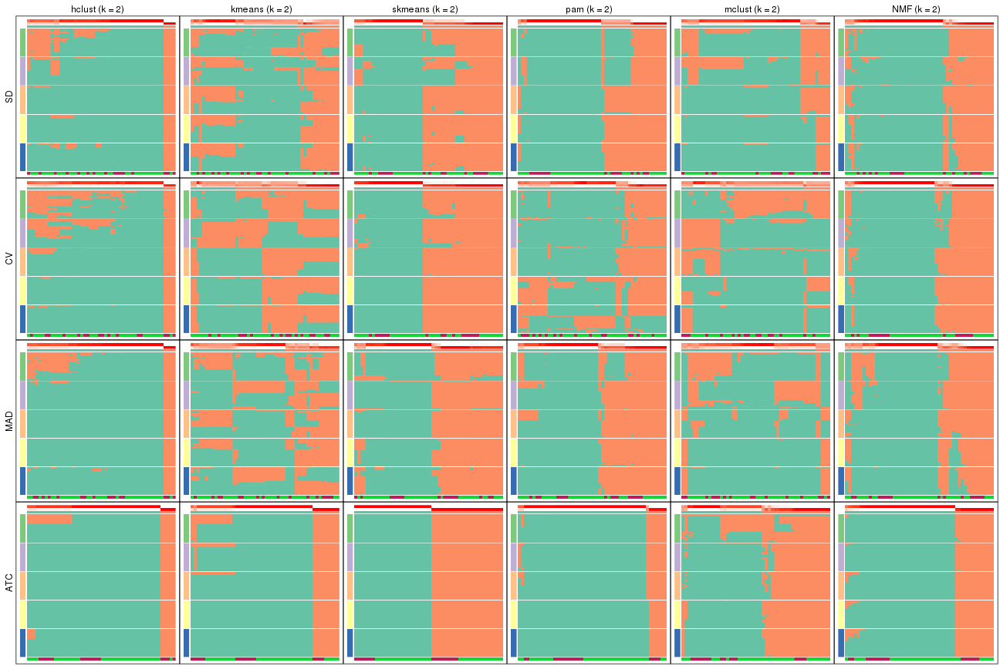
collect_plots(res_list, k = 3, fun = membership_heatmap, mc.cores = 4)
collect_plots(res_list, k = 4, fun = membership_heatmap, mc.cores = 4)
collect_plots(res_list, k = 5, fun = membership_heatmap, mc.cores = 4)
collect_plots(res_list, k = 6, fun = membership_heatmap, mc.cores = 4)
Signature heatmaps for all methods. (What is a signature heatmap?)
Note in following heatmaps, rows are scaled.
collect_plots(res_list, k = 2, fun = get_signatures, mc.cores = 4)
collect_plots(res_list, k = 3, fun = get_signatures, mc.cores = 4)
collect_plots(res_list, k = 4, fun = get_signatures, mc.cores = 4)
collect_plots(res_list, k = 5, fun = get_signatures, mc.cores = 4)
collect_plots(res_list, k = 6, fun = get_signatures, mc.cores = 4)
The statistics used for measuring the stability of consensus partitioning. (How are they defined?)
get_stats(res_list, k = 2)
#> k 1-PAC mean_silhouette concordance area_increased Rand Jaccard
#> SD:NMF 2 0.755 0.826 0.933 0.458 0.542 0.542
#> CV:NMF 2 0.759 0.834 0.933 0.479 0.510 0.510
#> MAD:NMF 2 0.451 0.692 0.879 0.476 0.519 0.519
#> ATC:NMF 2 0.998 0.970 0.985 0.404 0.607 0.607
#> SD:skmeans 2 0.509 0.848 0.914 0.503 0.493 0.493
#> CV:skmeans 2 0.995 0.966 0.977 0.507 0.493 0.493
#> MAD:skmeans 2 0.836 0.858 0.930 0.510 0.491 0.491
#> ATC:skmeans 2 1.000 1.000 1.000 0.510 0.491 0.491
#> SD:mclust 2 0.352 0.725 0.860 0.315 0.673 0.673
#> CV:mclust 2 0.291 0.142 0.666 0.329 0.699 0.699
#> MAD:mclust 2 0.191 0.463 0.785 0.307 0.816 0.816
#> ATC:mclust 2 0.512 0.824 0.902 0.496 0.493 0.493
#> SD:kmeans 2 0.324 0.510 0.778 0.462 0.589 0.589
#> CV:kmeans 2 0.377 0.265 0.622 0.465 0.571 0.571
#> MAD:kmeans 2 0.310 0.490 0.709 0.475 0.530 0.530
#> ATC:kmeans 2 0.628 0.932 0.959 0.335 0.699 0.699
#> SD:pam 2 0.590 0.788 0.897 0.462 0.497 0.497
#> CV:pam 2 0.340 0.679 0.809 0.449 0.542 0.542
#> MAD:pam 2 0.552 0.857 0.929 0.495 0.493 0.493
#> ATC:pam 2 1.000 0.956 0.982 0.247 0.754 0.754
#> SD:hclust 2 0.640 0.884 0.922 0.244 0.850 0.850
#> CV:hclust 2 0.372 0.856 0.877 0.264 0.850 0.850
#> MAD:hclust 2 0.658 0.924 0.945 0.212 0.850 0.850
#> ATC:hclust 2 1.000 0.961 0.974 0.213 0.816 0.816
get_stats(res_list, k = 3)
#> k 1-PAC mean_silhouette concordance area_increased Rand Jaccard
#> SD:NMF 3 0.497 0.665 0.851 0.409 0.714 0.522
#> CV:NMF 3 0.598 0.795 0.902 0.369 0.654 0.418
#> MAD:NMF 3 0.618 0.773 0.889 0.380 0.666 0.434
#> ATC:NMF 3 0.543 0.744 0.847 0.589 0.647 0.463
#> SD:skmeans 3 0.747 0.875 0.934 0.346 0.725 0.495
#> CV:skmeans 3 0.792 0.810 0.916 0.336 0.747 0.527
#> MAD:skmeans 3 0.865 0.870 0.947 0.332 0.743 0.519
#> ATC:skmeans 3 0.921 0.917 0.967 0.303 0.758 0.544
#> SD:mclust 3 0.377 0.766 0.798 0.985 0.552 0.380
#> CV:mclust 3 0.361 0.531 0.720 0.839 0.531 0.389
#> MAD:mclust 3 0.280 0.748 0.781 0.956 0.402 0.312
#> ATC:mclust 3 0.321 0.532 0.698 0.199 0.669 0.422
#> SD:kmeans 3 0.399 0.599 0.785 0.401 0.664 0.464
#> CV:kmeans 3 0.416 0.634 0.803 0.367 0.602 0.385
#> MAD:kmeans 3 0.491 0.637 0.830 0.387 0.661 0.439
#> ATC:kmeans 3 0.810 0.859 0.921 0.873 0.657 0.509
#> SD:pam 3 0.500 0.633 0.830 0.285 0.831 0.670
#> CV:pam 3 0.388 0.683 0.803 0.228 0.806 0.674
#> MAD:pam 3 0.562 0.681 0.846 0.240 0.833 0.672
#> ATC:pam 3 0.963 0.941 0.978 0.941 0.771 0.697
#> SD:hclust 3 0.445 0.804 0.873 0.919 0.752 0.708
#> CV:hclust 3 0.258 0.654 0.760 0.902 0.752 0.708
#> MAD:hclust 3 0.586 0.850 0.911 1.093 0.752 0.708
#> ATC:hclust 3 0.468 0.699 0.854 1.598 0.587 0.494
get_stats(res_list, k = 4)
#> k 1-PAC mean_silhouette concordance area_increased Rand Jaccard
#> SD:NMF 4 0.531 0.701 0.785 0.1357 0.796 0.510
#> CV:NMF 4 0.571 0.645 0.796 0.1322 0.880 0.663
#> MAD:NMF 4 0.617 0.632 0.811 0.1366 0.784 0.458
#> ATC:NMF 4 0.858 0.842 0.930 0.1485 0.791 0.489
#> SD:skmeans 4 0.603 0.496 0.712 0.1173 0.847 0.572
#> CV:skmeans 4 0.599 0.488 0.740 0.1208 0.829 0.535
#> MAD:skmeans 4 0.704 0.761 0.860 0.1162 0.856 0.594
#> ATC:skmeans 4 0.753 0.724 0.876 0.1072 0.854 0.602
#> SD:mclust 4 0.582 0.749 0.824 0.0862 0.873 0.660
#> CV:mclust 4 0.510 0.651 0.764 0.1324 0.762 0.473
#> MAD:mclust 4 0.633 0.793 0.854 0.1612 0.894 0.709
#> ATC:mclust 4 0.832 0.799 0.921 0.1883 0.805 0.514
#> SD:kmeans 4 0.546 0.640 0.783 0.1191 0.891 0.698
#> CV:kmeans 4 0.517 0.604 0.780 0.1203 0.845 0.607
#> MAD:kmeans 4 0.602 0.753 0.838 0.1157 0.866 0.640
#> ATC:kmeans 4 0.641 0.664 0.804 0.1457 0.806 0.525
#> SD:pam 4 0.589 0.560 0.770 0.1424 0.750 0.480
#> CV:pam 4 0.527 0.679 0.778 0.2209 0.782 0.567
#> MAD:pam 4 0.568 0.564 0.758 0.1457 0.824 0.557
#> ATC:pam 4 0.881 0.883 0.950 0.2206 0.909 0.828
#> SD:hclust 4 0.430 0.592 0.769 0.4282 0.718 0.532
#> CV:hclust 4 0.392 0.643 0.751 0.3156 0.706 0.512
#> MAD:hclust 4 0.417 0.728 0.814 0.4886 0.758 0.597
#> ATC:hclust 4 0.516 0.605 0.824 0.1707 0.878 0.722
get_stats(res_list, k = 5)
#> k 1-PAC mean_silhouette concordance area_increased Rand Jaccard
#> SD:NMF 5 0.603 0.595 0.777 0.0862 0.905 0.666
#> CV:NMF 5 0.643 0.517 0.731 0.0732 0.849 0.496
#> MAD:NMF 5 0.654 0.716 0.836 0.0743 0.828 0.440
#> ATC:NMF 5 0.742 0.699 0.841 0.0634 0.933 0.746
#> SD:skmeans 5 0.665 0.580 0.756 0.0694 0.873 0.540
#> CV:skmeans 5 0.691 0.656 0.811 0.0690 0.875 0.545
#> MAD:skmeans 5 0.654 0.539 0.760 0.0666 0.885 0.578
#> ATC:skmeans 5 0.747 0.661 0.837 0.0616 0.890 0.624
#> SD:mclust 5 0.579 0.717 0.812 0.0942 0.954 0.847
#> CV:mclust 5 0.562 0.558 0.755 0.1031 0.920 0.747
#> MAD:mclust 5 0.616 0.734 0.834 0.0691 0.932 0.779
#> ATC:mclust 5 0.809 0.859 0.906 0.0872 0.926 0.747
#> SD:kmeans 5 0.635 0.682 0.800 0.0722 0.842 0.517
#> CV:kmeans 5 0.708 0.780 0.852 0.0843 0.820 0.490
#> MAD:kmeans 5 0.640 0.640 0.754 0.0692 0.914 0.700
#> ATC:kmeans 5 0.685 0.716 0.822 0.0767 0.873 0.594
#> SD:pam 5 0.902 0.891 0.960 0.1145 0.856 0.614
#> CV:pam 5 0.894 0.875 0.941 0.1270 0.841 0.565
#> MAD:pam 5 0.860 0.848 0.938 0.0941 0.840 0.505
#> ATC:pam 5 0.852 0.857 0.931 0.2180 0.873 0.713
#> SD:hclust 5 0.508 0.457 0.668 0.0986 0.868 0.603
#> CV:hclust 5 0.458 0.673 0.752 0.1061 0.918 0.735
#> MAD:hclust 5 0.509 0.694 0.800 0.1036 0.925 0.791
#> ATC:hclust 5 0.520 0.595 0.757 0.1367 0.897 0.711
get_stats(res_list, k = 6)
#> k 1-PAC mean_silhouette concordance area_increased Rand Jaccard
#> SD:NMF 6 0.617 0.476 0.671 0.0467 0.899 0.569
#> CV:NMF 6 0.658 0.603 0.781 0.0410 0.883 0.507
#> MAD:NMF 6 0.660 0.499 0.728 0.0396 0.944 0.738
#> ATC:NMF 6 0.737 0.645 0.822 0.0403 0.993 0.964
#> SD:skmeans 6 0.694 0.586 0.766 0.0390 0.936 0.690
#> CV:skmeans 6 0.698 0.584 0.774 0.0376 0.962 0.803
#> MAD:skmeans 6 0.684 0.497 0.731 0.0397 0.940 0.710
#> ATC:skmeans 6 0.747 0.641 0.790 0.0376 0.909 0.629
#> SD:mclust 6 0.657 0.603 0.782 0.0613 0.918 0.706
#> CV:mclust 6 0.664 0.526 0.751 0.0520 0.819 0.432
#> MAD:mclust 6 0.698 0.693 0.811 0.0596 0.936 0.746
#> ATC:mclust 6 0.899 0.831 0.926 0.0406 0.971 0.871
#> SD:kmeans 6 0.708 0.571 0.706 0.0531 0.882 0.520
#> CV:kmeans 6 0.747 0.712 0.822 0.0568 0.987 0.939
#> MAD:kmeans 6 0.685 0.621 0.755 0.0487 0.939 0.736
#> ATC:kmeans 6 0.748 0.561 0.769 0.0529 0.986 0.940
#> SD:pam 6 0.840 0.841 0.896 0.0864 0.901 0.616
#> CV:pam 6 0.809 0.632 0.795 0.0729 0.861 0.491
#> MAD:pam 6 0.807 0.803 0.897 0.0801 0.906 0.606
#> ATC:pam 6 0.737 0.754 0.875 0.1411 0.809 0.445
#> SD:hclust 6 0.622 0.631 0.788 0.0706 0.884 0.556
#> CV:hclust 6 0.673 0.720 0.812 0.0630 0.987 0.942
#> MAD:hclust 6 0.574 0.636 0.765 0.0622 0.998 0.991
#> ATC:hclust 6 0.609 0.552 0.763 0.0540 0.900 0.662
Following heatmap plots the partition for each combination of methods and the lightness correspond to the silhouette scores for samples in each method. On top the consensus subgroup is inferred from all methods by taking the mean silhouette scores as weight.
collect_stats(res_list, k = 2)

collect_stats(res_list, k = 3)
collect_stats(res_list, k = 4)
collect_stats(res_list, k = 5)
collect_stats(res_list, k = 6)
Collect partitions from all methods:
collect_classes(res_list, k = 2)
collect_classes(res_list, k = 3)
collect_classes(res_list, k = 4)
collect_classes(res_list, k = 5)

collect_classes(res_list, k = 6)
Overlap of top rows from different top-row methods:
top_rows_overlap(res_list, top_n = 1000, method = "euler")
top_rows_overlap(res_list, top_n = 2000, method = "euler")
top_rows_overlap(res_list, top_n = 3000, method = "euler")
top_rows_overlap(res_list, top_n = 4000, method = "euler")
top_rows_overlap(res_list, top_n = 5000, method = "euler")
Also visualize the correspondance of rankings between different top-row methods:
top_rows_overlap(res_list, top_n = 1000, method = "correspondance")
top_rows_overlap(res_list, top_n = 2000, method = "correspondance")
top_rows_overlap(res_list, top_n = 3000, method = "correspondance")
top_rows_overlap(res_list, top_n = 4000, method = "correspondance")
top_rows_overlap(res_list, top_n = 5000, method = "correspondance")
Heatmaps of the top rows:
top_rows_heatmap(res_list, top_n = 1000)
top_rows_heatmap(res_list, top_n = 2000)
top_rows_heatmap(res_list, top_n = 3000)
top_rows_heatmap(res_list, top_n = 4000)
top_rows_heatmap(res_list, top_n = 5000)
Test correlation between subgroups and known annotations. If the known annotation is numeric, one-way ANOVA test is applied, and if the known annotation is discrete, chi-squared contingency table test is applied.
test_to_known_factors(res_list, k = 2)
#> n disease.state(p) k
#> SD:NMF 45 0.7373 2
#> CV:NMF 44 0.9518 2
#> MAD:NMF 39 0.1942 2
#> ATC:NMF 50 0.3544 2
#> SD:skmeans 50 0.6009 2
#> CV:skmeans 50 0.6009 2
#> MAD:skmeans 46 0.5293 2
#> ATC:skmeans 50 0.6188 2
#> SD:mclust 43 0.3591 2
#> CV:mclust 8 NA 2
#> MAD:mclust 34 NA 2
#> ATC:mclust 46 0.0814 2
#> SD:kmeans 34 0.6356 2
#> CV:kmeans 11 NA 2
#> MAD:kmeans 28 0.4447 2
#> ATC:kmeans 49 0.5510 2
#> SD:pam 48 0.3545 2
#> CV:pam 45 0.9331 2
#> MAD:pam 49 0.4201 2
#> ATC:pam 49 0.1522 2
#> SD:hclust 50 0.1728 2
#> CV:hclust 50 0.1728 2
#> MAD:hclust 50 0.1728 2
#> ATC:hclust 50 0.0548 2
test_to_known_factors(res_list, k = 3)
#> n disease.state(p) k
#> SD:NMF 42 0.2569 3
#> CV:NMF 46 0.4297 3
#> MAD:NMF 47 0.2441 3
#> ATC:NMF 46 0.6995 3
#> SD:skmeans 50 0.8294 3
#> CV:skmeans 45 0.9636 3
#> MAD:skmeans 48 0.9124 3
#> ATC:skmeans 46 0.2934 3
#> SD:mclust 48 0.8704 3
#> CV:mclust 38 0.7099 3
#> MAD:mclust 49 0.7325 3
#> ATC:mclust 35 1.0000 3
#> SD:kmeans 40 0.8436 3
#> CV:kmeans 42 0.6620 3
#> MAD:kmeans 40 0.9905 3
#> ATC:kmeans 47 0.4686 3
#> SD:pam 33 0.6033 3
#> CV:pam 45 0.0472 3
#> MAD:pam 41 0.9405 3
#> ATC:pam 49 0.1624 3
#> SD:hclust 49 0.1638 3
#> CV:hclust 41 0.1925 3
#> MAD:hclust 49 0.1638 3
#> ATC:hclust 39 0.0883 3
test_to_known_factors(res_list, k = 4)
#> n disease.state(p) k
#> SD:NMF 47 0.1481 4
#> CV:NMF 41 0.5058 4
#> MAD:NMF 39 0.2326 4
#> ATC:NMF 46 0.0982 4
#> SD:skmeans 32 0.4487 4
#> CV:skmeans 27 0.8630 4
#> MAD:skmeans 44 0.2951 4
#> ATC:skmeans 42 0.1656 4
#> SD:mclust 46 0.2447 4
#> CV:mclust 44 0.2182 4
#> MAD:mclust 48 0.2712 4
#> ATC:mclust 43 0.1042 4
#> SD:kmeans 44 0.3074 4
#> CV:kmeans 36 0.2058 4
#> MAD:kmeans 48 0.3058 4
#> ATC:kmeans 41 0.3333 4
#> SD:pam 36 0.5802 4
#> CV:pam 42 0.0410 4
#> MAD:pam 35 0.4217 4
#> ATC:pam 49 0.0518 4
#> SD:hclust 40 0.2156 4
#> CV:hclust 43 0.1915 4
#> MAD:hclust 49 0.2063 4
#> ATC:hclust 34 0.0906 4
test_to_known_factors(res_list, k = 5)
#> n disease.state(p) k
#> SD:NMF 38 0.2775 5
#> CV:NMF 27 0.5599 5
#> MAD:NMF 45 0.0816 5
#> ATC:NMF 39 0.4078 5
#> SD:skmeans 35 0.1256 5
#> CV:skmeans 41 0.2371 5
#> MAD:skmeans 34 0.1727 5
#> ATC:skmeans 38 0.3292 5
#> SD:mclust 45 0.2069 5
#> CV:mclust 40 0.1499 5
#> MAD:mclust 47 0.2022 5
#> ATC:mclust 50 0.0981 5
#> SD:kmeans 43 0.2648 5
#> CV:kmeans 44 0.2423 5
#> MAD:kmeans 38 0.1928 5
#> ATC:kmeans 44 0.0741 5
#> SD:pam 48 0.0558 5
#> CV:pam 47 0.1086 5
#> MAD:pam 48 0.0499 5
#> ATC:pam 49 0.1016 5
#> SD:hclust 27 0.1604 5
#> CV:hclust 44 0.2491 5
#> MAD:hclust 46 0.2163 5
#> ATC:hclust 34 0.1073 5
test_to_known_factors(res_list, k = 6)
#> n disease.state(p) k
#> SD:NMF 28 0.1872 6
#> CV:NMF 35 0.0671 6
#> MAD:NMF 28 0.0584 6
#> ATC:NMF 41 0.1202 6
#> SD:skmeans 36 0.2222 6
#> CV:skmeans 34 0.4315 6
#> MAD:skmeans 26 0.0609 6
#> ATC:skmeans 36 0.5561 6
#> SD:mclust 39 0.1989 6
#> CV:mclust 26 0.1337 6
#> MAD:mclust 44 0.0521 6
#> ATC:mclust 46 0.0421 6
#> SD:kmeans 37 0.1813 6
#> CV:kmeans 47 0.2091 6
#> MAD:kmeans 37 0.1652 6
#> ATC:kmeans 30 0.0342 6
#> SD:pam 46 0.2157 6
#> CV:pam 42 0.2315 6
#> MAD:pam 48 0.1283 6
#> ATC:pam 47 0.1182 6
#> SD:hclust 39 0.2293 6
#> CV:hclust 45 0.2821 6
#> MAD:hclust 41 0.1488 6
#> ATC:hclust 30 0.0360 6
The object with results only for a single top-value method and a single partition method can be extracted as:
res = res_list["SD", "hclust"]
# you can also extract it by
# res = res_list["SD:hclust"]
A summary of res and all the functions that can be applied to it:
res
#> A 'ConsensusPartition' object with k = 2, 3, 4, 5, 6.
#> On a matrix with 16753 rows and 50 columns.
#> Top rows (1000, 2000, 3000, 4000, 5000) are extracted by 'SD' method.
#> Subgroups are detected by 'hclust' method.
#> Performed in total 1250 partitions by row resampling.
#> Best k for subgroups seems to be 3.
#>
#> Following methods can be applied to this 'ConsensusPartition' object:
#> [1] "cola_report" "collect_classes" "collect_plots"
#> [4] "collect_stats" "colnames" "compare_signatures"
#> [7] "consensus_heatmap" "dimension_reduction" "functional_enrichment"
#> [10] "get_anno_col" "get_anno" "get_classes"
#> [13] "get_consensus" "get_matrix" "get_membership"
#> [16] "get_param" "get_signatures" "get_stats"
#> [19] "is_best_k" "is_stable_k" "membership_heatmap"
#> [22] "ncol" "nrow" "plot_ecdf"
#> [25] "rownames" "select_partition_number" "show"
#> [28] "suggest_best_k" "test_to_known_factors"
collect_plots() function collects all the plots made from res for all k (number of partitions)
into one single page to provide an easy and fast comparison between different k.
collect_plots(res)
The plots are:
k and the heatmap of
predicted classes for each k.k.k.k.All the plots in panels can be made by individual functions and they are plotted later in this section.
select_partition_number() produces several plots showing different
statistics for choosing “optimized” k. There are following statistics:
k;k, the area increased is defined as \(A_k - A_{k-1}\).The detailed explanations of these statistics can be found in the cola vignette.
Generally speaking, lower PAC score, higher mean silhouette score or higher
concordance corresponds to better partition. Rand index and Jaccard index
measure how similar the current partition is compared to partition with k-1.
If they are too similar, we won't accept k is better than k-1.
select_partition_number(res)
The numeric values for all these statistics can be obtained by get_stats().
get_stats(res)
#> k 1-PAC mean_silhouette concordance area_increased Rand Jaccard
#> 2 2 0.640 0.884 0.922 0.2442 0.850 0.850
#> 3 3 0.445 0.804 0.873 0.9190 0.752 0.708
#> 4 4 0.430 0.592 0.769 0.4282 0.718 0.532
#> 5 5 0.508 0.457 0.668 0.0986 0.868 0.603
#> 6 6 0.622 0.631 0.788 0.0706 0.884 0.556
suggest_best_k() suggests the best \(k\) based on these statistics. The rules are as follows:
NA.suggest_best_k(res)
#> [1] 3
Following shows the table of the partitions (You need to click the show/hide
code output link to see it). The membership matrix (columns with name p*)
is inferred by
clue::cl_consensus()
function with the SE method. Basically the value in the membership matrix
represents the probability to belong to a certain group. The finall class
label for an item is determined with the group with highest probability it
belongs to.
In get_classes() function, the entropy is calculated from the membership
matrix and the silhouette score is calculated from the consensus matrix.
cbind(get_classes(res, k = 2), get_membership(res, k = 2))
#> class entropy silhouette p1 p2
#> GSM198618 1 0.4939 0.894 0.892 0.108
#> GSM198622 1 0.0000 0.916 1.000 0.000
#> GSM198623 1 0.0376 0.916 0.996 0.004
#> GSM198626 1 0.0000 0.916 1.000 0.000
#> GSM198627 1 0.0000 0.916 1.000 0.000
#> GSM198628 1 0.0000 0.916 1.000 0.000
#> GSM198629 1 0.0000 0.916 1.000 0.000
#> GSM198630 1 0.0000 0.916 1.000 0.000
#> GSM198631 1 0.0000 0.916 1.000 0.000
#> GSM198632 1 0.3733 0.905 0.928 0.072
#> GSM198633 1 0.1843 0.916 0.972 0.028
#> GSM198634 1 0.0000 0.916 1.000 0.000
#> GSM198635 1 0.6623 0.841 0.828 0.172
#> GSM198636 1 0.0000 0.916 1.000 0.000
#> GSM198639 1 0.3879 0.903 0.924 0.076
#> GSM198641 1 0.2948 0.907 0.948 0.052
#> GSM198642 1 0.0000 0.916 1.000 0.000
#> GSM198643 1 0.0376 0.916 0.996 0.004
#> GSM198644 1 0.7453 0.778 0.788 0.212
#> GSM198645 1 0.3733 0.905 0.928 0.072
#> GSM198649 2 0.0000 1.000 0.000 1.000
#> GSM198651 1 0.4161 0.902 0.916 0.084
#> GSM198653 1 0.9286 0.648 0.656 0.344
#> GSM198654 1 0.8016 0.783 0.756 0.244
#> GSM198655 1 0.1633 0.917 0.976 0.024
#> GSM198656 1 0.0376 0.917 0.996 0.004
#> GSM198657 1 0.7883 0.790 0.764 0.236
#> GSM198658 1 0.7950 0.786 0.760 0.240
#> GSM198659 1 0.3584 0.897 0.932 0.068
#> GSM198660 1 0.3114 0.911 0.944 0.056
#> GSM198662 1 0.7883 0.790 0.764 0.236
#> GSM198663 1 0.3274 0.896 0.940 0.060
#> GSM198664 1 0.3114 0.910 0.944 0.056
#> GSM198665 1 0.7674 0.799 0.776 0.224
#> GSM198616 1 0.0376 0.916 0.996 0.004
#> GSM198617 1 0.3879 0.903 0.924 0.076
#> GSM198619 1 0.0376 0.916 0.996 0.004
#> GSM198620 2 0.0000 1.000 0.000 1.000
#> GSM198621 1 0.3879 0.903 0.924 0.076
#> GSM198624 1 0.0376 0.916 0.996 0.004
#> GSM198625 1 0.0000 0.916 1.000 0.000
#> GSM198637 1 0.0376 0.916 0.996 0.004
#> GSM198638 1 0.1843 0.916 0.972 0.028
#> GSM198640 1 0.3733 0.905 0.928 0.072
#> GSM198646 2 0.0000 1.000 0.000 1.000
#> GSM198647 2 0.0000 1.000 0.000 1.000
#> GSM198648 1 0.4022 0.893 0.920 0.080
#> GSM198650 1 0.9044 0.683 0.680 0.320
#> GSM198652 1 0.9248 0.654 0.660 0.340
#> GSM198661 1 0.7950 0.787 0.760 0.240
cbind(get_classes(res, k = 3), get_membership(res, k = 3))
#> class entropy silhouette p1 p2 p3
#> GSM198618 1 0.5426 0.831 0.820 0.092 0.088
#> GSM198622 1 0.5138 0.745 0.748 0.252 0.000
#> GSM198623 1 0.0237 0.867 0.996 0.004 0.000
#> GSM198626 1 0.0475 0.865 0.992 0.004 0.004
#> GSM198627 1 0.0892 0.866 0.980 0.020 0.000
#> GSM198628 1 0.0475 0.865 0.992 0.004 0.004
#> GSM198629 1 0.0475 0.865 0.992 0.004 0.004
#> GSM198630 1 0.0475 0.865 0.992 0.004 0.004
#> GSM198631 1 0.0475 0.865 0.992 0.004 0.004
#> GSM198632 1 0.4288 0.850 0.872 0.060 0.068
#> GSM198633 1 0.6025 0.753 0.740 0.232 0.028
#> GSM198634 1 0.5138 0.745 0.748 0.252 0.000
#> GSM198635 1 0.6902 0.782 0.732 0.100 0.168
#> GSM198636 1 0.3752 0.825 0.856 0.144 0.000
#> GSM198639 1 0.2356 0.860 0.928 0.000 0.072
#> GSM198641 2 0.1411 0.767 0.036 0.964 0.000
#> GSM198642 1 0.0661 0.866 0.988 0.008 0.004
#> GSM198643 1 0.0000 0.866 1.000 0.000 0.000
#> GSM198644 2 0.7453 0.621 0.152 0.700 0.148
#> GSM198645 1 0.4288 0.850 0.872 0.060 0.068
#> GSM198649 3 0.0237 1.000 0.004 0.000 0.996
#> GSM198651 2 0.2681 0.767 0.040 0.932 0.028
#> GSM198653 2 0.5580 0.589 0.008 0.736 0.256
#> GSM198654 1 0.5420 0.778 0.752 0.008 0.240
#> GSM198655 1 0.4748 0.823 0.832 0.144 0.024
#> GSM198656 1 0.0848 0.867 0.984 0.008 0.008
#> GSM198657 1 0.5335 0.784 0.760 0.008 0.232
#> GSM198658 1 0.5378 0.782 0.756 0.008 0.236
#> GSM198659 2 0.5580 0.507 0.256 0.736 0.008
#> GSM198660 1 0.6835 0.679 0.676 0.284 0.040
#> GSM198662 1 0.5335 0.784 0.760 0.008 0.232
#> GSM198663 2 0.1163 0.760 0.028 0.972 0.000
#> GSM198664 1 0.7319 0.390 0.548 0.420 0.032
#> GSM198665 1 0.5202 0.792 0.772 0.008 0.220
#> GSM198616 1 0.0000 0.866 1.000 0.000 0.000
#> GSM198617 1 0.2356 0.860 0.928 0.000 0.072
#> GSM198619 1 0.0000 0.866 1.000 0.000 0.000
#> GSM198620 3 0.0237 1.000 0.004 0.000 0.996
#> GSM198621 1 0.2356 0.860 0.928 0.000 0.072
#> GSM198624 1 0.0237 0.866 0.996 0.004 0.000
#> GSM198625 1 0.0475 0.865 0.992 0.004 0.004
#> GSM198637 1 0.0000 0.866 1.000 0.000 0.000
#> GSM198638 1 0.6025 0.753 0.740 0.232 0.028
#> GSM198640 1 0.4288 0.850 0.872 0.060 0.068
#> GSM198646 3 0.0237 1.000 0.004 0.000 0.996
#> GSM198647 3 0.0237 1.000 0.004 0.000 0.996
#> GSM198648 2 0.0424 0.755 0.008 0.992 0.000
#> GSM198650 1 0.6075 0.698 0.676 0.008 0.316
#> GSM198652 2 0.5848 0.581 0.012 0.720 0.268
#> GSM198661 1 0.5378 0.781 0.756 0.008 0.236
cbind(get_classes(res, k = 4), get_membership(res, k = 4))
#> class entropy silhouette p1 p2 p3 p4
#> GSM198618 1 0.5993 0.6218 0.684 0.088 0.224 0.004
#> GSM198622 1 0.6762 0.6328 0.680 0.164 0.040 0.116
#> GSM198623 3 0.4605 0.5468 0.336 0.000 0.664 0.000
#> GSM198626 1 0.0336 0.6985 0.992 0.000 0.000 0.008
#> GSM198627 1 0.0804 0.6999 0.980 0.008 0.000 0.012
#> GSM198628 1 0.0927 0.6965 0.976 0.000 0.016 0.008
#> GSM198629 1 0.0657 0.6999 0.984 0.000 0.012 0.004
#> GSM198630 1 0.0336 0.6985 0.992 0.000 0.000 0.008
#> GSM198631 1 0.0376 0.6993 0.992 0.000 0.004 0.004
#> GSM198632 1 0.5070 0.6524 0.748 0.060 0.192 0.000
#> GSM198633 1 0.7433 0.6307 0.648 0.144 0.096 0.112
#> GSM198634 1 0.6762 0.6328 0.680 0.164 0.040 0.116
#> GSM198635 1 0.6538 0.6011 0.676 0.100 0.200 0.024
#> GSM198636 3 0.7999 0.3696 0.364 0.088 0.484 0.064
#> GSM198639 3 0.4989 0.0845 0.472 0.000 0.528 0.000
#> GSM198641 2 0.1356 0.7617 0.032 0.960 0.000 0.008
#> GSM198642 3 0.4072 0.6091 0.252 0.000 0.748 0.000
#> GSM198643 1 0.4222 0.5161 0.728 0.000 0.272 0.000
#> GSM198644 2 0.7245 0.6089 0.072 0.652 0.100 0.176
#> GSM198645 1 0.5791 0.5491 0.656 0.060 0.284 0.000
#> GSM198649 4 0.3649 1.0000 0.000 0.000 0.204 0.796
#> GSM198651 2 0.2644 0.7570 0.032 0.908 0.000 0.060
#> GSM198653 2 0.5664 0.6309 0.000 0.720 0.124 0.156
#> GSM198654 3 0.0188 0.6183 0.000 0.000 0.996 0.004
#> GSM198655 3 0.8066 0.3870 0.344 0.088 0.496 0.072
#> GSM198656 3 0.4040 0.6121 0.248 0.000 0.752 0.000
#> GSM198657 3 0.0188 0.6259 0.004 0.000 0.996 0.000
#> GSM198658 3 0.0376 0.6233 0.004 0.000 0.992 0.004
#> GSM198659 2 0.7204 0.4892 0.176 0.652 0.060 0.112
#> GSM198660 1 0.9289 0.3371 0.412 0.200 0.276 0.112
#> GSM198662 3 0.0188 0.6262 0.004 0.000 0.996 0.000
#> GSM198663 2 0.2589 0.7201 0.000 0.884 0.000 0.116
#> GSM198664 1 0.8618 0.3354 0.456 0.336 0.096 0.112
#> GSM198665 3 0.1557 0.6400 0.056 0.000 0.944 0.000
#> GSM198616 1 0.4830 0.2058 0.608 0.000 0.392 0.000
#> GSM198617 3 0.4999 0.0238 0.492 0.000 0.508 0.000
#> GSM198619 1 0.4830 0.2058 0.608 0.000 0.392 0.000
#> GSM198620 4 0.3649 1.0000 0.000 0.000 0.204 0.796
#> GSM198621 3 0.4999 0.0238 0.492 0.000 0.508 0.000
#> GSM198624 1 0.0817 0.6998 0.976 0.000 0.024 0.000
#> GSM198625 1 0.0336 0.6985 0.992 0.000 0.000 0.008
#> GSM198637 1 0.4222 0.5161 0.728 0.000 0.272 0.000
#> GSM198638 1 0.7433 0.6307 0.648 0.144 0.096 0.112
#> GSM198640 1 0.5070 0.6524 0.748 0.060 0.192 0.000
#> GSM198646 4 0.3649 1.0000 0.000 0.000 0.204 0.796
#> GSM198647 4 0.3649 1.0000 0.000 0.000 0.204 0.796
#> GSM198648 2 0.0336 0.7580 0.000 0.992 0.000 0.008
#> GSM198650 3 0.4359 0.5497 0.084 0.000 0.816 0.100
#> GSM198652 2 0.5859 0.6249 0.000 0.704 0.140 0.156
#> GSM198661 3 0.0000 0.6222 0.000 0.000 1.000 0.000
cbind(get_classes(res, k = 5), get_membership(res, k = 5))
#> class entropy silhouette p1 p2 p3 p4 p5
#> GSM198618 5 0.7171 0.01815 0.384 0.028 0.196 0.000 0.392
#> GSM198622 5 0.4954 0.44659 0.352 0.020 0.012 0.000 0.616
#> GSM198623 3 0.4366 0.48302 0.320 0.000 0.664 0.000 0.016
#> GSM198626 1 0.0324 0.51900 0.992 0.000 0.000 0.004 0.004
#> GSM198627 1 0.0510 0.51099 0.984 0.000 0.000 0.000 0.016
#> GSM198628 1 0.0994 0.51218 0.972 0.004 0.004 0.004 0.016
#> GSM198629 1 0.0404 0.52182 0.988 0.000 0.012 0.000 0.000
#> GSM198630 1 0.0324 0.51900 0.992 0.000 0.000 0.004 0.004
#> GSM198631 1 0.0324 0.52086 0.992 0.000 0.004 0.000 0.004
#> GSM198632 1 0.6366 -0.08333 0.440 0.000 0.164 0.000 0.396
#> GSM198633 5 0.5759 0.45158 0.328 0.016 0.068 0.000 0.588
#> GSM198634 5 0.5029 0.43101 0.376 0.020 0.012 0.000 0.592
#> GSM198635 5 0.7097 0.32216 0.376 0.024 0.168 0.004 0.428
#> GSM198636 5 0.8571 -0.00262 0.168 0.092 0.152 0.096 0.492
#> GSM198639 3 0.6410 0.12399 0.284 0.000 0.504 0.000 0.212
#> GSM198641 2 0.2389 0.76549 0.004 0.880 0.000 0.000 0.116
#> GSM198642 3 0.3942 0.57466 0.232 0.000 0.748 0.000 0.020
#> GSM198643 1 0.6618 0.18195 0.452 0.000 0.244 0.000 0.304
#> GSM198644 2 0.6248 0.61486 0.008 0.660 0.044 0.164 0.124
#> GSM198645 1 0.6725 -0.02785 0.400 0.000 0.256 0.000 0.344
#> GSM198649 4 0.1965 1.00000 0.000 0.000 0.096 0.904 0.000
#> GSM198651 2 0.1864 0.75609 0.004 0.924 0.000 0.004 0.068
#> GSM198653 2 0.4473 0.69155 0.000 0.768 0.112 0.116 0.004
#> GSM198654 3 0.0613 0.66061 0.000 0.004 0.984 0.004 0.008
#> GSM198655 5 0.8661 -0.01193 0.152 0.108 0.164 0.092 0.484
#> GSM198656 3 0.3912 0.57843 0.228 0.000 0.752 0.000 0.020
#> GSM198657 3 0.0162 0.67651 0.004 0.000 0.996 0.000 0.000
#> GSM198658 3 0.0324 0.67362 0.000 0.000 0.992 0.004 0.004
#> GSM198659 2 0.5886 0.30304 0.040 0.508 0.032 0.000 0.420
#> GSM198660 5 0.7604 0.37977 0.228 0.068 0.248 0.000 0.456
#> GSM198662 3 0.0162 0.67611 0.000 0.000 0.996 0.000 0.004
#> GSM198663 2 0.3210 0.72161 0.000 0.788 0.000 0.000 0.212
#> GSM198664 5 0.7418 0.41078 0.232 0.204 0.068 0.000 0.496
#> GSM198665 3 0.1549 0.66504 0.016 0.000 0.944 0.000 0.040
#> GSM198616 1 0.6718 0.09488 0.384 0.000 0.368 0.000 0.248
#> GSM198617 3 0.6510 0.08856 0.284 0.000 0.484 0.000 0.232
#> GSM198619 1 0.6718 0.09488 0.384 0.000 0.368 0.000 0.248
#> GSM198620 4 0.1965 1.00000 0.000 0.000 0.096 0.904 0.000
#> GSM198621 3 0.6510 0.08856 0.284 0.000 0.484 0.000 0.232
#> GSM198624 1 0.1012 0.51578 0.968 0.000 0.020 0.000 0.012
#> GSM198625 1 0.0324 0.51900 0.992 0.000 0.000 0.004 0.004
#> GSM198637 1 0.6618 0.18195 0.452 0.000 0.244 0.000 0.304
#> GSM198638 5 0.5759 0.45158 0.328 0.016 0.068 0.000 0.588
#> GSM198640 1 0.6366 -0.08333 0.440 0.000 0.164 0.000 0.396
#> GSM198646 4 0.1965 1.00000 0.000 0.000 0.096 0.904 0.000
#> GSM198647 4 0.1965 1.00000 0.000 0.000 0.096 0.904 0.000
#> GSM198648 2 0.1908 0.76725 0.000 0.908 0.000 0.000 0.092
#> GSM198650 3 0.6414 0.18646 0.000 0.032 0.500 0.084 0.384
#> GSM198652 2 0.4657 0.68567 0.000 0.752 0.128 0.116 0.004
#> GSM198661 3 0.0000 0.67410 0.000 0.000 1.000 0.000 0.000
cbind(get_classes(res, k = 6), get_membership(res, k = 6))
#> class entropy silhouette p1 p2 p3 p4 p5 p6
#> GSM198618 5 0.4046 0.6226 0.068 0.004 0.176 0.000 0.752 0.000
#> GSM198622 5 0.2733 0.6367 0.080 0.056 0.000 0.000 0.864 0.000
#> GSM198623 3 0.4755 0.5476 0.244 0.000 0.664 0.000 0.088 0.004
#> GSM198626 1 0.1092 0.9335 0.960 0.000 0.000 0.000 0.020 0.020
#> GSM198627 1 0.0922 0.9271 0.968 0.004 0.000 0.000 0.024 0.004
#> GSM198628 1 0.1563 0.9119 0.932 0.000 0.000 0.000 0.012 0.056
#> GSM198629 1 0.2002 0.8979 0.908 0.000 0.012 0.000 0.076 0.004
#> GSM198630 1 0.1092 0.9335 0.960 0.000 0.000 0.000 0.020 0.020
#> GSM198631 1 0.1674 0.9088 0.924 0.000 0.004 0.000 0.068 0.004
#> GSM198632 5 0.4308 0.6332 0.120 0.000 0.152 0.000 0.728 0.000
#> GSM198633 5 0.3557 0.6517 0.056 0.056 0.056 0.000 0.832 0.000
#> GSM198634 5 0.3254 0.6187 0.124 0.056 0.000 0.000 0.820 0.000
#> GSM198635 5 0.5182 0.5812 0.140 0.020 0.144 0.008 0.688 0.000
#> GSM198636 6 0.1124 0.7221 0.036 0.008 0.000 0.000 0.000 0.956
#> GSM198639 3 0.5253 0.0204 0.084 0.000 0.504 0.000 0.408 0.004
#> GSM198641 2 0.2660 0.7111 0.000 0.868 0.000 0.000 0.048 0.084
#> GSM198642 3 0.4151 0.6175 0.164 0.000 0.748 0.000 0.084 0.004
#> GSM198643 5 0.5516 0.4471 0.160 0.000 0.244 0.000 0.588 0.008
#> GSM198644 2 0.6219 0.5040 0.008 0.568 0.020 0.100 0.024 0.280
#> GSM198645 5 0.4777 0.5509 0.088 0.000 0.248 0.000 0.660 0.004
#> GSM198649 4 0.0000 1.0000 0.000 0.000 0.000 1.000 0.000 0.000
#> GSM198651 2 0.2357 0.6956 0.000 0.872 0.000 0.000 0.012 0.116
#> GSM198653 2 0.4787 0.6547 0.004 0.752 0.104 0.100 0.016 0.024
#> GSM198654 3 0.0964 0.6486 0.000 0.004 0.968 0.016 0.012 0.000
#> GSM198655 6 0.1528 0.7265 0.028 0.016 0.012 0.000 0.000 0.944
#> GSM198656 3 0.4117 0.6201 0.160 0.000 0.752 0.000 0.084 0.004
#> GSM198657 3 0.0146 0.6798 0.000 0.000 0.996 0.000 0.004 0.000
#> GSM198658 3 0.0622 0.6762 0.000 0.000 0.980 0.008 0.012 0.000
#> GSM198659 2 0.4297 0.3018 0.000 0.532 0.012 0.004 0.452 0.000
#> GSM198660 5 0.4697 0.4801 0.008 0.084 0.224 0.000 0.684 0.000
#> GSM198662 3 0.0363 0.6806 0.000 0.000 0.988 0.000 0.012 0.000
#> GSM198663 2 0.2300 0.6675 0.000 0.856 0.000 0.000 0.144 0.000
#> GSM198664 5 0.4173 0.4258 0.012 0.212 0.044 0.000 0.732 0.000
#> GSM198665 3 0.1285 0.6771 0.000 0.000 0.944 0.000 0.052 0.004
#> GSM198616 5 0.5792 0.1434 0.144 0.000 0.368 0.000 0.480 0.008
#> GSM198617 3 0.5272 -0.0360 0.084 0.000 0.484 0.000 0.428 0.004
#> GSM198619 5 0.5792 0.1434 0.144 0.000 0.368 0.000 0.480 0.008
#> GSM198620 4 0.0000 1.0000 0.000 0.000 0.000 1.000 0.000 0.000
#> GSM198621 3 0.5272 -0.0360 0.084 0.000 0.484 0.000 0.428 0.004
#> GSM198624 1 0.2393 0.8742 0.884 0.000 0.020 0.000 0.092 0.004
#> GSM198625 1 0.1003 0.9318 0.964 0.000 0.000 0.000 0.016 0.020
#> GSM198637 5 0.5516 0.4471 0.160 0.000 0.244 0.000 0.588 0.008
#> GSM198638 5 0.3557 0.6517 0.056 0.056 0.056 0.000 0.832 0.000
#> GSM198640 5 0.4308 0.6332 0.120 0.000 0.152 0.000 0.728 0.000
#> GSM198646 4 0.0000 1.0000 0.000 0.000 0.000 1.000 0.000 0.000
#> GSM198647 4 0.0000 1.0000 0.000 0.000 0.000 1.000 0.000 0.000
#> GSM198648 2 0.2250 0.7134 0.000 0.896 0.000 0.000 0.064 0.040
#> GSM198650 6 0.6426 0.4703 0.012 0.020 0.316 0.080 0.036 0.536
#> GSM198652 2 0.5326 0.6428 0.004 0.720 0.112 0.100 0.032 0.032
#> GSM198661 3 0.0260 0.6780 0.000 0.000 0.992 0.000 0.008 0.000
Heatmaps for the consensus matrix. It visualizes the probability of two samples to be in a same group.
consensus_heatmap(res, k = 2)
consensus_heatmap(res, k = 3)
consensus_heatmap(res, k = 4)
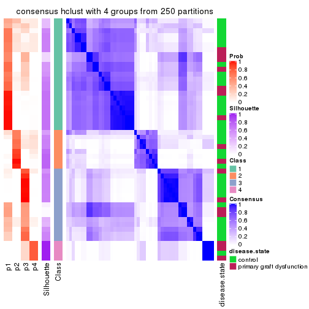
consensus_heatmap(res, k = 5)
consensus_heatmap(res, k = 6)
Heatmaps for the membership of samples in all partitions to see how consistent they are:
membership_heatmap(res, k = 2)
membership_heatmap(res, k = 3)
membership_heatmap(res, k = 4)
membership_heatmap(res, k = 5)
membership_heatmap(res, k = 6)
As soon as we have had the classes for columns, we can look for signatures which are significantly different between classes which can be candidate marks for certain classes. Following are the heatmaps for signatures.
Signature heatmaps where rows are scaled:
get_signatures(res, k = 2)

get_signatures(res, k = 3)
get_signatures(res, k = 4)
get_signatures(res, k = 5)
get_signatures(res, k = 6)
Signature heatmaps where rows are not scaled:
get_signatures(res, k = 2, scale_rows = FALSE)
get_signatures(res, k = 3, scale_rows = FALSE)
get_signatures(res, k = 4, scale_rows = FALSE)
get_signatures(res, k = 5, scale_rows = FALSE)
get_signatures(res, k = 6, scale_rows = FALSE)
Compare the overlap of signatures from different k:
compare_signatures(res)

get_signature() returns a data frame invisibly. TO get the list of signatures, the function
call should be assigned to a variable explicitly. In following code, if plot argument is set
to FALSE, no heatmap is plotted while only the differential analysis is performed.
# code only for demonstration
tb = get_signature(res, k = ..., plot = FALSE)
An example of the output of tb is:
#> which_row fdr mean_1 mean_2 scaled_mean_1 scaled_mean_2 km
#> 1 38 0.042760348 8.373488 9.131774 -0.5533452 0.5164555 1
#> 2 40 0.018707592 7.106213 8.469186 -0.6173731 0.5762149 1
#> 3 55 0.019134737 10.221463 11.207825 -0.6159697 0.5749050 1
#> 4 59 0.006059896 5.921854 7.869574 -0.6899429 0.6439467 1
#> 5 60 0.018055526 8.928898 10.211722 -0.6204761 0.5791110 1
#> 6 98 0.009384629 15.714769 14.887706 0.6635654 -0.6193277 2
...
The columns in tb are:
which_row: row indices corresponding to the input matrix.fdr: FDR for the differential test. mean_x: The mean value in group x.scaled_mean_x: The mean value in group x after rows are scaled.km: Row groups if k-means clustering is applied to rows.UMAP plot which shows how samples are separated.
dimension_reduction(res, k = 2, method = "UMAP")
dimension_reduction(res, k = 3, method = "UMAP")
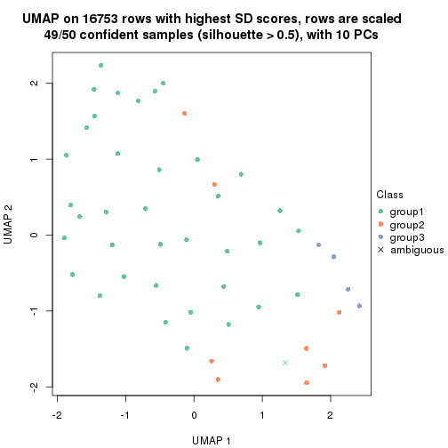
dimension_reduction(res, k = 4, method = "UMAP")
dimension_reduction(res, k = 5, method = "UMAP")
dimension_reduction(res, k = 6, method = "UMAP")
Following heatmap shows how subgroups are split when increasing k:
collect_classes(res)
Test correlation between subgroups and known annotations. If the known annotation is numeric, one-way ANOVA test is applied, and if the known annotation is discrete, chi-squared contingency table test is applied.
test_to_known_factors(res)
#> n disease.state(p) k
#> SD:hclust 50 0.173 2
#> SD:hclust 49 0.164 3
#> SD:hclust 40 0.216 4
#> SD:hclust 27 0.160 5
#> SD:hclust 39 0.229 6
If matrix rows can be associated to genes, consider to use GO_Enrichment(res,
...) to perform function enrichment for the signature genes.
The object with results only for a single top-value method and a single partition method can be extracted as:
res = res_list["SD", "kmeans"]
# you can also extract it by
# res = res_list["SD:kmeans"]
A summary of res and all the functions that can be applied to it:
res
#> A 'ConsensusPartition' object with k = 2, 3, 4, 5, 6.
#> On a matrix with 16753 rows and 50 columns.
#> Top rows (1000, 2000, 3000, 4000, 5000) are extracted by 'SD' method.
#> Subgroups are detected by 'kmeans' method.
#> Performed in total 1250 partitions by row resampling.
#> Best k for subgroups seems to be 5.
#>
#> Following methods can be applied to this 'ConsensusPartition' object:
#> [1] "cola_report" "collect_classes" "collect_plots"
#> [4] "collect_stats" "colnames" "compare_signatures"
#> [7] "consensus_heatmap" "dimension_reduction" "functional_enrichment"
#> [10] "get_anno_col" "get_anno" "get_classes"
#> [13] "get_consensus" "get_matrix" "get_membership"
#> [16] "get_param" "get_signatures" "get_stats"
#> [19] "is_best_k" "is_stable_k" "membership_heatmap"
#> [22] "ncol" "nrow" "plot_ecdf"
#> [25] "rownames" "select_partition_number" "show"
#> [28] "suggest_best_k" "test_to_known_factors"
collect_plots() function collects all the plots made from res for all k (number of partitions)
into one single page to provide an easy and fast comparison between different k.
collect_plots(res)
The plots are:
k and the heatmap of
predicted classes for each k.k.k.k.All the plots in panels can be made by individual functions and they are plotted later in this section.
select_partition_number() produces several plots showing different
statistics for choosing “optimized” k. There are following statistics:
k;k, the area increased is defined as \(A_k - A_{k-1}\).The detailed explanations of these statistics can be found in the cola vignette.
Generally speaking, lower PAC score, higher mean silhouette score or higher
concordance corresponds to better partition. Rand index and Jaccard index
measure how similar the current partition is compared to partition with k-1.
If they are too similar, we won't accept k is better than k-1.
select_partition_number(res)
The numeric values for all these statistics can be obtained by get_stats().
get_stats(res)
#> k 1-PAC mean_silhouette concordance area_increased Rand Jaccard
#> 2 2 0.324 0.510 0.778 0.4616 0.589 0.589
#> 3 3 0.399 0.599 0.785 0.4007 0.664 0.464
#> 4 4 0.546 0.640 0.783 0.1191 0.891 0.698
#> 5 5 0.635 0.682 0.800 0.0722 0.842 0.517
#> 6 6 0.708 0.571 0.706 0.0531 0.882 0.520
suggest_best_k() suggests the best \(k\) based on these statistics. The rules are as follows:
NA.suggest_best_k(res)
#> [1] 5
Following shows the table of the partitions (You need to click the show/hide
code output link to see it). The membership matrix (columns with name p*)
is inferred by
clue::cl_consensus()
function with the SE method. Basically the value in the membership matrix
represents the probability to belong to a certain group. The finall class
label for an item is determined with the group with highest probability it
belongs to.
In get_classes() function, the entropy is calculated from the membership
matrix and the silhouette score is calculated from the consensus matrix.
cbind(get_classes(res, k = 2), get_membership(res, k = 2))
#> class entropy silhouette p1 p2
#> GSM198618 1 0.9393 -0.4826 0.644 0.356
#> GSM198622 1 0.9988 0.6279 0.520 0.480
#> GSM198623 1 0.8909 0.6500 0.692 0.308
#> GSM198626 1 0.9850 0.6549 0.572 0.428
#> GSM198627 1 0.9988 0.6279 0.520 0.480
#> GSM198628 1 0.9988 0.6279 0.520 0.480
#> GSM198629 1 0.9795 0.6591 0.584 0.416
#> GSM198630 1 0.9977 0.6327 0.528 0.472
#> GSM198631 1 0.9977 0.6327 0.528 0.472
#> GSM198632 1 0.9635 0.6656 0.612 0.388
#> GSM198633 1 0.9580 0.6648 0.620 0.380
#> GSM198634 1 0.9977 0.6327 0.528 0.472
#> GSM198635 1 0.9988 0.6299 0.520 0.480
#> GSM198636 2 0.9129 -0.3960 0.328 0.672
#> GSM198639 1 0.0938 0.4976 0.988 0.012
#> GSM198641 2 0.2043 0.3169 0.032 0.968
#> GSM198642 1 0.9833 0.6519 0.576 0.424
#> GSM198643 1 0.9661 0.6653 0.608 0.392
#> GSM198644 2 0.9754 0.7058 0.408 0.592
#> GSM198645 1 0.7139 0.6108 0.804 0.196
#> GSM198649 2 0.9988 0.6989 0.480 0.520
#> GSM198651 2 0.6531 0.5604 0.168 0.832
#> GSM198653 2 0.9896 0.7106 0.440 0.560
#> GSM198654 1 0.6531 0.1040 0.832 0.168
#> GSM198655 1 0.9522 -0.4662 0.628 0.372
#> GSM198656 1 0.1843 0.5091 0.972 0.028
#> GSM198657 1 0.0376 0.4894 0.996 0.004
#> GSM198658 1 0.1414 0.4589 0.980 0.020
#> GSM198659 2 0.9522 0.7079 0.372 0.628
#> GSM198660 1 0.1633 0.4733 0.976 0.024
#> GSM198662 1 0.1184 0.4639 0.984 0.016
#> GSM198663 2 0.6148 0.5694 0.152 0.848
#> GSM198664 2 0.9833 0.1754 0.424 0.576
#> GSM198665 1 0.1414 0.4589 0.980 0.020
#> GSM198616 1 0.9608 0.6657 0.616 0.384
#> GSM198617 1 0.1414 0.4589 0.980 0.020
#> GSM198619 1 0.7056 0.6074 0.808 0.192
#> GSM198620 2 0.9977 0.7033 0.472 0.528
#> GSM198621 1 0.0938 0.4976 0.988 0.012
#> GSM198624 1 0.9754 0.6616 0.592 0.408
#> GSM198625 1 0.9988 0.6279 0.520 0.480
#> GSM198637 1 0.9661 0.6653 0.608 0.392
#> GSM198638 1 0.5737 0.5288 0.864 0.136
#> GSM198640 1 0.9580 0.6656 0.620 0.380
#> GSM198646 2 0.9977 0.7033 0.472 0.528
#> GSM198647 2 0.9988 0.6989 0.480 0.520
#> GSM198648 2 0.8813 0.6785 0.300 0.700
#> GSM198650 1 0.7376 -0.0317 0.792 0.208
#> GSM198652 2 0.9996 0.6958 0.488 0.512
#> GSM198661 1 0.0376 0.4894 0.996 0.004
cbind(get_classes(res, k = 3), get_membership(res, k = 3))
#> class entropy silhouette p1 p2 p3
#> GSM198618 3 0.6994 -0.15757 0.020 0.424 0.556
#> GSM198622 1 0.2496 0.72758 0.928 0.068 0.004
#> GSM198623 3 0.6215 0.10241 0.428 0.000 0.572
#> GSM198626 1 0.4293 0.77368 0.832 0.004 0.164
#> GSM198627 1 0.1399 0.76470 0.968 0.004 0.028
#> GSM198628 1 0.3918 0.77718 0.856 0.004 0.140
#> GSM198629 1 0.4178 0.76972 0.828 0.000 0.172
#> GSM198630 1 0.4110 0.77600 0.844 0.004 0.152
#> GSM198631 1 0.3879 0.77609 0.848 0.000 0.152
#> GSM198632 1 0.5291 0.69609 0.732 0.000 0.268
#> GSM198633 1 0.8587 0.50828 0.592 0.148 0.260
#> GSM198634 1 0.1031 0.76419 0.976 0.000 0.024
#> GSM198635 1 0.4409 0.63281 0.824 0.172 0.004
#> GSM198636 1 0.5982 0.51749 0.744 0.228 0.028
#> GSM198639 3 0.1267 0.75915 0.024 0.004 0.972
#> GSM198641 1 0.6509 0.00426 0.524 0.472 0.004
#> GSM198642 3 0.6308 -0.07935 0.492 0.000 0.508
#> GSM198643 1 0.5882 0.57082 0.652 0.000 0.348
#> GSM198644 2 0.5219 0.66890 0.016 0.788 0.196
#> GSM198645 3 0.4796 0.62818 0.220 0.000 0.780
#> GSM198649 2 0.6984 0.43731 0.020 0.560 0.420
#> GSM198651 2 0.4634 0.64588 0.164 0.824 0.012
#> GSM198653 2 0.2116 0.69855 0.040 0.948 0.012
#> GSM198654 3 0.2625 0.65452 0.000 0.084 0.916
#> GSM198655 2 0.6302 0.24965 0.000 0.520 0.480
#> GSM198656 3 0.3267 0.74186 0.116 0.000 0.884
#> GSM198657 3 0.2165 0.76119 0.064 0.000 0.936
#> GSM198658 3 0.1182 0.74899 0.012 0.012 0.976
#> GSM198659 2 0.2845 0.69687 0.068 0.920 0.012
#> GSM198660 3 0.2878 0.75057 0.096 0.000 0.904
#> GSM198662 3 0.0592 0.75465 0.012 0.000 0.988
#> GSM198663 2 0.4228 0.66018 0.148 0.844 0.008
#> GSM198664 2 0.9137 0.39419 0.276 0.536 0.188
#> GSM198665 3 0.1337 0.74622 0.012 0.016 0.972
#> GSM198616 1 0.5431 0.67943 0.716 0.000 0.284
#> GSM198617 3 0.1482 0.74548 0.012 0.020 0.968
#> GSM198619 3 0.5115 0.60223 0.228 0.004 0.768
#> GSM198620 2 0.5503 0.64444 0.020 0.772 0.208
#> GSM198621 3 0.1267 0.75915 0.024 0.004 0.972
#> GSM198624 1 0.3551 0.78167 0.868 0.000 0.132
#> GSM198625 1 0.1170 0.76015 0.976 0.008 0.016
#> GSM198637 1 0.4702 0.72786 0.788 0.000 0.212
#> GSM198638 3 0.9636 0.17076 0.248 0.284 0.468
#> GSM198640 1 0.5397 0.68267 0.720 0.000 0.280
#> GSM198646 2 0.6973 0.44422 0.020 0.564 0.416
#> GSM198647 2 0.7075 0.30191 0.020 0.492 0.488
#> GSM198648 2 0.2537 0.68938 0.080 0.920 0.000
#> GSM198650 3 0.3482 0.59939 0.000 0.128 0.872
#> GSM198652 2 0.5318 0.66722 0.016 0.780 0.204
#> GSM198661 3 0.2165 0.76119 0.064 0.000 0.936
cbind(get_classes(res, k = 4), get_membership(res, k = 4))
#> class entropy silhouette p1 p2 p3 p4
#> GSM198618 3 0.8187 0.11285 0.020 0.276 0.460 0.244
#> GSM198622 1 0.6697 0.67057 0.688 0.176 0.072 0.064
#> GSM198623 3 0.3345 0.70508 0.124 0.012 0.860 0.004
#> GSM198626 1 0.1211 0.77396 0.960 0.000 0.040 0.000
#> GSM198627 1 0.0672 0.76539 0.984 0.008 0.000 0.008
#> GSM198628 1 0.1443 0.76729 0.960 0.004 0.028 0.008
#> GSM198629 1 0.3143 0.77789 0.888 0.024 0.080 0.008
#> GSM198630 1 0.1443 0.76729 0.960 0.004 0.028 0.008
#> GSM198631 1 0.1443 0.76729 0.960 0.004 0.028 0.008
#> GSM198632 1 0.7307 0.68597 0.636 0.096 0.204 0.064
#> GSM198633 2 0.8979 -0.04813 0.256 0.420 0.256 0.068
#> GSM198634 1 0.6521 0.70796 0.712 0.128 0.100 0.060
#> GSM198635 2 0.7796 -0.11506 0.404 0.464 0.072 0.060
#> GSM198636 1 0.3523 0.66489 0.856 0.112 0.000 0.032
#> GSM198639 3 0.3571 0.75234 0.024 0.028 0.876 0.072
#> GSM198641 2 0.1716 0.65388 0.064 0.936 0.000 0.000
#> GSM198642 3 0.4690 0.59122 0.268 0.004 0.720 0.008
#> GSM198643 1 0.7312 0.39716 0.484 0.040 0.416 0.060
#> GSM198644 2 0.5434 0.53720 0.004 0.696 0.040 0.260
#> GSM198645 3 0.3576 0.73002 0.048 0.028 0.880 0.044
#> GSM198649 4 0.2861 0.91733 0.000 0.016 0.096 0.888
#> GSM198651 2 0.2706 0.66712 0.020 0.900 0.000 0.080
#> GSM198653 2 0.3610 0.62822 0.000 0.800 0.000 0.200
#> GSM198654 3 0.3751 0.66748 0.000 0.004 0.800 0.196
#> GSM198655 3 0.7896 0.00437 0.004 0.324 0.428 0.244
#> GSM198656 3 0.1975 0.77287 0.016 0.000 0.936 0.048
#> GSM198657 3 0.1743 0.77309 0.004 0.000 0.940 0.056
#> GSM198658 3 0.2345 0.76026 0.000 0.000 0.900 0.100
#> GSM198659 2 0.3355 0.65245 0.004 0.836 0.000 0.160
#> GSM198660 3 0.2353 0.77539 0.012 0.008 0.924 0.056
#> GSM198662 3 0.2149 0.76530 0.000 0.000 0.912 0.088
#> GSM198663 2 0.2048 0.66462 0.008 0.928 0.000 0.064
#> GSM198664 2 0.4716 0.56213 0.028 0.820 0.084 0.068
#> GSM198665 3 0.2469 0.76096 0.000 0.000 0.892 0.108
#> GSM198616 1 0.6542 0.70766 0.672 0.040 0.224 0.064
#> GSM198617 3 0.3236 0.76164 0.004 0.028 0.880 0.088
#> GSM198619 3 0.3841 0.73153 0.048 0.032 0.868 0.052
#> GSM198620 4 0.3447 0.75540 0.000 0.128 0.020 0.852
#> GSM198621 3 0.3391 0.75844 0.020 0.028 0.884 0.068
#> GSM198624 1 0.3841 0.77350 0.852 0.024 0.108 0.016
#> GSM198625 1 0.0672 0.76539 0.984 0.008 0.000 0.008
#> GSM198637 1 0.7865 0.65060 0.592 0.140 0.200 0.068
#> GSM198638 3 0.7741 0.02043 0.052 0.424 0.448 0.076
#> GSM198640 1 0.7650 0.64324 0.588 0.096 0.252 0.064
#> GSM198646 4 0.2861 0.91733 0.000 0.016 0.096 0.888
#> GSM198647 4 0.2714 0.89558 0.000 0.004 0.112 0.884
#> GSM198648 2 0.3668 0.62926 0.004 0.808 0.000 0.188
#> GSM198650 3 0.3982 0.64849 0.000 0.004 0.776 0.220
#> GSM198652 2 0.5393 0.52290 0.000 0.688 0.044 0.268
#> GSM198661 3 0.1743 0.77309 0.004 0.000 0.940 0.056
cbind(get_classes(res, k = 5), get_membership(res, k = 5))
#> class entropy silhouette p1 p2 p3 p4 p5
#> GSM198618 5 0.6032 0.5880 0.004 0.044 0.140 0.136 0.676
#> GSM198622 5 0.5158 0.6181 0.212 0.064 0.000 0.020 0.704
#> GSM198623 3 0.4637 0.6764 0.076 0.000 0.728 0.000 0.196
#> GSM198626 1 0.1965 0.8303 0.924 0.000 0.024 0.000 0.052
#> GSM198627 1 0.1282 0.8476 0.952 0.000 0.000 0.004 0.044
#> GSM198628 1 0.0162 0.8588 0.996 0.000 0.004 0.000 0.000
#> GSM198629 1 0.3224 0.7064 0.824 0.000 0.016 0.000 0.160
#> GSM198630 1 0.0566 0.8602 0.984 0.000 0.012 0.000 0.004
#> GSM198631 1 0.0566 0.8602 0.984 0.000 0.012 0.000 0.004
#> GSM198632 5 0.4384 0.6808 0.228 0.000 0.044 0.000 0.728
#> GSM198633 5 0.4608 0.7159 0.052 0.064 0.056 0.020 0.808
#> GSM198634 5 0.4843 0.6131 0.256 0.028 0.000 0.020 0.696
#> GSM198635 5 0.5326 0.6348 0.136 0.140 0.000 0.016 0.708
#> GSM198636 1 0.3511 0.7498 0.848 0.068 0.000 0.012 0.072
#> GSM198639 3 0.4824 0.4824 0.004 0.000 0.596 0.020 0.380
#> GSM198641 2 0.2548 0.7517 0.004 0.876 0.000 0.004 0.116
#> GSM198642 3 0.5117 0.6320 0.240 0.000 0.672 0.000 0.088
#> GSM198643 5 0.5888 0.4661 0.136 0.000 0.288 0.000 0.576
#> GSM198644 2 0.5801 0.6529 0.012 0.712 0.056 0.080 0.140
#> GSM198645 3 0.4808 0.4434 0.024 0.000 0.576 0.000 0.400
#> GSM198649 4 0.1443 0.9847 0.000 0.004 0.044 0.948 0.004
#> GSM198651 2 0.2074 0.7452 0.000 0.920 0.000 0.036 0.044
#> GSM198653 2 0.1845 0.7514 0.000 0.928 0.000 0.056 0.016
#> GSM198654 3 0.2390 0.7336 0.000 0.004 0.908 0.044 0.044
#> GSM198655 2 0.7832 0.1758 0.012 0.392 0.384 0.088 0.124
#> GSM198656 3 0.2367 0.7873 0.020 0.000 0.904 0.004 0.072
#> GSM198657 3 0.1764 0.7901 0.008 0.000 0.928 0.000 0.064
#> GSM198658 3 0.0898 0.7760 0.000 0.000 0.972 0.020 0.008
#> GSM198659 2 0.2770 0.7503 0.000 0.880 0.000 0.044 0.076
#> GSM198660 3 0.2166 0.7879 0.004 0.000 0.912 0.012 0.072
#> GSM198662 3 0.1444 0.7899 0.000 0.000 0.948 0.012 0.040
#> GSM198663 2 0.2305 0.7453 0.000 0.896 0.000 0.012 0.092
#> GSM198664 2 0.4981 0.3072 0.000 0.560 0.004 0.024 0.412
#> GSM198665 3 0.1444 0.7759 0.000 0.000 0.948 0.012 0.040
#> GSM198616 5 0.4908 0.5781 0.320 0.000 0.044 0.000 0.636
#> GSM198617 3 0.4747 0.5563 0.000 0.000 0.636 0.032 0.332
#> GSM198619 5 0.5029 -0.0604 0.024 0.000 0.444 0.004 0.528
#> GSM198620 4 0.1278 0.9580 0.000 0.020 0.016 0.960 0.004
#> GSM198621 3 0.4819 0.5359 0.004 0.000 0.620 0.024 0.352
#> GSM198624 1 0.4768 0.1276 0.592 0.000 0.024 0.000 0.384
#> GSM198625 1 0.0932 0.8586 0.972 0.000 0.004 0.004 0.020
#> GSM198637 5 0.4239 0.7117 0.168 0.008 0.028 0.012 0.784
#> GSM198638 5 0.4660 0.6830 0.008 0.080 0.108 0.020 0.784
#> GSM198640 5 0.4064 0.7119 0.116 0.000 0.092 0.000 0.792
#> GSM198646 4 0.1443 0.9847 0.000 0.004 0.044 0.948 0.004
#> GSM198647 4 0.1569 0.9822 0.000 0.004 0.044 0.944 0.008
#> GSM198648 2 0.2645 0.7489 0.000 0.888 0.000 0.044 0.068
#> GSM198650 3 0.2929 0.7123 0.000 0.008 0.880 0.068 0.044
#> GSM198652 2 0.5550 0.6530 0.000 0.716 0.060 0.088 0.136
#> GSM198661 3 0.1764 0.7901 0.008 0.000 0.928 0.000 0.064
cbind(get_classes(res, k = 6), get_membership(res, k = 6))
#> class entropy silhouette p1 p2 p3 p4 p5 p6
#> GSM198618 6 0.5279 -0.2182 0.000 0.004 0.000 0.096 0.356 0.544
#> GSM198622 5 0.4227 0.5892 0.052 0.016 0.008 0.000 0.764 0.160
#> GSM198623 6 0.5503 -0.4344 0.080 0.000 0.452 0.000 0.016 0.452
#> GSM198626 1 0.1588 0.8350 0.924 0.000 0.000 0.000 0.004 0.072
#> GSM198627 1 0.1434 0.8492 0.940 0.000 0.012 0.000 0.048 0.000
#> GSM198628 1 0.0767 0.8573 0.976 0.000 0.008 0.000 0.012 0.004
#> GSM198629 1 0.2994 0.7497 0.820 0.000 0.008 0.000 0.008 0.164
#> GSM198630 1 0.0146 0.8576 0.996 0.000 0.000 0.000 0.000 0.004
#> GSM198631 1 0.0870 0.8556 0.972 0.000 0.012 0.000 0.012 0.004
#> GSM198632 6 0.4719 -0.4389 0.036 0.000 0.004 0.000 0.460 0.500
#> GSM198633 5 0.4075 0.5969 0.004 0.000 0.012 0.004 0.668 0.312
#> GSM198634 5 0.4886 0.6153 0.060 0.008 0.008 0.000 0.656 0.268
#> GSM198635 5 0.4517 0.6184 0.032 0.028 0.008 0.000 0.724 0.208
#> GSM198636 1 0.5021 0.6608 0.724 0.080 0.124 0.004 0.068 0.000
#> GSM198639 6 0.1332 0.5429 0.000 0.000 0.028 0.008 0.012 0.952
#> GSM198641 2 0.3566 0.7319 0.000 0.788 0.056 0.000 0.156 0.000
#> GSM198642 3 0.6383 0.4712 0.216 0.000 0.448 0.000 0.024 0.312
#> GSM198643 6 0.4988 0.2999 0.028 0.000 0.076 0.000 0.220 0.676
#> GSM198644 2 0.6956 0.5205 0.004 0.528 0.244 0.032 0.136 0.056
#> GSM198645 6 0.3048 0.4887 0.004 0.000 0.152 0.000 0.020 0.824
#> GSM198649 4 0.0291 0.9933 0.000 0.000 0.004 0.992 0.000 0.004
#> GSM198651 2 0.2295 0.7227 0.004 0.900 0.072 0.008 0.016 0.000
#> GSM198653 2 0.2118 0.7420 0.000 0.920 0.020 0.016 0.036 0.008
#> GSM198654 3 0.4695 0.7471 0.000 0.000 0.616 0.016 0.032 0.336
#> GSM198655 3 0.7496 -0.3993 0.004 0.368 0.380 0.028 0.104 0.116
#> GSM198656 3 0.3874 0.7471 0.008 0.000 0.704 0.000 0.012 0.276
#> GSM198657 3 0.3772 0.7535 0.000 0.000 0.692 0.004 0.008 0.296
#> GSM198658 3 0.3923 0.7657 0.000 0.000 0.620 0.000 0.008 0.372
#> GSM198659 2 0.3939 0.7259 0.000 0.760 0.024 0.016 0.196 0.004
#> GSM198660 3 0.3979 0.7684 0.000 0.000 0.628 0.000 0.012 0.360
#> GSM198662 3 0.3852 0.7672 0.000 0.000 0.612 0.004 0.000 0.384
#> GSM198663 2 0.3543 0.7082 0.000 0.756 0.016 0.004 0.224 0.000
#> GSM198664 5 0.4416 -0.0530 0.000 0.340 0.016 0.000 0.628 0.016
#> GSM198665 3 0.4561 0.7312 0.000 0.000 0.544 0.004 0.028 0.424
#> GSM198616 6 0.5446 -0.0423 0.176 0.000 0.000 0.000 0.256 0.568
#> GSM198617 6 0.1718 0.5354 0.000 0.000 0.044 0.008 0.016 0.932
#> GSM198619 6 0.3018 0.4141 0.012 0.000 0.004 0.000 0.168 0.816
#> GSM198620 4 0.0146 0.9909 0.000 0.000 0.000 0.996 0.000 0.004
#> GSM198621 6 0.1268 0.5339 0.004 0.000 0.036 0.008 0.000 0.952
#> GSM198624 1 0.5202 0.4113 0.612 0.000 0.000 0.000 0.164 0.224
#> GSM198625 1 0.0632 0.8563 0.976 0.000 0.000 0.000 0.024 0.000
#> GSM198637 5 0.4951 0.3641 0.036 0.004 0.008 0.000 0.480 0.472
#> GSM198638 5 0.4487 0.5443 0.000 0.004 0.024 0.004 0.608 0.360
#> GSM198640 5 0.4582 0.4463 0.008 0.000 0.024 0.000 0.552 0.416
#> GSM198646 4 0.0291 0.9933 0.000 0.000 0.004 0.992 0.000 0.004
#> GSM198647 4 0.0653 0.9846 0.000 0.000 0.004 0.980 0.004 0.012
#> GSM198648 2 0.3648 0.7249 0.000 0.788 0.016 0.028 0.168 0.000
#> GSM198650 3 0.5103 0.7172 0.000 0.000 0.576 0.028 0.040 0.356
#> GSM198652 2 0.6721 0.5563 0.004 0.568 0.212 0.028 0.128 0.060
#> GSM198661 3 0.3772 0.7535 0.000 0.000 0.692 0.004 0.008 0.296
Heatmaps for the consensus matrix. It visualizes the probability of two samples to be in a same group.
consensus_heatmap(res, k = 2)
consensus_heatmap(res, k = 3)
consensus_heatmap(res, k = 4)
consensus_heatmap(res, k = 5)

consensus_heatmap(res, k = 6)
Heatmaps for the membership of samples in all partitions to see how consistent they are:
membership_heatmap(res, k = 2)
membership_heatmap(res, k = 3)

membership_heatmap(res, k = 4)
membership_heatmap(res, k = 5)
membership_heatmap(res, k = 6)

As soon as we have had the classes for columns, we can look for signatures which are significantly different between classes which can be candidate marks for certain classes. Following are the heatmaps for signatures.
Signature heatmaps where rows are scaled:
get_signatures(res, k = 2)
get_signatures(res, k = 3)
get_signatures(res, k = 4)
get_signatures(res, k = 5)
get_signatures(res, k = 6)
Signature heatmaps where rows are not scaled:
get_signatures(res, k = 2, scale_rows = FALSE)
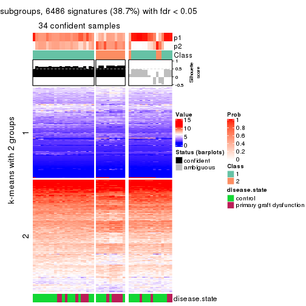
get_signatures(res, k = 3, scale_rows = FALSE)
get_signatures(res, k = 4, scale_rows = FALSE)
get_signatures(res, k = 5, scale_rows = FALSE)
get_signatures(res, k = 6, scale_rows = FALSE)
Compare the overlap of signatures from different k:
compare_signatures(res)
get_signature() returns a data frame invisibly. TO get the list of signatures, the function
call should be assigned to a variable explicitly. In following code, if plot argument is set
to FALSE, no heatmap is plotted while only the differential analysis is performed.
# code only for demonstration
tb = get_signature(res, k = ..., plot = FALSE)
An example of the output of tb is:
#> which_row fdr mean_1 mean_2 scaled_mean_1 scaled_mean_2 km
#> 1 38 0.042760348 8.373488 9.131774 -0.5533452 0.5164555 1
#> 2 40 0.018707592 7.106213 8.469186 -0.6173731 0.5762149 1
#> 3 55 0.019134737 10.221463 11.207825 -0.6159697 0.5749050 1
#> 4 59 0.006059896 5.921854 7.869574 -0.6899429 0.6439467 1
#> 5 60 0.018055526 8.928898 10.211722 -0.6204761 0.5791110 1
#> 6 98 0.009384629 15.714769 14.887706 0.6635654 -0.6193277 2
...
The columns in tb are:
which_row: row indices corresponding to the input matrix.fdr: FDR for the differential test. mean_x: The mean value in group x.scaled_mean_x: The mean value in group x after rows are scaled.km: Row groups if k-means clustering is applied to rows.UMAP plot which shows how samples are separated.
dimension_reduction(res, k = 2, method = "UMAP")
dimension_reduction(res, k = 3, method = "UMAP")
dimension_reduction(res, k = 4, method = "UMAP")
dimension_reduction(res, k = 5, method = "UMAP")
dimension_reduction(res, k = 6, method = "UMAP")
Following heatmap shows how subgroups are split when increasing k:
collect_classes(res)

Test correlation between subgroups and known annotations. If the known annotation is numeric, one-way ANOVA test is applied, and if the known annotation is discrete, chi-squared contingency table test is applied.
test_to_known_factors(res)
#> n disease.state(p) k
#> SD:kmeans 34 0.636 2
#> SD:kmeans 40 0.844 3
#> SD:kmeans 44 0.307 4
#> SD:kmeans 43 0.265 5
#> SD:kmeans 37 0.181 6
If matrix rows can be associated to genes, consider to use GO_Enrichment(res,
...) to perform function enrichment for the signature genes.
The object with results only for a single top-value method and a single partition method can be extracted as:
res = res_list["SD", "skmeans"]
# you can also extract it by
# res = res_list["SD:skmeans"]
A summary of res and all the functions that can be applied to it:
res
#> A 'ConsensusPartition' object with k = 2, 3, 4, 5, 6.
#> On a matrix with 16753 rows and 50 columns.
#> Top rows (1000, 2000, 3000, 4000, 5000) are extracted by 'SD' method.
#> Subgroups are detected by 'skmeans' method.
#> Performed in total 1250 partitions by row resampling.
#> Best k for subgroups seems to be 3.
#>
#> Following methods can be applied to this 'ConsensusPartition' object:
#> [1] "cola_report" "collect_classes" "collect_plots"
#> [4] "collect_stats" "colnames" "compare_signatures"
#> [7] "consensus_heatmap" "dimension_reduction" "functional_enrichment"
#> [10] "get_anno_col" "get_anno" "get_classes"
#> [13] "get_consensus" "get_matrix" "get_membership"
#> [16] "get_param" "get_signatures" "get_stats"
#> [19] "is_best_k" "is_stable_k" "membership_heatmap"
#> [22] "ncol" "nrow" "plot_ecdf"
#> [25] "rownames" "select_partition_number" "show"
#> [28] "suggest_best_k" "test_to_known_factors"
collect_plots() function collects all the plots made from res for all k (number of partitions)
into one single page to provide an easy and fast comparison between different k.
collect_plots(res)
The plots are:
k and the heatmap of
predicted classes for each k.k.k.k.All the plots in panels can be made by individual functions and they are plotted later in this section.
select_partition_number() produces several plots showing different
statistics for choosing “optimized” k. There are following statistics:
k;k, the area increased is defined as \(A_k - A_{k-1}\).The detailed explanations of these statistics can be found in the cola vignette.
Generally speaking, lower PAC score, higher mean silhouette score or higher
concordance corresponds to better partition. Rand index and Jaccard index
measure how similar the current partition is compared to partition with k-1.
If they are too similar, we won't accept k is better than k-1.
select_partition_number(res)
The numeric values for all these statistics can be obtained by get_stats().
get_stats(res)
#> k 1-PAC mean_silhouette concordance area_increased Rand Jaccard
#> 2 2 0.509 0.848 0.914 0.5034 0.493 0.493
#> 3 3 0.747 0.875 0.934 0.3463 0.725 0.495
#> 4 4 0.603 0.496 0.712 0.1173 0.847 0.572
#> 5 5 0.665 0.580 0.756 0.0694 0.873 0.540
#> 6 6 0.694 0.586 0.766 0.0390 0.936 0.690
suggest_best_k() suggests the best \(k\) based on these statistics. The rules are as follows:
NA.suggest_best_k(res)
#> [1] 3
Following shows the table of the partitions (You need to click the show/hide
code output link to see it). The membership matrix (columns with name p*)
is inferred by
clue::cl_consensus()
function with the SE method. Basically the value in the membership matrix
represents the probability to belong to a certain group. The finall class
label for an item is determined with the group with highest probability it
belongs to.
In get_classes() function, the entropy is calculated from the membership
matrix and the silhouette score is calculated from the consensus matrix.
cbind(get_classes(res, k = 2), get_membership(res, k = 2))
#> class entropy silhouette p1 p2
#> GSM198618 2 0.0000 0.857 0.000 1.000
#> GSM198622 1 0.0000 0.944 1.000 0.000
#> GSM198623 1 0.3431 0.890 0.936 0.064
#> GSM198626 1 0.0000 0.944 1.000 0.000
#> GSM198627 1 0.0000 0.944 1.000 0.000
#> GSM198628 1 0.0000 0.944 1.000 0.000
#> GSM198629 1 0.0000 0.944 1.000 0.000
#> GSM198630 1 0.0000 0.944 1.000 0.000
#> GSM198631 1 0.0000 0.944 1.000 0.000
#> GSM198632 1 0.0000 0.944 1.000 0.000
#> GSM198633 1 0.0672 0.939 0.992 0.008
#> GSM198634 1 0.0000 0.944 1.000 0.000
#> GSM198635 1 0.7453 0.720 0.788 0.212
#> GSM198636 1 0.7376 0.724 0.792 0.208
#> GSM198639 2 0.9170 0.652 0.332 0.668
#> GSM198641 1 0.7453 0.720 0.788 0.212
#> GSM198642 1 0.1633 0.926 0.976 0.024
#> GSM198643 1 0.0000 0.944 1.000 0.000
#> GSM198644 2 0.0000 0.857 0.000 1.000
#> GSM198645 1 0.6531 0.754 0.832 0.168
#> GSM198649 2 0.0000 0.857 0.000 1.000
#> GSM198651 2 0.6623 0.749 0.172 0.828
#> GSM198653 2 0.1184 0.852 0.016 0.984
#> GSM198654 2 0.0000 0.857 0.000 1.000
#> GSM198655 2 0.0000 0.857 0.000 1.000
#> GSM198656 2 0.8861 0.696 0.304 0.696
#> GSM198657 2 0.7453 0.795 0.212 0.788
#> GSM198658 2 0.7376 0.797 0.208 0.792
#> GSM198659 2 0.1633 0.850 0.024 0.976
#> GSM198660 2 0.7453 0.795 0.212 0.788
#> GSM198662 2 0.7453 0.795 0.212 0.788
#> GSM198663 2 0.6623 0.749 0.172 0.828
#> GSM198664 2 0.6438 0.758 0.164 0.836
#> GSM198665 2 0.7056 0.806 0.192 0.808
#> GSM198616 1 0.0000 0.944 1.000 0.000
#> GSM198617 2 0.7376 0.797 0.208 0.792
#> GSM198619 1 0.4562 0.856 0.904 0.096
#> GSM198620 2 0.0000 0.857 0.000 1.000
#> GSM198621 2 0.9087 0.665 0.324 0.676
#> GSM198624 1 0.0000 0.944 1.000 0.000
#> GSM198625 1 0.0000 0.944 1.000 0.000
#> GSM198637 1 0.0000 0.944 1.000 0.000
#> GSM198638 2 0.8499 0.750 0.276 0.724
#> GSM198640 1 0.0000 0.944 1.000 0.000
#> GSM198646 2 0.0000 0.857 0.000 1.000
#> GSM198647 2 0.0000 0.857 0.000 1.000
#> GSM198648 2 0.3274 0.833 0.060 0.940
#> GSM198650 2 0.0000 0.857 0.000 1.000
#> GSM198652 2 0.0000 0.857 0.000 1.000
#> GSM198661 2 0.7453 0.795 0.212 0.788
cbind(get_classes(res, k = 3), get_membership(res, k = 3))
#> class entropy silhouette p1 p2 p3
#> GSM198618 2 0.5115 0.752 0.004 0.768 0.228
#> GSM198622 1 0.0237 0.954 0.996 0.004 0.000
#> GSM198623 3 0.4555 0.782 0.200 0.000 0.800
#> GSM198626 1 0.0237 0.955 0.996 0.000 0.004
#> GSM198627 1 0.0237 0.954 0.996 0.004 0.000
#> GSM198628 1 0.0475 0.955 0.992 0.004 0.004
#> GSM198629 1 0.0237 0.955 0.996 0.000 0.004
#> GSM198630 1 0.0475 0.955 0.992 0.004 0.004
#> GSM198631 1 0.0475 0.955 0.992 0.004 0.004
#> GSM198632 1 0.0237 0.955 0.996 0.000 0.004
#> GSM198633 1 0.5331 0.753 0.792 0.024 0.184
#> GSM198634 1 0.0000 0.955 1.000 0.000 0.000
#> GSM198635 1 0.3686 0.835 0.860 0.140 0.000
#> GSM198636 1 0.5058 0.697 0.756 0.244 0.000
#> GSM198639 3 0.0237 0.923 0.004 0.000 0.996
#> GSM198641 2 0.4750 0.673 0.216 0.784 0.000
#> GSM198642 3 0.5244 0.724 0.240 0.004 0.756
#> GSM198643 1 0.2066 0.910 0.940 0.000 0.060
#> GSM198644 2 0.0237 0.890 0.000 0.996 0.004
#> GSM198645 3 0.2356 0.890 0.072 0.000 0.928
#> GSM198649 2 0.4750 0.767 0.000 0.784 0.216
#> GSM198651 2 0.0237 0.890 0.004 0.996 0.000
#> GSM198653 2 0.0237 0.890 0.000 0.996 0.004
#> GSM198654 3 0.0424 0.921 0.000 0.008 0.992
#> GSM198655 2 0.4452 0.734 0.000 0.808 0.192
#> GSM198656 3 0.1765 0.908 0.040 0.004 0.956
#> GSM198657 3 0.0000 0.924 0.000 0.000 1.000
#> GSM198658 3 0.0237 0.923 0.000 0.004 0.996
#> GSM198659 2 0.0237 0.890 0.004 0.996 0.000
#> GSM198660 3 0.0475 0.922 0.004 0.004 0.992
#> GSM198662 3 0.0000 0.924 0.000 0.000 1.000
#> GSM198663 2 0.0237 0.890 0.004 0.996 0.000
#> GSM198664 2 0.0424 0.889 0.008 0.992 0.000
#> GSM198665 3 0.0237 0.923 0.000 0.004 0.996
#> GSM198616 1 0.0424 0.953 0.992 0.000 0.008
#> GSM198617 3 0.0237 0.923 0.000 0.004 0.996
#> GSM198619 3 0.4399 0.798 0.188 0.000 0.812
#> GSM198620 2 0.0237 0.890 0.000 0.996 0.004
#> GSM198621 3 0.0000 0.924 0.000 0.000 1.000
#> GSM198624 1 0.0237 0.955 0.996 0.000 0.004
#> GSM198625 1 0.0237 0.954 0.996 0.004 0.000
#> GSM198637 1 0.0000 0.955 1.000 0.000 0.000
#> GSM198638 2 0.6019 0.678 0.012 0.700 0.288
#> GSM198640 1 0.1643 0.930 0.956 0.000 0.044
#> GSM198646 2 0.2261 0.866 0.000 0.932 0.068
#> GSM198647 2 0.5560 0.668 0.000 0.700 0.300
#> GSM198648 2 0.0237 0.890 0.004 0.996 0.000
#> GSM198650 3 0.4555 0.728 0.000 0.200 0.800
#> GSM198652 2 0.0237 0.890 0.000 0.996 0.004
#> GSM198661 3 0.0000 0.924 0.000 0.000 1.000
cbind(get_classes(res, k = 4), get_membership(res, k = 4))
#> class entropy silhouette p1 p2 p3 p4
#> GSM198618 4 0.6187 0.12985 0.000 0.336 0.068 0.596
#> GSM198622 1 0.6696 0.38844 0.484 0.088 0.000 0.428
#> GSM198623 3 0.4610 0.63236 0.236 0.000 0.744 0.020
#> GSM198626 1 0.0336 0.81408 0.992 0.000 0.000 0.008
#> GSM198627 1 0.0188 0.81360 0.996 0.000 0.000 0.004
#> GSM198628 1 0.0000 0.81380 1.000 0.000 0.000 0.000
#> GSM198629 1 0.1557 0.80623 0.944 0.000 0.000 0.056
#> GSM198630 1 0.0000 0.81380 1.000 0.000 0.000 0.000
#> GSM198631 1 0.0000 0.81380 1.000 0.000 0.000 0.000
#> GSM198632 1 0.4477 0.67418 0.688 0.000 0.000 0.312
#> GSM198633 4 0.6925 -0.23510 0.080 0.380 0.012 0.528
#> GSM198634 1 0.5212 0.51433 0.572 0.008 0.000 0.420
#> GSM198635 2 0.7521 0.19424 0.184 0.420 0.000 0.396
#> GSM198636 1 0.3852 0.66876 0.808 0.180 0.000 0.012
#> GSM198639 4 0.4933 0.11721 0.000 0.000 0.432 0.568
#> GSM198641 2 0.5836 0.44126 0.056 0.640 0.000 0.304
#> GSM198642 3 0.4741 0.53232 0.328 0.000 0.668 0.004
#> GSM198643 1 0.5763 0.66244 0.712 0.000 0.132 0.156
#> GSM198644 2 0.2466 0.58065 0.004 0.900 0.000 0.096
#> GSM198645 3 0.4037 0.71534 0.040 0.000 0.824 0.136
#> GSM198649 4 0.7001 0.00044 0.000 0.420 0.116 0.464
#> GSM198651 2 0.1356 0.62597 0.008 0.960 0.000 0.032
#> GSM198653 2 0.0336 0.62746 0.000 0.992 0.000 0.008
#> GSM198654 3 0.1888 0.81089 0.000 0.016 0.940 0.044
#> GSM198655 2 0.7061 0.24994 0.008 0.604 0.204 0.184
#> GSM198656 3 0.1661 0.81680 0.052 0.000 0.944 0.004
#> GSM198657 3 0.0188 0.83342 0.000 0.000 0.996 0.004
#> GSM198658 3 0.0817 0.82945 0.000 0.000 0.976 0.024
#> GSM198659 2 0.0817 0.62564 0.000 0.976 0.000 0.024
#> GSM198660 3 0.1302 0.81704 0.000 0.000 0.956 0.044
#> GSM198662 3 0.0592 0.83183 0.000 0.000 0.984 0.016
#> GSM198663 2 0.4250 0.50344 0.000 0.724 0.000 0.276
#> GSM198664 2 0.5482 0.41025 0.000 0.608 0.024 0.368
#> GSM198665 3 0.1211 0.82074 0.000 0.000 0.960 0.040
#> GSM198616 1 0.4035 0.74158 0.804 0.000 0.020 0.176
#> GSM198617 4 0.4992 0.05723 0.000 0.000 0.476 0.524
#> GSM198619 4 0.7155 0.20811 0.168 0.000 0.292 0.540
#> GSM198620 2 0.5277 0.07202 0.000 0.532 0.008 0.460
#> GSM198621 4 0.4985 0.06103 0.000 0.000 0.468 0.532
#> GSM198624 1 0.1305 0.80934 0.960 0.000 0.004 0.036
#> GSM198625 1 0.0707 0.81109 0.980 0.000 0.000 0.020
#> GSM198637 4 0.5607 -0.52533 0.484 0.020 0.000 0.496
#> GSM198638 4 0.6796 -0.23931 0.004 0.384 0.088 0.524
#> GSM198640 1 0.6386 0.57622 0.572 0.004 0.064 0.360
#> GSM198646 2 0.6336 -0.03869 0.000 0.480 0.060 0.460
#> GSM198647 4 0.7292 0.13029 0.000 0.352 0.160 0.488
#> GSM198648 2 0.1302 0.62523 0.000 0.956 0.000 0.044
#> GSM198650 3 0.6313 0.38844 0.000 0.128 0.652 0.220
#> GSM198652 2 0.2131 0.60247 0.000 0.932 0.032 0.036
#> GSM198661 3 0.0188 0.83342 0.000 0.000 0.996 0.004
cbind(get_classes(res, k = 5), get_membership(res, k = 5))
#> class entropy silhouette p1 p2 p3 p4 p5
#> GSM198618 4 0.5340 0.600 0.000 0.324 0.020 0.620 0.036
#> GSM198622 5 0.4007 0.533 0.220 0.020 0.000 0.004 0.756
#> GSM198623 3 0.4778 0.667 0.184 0.000 0.744 0.044 0.028
#> GSM198626 1 0.0451 0.828 0.988 0.000 0.000 0.008 0.004
#> GSM198627 1 0.0609 0.825 0.980 0.000 0.000 0.000 0.020
#> GSM198628 1 0.0000 0.829 1.000 0.000 0.000 0.000 0.000
#> GSM198629 1 0.3912 0.679 0.804 0.000 0.000 0.108 0.088
#> GSM198630 1 0.0000 0.829 1.000 0.000 0.000 0.000 0.000
#> GSM198631 1 0.0162 0.828 0.996 0.000 0.004 0.000 0.000
#> GSM198632 5 0.6400 0.320 0.260 0.000 0.000 0.228 0.512
#> GSM198633 5 0.3307 0.495 0.004 0.080 0.012 0.040 0.864
#> GSM198634 5 0.4335 0.426 0.324 0.008 0.000 0.004 0.664
#> GSM198635 5 0.4439 0.408 0.056 0.176 0.000 0.008 0.760
#> GSM198636 1 0.3734 0.632 0.796 0.168 0.000 0.000 0.036
#> GSM198639 4 0.3301 0.506 0.000 0.000 0.080 0.848 0.072
#> GSM198641 2 0.4504 0.395 0.008 0.564 0.000 0.000 0.428
#> GSM198642 3 0.4838 0.513 0.332 0.004 0.640 0.008 0.016
#> GSM198643 5 0.7898 0.233 0.224 0.000 0.080 0.332 0.364
#> GSM198644 2 0.2220 0.658 0.008 0.920 0.004 0.052 0.016
#> GSM198645 3 0.6342 0.509 0.036 0.000 0.620 0.184 0.160
#> GSM198649 4 0.4909 0.583 0.000 0.380 0.032 0.588 0.000
#> GSM198651 2 0.3318 0.712 0.012 0.808 0.000 0.000 0.180
#> GSM198653 2 0.2408 0.754 0.000 0.892 0.000 0.016 0.092
#> GSM198654 3 0.2550 0.798 0.000 0.020 0.892 0.084 0.004
#> GSM198655 2 0.5743 0.401 0.032 0.708 0.112 0.136 0.012
#> GSM198656 3 0.1012 0.818 0.020 0.000 0.968 0.000 0.012
#> GSM198657 3 0.0162 0.823 0.000 0.000 0.996 0.000 0.004
#> GSM198658 3 0.1591 0.818 0.000 0.004 0.940 0.052 0.004
#> GSM198659 2 0.2769 0.747 0.000 0.876 0.000 0.032 0.092
#> GSM198660 3 0.1547 0.820 0.000 0.004 0.948 0.016 0.032
#> GSM198662 3 0.1121 0.821 0.000 0.000 0.956 0.044 0.000
#> GSM198663 2 0.4171 0.472 0.000 0.604 0.000 0.000 0.396
#> GSM198664 5 0.4791 -0.127 0.000 0.392 0.012 0.008 0.588
#> GSM198665 3 0.1991 0.809 0.000 0.004 0.916 0.076 0.004
#> GSM198616 1 0.6794 -0.165 0.368 0.000 0.000 0.344 0.288
#> GSM198617 4 0.3432 0.547 0.000 0.000 0.132 0.828 0.040
#> GSM198619 4 0.5115 0.215 0.052 0.000 0.020 0.696 0.232
#> GSM198620 4 0.4227 0.546 0.000 0.420 0.000 0.580 0.000
#> GSM198621 4 0.3202 0.535 0.004 0.000 0.080 0.860 0.056
#> GSM198624 1 0.3051 0.748 0.864 0.000 0.000 0.076 0.060
#> GSM198625 1 0.0794 0.818 0.972 0.000 0.000 0.000 0.028
#> GSM198637 5 0.5599 0.436 0.092 0.000 0.000 0.328 0.580
#> GSM198638 5 0.4863 0.415 0.000 0.140 0.028 0.076 0.756
#> GSM198640 5 0.6706 0.359 0.276 0.000 0.040 0.132 0.552
#> GSM198646 4 0.4455 0.566 0.000 0.404 0.008 0.588 0.000
#> GSM198647 4 0.4950 0.598 0.000 0.348 0.040 0.612 0.000
#> GSM198648 2 0.3098 0.738 0.000 0.836 0.000 0.016 0.148
#> GSM198650 3 0.6377 0.166 0.000 0.124 0.500 0.364 0.012
#> GSM198652 2 0.2036 0.711 0.000 0.928 0.008 0.028 0.036
#> GSM198661 3 0.0162 0.823 0.000 0.000 0.996 0.000 0.004
cbind(get_classes(res, k = 6), get_membership(res, k = 6))
#> class entropy silhouette p1 p2 p3 p4 p5 p6
#> GSM198618 4 0.2547 0.7519 0.000 0.004 0.000 0.880 0.080 0.036
#> GSM198622 5 0.6384 0.5387 0.116 0.152 0.000 0.000 0.576 0.156
#> GSM198623 3 0.5031 0.6115 0.184 0.004 0.700 0.000 0.040 0.072
#> GSM198626 1 0.0458 0.8777 0.984 0.000 0.000 0.000 0.000 0.016
#> GSM198627 1 0.1630 0.8578 0.940 0.016 0.000 0.000 0.020 0.024
#> GSM198628 1 0.0146 0.8793 0.996 0.000 0.000 0.000 0.000 0.004
#> GSM198629 1 0.3398 0.6212 0.740 0.000 0.000 0.000 0.008 0.252
#> GSM198630 1 0.0000 0.8796 1.000 0.000 0.000 0.000 0.000 0.000
#> GSM198631 1 0.0146 0.8795 0.996 0.000 0.000 0.000 0.004 0.000
#> GSM198632 6 0.5703 0.0435 0.160 0.000 0.000 0.000 0.412 0.428
#> GSM198633 5 0.2986 0.5770 0.000 0.104 0.000 0.012 0.852 0.032
#> GSM198634 5 0.6735 0.4322 0.244 0.092 0.000 0.000 0.500 0.164
#> GSM198635 5 0.6134 0.4245 0.016 0.332 0.000 0.000 0.468 0.184
#> GSM198636 1 0.4685 0.5476 0.680 0.252 0.000 0.000 0.032 0.036
#> GSM198639 6 0.4995 0.2734 0.000 0.000 0.036 0.320 0.032 0.612
#> GSM198641 2 0.2462 0.5853 0.004 0.860 0.000 0.000 0.132 0.004
#> GSM198642 3 0.5482 0.5375 0.264 0.004 0.620 0.000 0.080 0.032
#> GSM198643 6 0.5417 0.4286 0.092 0.004 0.068 0.000 0.152 0.684
#> GSM198644 2 0.5389 0.5987 0.012 0.652 0.000 0.236 0.032 0.068
#> GSM198645 3 0.6661 0.3097 0.032 0.000 0.476 0.012 0.284 0.196
#> GSM198649 4 0.0653 0.8285 0.000 0.012 0.004 0.980 0.000 0.004
#> GSM198651 2 0.1963 0.6701 0.004 0.924 0.000 0.044 0.016 0.012
#> GSM198653 2 0.3037 0.6941 0.000 0.808 0.000 0.176 0.016 0.000
#> GSM198654 3 0.3542 0.7511 0.000 0.016 0.836 0.068 0.012 0.068
#> GSM198655 2 0.7438 0.4397 0.020 0.516 0.084 0.236 0.040 0.104
#> GSM198656 3 0.1210 0.7816 0.008 0.008 0.960 0.000 0.020 0.004
#> GSM198657 3 0.0692 0.7801 0.000 0.000 0.976 0.000 0.020 0.004
#> GSM198658 3 0.2638 0.7685 0.000 0.012 0.888 0.020 0.012 0.068
#> GSM198659 2 0.4089 0.6448 0.000 0.696 0.000 0.264 0.040 0.000
#> GSM198660 3 0.1700 0.7824 0.000 0.012 0.936 0.000 0.024 0.028
#> GSM198662 3 0.1477 0.7816 0.000 0.000 0.940 0.008 0.004 0.048
#> GSM198663 2 0.2714 0.5905 0.000 0.848 0.000 0.012 0.136 0.004
#> GSM198664 2 0.4220 -0.1134 0.000 0.520 0.000 0.008 0.468 0.004
#> GSM198665 3 0.4125 0.7232 0.000 0.008 0.788 0.060 0.024 0.120
#> GSM198616 6 0.4050 0.4540 0.236 0.000 0.000 0.000 0.048 0.716
#> GSM198617 4 0.5682 -0.1262 0.000 0.000 0.048 0.456 0.052 0.444
#> GSM198619 6 0.3214 0.5272 0.008 0.000 0.004 0.152 0.016 0.820
#> GSM198620 4 0.0632 0.8218 0.000 0.024 0.000 0.976 0.000 0.000
#> GSM198621 6 0.5038 0.1618 0.000 0.000 0.048 0.372 0.016 0.564
#> GSM198624 1 0.2655 0.7855 0.848 0.008 0.000 0.000 0.004 0.140
#> GSM198625 1 0.0405 0.8777 0.988 0.008 0.000 0.000 0.004 0.000
#> GSM198637 6 0.4659 0.2787 0.024 0.032 0.000 0.000 0.288 0.656
#> GSM198638 5 0.3600 0.5521 0.000 0.116 0.004 0.028 0.820 0.032
#> GSM198640 5 0.5015 0.3101 0.128 0.004 0.008 0.008 0.700 0.152
#> GSM198646 4 0.0458 0.8273 0.000 0.016 0.000 0.984 0.000 0.000
#> GSM198647 4 0.0436 0.8242 0.000 0.000 0.004 0.988 0.004 0.004
#> GSM198648 2 0.3835 0.6714 0.000 0.748 0.000 0.204 0.048 0.000
#> GSM198650 3 0.7148 0.1495 0.000 0.032 0.400 0.324 0.032 0.212
#> GSM198652 2 0.5050 0.6100 0.000 0.676 0.004 0.224 0.028 0.068
#> GSM198661 3 0.0820 0.7809 0.000 0.000 0.972 0.000 0.016 0.012
Heatmaps for the consensus matrix. It visualizes the probability of two samples to be in a same group.
consensus_heatmap(res, k = 2)
consensus_heatmap(res, k = 3)
consensus_heatmap(res, k = 4)

consensus_heatmap(res, k = 5)

consensus_heatmap(res, k = 6)

Heatmaps for the membership of samples in all partitions to see how consistent they are:
membership_heatmap(res, k = 2)
membership_heatmap(res, k = 3)
membership_heatmap(res, k = 4)
membership_heatmap(res, k = 5)
membership_heatmap(res, k = 6)
As soon as we have had the classes for columns, we can look for signatures which are significantly different between classes which can be candidate marks for certain classes. Following are the heatmaps for signatures.
Signature heatmaps where rows are scaled:
get_signatures(res, k = 2)
get_signatures(res, k = 3)
get_signatures(res, k = 4)
get_signatures(res, k = 5)
get_signatures(res, k = 6)
Signature heatmaps where rows are not scaled:
get_signatures(res, k = 2, scale_rows = FALSE)
get_signatures(res, k = 3, scale_rows = FALSE)
get_signatures(res, k = 4, scale_rows = FALSE)
get_signatures(res, k = 5, scale_rows = FALSE)
get_signatures(res, k = 6, scale_rows = FALSE)
Compare the overlap of signatures from different k:
compare_signatures(res)
get_signature() returns a data frame invisibly. TO get the list of signatures, the function
call should be assigned to a variable explicitly. In following code, if plot argument is set
to FALSE, no heatmap is plotted while only the differential analysis is performed.
# code only for demonstration
tb = get_signature(res, k = ..., plot = FALSE)
An example of the output of tb is:
#> which_row fdr mean_1 mean_2 scaled_mean_1 scaled_mean_2 km
#> 1 38 0.042760348 8.373488 9.131774 -0.5533452 0.5164555 1
#> 2 40 0.018707592 7.106213 8.469186 -0.6173731 0.5762149 1
#> 3 55 0.019134737 10.221463 11.207825 -0.6159697 0.5749050 1
#> 4 59 0.006059896 5.921854 7.869574 -0.6899429 0.6439467 1
#> 5 60 0.018055526 8.928898 10.211722 -0.6204761 0.5791110 1
#> 6 98 0.009384629 15.714769 14.887706 0.6635654 -0.6193277 2
...
The columns in tb are:
which_row: row indices corresponding to the input matrix.fdr: FDR for the differential test. mean_x: The mean value in group x.scaled_mean_x: The mean value in group x after rows are scaled.km: Row groups if k-means clustering is applied to rows.UMAP plot which shows how samples are separated.
dimension_reduction(res, k = 2, method = "UMAP")
dimension_reduction(res, k = 3, method = "UMAP")
dimension_reduction(res, k = 4, method = "UMAP")
dimension_reduction(res, k = 5, method = "UMAP")
dimension_reduction(res, k = 6, method = "UMAP")
Following heatmap shows how subgroups are split when increasing k:
collect_classes(res)
Test correlation between subgroups and known annotations. If the known annotation is numeric, one-way ANOVA test is applied, and if the known annotation is discrete, chi-squared contingency table test is applied.
test_to_known_factors(res)
#> n disease.state(p) k
#> SD:skmeans 50 0.601 2
#> SD:skmeans 50 0.829 3
#> SD:skmeans 32 0.449 4
#> SD:skmeans 35 0.126 5
#> SD:skmeans 36 0.222 6
If matrix rows can be associated to genes, consider to use GO_Enrichment(res,
...) to perform function enrichment for the signature genes.
The object with results only for a single top-value method and a single partition method can be extracted as:
res = res_list["SD", "pam"]
# you can also extract it by
# res = res_list["SD:pam"]
A summary of res and all the functions that can be applied to it:
res
#> A 'ConsensusPartition' object with k = 2, 3, 4, 5, 6.
#> On a matrix with 16753 rows and 50 columns.
#> Top rows (1000, 2000, 3000, 4000, 5000) are extracted by 'SD' method.
#> Subgroups are detected by 'pam' method.
#> Performed in total 1250 partitions by row resampling.
#> Best k for subgroups seems to be 5.
#>
#> Following methods can be applied to this 'ConsensusPartition' object:
#> [1] "cola_report" "collect_classes" "collect_plots"
#> [4] "collect_stats" "colnames" "compare_signatures"
#> [7] "consensus_heatmap" "dimension_reduction" "functional_enrichment"
#> [10] "get_anno_col" "get_anno" "get_classes"
#> [13] "get_consensus" "get_matrix" "get_membership"
#> [16] "get_param" "get_signatures" "get_stats"
#> [19] "is_best_k" "is_stable_k" "membership_heatmap"
#> [22] "ncol" "nrow" "plot_ecdf"
#> [25] "rownames" "select_partition_number" "show"
#> [28] "suggest_best_k" "test_to_known_factors"
collect_plots() function collects all the plots made from res for all k (number of partitions)
into one single page to provide an easy and fast comparison between different k.
collect_plots(res)
The plots are:
k and the heatmap of
predicted classes for each k.k.k.k.All the plots in panels can be made by individual functions and they are plotted later in this section.
select_partition_number() produces several plots showing different
statistics for choosing “optimized” k. There are following statistics:
k;k, the area increased is defined as \(A_k - A_{k-1}\).The detailed explanations of these statistics can be found in the cola vignette.
Generally speaking, lower PAC score, higher mean silhouette score or higher
concordance corresponds to better partition. Rand index and Jaccard index
measure how similar the current partition is compared to partition with k-1.
If they are too similar, we won't accept k is better than k-1.
select_partition_number(res)
The numeric values for all these statistics can be obtained by get_stats().
get_stats(res)
#> k 1-PAC mean_silhouette concordance area_increased Rand Jaccard
#> 2 2 0.590 0.788 0.897 0.4623 0.497 0.497
#> 3 3 0.500 0.633 0.830 0.2847 0.831 0.670
#> 4 4 0.589 0.560 0.770 0.1424 0.750 0.480
#> 5 5 0.902 0.891 0.960 0.1145 0.856 0.614
#> 6 6 0.840 0.841 0.896 0.0864 0.901 0.616
suggest_best_k() suggests the best \(k\) based on these statistics. The rules are as follows:
NA.suggest_best_k(res)
#> [1] 5
Following shows the table of the partitions (You need to click the show/hide
code output link to see it). The membership matrix (columns with name p*)
is inferred by
clue::cl_consensus()
function with the SE method. Basically the value in the membership matrix
represents the probability to belong to a certain group. The finall class
label for an item is determined with the group with highest probability it
belongs to.
In get_classes() function, the entropy is calculated from the membership
matrix and the silhouette score is calculated from the consensus matrix.
cbind(get_classes(res, k = 2), get_membership(res, k = 2))
#> class entropy silhouette p1 p2
#> GSM198618 2 0.9775 0.561 0.412 0.588
#> GSM198622 1 0.0000 0.957 1.000 0.000
#> GSM198623 2 0.0672 0.764 0.008 0.992
#> GSM198626 1 0.0000 0.957 1.000 0.000
#> GSM198627 1 0.0000 0.957 1.000 0.000
#> GSM198628 1 0.0000 0.957 1.000 0.000
#> GSM198629 1 0.0000 0.957 1.000 0.000
#> GSM198630 1 0.0000 0.957 1.000 0.000
#> GSM198631 1 0.0000 0.957 1.000 0.000
#> GSM198632 1 0.0000 0.957 1.000 0.000
#> GSM198633 1 0.0000 0.957 1.000 0.000
#> GSM198634 1 0.0000 0.957 1.000 0.000
#> GSM198635 1 0.0000 0.957 1.000 0.000
#> GSM198636 1 0.0000 0.957 1.000 0.000
#> GSM198639 2 0.9815 0.551 0.420 0.580
#> GSM198641 1 0.0000 0.957 1.000 0.000
#> GSM198642 1 0.8144 0.573 0.748 0.252
#> GSM198643 1 0.9833 -0.149 0.576 0.424
#> GSM198644 1 0.0938 0.943 0.988 0.012
#> GSM198645 2 0.9815 0.551 0.420 0.580
#> GSM198649 2 0.0000 0.763 0.000 1.000
#> GSM198651 1 0.0000 0.957 1.000 0.000
#> GSM198653 1 0.6438 0.733 0.836 0.164
#> GSM198654 2 0.0376 0.765 0.004 0.996
#> GSM198655 2 0.9815 0.551 0.420 0.580
#> GSM198656 2 0.0376 0.765 0.004 0.996
#> GSM198657 2 0.0376 0.765 0.004 0.996
#> GSM198658 2 0.0376 0.765 0.004 0.996
#> GSM198659 1 0.0000 0.957 1.000 0.000
#> GSM198660 2 0.9833 0.182 0.424 0.576
#> GSM198662 2 0.0376 0.765 0.004 0.996
#> GSM198663 1 0.0000 0.957 1.000 0.000
#> GSM198664 1 0.0000 0.957 1.000 0.000
#> GSM198665 2 0.0376 0.765 0.004 0.996
#> GSM198616 1 0.0000 0.957 1.000 0.000
#> GSM198617 2 0.9775 0.561 0.412 0.588
#> GSM198619 2 0.9815 0.551 0.420 0.580
#> GSM198620 2 0.9795 0.554 0.416 0.584
#> GSM198621 2 0.9754 0.565 0.408 0.592
#> GSM198624 1 0.0000 0.957 1.000 0.000
#> GSM198625 1 0.0000 0.957 1.000 0.000
#> GSM198637 1 0.0000 0.957 1.000 0.000
#> GSM198638 1 0.0000 0.957 1.000 0.000
#> GSM198640 1 0.0000 0.957 1.000 0.000
#> GSM198646 2 0.9795 0.554 0.416 0.584
#> GSM198647 2 0.4815 0.735 0.104 0.896
#> GSM198648 1 0.0376 0.952 0.996 0.004
#> GSM198650 2 0.0000 0.763 0.000 1.000
#> GSM198652 2 0.0376 0.765 0.004 0.996
#> GSM198661 2 0.0376 0.765 0.004 0.996
cbind(get_classes(res, k = 3), get_membership(res, k = 3))
#> class entropy silhouette p1 p2 p3
#> GSM198618 3 0.6225 0.4482 0.432 0.000 0.568
#> GSM198622 1 0.0000 0.9199 1.000 0.000 0.000
#> GSM198623 3 0.0237 0.5982 0.004 0.000 0.996
#> GSM198626 1 0.0000 0.9199 1.000 0.000 0.000
#> GSM198627 1 0.0000 0.9199 1.000 0.000 0.000
#> GSM198628 1 0.0000 0.9199 1.000 0.000 0.000
#> GSM198629 1 0.0000 0.9199 1.000 0.000 0.000
#> GSM198630 1 0.0000 0.9199 1.000 0.000 0.000
#> GSM198631 1 0.0000 0.9199 1.000 0.000 0.000
#> GSM198632 1 0.0000 0.9199 1.000 0.000 0.000
#> GSM198633 1 0.0000 0.9199 1.000 0.000 0.000
#> GSM198634 1 0.0000 0.9199 1.000 0.000 0.000
#> GSM198635 1 0.0000 0.9199 1.000 0.000 0.000
#> GSM198636 1 0.4399 0.6335 0.812 0.188 0.000
#> GSM198639 3 0.6305 0.3663 0.484 0.000 0.516
#> GSM198641 2 0.5529 0.6389 0.296 0.704 0.000
#> GSM198642 1 0.5706 0.3800 0.680 0.000 0.320
#> GSM198643 1 0.6111 -0.0465 0.604 0.000 0.396
#> GSM198644 1 0.5268 0.6038 0.776 0.212 0.012
#> GSM198645 3 0.6305 0.3663 0.484 0.000 0.516
#> GSM198649 2 0.4555 0.4443 0.000 0.800 0.200
#> GSM198651 2 0.5722 0.6436 0.292 0.704 0.004
#> GSM198653 2 0.7393 0.6274 0.156 0.704 0.140
#> GSM198654 3 0.0000 0.5999 0.000 0.000 1.000
#> GSM198655 3 0.9248 0.3105 0.296 0.188 0.516
#> GSM198656 3 0.0000 0.5999 0.000 0.000 1.000
#> GSM198657 3 0.0000 0.5999 0.000 0.000 1.000
#> GSM198658 3 0.0000 0.5999 0.000 0.000 1.000
#> GSM198659 2 0.6305 0.2871 0.484 0.516 0.000
#> GSM198660 3 0.5948 0.1902 0.360 0.000 0.640
#> GSM198662 3 0.0000 0.5999 0.000 0.000 1.000
#> GSM198663 2 0.5431 0.6497 0.284 0.716 0.000
#> GSM198664 1 0.0000 0.9199 1.000 0.000 0.000
#> GSM198665 3 0.0000 0.5999 0.000 0.000 1.000
#> GSM198616 1 0.0000 0.9199 1.000 0.000 0.000
#> GSM198617 3 0.6274 0.4148 0.456 0.000 0.544
#> GSM198619 3 0.6305 0.3663 0.484 0.000 0.516
#> GSM198620 2 0.8605 0.1986 0.188 0.604 0.208
#> GSM198621 3 0.6295 0.3886 0.472 0.000 0.528
#> GSM198624 1 0.0000 0.9199 1.000 0.000 0.000
#> GSM198625 1 0.0000 0.9199 1.000 0.000 0.000
#> GSM198637 1 0.0000 0.9199 1.000 0.000 0.000
#> GSM198638 1 0.0000 0.9199 1.000 0.000 0.000
#> GSM198640 1 0.0000 0.9199 1.000 0.000 0.000
#> GSM198646 3 0.9248 0.4185 0.188 0.296 0.516
#> GSM198647 3 0.8013 0.4514 0.092 0.296 0.612
#> GSM198648 2 0.0592 0.5719 0.012 0.988 0.000
#> GSM198650 3 0.5327 0.4679 0.000 0.272 0.728
#> GSM198652 2 0.5529 0.4857 0.000 0.704 0.296
#> GSM198661 3 0.0000 0.5999 0.000 0.000 1.000
cbind(get_classes(res, k = 4), get_membership(res, k = 4))
#> class entropy silhouette p1 p2 p3 p4
#> GSM198618 1 0.7526 0.1118 0.440 0.372 0.188 0.000
#> GSM198622 1 0.5835 0.7194 0.588 0.040 0.372 0.000
#> GSM198623 3 0.4920 0.3377 0.368 0.004 0.628 0.000
#> GSM198626 1 0.0000 0.5815 1.000 0.000 0.000 0.000
#> GSM198627 1 0.0000 0.5815 1.000 0.000 0.000 0.000
#> GSM198628 1 0.0000 0.5815 1.000 0.000 0.000 0.000
#> GSM198629 1 0.5835 0.7194 0.588 0.040 0.372 0.000
#> GSM198630 1 0.0000 0.5815 1.000 0.000 0.000 0.000
#> GSM198631 1 0.0000 0.5815 1.000 0.000 0.000 0.000
#> GSM198632 1 0.5835 0.7194 0.588 0.040 0.372 0.000
#> GSM198633 1 0.5835 0.7194 0.588 0.040 0.372 0.000
#> GSM198634 1 0.5835 0.7194 0.588 0.040 0.372 0.000
#> GSM198635 1 0.5835 0.7194 0.588 0.040 0.372 0.000
#> GSM198636 1 0.4585 -0.0404 0.668 0.332 0.000 0.000
#> GSM198639 1 0.4888 0.5164 0.588 0.412 0.000 0.000
#> GSM198641 2 0.4761 0.7969 0.000 0.628 0.000 0.372
#> GSM198642 3 0.3219 0.0994 0.164 0.000 0.836 0.000
#> GSM198643 1 0.6391 0.5823 0.588 0.328 0.084 0.000
#> GSM198644 1 0.9396 0.3678 0.368 0.268 0.264 0.100
#> GSM198645 1 0.4888 0.5164 0.588 0.412 0.000 0.000
#> GSM198649 4 0.0469 0.1962 0.000 0.012 0.000 0.988
#> GSM198651 2 0.4761 0.7969 0.000 0.628 0.000 0.372
#> GSM198653 2 0.4761 0.7969 0.000 0.628 0.000 0.372
#> GSM198654 3 0.4761 0.7641 0.000 0.372 0.628 0.000
#> GSM198655 2 0.4222 -0.1776 0.272 0.728 0.000 0.000
#> GSM198656 3 0.4761 0.7641 0.000 0.372 0.628 0.000
#> GSM198657 3 0.4761 0.7641 0.000 0.372 0.628 0.000
#> GSM198658 3 0.4761 0.7641 0.000 0.372 0.628 0.000
#> GSM198659 4 0.7894 -0.3273 0.332 0.296 0.000 0.372
#> GSM198660 3 0.2530 0.4769 0.000 0.112 0.888 0.000
#> GSM198662 3 0.4761 0.7641 0.000 0.372 0.628 0.000
#> GSM198663 2 0.4761 0.7969 0.000 0.628 0.000 0.372
#> GSM198664 1 0.5835 0.7194 0.588 0.040 0.372 0.000
#> GSM198665 3 0.4761 0.7641 0.000 0.372 0.628 0.000
#> GSM198616 1 0.5835 0.7194 0.588 0.040 0.372 0.000
#> GSM198617 1 0.5784 0.4800 0.556 0.412 0.032 0.000
#> GSM198619 1 0.4888 0.5164 0.588 0.412 0.000 0.000
#> GSM198620 4 0.3219 0.4635 0.000 0.164 0.000 0.836
#> GSM198621 1 0.5310 0.5051 0.576 0.412 0.012 0.000
#> GSM198624 1 0.5835 0.7194 0.588 0.040 0.372 0.000
#> GSM198625 1 0.0000 0.5815 1.000 0.000 0.000 0.000
#> GSM198637 1 0.5835 0.7194 0.588 0.040 0.372 0.000
#> GSM198638 1 0.5835 0.7194 0.588 0.040 0.372 0.000
#> GSM198640 1 0.5835 0.7194 0.588 0.040 0.372 0.000
#> GSM198646 4 0.4761 0.4721 0.000 0.372 0.000 0.628
#> GSM198647 4 0.4761 0.4721 0.000 0.372 0.000 0.628
#> GSM198648 2 0.4888 0.7548 0.000 0.588 0.000 0.412
#> GSM198650 4 0.6885 0.2952 0.000 0.372 0.112 0.516
#> GSM198652 2 0.5911 0.7478 0.000 0.584 0.044 0.372
#> GSM198661 3 0.4761 0.7641 0.000 0.372 0.628 0.000
cbind(get_classes(res, k = 5), get_membership(res, k = 5))
#> class entropy silhouette p1 p2 p3 p4 p5
#> GSM198618 5 0.4425 0.127 0.000 0.000 0.452 0.004 0.544
#> GSM198622 5 0.0000 0.932 0.000 0.000 0.000 0.000 1.000
#> GSM198623 3 0.0000 0.973 0.000 0.000 1.000 0.000 0.000
#> GSM198626 1 0.0000 0.970 1.000 0.000 0.000 0.000 0.000
#> GSM198627 1 0.0000 0.970 1.000 0.000 0.000 0.000 0.000
#> GSM198628 1 0.0703 0.945 0.976 0.000 0.000 0.000 0.024
#> GSM198629 5 0.0000 0.932 0.000 0.000 0.000 0.000 1.000
#> GSM198630 1 0.0000 0.970 1.000 0.000 0.000 0.000 0.000
#> GSM198631 1 0.0000 0.970 1.000 0.000 0.000 0.000 0.000
#> GSM198632 5 0.0000 0.932 0.000 0.000 0.000 0.000 1.000
#> GSM198633 5 0.0000 0.932 0.000 0.000 0.000 0.000 1.000
#> GSM198634 5 0.0000 0.932 0.000 0.000 0.000 0.000 1.000
#> GSM198635 5 0.0000 0.932 0.000 0.000 0.000 0.000 1.000
#> GSM198636 1 0.2377 0.847 0.872 0.128 0.000 0.000 0.000
#> GSM198639 5 0.0000 0.932 0.000 0.000 0.000 0.000 1.000
#> GSM198641 2 0.0162 0.949 0.004 0.996 0.000 0.000 0.000
#> GSM198642 3 0.3013 0.736 0.008 0.000 0.832 0.000 0.160
#> GSM198643 5 0.0000 0.932 0.000 0.000 0.000 0.000 1.000
#> GSM198644 5 0.4297 0.101 0.000 0.472 0.000 0.000 0.528
#> GSM198645 5 0.0000 0.932 0.000 0.000 0.000 0.000 1.000
#> GSM198649 4 0.0000 0.931 0.000 0.000 0.000 1.000 0.000
#> GSM198651 2 0.0000 0.952 0.000 1.000 0.000 0.000 0.000
#> GSM198653 2 0.0000 0.952 0.000 1.000 0.000 0.000 0.000
#> GSM198654 3 0.0000 0.973 0.000 0.000 1.000 0.000 0.000
#> GSM198655 5 0.3177 0.706 0.000 0.208 0.000 0.000 0.792
#> GSM198656 3 0.0000 0.973 0.000 0.000 1.000 0.000 0.000
#> GSM198657 3 0.0000 0.973 0.000 0.000 1.000 0.000 0.000
#> GSM198658 3 0.0000 0.973 0.000 0.000 1.000 0.000 0.000
#> GSM198659 2 0.2852 0.716 0.000 0.828 0.000 0.000 0.172
#> GSM198660 3 0.0000 0.973 0.000 0.000 1.000 0.000 0.000
#> GSM198662 3 0.0000 0.973 0.000 0.000 1.000 0.000 0.000
#> GSM198663 2 0.0000 0.952 0.000 1.000 0.000 0.000 0.000
#> GSM198664 5 0.0000 0.932 0.000 0.000 0.000 0.000 1.000
#> GSM198665 3 0.0000 0.973 0.000 0.000 1.000 0.000 0.000
#> GSM198616 5 0.0000 0.932 0.000 0.000 0.000 0.000 1.000
#> GSM198617 5 0.2124 0.843 0.000 0.000 0.096 0.004 0.900
#> GSM198619 5 0.0000 0.932 0.000 0.000 0.000 0.000 1.000
#> GSM198620 4 0.0000 0.931 0.000 0.000 0.000 1.000 0.000
#> GSM198621 5 0.0404 0.923 0.000 0.000 0.012 0.000 0.988
#> GSM198624 5 0.0000 0.932 0.000 0.000 0.000 0.000 1.000
#> GSM198625 1 0.0000 0.970 1.000 0.000 0.000 0.000 0.000
#> GSM198637 5 0.0000 0.932 0.000 0.000 0.000 0.000 1.000
#> GSM198638 5 0.0000 0.932 0.000 0.000 0.000 0.000 1.000
#> GSM198640 5 0.0000 0.932 0.000 0.000 0.000 0.000 1.000
#> GSM198646 4 0.0000 0.931 0.000 0.000 0.000 1.000 0.000
#> GSM198647 4 0.0000 0.931 0.000 0.000 0.000 1.000 0.000
#> GSM198648 2 0.0000 0.952 0.000 1.000 0.000 0.000 0.000
#> GSM198650 4 0.3366 0.684 0.000 0.000 0.232 0.768 0.000
#> GSM198652 2 0.0404 0.942 0.000 0.988 0.012 0.000 0.000
#> GSM198661 3 0.0000 0.973 0.000 0.000 1.000 0.000 0.000
cbind(get_classes(res, k = 6), get_membership(res, k = 6))
#> class entropy silhouette p1 p2 p3 p4 p5 p6
#> GSM198618 6 0.3578 0.818 0.000 0.000 0.000 0.000 0.340 0.660
#> GSM198622 5 0.2949 0.796 0.000 0.028 0.000 0.000 0.832 0.140
#> GSM198623 3 0.0000 0.961 0.000 0.000 1.000 0.000 0.000 0.000
#> GSM198626 1 0.0000 0.959 1.000 0.000 0.000 0.000 0.000 0.000
#> GSM198627 1 0.1765 0.891 0.904 0.000 0.000 0.000 0.000 0.096
#> GSM198628 1 0.0632 0.944 0.976 0.000 0.000 0.000 0.024 0.000
#> GSM198629 5 0.0000 0.884 0.000 0.000 0.000 0.000 1.000 0.000
#> GSM198630 1 0.0000 0.959 1.000 0.000 0.000 0.000 0.000 0.000
#> GSM198631 1 0.0000 0.959 1.000 0.000 0.000 0.000 0.000 0.000
#> GSM198632 5 0.0000 0.884 0.000 0.000 0.000 0.000 1.000 0.000
#> GSM198633 5 0.1765 0.853 0.000 0.000 0.000 0.000 0.904 0.096
#> GSM198634 5 0.1765 0.853 0.000 0.000 0.000 0.000 0.904 0.096
#> GSM198635 5 0.1765 0.853 0.000 0.000 0.000 0.000 0.904 0.096
#> GSM198636 1 0.2255 0.882 0.892 0.080 0.000 0.000 0.000 0.028
#> GSM198639 6 0.3390 0.852 0.000 0.000 0.000 0.000 0.296 0.704
#> GSM198641 2 0.2697 0.835 0.000 0.812 0.000 0.000 0.000 0.188
#> GSM198642 3 0.2706 0.745 0.008 0.000 0.832 0.000 0.160 0.000
#> GSM198643 6 0.3838 0.490 0.000 0.000 0.000 0.000 0.448 0.552
#> GSM198644 5 0.4463 0.134 0.000 0.456 0.000 0.000 0.516 0.028
#> GSM198645 6 0.3428 0.848 0.000 0.000 0.000 0.000 0.304 0.696
#> GSM198649 4 0.0000 0.881 0.000 0.000 0.000 1.000 0.000 0.000
#> GSM198651 2 0.0937 0.890 0.000 0.960 0.000 0.000 0.000 0.040
#> GSM198653 2 0.0000 0.899 0.000 1.000 0.000 0.000 0.000 0.000
#> GSM198654 3 0.0000 0.961 0.000 0.000 1.000 0.000 0.000 0.000
#> GSM198655 6 0.4199 0.627 0.000 0.164 0.000 0.000 0.100 0.736
#> GSM198656 3 0.0000 0.961 0.000 0.000 1.000 0.000 0.000 0.000
#> GSM198657 3 0.0000 0.961 0.000 0.000 1.000 0.000 0.000 0.000
#> GSM198658 3 0.0000 0.961 0.000 0.000 1.000 0.000 0.000 0.000
#> GSM198659 2 0.2527 0.880 0.000 0.868 0.000 0.000 0.024 0.108
#> GSM198660 3 0.1713 0.904 0.000 0.028 0.928 0.000 0.000 0.044
#> GSM198662 3 0.0000 0.961 0.000 0.000 1.000 0.000 0.000 0.000
#> GSM198663 2 0.2562 0.882 0.000 0.828 0.000 0.000 0.000 0.172
#> GSM198664 5 0.1713 0.841 0.000 0.028 0.000 0.000 0.928 0.044
#> GSM198665 6 0.3499 0.453 0.000 0.000 0.320 0.000 0.000 0.680
#> GSM198616 5 0.0260 0.879 0.000 0.000 0.000 0.000 0.992 0.008
#> GSM198617 6 0.3508 0.852 0.000 0.000 0.004 0.000 0.292 0.704
#> GSM198619 6 0.3390 0.852 0.000 0.000 0.000 0.000 0.296 0.704
#> GSM198620 4 0.0000 0.881 0.000 0.000 0.000 1.000 0.000 0.000
#> GSM198621 6 0.3595 0.850 0.000 0.000 0.008 0.000 0.288 0.704
#> GSM198624 5 0.0000 0.884 0.000 0.000 0.000 0.000 1.000 0.000
#> GSM198625 1 0.0000 0.959 1.000 0.000 0.000 0.000 0.000 0.000
#> GSM198637 5 0.0000 0.884 0.000 0.000 0.000 0.000 1.000 0.000
#> GSM198638 5 0.0000 0.884 0.000 0.000 0.000 0.000 1.000 0.000
#> GSM198640 5 0.0000 0.884 0.000 0.000 0.000 0.000 1.000 0.000
#> GSM198646 4 0.0000 0.881 0.000 0.000 0.000 1.000 0.000 0.000
#> GSM198647 4 0.0000 0.881 0.000 0.000 0.000 1.000 0.000 0.000
#> GSM198648 2 0.2454 0.882 0.000 0.840 0.000 0.000 0.000 0.160
#> GSM198650 4 0.3782 0.304 0.000 0.000 0.000 0.588 0.000 0.412
#> GSM198652 2 0.1074 0.889 0.000 0.960 0.012 0.000 0.000 0.028
#> GSM198661 3 0.0000 0.961 0.000 0.000 1.000 0.000 0.000 0.000
Heatmaps for the consensus matrix. It visualizes the probability of two samples to be in a same group.
consensus_heatmap(res, k = 2)
consensus_heatmap(res, k = 3)
consensus_heatmap(res, k = 4)
consensus_heatmap(res, k = 5)
consensus_heatmap(res, k = 6)
Heatmaps for the membership of samples in all partitions to see how consistent they are:
membership_heatmap(res, k = 2)
membership_heatmap(res, k = 3)
membership_heatmap(res, k = 4)
membership_heatmap(res, k = 5)
membership_heatmap(res, k = 6)

As soon as we have had the classes for columns, we can look for signatures which are significantly different between classes which can be candidate marks for certain classes. Following are the heatmaps for signatures.
Signature heatmaps where rows are scaled:
get_signatures(res, k = 2)
get_signatures(res, k = 3)
get_signatures(res, k = 4)
get_signatures(res, k = 5)
get_signatures(res, k = 6)
Signature heatmaps where rows are not scaled:
get_signatures(res, k = 2, scale_rows = FALSE)
get_signatures(res, k = 3, scale_rows = FALSE)
get_signatures(res, k = 4, scale_rows = FALSE)
get_signatures(res, k = 5, scale_rows = FALSE)
get_signatures(res, k = 6, scale_rows = FALSE)
Compare the overlap of signatures from different k:
compare_signatures(res)
get_signature() returns a data frame invisibly. TO get the list of signatures, the function
call should be assigned to a variable explicitly. In following code, if plot argument is set
to FALSE, no heatmap is plotted while only the differential analysis is performed.
# code only for demonstration
tb = get_signature(res, k = ..., plot = FALSE)
An example of the output of tb is:
#> which_row fdr mean_1 mean_2 scaled_mean_1 scaled_mean_2 km
#> 1 38 0.042760348 8.373488 9.131774 -0.5533452 0.5164555 1
#> 2 40 0.018707592 7.106213 8.469186 -0.6173731 0.5762149 1
#> 3 55 0.019134737 10.221463 11.207825 -0.6159697 0.5749050 1
#> 4 59 0.006059896 5.921854 7.869574 -0.6899429 0.6439467 1
#> 5 60 0.018055526 8.928898 10.211722 -0.6204761 0.5791110 1
#> 6 98 0.009384629 15.714769 14.887706 0.6635654 -0.6193277 2
...
The columns in tb are:
which_row: row indices corresponding to the input matrix.fdr: FDR for the differential test. mean_x: The mean value in group x.scaled_mean_x: The mean value in group x after rows are scaled.km: Row groups if k-means clustering is applied to rows.UMAP plot which shows how samples are separated.
dimension_reduction(res, k = 2, method = "UMAP")
dimension_reduction(res, k = 3, method = "UMAP")
dimension_reduction(res, k = 4, method = "UMAP")
dimension_reduction(res, k = 5, method = "UMAP")
dimension_reduction(res, k = 6, method = "UMAP")

Following heatmap shows how subgroups are split when increasing k:
collect_classes(res)
Test correlation between subgroups and known annotations. If the known annotation is numeric, one-way ANOVA test is applied, and if the known annotation is discrete, chi-squared contingency table test is applied.
test_to_known_factors(res)
#> n disease.state(p) k
#> SD:pam 48 0.3545 2
#> SD:pam 33 0.6033 3
#> SD:pam 36 0.5802 4
#> SD:pam 48 0.0558 5
#> SD:pam 46 0.2157 6
If matrix rows can be associated to genes, consider to use GO_Enrichment(res,
...) to perform function enrichment for the signature genes.
The object with results only for a single top-value method and a single partition method can be extracted as:
res = res_list["SD", "mclust"]
# you can also extract it by
# res = res_list["SD:mclust"]
A summary of res and all the functions that can be applied to it:
res
#> A 'ConsensusPartition' object with k = 2, 3, 4, 5, 6.
#> On a matrix with 16753 rows and 50 columns.
#> Top rows (1000, 2000, 3000, 4000, 5000) are extracted by 'SD' method.
#> Subgroups are detected by 'mclust' method.
#> Performed in total 1250 partitions by row resampling.
#> Best k for subgroups seems to be 5.
#>
#> Following methods can be applied to this 'ConsensusPartition' object:
#> [1] "cola_report" "collect_classes" "collect_plots"
#> [4] "collect_stats" "colnames" "compare_signatures"
#> [7] "consensus_heatmap" "dimension_reduction" "functional_enrichment"
#> [10] "get_anno_col" "get_anno" "get_classes"
#> [13] "get_consensus" "get_matrix" "get_membership"
#> [16] "get_param" "get_signatures" "get_stats"
#> [19] "is_best_k" "is_stable_k" "membership_heatmap"
#> [22] "ncol" "nrow" "plot_ecdf"
#> [25] "rownames" "select_partition_number" "show"
#> [28] "suggest_best_k" "test_to_known_factors"
collect_plots() function collects all the plots made from res for all k (number of partitions)
into one single page to provide an easy and fast comparison between different k.
collect_plots(res)
The plots are:
k and the heatmap of
predicted classes for each k.k.k.k.All the plots in panels can be made by individual functions and they are plotted later in this section.
select_partition_number() produces several plots showing different
statistics for choosing “optimized” k. There are following statistics:
k;k, the area increased is defined as \(A_k - A_{k-1}\).The detailed explanations of these statistics can be found in the cola vignette.
Generally speaking, lower PAC score, higher mean silhouette score or higher
concordance corresponds to better partition. Rand index and Jaccard index
measure how similar the current partition is compared to partition with k-1.
If they are too similar, we won't accept k is better than k-1.
select_partition_number(res)
The numeric values for all these statistics can be obtained by get_stats().
get_stats(res)
#> k 1-PAC mean_silhouette concordance area_increased Rand Jaccard
#> 2 2 0.352 0.725 0.860 0.3155 0.673 0.673
#> 3 3 0.377 0.766 0.798 0.9847 0.552 0.380
#> 4 4 0.582 0.749 0.824 0.0862 0.873 0.660
#> 5 5 0.579 0.717 0.812 0.0942 0.954 0.847
#> 6 6 0.657 0.603 0.782 0.0613 0.918 0.706
suggest_best_k() suggests the best \(k\) based on these statistics. The rules are as follows:
NA.suggest_best_k(res)
#> [1] 5
Following shows the table of the partitions (You need to click the show/hide
code output link to see it). The membership matrix (columns with name p*)
is inferred by
clue::cl_consensus()
function with the SE method. Basically the value in the membership matrix
represents the probability to belong to a certain group. The finall class
label for an item is determined with the group with highest probability it
belongs to.
In get_classes() function, the entropy is calculated from the membership
matrix and the silhouette score is calculated from the consensus matrix.
cbind(get_classes(res, k = 2), get_membership(res, k = 2))
#> class entropy silhouette p1 p2
#> GSM198618 1 0.4298 0.842 0.912 0.088
#> GSM198622 1 0.5408 0.834 0.876 0.124
#> GSM198623 1 0.2778 0.807 0.952 0.048
#> GSM198626 1 0.5408 0.834 0.876 0.124
#> GSM198627 1 0.5408 0.834 0.876 0.124
#> GSM198628 1 0.5408 0.834 0.876 0.124
#> GSM198629 1 0.3733 0.844 0.928 0.072
#> GSM198630 1 0.5408 0.834 0.876 0.124
#> GSM198631 1 0.5408 0.834 0.876 0.124
#> GSM198632 1 0.2423 0.846 0.960 0.040
#> GSM198633 1 0.5294 0.835 0.880 0.120
#> GSM198634 1 0.5408 0.834 0.876 0.124
#> GSM198635 1 0.5408 0.834 0.876 0.124
#> GSM198636 1 0.9661 0.250 0.608 0.392
#> GSM198639 1 0.0672 0.835 0.992 0.008
#> GSM198641 1 0.9661 0.250 0.608 0.392
#> GSM198642 1 0.4161 0.833 0.916 0.084
#> GSM198643 1 0.0000 0.839 1.000 0.000
#> GSM198644 1 0.9661 0.250 0.608 0.392
#> GSM198645 1 0.0672 0.835 0.992 0.008
#> GSM198649 2 0.3114 0.691 0.056 0.944
#> GSM198651 2 0.9933 0.408 0.452 0.548
#> GSM198653 2 0.9522 0.552 0.372 0.628
#> GSM198654 1 0.8661 0.638 0.712 0.288
#> GSM198655 1 0.9661 0.250 0.608 0.392
#> GSM198656 1 0.2778 0.807 0.952 0.048
#> GSM198657 1 0.2778 0.807 0.952 0.048
#> GSM198658 1 0.3274 0.815 0.940 0.060
#> GSM198659 2 0.9881 0.451 0.436 0.564
#> GSM198660 1 0.0000 0.839 1.000 0.000
#> GSM198662 1 0.2948 0.811 0.948 0.052
#> GSM198663 2 0.9754 0.505 0.408 0.592
#> GSM198664 1 0.5408 0.834 0.876 0.124
#> GSM198665 1 0.3879 0.822 0.924 0.076
#> GSM198616 1 0.1843 0.845 0.972 0.028
#> GSM198617 1 0.0938 0.841 0.988 0.012
#> GSM198619 1 0.0672 0.835 0.992 0.008
#> GSM198620 2 0.2778 0.691 0.048 0.952
#> GSM198621 1 0.0672 0.835 0.992 0.008
#> GSM198624 1 0.1843 0.845 0.972 0.028
#> GSM198625 1 0.5408 0.834 0.876 0.124
#> GSM198637 1 0.5408 0.834 0.876 0.124
#> GSM198638 1 0.5178 0.836 0.884 0.116
#> GSM198640 1 0.0672 0.841 0.992 0.008
#> GSM198646 2 0.2778 0.691 0.048 0.952
#> GSM198647 2 0.6801 0.627 0.180 0.820
#> GSM198648 2 0.2778 0.691 0.048 0.952
#> GSM198650 1 0.8207 0.632 0.744 0.256
#> GSM198652 2 0.9933 0.408 0.452 0.548
#> GSM198661 1 0.2948 0.811 0.948 0.052
cbind(get_classes(res, k = 3), get_membership(res, k = 3))
#> class entropy silhouette p1 p2 p3
#> GSM198618 2 0.798 0.502 0.108 0.636 0.256
#> GSM198622 1 0.392 0.775 0.856 0.140 0.004
#> GSM198623 3 0.355 0.901 0.132 0.000 0.868
#> GSM198626 1 0.455 0.794 0.844 0.132 0.024
#> GSM198627 1 0.478 0.756 0.796 0.200 0.004
#> GSM198628 1 0.426 0.787 0.848 0.140 0.012
#> GSM198629 1 0.562 0.724 0.744 0.012 0.244
#> GSM198630 1 0.426 0.787 0.848 0.140 0.012
#> GSM198631 1 0.454 0.795 0.848 0.124 0.028
#> GSM198632 1 0.506 0.721 0.756 0.000 0.244
#> GSM198633 1 0.429 0.783 0.872 0.060 0.068
#> GSM198634 1 0.345 0.786 0.888 0.104 0.008
#> GSM198635 1 0.410 0.769 0.852 0.140 0.008
#> GSM198636 1 0.575 0.620 0.700 0.296 0.004
#> GSM198639 3 0.428 0.899 0.132 0.016 0.852
#> GSM198641 2 0.368 0.835 0.080 0.892 0.028
#> GSM198642 3 0.742 0.558 0.364 0.044 0.592
#> GSM198643 1 0.506 0.721 0.756 0.000 0.244
#> GSM198644 2 0.321 0.834 0.092 0.900 0.008
#> GSM198645 3 0.369 0.898 0.140 0.000 0.860
#> GSM198649 2 0.314 0.822 0.020 0.912 0.068
#> GSM198651 2 0.359 0.835 0.076 0.896 0.028
#> GSM198653 2 0.341 0.837 0.080 0.900 0.020
#> GSM198654 3 0.546 0.624 0.020 0.204 0.776
#> GSM198655 2 0.835 0.337 0.092 0.548 0.360
#> GSM198656 3 0.334 0.903 0.120 0.000 0.880
#> GSM198657 3 0.334 0.903 0.120 0.000 0.880
#> GSM198658 3 0.327 0.901 0.116 0.000 0.884
#> GSM198659 2 0.409 0.831 0.100 0.872 0.028
#> GSM198660 3 0.435 0.886 0.156 0.008 0.836
#> GSM198662 3 0.334 0.903 0.120 0.000 0.880
#> GSM198663 2 0.346 0.837 0.076 0.900 0.024
#> GSM198664 2 0.616 0.686 0.288 0.696 0.016
#> GSM198665 3 0.440 0.888 0.116 0.028 0.856
#> GSM198616 1 0.506 0.721 0.756 0.000 0.244
#> GSM198617 3 0.514 0.886 0.132 0.044 0.824
#> GSM198619 1 0.576 0.613 0.672 0.000 0.328
#> GSM198620 2 0.255 0.827 0.012 0.932 0.056
#> GSM198621 3 0.468 0.895 0.132 0.028 0.840
#> GSM198624 1 0.506 0.721 0.756 0.000 0.244
#> GSM198625 1 0.429 0.783 0.840 0.152 0.008
#> GSM198637 1 0.389 0.790 0.888 0.064 0.048
#> GSM198638 2 0.879 0.103 0.428 0.460 0.112
#> GSM198640 1 0.506 0.721 0.756 0.000 0.244
#> GSM198646 2 0.285 0.824 0.012 0.920 0.068
#> GSM198647 2 0.462 0.784 0.020 0.836 0.144
#> GSM198648 2 0.346 0.837 0.076 0.900 0.024
#> GSM198650 3 0.722 0.609 0.084 0.220 0.696
#> GSM198652 2 0.178 0.831 0.020 0.960 0.020
#> GSM198661 3 0.334 0.903 0.120 0.000 0.880
cbind(get_classes(res, k = 4), get_membership(res, k = 4))
#> class entropy silhouette p1 p2 p3 p4
#> GSM198618 3 0.3095 0.843 0.020 0.076 0.892 0.012
#> GSM198622 1 0.5658 0.775 0.724 0.048 0.208 0.020
#> GSM198623 3 0.0469 0.902 0.012 0.000 0.988 0.000
#> GSM198626 1 0.3949 0.652 0.832 0.012 0.016 0.140
#> GSM198627 1 0.3007 0.676 0.900 0.060 0.012 0.028
#> GSM198628 1 0.3949 0.652 0.832 0.012 0.016 0.140
#> GSM198629 1 0.5291 0.763 0.652 0.000 0.324 0.024
#> GSM198630 1 0.3949 0.652 0.832 0.012 0.016 0.140
#> GSM198631 1 0.3896 0.664 0.844 0.012 0.024 0.120
#> GSM198632 1 0.4677 0.766 0.680 0.000 0.316 0.004
#> GSM198633 1 0.4675 0.782 0.736 0.000 0.244 0.020
#> GSM198634 1 0.4715 0.784 0.740 0.004 0.240 0.016
#> GSM198635 1 0.5411 0.774 0.736 0.036 0.208 0.020
#> GSM198636 1 0.4387 0.536 0.752 0.236 0.000 0.012
#> GSM198639 3 0.0336 0.904 0.008 0.000 0.992 0.000
#> GSM198641 2 0.0469 0.692 0.012 0.988 0.000 0.000
#> GSM198642 3 0.3189 0.827 0.088 0.012 0.884 0.016
#> GSM198643 1 0.4564 0.761 0.672 0.000 0.328 0.000
#> GSM198644 2 0.7574 0.216 0.016 0.504 0.344 0.136
#> GSM198645 3 0.0000 0.906 0.000 0.000 1.000 0.000
#> GSM198649 4 0.3380 0.962 0.004 0.136 0.008 0.852
#> GSM198651 2 0.1733 0.685 0.024 0.948 0.000 0.028
#> GSM198653 2 0.3306 0.615 0.004 0.840 0.000 0.156
#> GSM198654 3 0.4833 0.629 0.000 0.032 0.740 0.228
#> GSM198655 3 0.7296 0.297 0.016 0.260 0.580 0.144
#> GSM198656 3 0.0000 0.906 0.000 0.000 1.000 0.000
#> GSM198657 3 0.0000 0.906 0.000 0.000 1.000 0.000
#> GSM198658 3 0.0592 0.902 0.000 0.000 0.984 0.016
#> GSM198659 2 0.4030 0.588 0.012 0.820 0.012 0.156
#> GSM198660 3 0.1174 0.896 0.020 0.000 0.968 0.012
#> GSM198662 3 0.0000 0.906 0.000 0.000 1.000 0.000
#> GSM198663 2 0.0188 0.693 0.000 0.996 0.000 0.004
#> GSM198664 2 0.7793 0.239 0.232 0.536 0.212 0.020
#> GSM198665 3 0.1211 0.884 0.000 0.000 0.960 0.040
#> GSM198616 1 0.4564 0.761 0.672 0.000 0.328 0.000
#> GSM198617 3 0.1059 0.899 0.016 0.000 0.972 0.012
#> GSM198619 3 0.0592 0.901 0.016 0.000 0.984 0.000
#> GSM198620 4 0.3324 0.957 0.012 0.136 0.000 0.852
#> GSM198621 3 0.0000 0.906 0.000 0.000 1.000 0.000
#> GSM198624 1 0.4699 0.765 0.676 0.000 0.320 0.004
#> GSM198625 1 0.3174 0.663 0.888 0.076 0.008 0.028
#> GSM198637 1 0.4675 0.782 0.736 0.000 0.244 0.020
#> GSM198638 3 0.4237 0.781 0.136 0.020 0.824 0.020
#> GSM198640 1 0.4720 0.762 0.672 0.000 0.324 0.004
#> GSM198646 4 0.3380 0.963 0.008 0.136 0.004 0.852
#> GSM198647 4 0.3674 0.909 0.000 0.104 0.044 0.852
#> GSM198648 2 0.0188 0.693 0.000 0.996 0.000 0.004
#> GSM198650 3 0.4798 0.677 0.004 0.032 0.760 0.204
#> GSM198652 2 0.6149 0.479 0.004 0.688 0.132 0.176
#> GSM198661 3 0.0000 0.906 0.000 0.000 1.000 0.000
cbind(get_classes(res, k = 5), get_membership(res, k = 5))
#> class entropy silhouette p1 p2 p3 p4 p5
#> GSM198618 3 0.4913 0.7306 0.064 0.080 0.784 0.012 0.060
#> GSM198622 5 0.2929 0.6249 0.008 0.068 0.044 0.000 0.880
#> GSM198623 3 0.0880 0.8277 0.000 0.000 0.968 0.000 0.032
#> GSM198626 1 0.4073 0.9955 0.752 0.000 0.032 0.000 0.216
#> GSM198627 5 0.4418 0.2493 0.332 0.016 0.000 0.000 0.652
#> GSM198628 1 0.3993 0.9955 0.756 0.000 0.028 0.000 0.216
#> GSM198629 5 0.5090 0.6994 0.036 0.000 0.272 0.020 0.672
#> GSM198630 1 0.4073 0.9955 0.752 0.000 0.032 0.000 0.216
#> GSM198631 1 0.3993 0.9955 0.756 0.000 0.028 0.000 0.216
#> GSM198632 5 0.4132 0.7146 0.000 0.000 0.260 0.020 0.720
#> GSM198633 5 0.2741 0.7012 0.000 0.004 0.132 0.004 0.860
#> GSM198634 5 0.2230 0.6940 0.000 0.000 0.116 0.000 0.884
#> GSM198635 5 0.3002 0.6100 0.000 0.068 0.048 0.008 0.876
#> GSM198636 5 0.5822 0.1423 0.112 0.292 0.000 0.004 0.592
#> GSM198639 3 0.3667 0.7670 0.156 0.000 0.812 0.020 0.012
#> GSM198641 2 0.1356 0.7962 0.028 0.956 0.000 0.004 0.012
#> GSM198642 3 0.3359 0.7148 0.164 0.000 0.816 0.000 0.020
#> GSM198643 5 0.4437 0.6798 0.000 0.000 0.316 0.020 0.664
#> GSM198644 2 0.6642 0.6890 0.084 0.676 0.108 0.052 0.080
#> GSM198645 3 0.0451 0.8350 0.000 0.000 0.988 0.008 0.004
#> GSM198649 4 0.0324 0.9640 0.000 0.004 0.000 0.992 0.004
#> GSM198651 2 0.2903 0.7728 0.048 0.872 0.000 0.000 0.080
#> GSM198653 2 0.2970 0.7421 0.004 0.828 0.000 0.168 0.000
#> GSM198654 3 0.3919 0.6599 0.000 0.000 0.776 0.188 0.036
#> GSM198655 3 0.7448 -0.0689 0.032 0.372 0.460 0.056 0.080
#> GSM198656 3 0.0000 0.8357 0.000 0.000 1.000 0.000 0.000
#> GSM198657 3 0.0162 0.8354 0.000 0.000 0.996 0.000 0.004
#> GSM198658 3 0.0290 0.8354 0.000 0.000 0.992 0.000 0.008
#> GSM198659 2 0.5089 0.7374 0.072 0.756 0.000 0.104 0.068
#> GSM198660 3 0.1106 0.8310 0.000 0.000 0.964 0.024 0.012
#> GSM198662 3 0.0290 0.8354 0.000 0.000 0.992 0.000 0.008
#> GSM198663 2 0.0566 0.7983 0.000 0.984 0.000 0.004 0.012
#> GSM198664 2 0.6438 0.5167 0.060 0.572 0.048 0.008 0.312
#> GSM198665 3 0.0451 0.8352 0.000 0.000 0.988 0.004 0.008
#> GSM198616 5 0.4318 0.7023 0.000 0.000 0.292 0.020 0.688
#> GSM198617 3 0.3757 0.7669 0.156 0.000 0.808 0.024 0.012
#> GSM198619 3 0.4037 0.7544 0.156 0.000 0.796 0.020 0.028
#> GSM198620 4 0.1560 0.9483 0.004 0.028 0.000 0.948 0.020
#> GSM198621 3 0.2848 0.7771 0.156 0.000 0.840 0.000 0.004
#> GSM198624 5 0.4181 0.7122 0.000 0.000 0.268 0.020 0.712
#> GSM198625 5 0.5227 -0.0328 0.404 0.032 0.008 0.000 0.556
#> GSM198637 5 0.2583 0.7015 0.000 0.000 0.132 0.004 0.864
#> GSM198638 3 0.6977 0.4212 0.060 0.116 0.584 0.012 0.228
#> GSM198640 5 0.4400 0.6812 0.000 0.000 0.308 0.020 0.672
#> GSM198646 4 0.0771 0.9623 0.000 0.004 0.000 0.976 0.020
#> GSM198647 4 0.1074 0.9500 0.000 0.004 0.016 0.968 0.012
#> GSM198648 2 0.0566 0.7983 0.000 0.984 0.000 0.004 0.012
#> GSM198650 3 0.4313 0.6300 0.000 0.000 0.732 0.228 0.040
#> GSM198652 2 0.6402 0.6379 0.064 0.644 0.108 0.180 0.004
#> GSM198661 3 0.0000 0.8357 0.000 0.000 1.000 0.000 0.000
cbind(get_classes(res, k = 6), get_membership(res, k = 6))
#> class entropy silhouette p1 p2 p3 p4 p5 p6
#> GSM198618 3 0.7145 0.2814 0.040 0.248 0.520 0.004 0.084 0.104
#> GSM198622 5 0.0790 0.6092 0.000 0.000 0.000 0.000 0.968 0.032
#> GSM198623 3 0.0622 0.7714 0.000 0.000 0.980 0.000 0.008 0.012
#> GSM198626 1 0.1584 0.8766 0.928 0.000 0.008 0.000 0.064 0.000
#> GSM198627 5 0.4809 0.3192 0.276 0.032 0.000 0.000 0.656 0.036
#> GSM198628 1 0.1327 0.8776 0.936 0.000 0.000 0.000 0.064 0.000
#> GSM198629 5 0.6058 0.5633 0.088 0.000 0.216 0.004 0.604 0.088
#> GSM198630 1 0.1471 0.8795 0.932 0.000 0.004 0.000 0.064 0.000
#> GSM198631 1 0.1471 0.8795 0.932 0.000 0.004 0.000 0.064 0.000
#> GSM198632 5 0.3983 0.6344 0.000 0.000 0.208 0.000 0.736 0.056
#> GSM198633 5 0.1647 0.6115 0.004 0.032 0.016 0.000 0.940 0.008
#> GSM198634 5 0.0865 0.6090 0.000 0.000 0.000 0.000 0.964 0.036
#> GSM198635 5 0.0972 0.6089 0.000 0.008 0.000 0.000 0.964 0.028
#> GSM198636 5 0.6427 0.1845 0.064 0.124 0.000 0.000 0.484 0.328
#> GSM198639 3 0.5407 0.5636 0.024 0.000 0.552 0.004 0.056 0.364
#> GSM198641 2 0.0000 0.7385 0.000 1.000 0.000 0.000 0.000 0.000
#> GSM198642 3 0.3560 0.6106 0.176 0.000 0.788 0.000 0.016 0.020
#> GSM198643 5 0.4771 0.5898 0.000 0.000 0.256 0.000 0.648 0.096
#> GSM198644 6 0.5125 0.3015 0.040 0.368 0.020 0.000 0.004 0.568
#> GSM198645 3 0.1492 0.7638 0.000 0.000 0.940 0.000 0.024 0.036
#> GSM198649 4 0.0000 0.9860 0.000 0.000 0.000 1.000 0.000 0.000
#> GSM198651 2 0.3807 0.0740 0.004 0.628 0.000 0.000 0.000 0.368
#> GSM198653 2 0.3450 0.5413 0.000 0.780 0.000 0.188 0.000 0.032
#> GSM198654 3 0.2805 0.5914 0.000 0.000 0.812 0.184 0.000 0.004
#> GSM198655 6 0.5360 0.3402 0.000 0.136 0.308 0.000 0.000 0.556
#> GSM198656 3 0.0000 0.7729 0.000 0.000 1.000 0.000 0.000 0.000
#> GSM198657 3 0.0260 0.7720 0.000 0.000 0.992 0.000 0.000 0.008
#> GSM198658 3 0.0458 0.7731 0.000 0.000 0.984 0.000 0.000 0.016
#> GSM198659 2 0.4974 0.5422 0.040 0.752 0.000 0.092 0.048 0.068
#> GSM198660 3 0.2905 0.7287 0.000 0.000 0.852 0.000 0.084 0.064
#> GSM198662 3 0.0363 0.7724 0.000 0.000 0.988 0.000 0.000 0.012
#> GSM198663 2 0.0000 0.7385 0.000 1.000 0.000 0.000 0.000 0.000
#> GSM198664 5 0.5786 -0.1352 0.040 0.376 0.008 0.000 0.520 0.056
#> GSM198665 3 0.0260 0.7720 0.000 0.000 0.992 0.000 0.000 0.008
#> GSM198616 5 0.4549 0.6157 0.000 0.000 0.232 0.000 0.680 0.088
#> GSM198617 3 0.5284 0.5621 0.024 0.000 0.552 0.000 0.056 0.368
#> GSM198619 3 0.6043 0.4488 0.024 0.000 0.496 0.000 0.144 0.336
#> GSM198620 4 0.0603 0.9778 0.000 0.004 0.000 0.980 0.000 0.016
#> GSM198621 3 0.4831 0.6053 0.024 0.000 0.616 0.004 0.024 0.332
#> GSM198624 5 0.4230 0.6298 0.000 0.000 0.224 0.004 0.716 0.056
#> GSM198625 1 0.4928 0.3739 0.572 0.076 0.000 0.000 0.352 0.000
#> GSM198637 5 0.0405 0.6201 0.000 0.000 0.004 0.000 0.988 0.008
#> GSM198638 5 0.7799 -0.0352 0.040 0.220 0.192 0.004 0.440 0.104
#> GSM198640 5 0.4818 0.5662 0.000 0.000 0.284 0.004 0.636 0.076
#> GSM198646 4 0.0260 0.9866 0.000 0.000 0.000 0.992 0.000 0.008
#> GSM198647 4 0.0146 0.9833 0.000 0.000 0.004 0.996 0.000 0.000
#> GSM198648 2 0.0000 0.7385 0.000 1.000 0.000 0.000 0.000 0.000
#> GSM198650 3 0.5280 0.5612 0.004 0.000 0.656 0.212 0.020 0.108
#> GSM198652 6 0.6859 0.2078 0.040 0.376 0.016 0.168 0.000 0.400
#> GSM198661 3 0.0260 0.7720 0.000 0.000 0.992 0.000 0.000 0.008
Heatmaps for the consensus matrix. It visualizes the probability of two samples to be in a same group.
consensus_heatmap(res, k = 2)
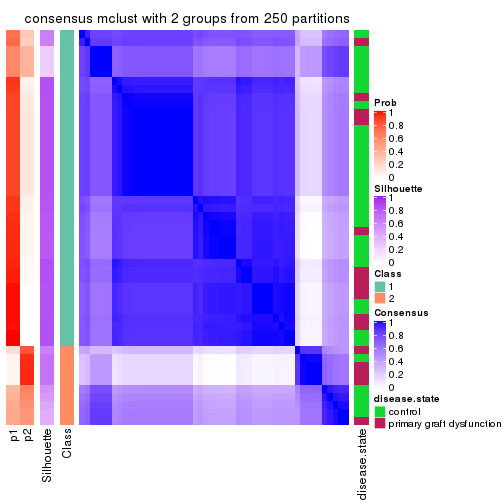
consensus_heatmap(res, k = 3)
consensus_heatmap(res, k = 4)
consensus_heatmap(res, k = 5)
consensus_heatmap(res, k = 6)
Heatmaps for the membership of samples in all partitions to see how consistent they are:
membership_heatmap(res, k = 2)
membership_heatmap(res, k = 3)

membership_heatmap(res, k = 4)

membership_heatmap(res, k = 5)
membership_heatmap(res, k = 6)
As soon as we have had the classes for columns, we can look for signatures which are significantly different between classes which can be candidate marks for certain classes. Following are the heatmaps for signatures.
Signature heatmaps where rows are scaled:
get_signatures(res, k = 2)
get_signatures(res, k = 3)
get_signatures(res, k = 4)
get_signatures(res, k = 5)
get_signatures(res, k = 6)

Signature heatmaps where rows are not scaled:
get_signatures(res, k = 2, scale_rows = FALSE)
get_signatures(res, k = 3, scale_rows = FALSE)
get_signatures(res, k = 4, scale_rows = FALSE)
get_signatures(res, k = 5, scale_rows = FALSE)

get_signatures(res, k = 6, scale_rows = FALSE)
Compare the overlap of signatures from different k:
compare_signatures(res)
get_signature() returns a data frame invisibly. TO get the list of signatures, the function
call should be assigned to a variable explicitly. In following code, if plot argument is set
to FALSE, no heatmap is plotted while only the differential analysis is performed.
# code only for demonstration
tb = get_signature(res, k = ..., plot = FALSE)
An example of the output of tb is:
#> which_row fdr mean_1 mean_2 scaled_mean_1 scaled_mean_2 km
#> 1 38 0.042760348 8.373488 9.131774 -0.5533452 0.5164555 1
#> 2 40 0.018707592 7.106213 8.469186 -0.6173731 0.5762149 1
#> 3 55 0.019134737 10.221463 11.207825 -0.6159697 0.5749050 1
#> 4 59 0.006059896 5.921854 7.869574 -0.6899429 0.6439467 1
#> 5 60 0.018055526 8.928898 10.211722 -0.6204761 0.5791110 1
#> 6 98 0.009384629 15.714769 14.887706 0.6635654 -0.6193277 2
...
The columns in tb are:
which_row: row indices corresponding to the input matrix.fdr: FDR for the differential test. mean_x: The mean value in group x.scaled_mean_x: The mean value in group x after rows are scaled.km: Row groups if k-means clustering is applied to rows.UMAP plot which shows how samples are separated.
dimension_reduction(res, k = 2, method = "UMAP")
dimension_reduction(res, k = 3, method = "UMAP")
dimension_reduction(res, k = 4, method = "UMAP")

dimension_reduction(res, k = 5, method = "UMAP")
dimension_reduction(res, k = 6, method = "UMAP")
Following heatmap shows how subgroups are split when increasing k:
collect_classes(res)
Test correlation between subgroups and known annotations. If the known annotation is numeric, one-way ANOVA test is applied, and if the known annotation is discrete, chi-squared contingency table test is applied.
test_to_known_factors(res)
#> n disease.state(p) k
#> SD:mclust 43 0.359 2
#> SD:mclust 48 0.870 3
#> SD:mclust 46 0.245 4
#> SD:mclust 45 0.207 5
#> SD:mclust 39 0.199 6
If matrix rows can be associated to genes, consider to use GO_Enrichment(res,
...) to perform function enrichment for the signature genes.
The object with results only for a single top-value method and a single partition method can be extracted as:
res = res_list["SD", "NMF"]
# you can also extract it by
# res = res_list["SD:NMF"]
A summary of res and all the functions that can be applied to it:
res
#> A 'ConsensusPartition' object with k = 2, 3, 4, 5, 6.
#> On a matrix with 16753 rows and 50 columns.
#> Top rows (1000, 2000, 3000, 4000, 5000) are extracted by 'SD' method.
#> Subgroups are detected by 'NMF' method.
#> Performed in total 1250 partitions by row resampling.
#> Best k for subgroups seems to be 2.
#>
#> Following methods can be applied to this 'ConsensusPartition' object:
#> [1] "cola_report" "collect_classes" "collect_plots"
#> [4] "collect_stats" "colnames" "compare_signatures"
#> [7] "consensus_heatmap" "dimension_reduction" "functional_enrichment"
#> [10] "get_anno_col" "get_anno" "get_classes"
#> [13] "get_consensus" "get_matrix" "get_membership"
#> [16] "get_param" "get_signatures" "get_stats"
#> [19] "is_best_k" "is_stable_k" "membership_heatmap"
#> [22] "ncol" "nrow" "plot_ecdf"
#> [25] "rownames" "select_partition_number" "show"
#> [28] "suggest_best_k" "test_to_known_factors"
collect_plots() function collects all the plots made from res for all k (number of partitions)
into one single page to provide an easy and fast comparison between different k.
collect_plots(res)
The plots are:
k and the heatmap of
predicted classes for each k.k.k.k.All the plots in panels can be made by individual functions and they are plotted later in this section.
select_partition_number() produces several plots showing different
statistics for choosing “optimized” k. There are following statistics:
k;k, the area increased is defined as \(A_k - A_{k-1}\).The detailed explanations of these statistics can be found in the cola vignette.
Generally speaking, lower PAC score, higher mean silhouette score or higher
concordance corresponds to better partition. Rand index and Jaccard index
measure how similar the current partition is compared to partition with k-1.
If they are too similar, we won't accept k is better than k-1.
select_partition_number(res)
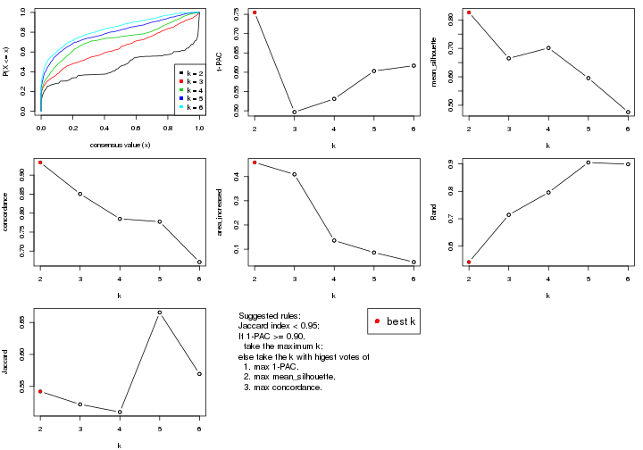
The numeric values for all these statistics can be obtained by get_stats().
get_stats(res)
#> k 1-PAC mean_silhouette concordance area_increased Rand Jaccard
#> 2 2 0.755 0.826 0.933 0.4582 0.542 0.542
#> 3 3 0.497 0.665 0.851 0.4091 0.714 0.522
#> 4 4 0.531 0.701 0.785 0.1357 0.796 0.510
#> 5 5 0.603 0.595 0.777 0.0862 0.905 0.666
#> 6 6 0.617 0.476 0.671 0.0467 0.899 0.569
suggest_best_k() suggests the best \(k\) based on these statistics. The rules are as follows:
NA.suggest_best_k(res)
#> [1] 2
Following shows the table of the partitions (You need to click the show/hide
code output link to see it). The membership matrix (columns with name p*)
is inferred by
clue::cl_consensus()
function with the SE method. Basically the value in the membership matrix
represents the probability to belong to a certain group. The finall class
label for an item is determined with the group with highest probability it
belongs to.
In get_classes() function, the entropy is calculated from the membership
matrix and the silhouette score is calculated from the consensus matrix.
cbind(get_classes(res, k = 2), get_membership(res, k = 2))
#> class entropy silhouette p1 p2
#> GSM198618 2 0.7745 0.6807 0.228 0.772
#> GSM198622 1 0.0000 0.9377 1.000 0.000
#> GSM198623 1 0.0000 0.9377 1.000 0.000
#> GSM198626 1 0.0000 0.9377 1.000 0.000
#> GSM198627 1 0.0376 0.9358 0.996 0.004
#> GSM198628 1 0.0000 0.9377 1.000 0.000
#> GSM198629 1 0.0000 0.9377 1.000 0.000
#> GSM198630 1 0.0000 0.9377 1.000 0.000
#> GSM198631 1 0.0000 0.9377 1.000 0.000
#> GSM198632 1 0.0000 0.9377 1.000 0.000
#> GSM198633 1 0.0000 0.9377 1.000 0.000
#> GSM198634 1 0.0000 0.9377 1.000 0.000
#> GSM198635 1 0.0376 0.9358 0.996 0.004
#> GSM198636 1 0.6531 0.7567 0.832 0.168
#> GSM198639 1 0.1184 0.9291 0.984 0.016
#> GSM198641 1 0.0672 0.9341 0.992 0.008
#> GSM198642 1 0.0000 0.9377 1.000 0.000
#> GSM198643 1 0.0000 0.9377 1.000 0.000
#> GSM198644 2 0.0000 0.8924 0.000 1.000
#> GSM198645 1 0.0000 0.9377 1.000 0.000
#> GSM198649 2 0.0000 0.8924 0.000 1.000
#> GSM198651 2 0.2236 0.8803 0.036 0.964
#> GSM198653 2 0.0000 0.8924 0.000 1.000
#> GSM198654 2 0.0376 0.8918 0.004 0.996
#> GSM198655 2 0.5059 0.8195 0.112 0.888
#> GSM198656 1 0.0672 0.9345 0.992 0.008
#> GSM198657 1 0.2948 0.9021 0.948 0.052
#> GSM198658 1 0.9795 0.2323 0.584 0.416
#> GSM198659 2 0.0000 0.8924 0.000 1.000
#> GSM198660 1 0.3431 0.8924 0.936 0.064
#> GSM198662 1 0.9896 0.1494 0.560 0.440
#> GSM198663 2 0.1843 0.8819 0.028 0.972
#> GSM198664 1 0.9933 0.0941 0.548 0.452
#> GSM198665 2 0.9998 0.0315 0.492 0.508
#> GSM198616 1 0.0000 0.9377 1.000 0.000
#> GSM198617 2 0.9970 0.1272 0.468 0.532
#> GSM198619 1 0.0376 0.9359 0.996 0.004
#> GSM198620 2 0.0000 0.8924 0.000 1.000
#> GSM198621 1 0.2236 0.9147 0.964 0.036
#> GSM198624 1 0.0000 0.9377 1.000 0.000
#> GSM198625 1 0.0000 0.9377 1.000 0.000
#> GSM198637 1 0.0000 0.9377 1.000 0.000
#> GSM198638 1 0.4161 0.8631 0.916 0.084
#> GSM198640 1 0.0000 0.9377 1.000 0.000
#> GSM198646 2 0.0000 0.8924 0.000 1.000
#> GSM198647 2 0.0376 0.8918 0.004 0.996
#> GSM198648 2 0.0938 0.8897 0.012 0.988
#> GSM198650 2 0.6887 0.7442 0.184 0.816
#> GSM198652 2 0.0000 0.8924 0.000 1.000
#> GSM198661 1 0.0938 0.9317 0.988 0.012
cbind(get_classes(res, k = 3), get_membership(res, k = 3))
#> class entropy silhouette p1 p2 p3
#> GSM198618 3 0.4609 0.7462 0.128 0.028 0.844
#> GSM198622 1 0.6309 -0.0227 0.504 0.496 0.000
#> GSM198623 1 0.1964 0.7909 0.944 0.000 0.056
#> GSM198626 1 0.0000 0.8098 1.000 0.000 0.000
#> GSM198627 1 0.5058 0.6063 0.756 0.244 0.000
#> GSM198628 1 0.2165 0.7825 0.936 0.064 0.000
#> GSM198629 1 0.0000 0.8098 1.000 0.000 0.000
#> GSM198630 1 0.0237 0.8092 0.996 0.004 0.000
#> GSM198631 1 0.0237 0.8092 0.996 0.004 0.000
#> GSM198632 1 0.0000 0.8098 1.000 0.000 0.000
#> GSM198633 1 0.5797 0.5429 0.712 0.280 0.008
#> GSM198634 1 0.3412 0.7354 0.876 0.124 0.000
#> GSM198635 2 0.5591 0.5605 0.304 0.696 0.000
#> GSM198636 2 0.3879 0.7893 0.152 0.848 0.000
#> GSM198639 1 0.6295 0.0387 0.528 0.000 0.472
#> GSM198641 2 0.1411 0.8662 0.036 0.964 0.000
#> GSM198642 1 0.0829 0.8093 0.984 0.004 0.012
#> GSM198643 1 0.0747 0.8077 0.984 0.000 0.016
#> GSM198644 2 0.2796 0.8298 0.000 0.908 0.092
#> GSM198645 1 0.2878 0.7648 0.904 0.000 0.096
#> GSM198649 3 0.1529 0.7666 0.000 0.040 0.960
#> GSM198651 2 0.0475 0.8721 0.004 0.992 0.004
#> GSM198653 2 0.3619 0.8004 0.000 0.864 0.136
#> GSM198654 3 0.0892 0.7724 0.000 0.020 0.980
#> GSM198655 3 0.5024 0.6262 0.004 0.220 0.776
#> GSM198656 1 0.5327 0.5586 0.728 0.000 0.272
#> GSM198657 3 0.6309 -0.0292 0.496 0.000 0.504
#> GSM198658 3 0.2796 0.7723 0.092 0.000 0.908
#> GSM198659 2 0.2796 0.8381 0.000 0.908 0.092
#> GSM198660 1 0.6683 -0.0588 0.500 0.008 0.492
#> GSM198662 3 0.3116 0.7659 0.108 0.000 0.892
#> GSM198663 2 0.0237 0.8711 0.000 0.996 0.004
#> GSM198664 2 0.4609 0.8108 0.128 0.844 0.028
#> GSM198665 3 0.2796 0.7718 0.092 0.000 0.908
#> GSM198616 1 0.1163 0.8038 0.972 0.000 0.028
#> GSM198617 3 0.4346 0.6895 0.184 0.000 0.816
#> GSM198619 1 0.3879 0.7166 0.848 0.000 0.152
#> GSM198620 3 0.5968 0.3682 0.000 0.364 0.636
#> GSM198621 3 0.6095 0.3190 0.392 0.000 0.608
#> GSM198624 1 0.0424 0.8093 0.992 0.000 0.008
#> GSM198625 1 0.5327 0.5621 0.728 0.272 0.000
#> GSM198637 1 0.1289 0.8007 0.968 0.032 0.000
#> GSM198638 1 0.7311 0.3283 0.580 0.384 0.036
#> GSM198640 1 0.0424 0.8093 0.992 0.000 0.008
#> GSM198646 3 0.3267 0.7265 0.000 0.116 0.884
#> GSM198647 3 0.0475 0.7748 0.004 0.004 0.992
#> GSM198648 2 0.0661 0.8725 0.008 0.988 0.004
#> GSM198650 3 0.1585 0.7740 0.008 0.028 0.964
#> GSM198652 3 0.4842 0.6198 0.000 0.224 0.776
#> GSM198661 1 0.5835 0.4292 0.660 0.000 0.340
cbind(get_classes(res, k = 4), get_membership(res, k = 4))
#> class entropy silhouette p1 p2 p3 p4
#> GSM198618 4 0.3451 0.8118 0.052 0.044 0.020 0.884
#> GSM198622 1 0.4792 0.5698 0.680 0.312 0.000 0.008
#> GSM198623 1 0.3991 0.7513 0.808 0.000 0.172 0.020
#> GSM198626 1 0.2546 0.8441 0.900 0.008 0.092 0.000
#> GSM198627 1 0.2926 0.8337 0.896 0.056 0.048 0.000
#> GSM198628 1 0.3965 0.8100 0.840 0.032 0.120 0.008
#> GSM198629 1 0.0000 0.8581 1.000 0.000 0.000 0.000
#> GSM198630 1 0.2775 0.8423 0.896 0.020 0.084 0.000
#> GSM198631 1 0.2255 0.8483 0.920 0.012 0.068 0.000
#> GSM198632 1 0.1690 0.8526 0.952 0.032 0.008 0.008
#> GSM198633 2 0.5795 0.0931 0.460 0.516 0.008 0.016
#> GSM198634 1 0.3895 0.7488 0.804 0.184 0.000 0.012
#> GSM198635 2 0.4011 0.6226 0.208 0.784 0.000 0.008
#> GSM198636 2 0.8299 0.5031 0.216 0.500 0.244 0.040
#> GSM198639 4 0.4630 0.7096 0.196 0.000 0.036 0.768
#> GSM198641 2 0.1661 0.7160 0.004 0.944 0.052 0.000
#> GSM198642 1 0.3972 0.7389 0.788 0.008 0.204 0.000
#> GSM198643 1 0.0712 0.8568 0.984 0.004 0.008 0.004
#> GSM198644 3 0.6783 -0.2691 0.004 0.404 0.508 0.084
#> GSM198645 1 0.5632 0.6479 0.712 0.000 0.196 0.092
#> GSM198649 4 0.1042 0.8127 0.000 0.008 0.020 0.972
#> GSM198651 2 0.4825 0.6263 0.004 0.700 0.288 0.008
#> GSM198653 2 0.5074 0.6351 0.000 0.724 0.236 0.040
#> GSM198654 3 0.3942 0.7403 0.000 0.000 0.764 0.236
#> GSM198655 3 0.2246 0.6312 0.004 0.016 0.928 0.052
#> GSM198656 3 0.4831 0.6758 0.208 0.000 0.752 0.040
#> GSM198657 3 0.5512 0.7446 0.100 0.000 0.728 0.172
#> GSM198658 3 0.5374 0.7253 0.052 0.000 0.704 0.244
#> GSM198659 2 0.5217 0.6542 0.000 0.756 0.136 0.108
#> GSM198660 3 0.5416 0.7490 0.112 0.000 0.740 0.148
#> GSM198662 3 0.6280 0.5693 0.072 0.000 0.584 0.344
#> GSM198663 2 0.1284 0.7127 0.000 0.964 0.024 0.012
#> GSM198664 2 0.4342 0.6010 0.012 0.784 0.196 0.008
#> GSM198665 3 0.4630 0.7372 0.016 0.000 0.732 0.252
#> GSM198616 1 0.0992 0.8559 0.976 0.004 0.008 0.012
#> GSM198617 4 0.3796 0.7815 0.096 0.000 0.056 0.848
#> GSM198619 1 0.3743 0.7614 0.824 0.000 0.016 0.160
#> GSM198620 4 0.4608 0.6815 0.000 0.104 0.096 0.800
#> GSM198621 4 0.3763 0.7814 0.144 0.000 0.024 0.832
#> GSM198624 1 0.0188 0.8582 0.996 0.000 0.004 0.000
#> GSM198625 1 0.3548 0.8289 0.864 0.068 0.068 0.000
#> GSM198637 1 0.3108 0.8066 0.872 0.112 0.000 0.016
#> GSM198638 2 0.8462 0.4438 0.240 0.532 0.120 0.108
#> GSM198640 1 0.2531 0.8487 0.924 0.032 0.024 0.020
#> GSM198646 4 0.2589 0.7855 0.000 0.044 0.044 0.912
#> GSM198647 4 0.1004 0.8150 0.000 0.004 0.024 0.972
#> GSM198648 2 0.1182 0.7112 0.000 0.968 0.016 0.016
#> GSM198650 3 0.4072 0.7288 0.000 0.000 0.748 0.252
#> GSM198652 3 0.3071 0.6483 0.000 0.044 0.888 0.068
#> GSM198661 3 0.5167 0.7322 0.132 0.000 0.760 0.108
cbind(get_classes(res, k = 5), get_membership(res, k = 5))
#> class entropy silhouette p1 p2 p3 p4 p5
#> GSM198618 4 0.4696 0.741 0.000 0.064 0.108 0.780 0.048
#> GSM198622 2 0.3266 0.654 0.004 0.796 0.000 0.000 0.200
#> GSM198623 5 0.5152 0.394 0.044 0.004 0.344 0.000 0.608
#> GSM198626 5 0.4238 0.385 0.368 0.004 0.000 0.000 0.628
#> GSM198627 5 0.4217 0.529 0.232 0.020 0.008 0.000 0.740
#> GSM198628 1 0.4595 -0.224 0.504 0.004 0.004 0.000 0.488
#> GSM198629 5 0.2280 0.605 0.120 0.000 0.000 0.000 0.880
#> GSM198630 5 0.4552 0.413 0.352 0.004 0.012 0.000 0.632
#> GSM198631 5 0.4096 0.520 0.260 0.004 0.012 0.000 0.724
#> GSM198632 5 0.2438 0.623 0.000 0.040 0.044 0.008 0.908
#> GSM198633 2 0.3894 0.735 0.008 0.832 0.024 0.032 0.104
#> GSM198634 5 0.4268 0.148 0.000 0.444 0.000 0.000 0.556
#> GSM198635 2 0.1270 0.774 0.000 0.948 0.000 0.000 0.052
#> GSM198636 1 0.3648 0.559 0.828 0.020 0.000 0.024 0.128
#> GSM198639 4 0.5621 0.613 0.004 0.000 0.112 0.632 0.252
#> GSM198641 2 0.3074 0.696 0.196 0.804 0.000 0.000 0.000
#> GSM198642 5 0.6122 0.326 0.124 0.004 0.344 0.000 0.528
#> GSM198643 5 0.2276 0.621 0.004 0.008 0.076 0.004 0.908
#> GSM198644 1 0.3213 0.580 0.836 0.004 0.016 0.144 0.000
#> GSM198645 3 0.6593 0.138 0.008 0.004 0.488 0.148 0.352
#> GSM198649 4 0.0992 0.748 0.024 0.000 0.008 0.968 0.000
#> GSM198651 1 0.4792 0.357 0.716 0.228 0.040 0.016 0.000
#> GSM198653 2 0.6282 0.552 0.164 0.628 0.172 0.036 0.000
#> GSM198654 3 0.2535 0.801 0.076 0.000 0.892 0.032 0.000
#> GSM198655 1 0.3485 0.597 0.828 0.000 0.124 0.048 0.000
#> GSM198656 3 0.2446 0.809 0.056 0.000 0.900 0.000 0.044
#> GSM198657 3 0.1016 0.829 0.008 0.004 0.972 0.012 0.004
#> GSM198658 3 0.1954 0.820 0.008 0.000 0.932 0.032 0.028
#> GSM198659 2 0.7365 0.430 0.160 0.540 0.112 0.188 0.000
#> GSM198660 3 0.2291 0.822 0.024 0.000 0.916 0.012 0.048
#> GSM198662 3 0.3151 0.771 0.004 0.000 0.864 0.064 0.068
#> GSM198663 2 0.0963 0.778 0.036 0.964 0.000 0.000 0.000
#> GSM198664 2 0.1928 0.775 0.004 0.920 0.072 0.004 0.000
#> GSM198665 3 0.1251 0.826 0.008 0.000 0.956 0.036 0.000
#> GSM198616 5 0.1914 0.625 0.000 0.008 0.056 0.008 0.928
#> GSM198617 4 0.6354 0.515 0.000 0.008 0.240 0.560 0.192
#> GSM198619 5 0.5176 0.413 0.008 0.000 0.080 0.224 0.688
#> GSM198620 4 0.2852 0.624 0.172 0.000 0.000 0.828 0.000
#> GSM198621 4 0.3629 0.756 0.004 0.000 0.072 0.832 0.092
#> GSM198624 5 0.2389 0.607 0.116 0.004 0.000 0.000 0.880
#> GSM198625 5 0.5360 0.463 0.296 0.056 0.012 0.000 0.636
#> GSM198637 5 0.4652 0.547 0.008 0.152 0.048 0.020 0.772
#> GSM198638 2 0.4577 0.716 0.008 0.796 0.104 0.056 0.036
#> GSM198640 5 0.6554 0.457 0.004 0.104 0.184 0.076 0.632
#> GSM198646 4 0.1732 0.711 0.080 0.000 0.000 0.920 0.000
#> GSM198647 4 0.1282 0.761 0.004 0.000 0.044 0.952 0.000
#> GSM198648 2 0.1800 0.774 0.048 0.932 0.000 0.020 0.000
#> GSM198650 3 0.5722 0.648 0.124 0.000 0.680 0.168 0.028
#> GSM198652 3 0.4540 0.588 0.268 0.008 0.700 0.024 0.000
#> GSM198661 3 0.1518 0.819 0.048 0.004 0.944 0.000 0.004
cbind(get_classes(res, k = 6), get_membership(res, k = 6))
#> class entropy silhouette p1 p2 p3 p4 p5 p6
#> GSM198618 4 0.450 0.6432 0.048 0.016 0.028 0.792 0.024 0.092
#> GSM198622 2 0.349 0.5857 0.000 0.724 0.000 0.000 0.268 0.008
#> GSM198623 1 0.714 0.2736 0.468 0.000 0.148 0.016 0.276 0.092
#> GSM198626 1 0.395 0.3771 0.748 0.000 0.000 0.000 0.188 0.064
#> GSM198627 5 0.544 -0.0397 0.408 0.016 0.000 0.000 0.500 0.076
#> GSM198628 1 0.497 0.3832 0.640 0.000 0.000 0.000 0.228 0.132
#> GSM198629 5 0.363 0.2465 0.356 0.000 0.000 0.000 0.644 0.000
#> GSM198630 1 0.382 0.3995 0.728 0.000 0.000 0.000 0.240 0.032
#> GSM198631 1 0.388 0.3063 0.644 0.000 0.004 0.000 0.348 0.004
#> GSM198632 5 0.476 0.5416 0.152 0.060 0.004 0.020 0.744 0.020
#> GSM198633 2 0.428 0.6431 0.044 0.788 0.000 0.008 0.092 0.068
#> GSM198634 2 0.437 0.2102 0.016 0.532 0.000 0.000 0.448 0.004
#> GSM198635 2 0.239 0.6784 0.000 0.864 0.000 0.000 0.128 0.008
#> GSM198636 6 0.418 0.3334 0.384 0.000 0.000 0.004 0.012 0.600
#> GSM198639 4 0.436 0.5687 0.008 0.000 0.008 0.672 0.292 0.020
#> GSM198641 2 0.405 0.5485 0.100 0.764 0.000 0.000 0.004 0.132
#> GSM198642 1 0.637 0.3193 0.552 0.000 0.180 0.000 0.200 0.068
#> GSM198643 5 0.146 0.6170 0.028 0.000 0.016 0.004 0.948 0.004
#> GSM198644 6 0.627 0.4854 0.340 0.004 0.028 0.148 0.000 0.480
#> GSM198645 1 0.861 -0.0465 0.300 0.000 0.164 0.276 0.124 0.136
#> GSM198649 4 0.133 0.7014 0.000 0.000 0.000 0.936 0.000 0.064
#> GSM198651 6 0.727 0.3899 0.204 0.208 0.156 0.000 0.000 0.432
#> GSM198653 2 0.564 0.3810 0.084 0.656 0.152 0.000 0.000 0.108
#> GSM198654 3 0.133 0.6842 0.008 0.000 0.944 0.000 0.000 0.048
#> GSM198655 6 0.560 0.3540 0.144 0.000 0.292 0.008 0.000 0.556
#> GSM198656 3 0.316 0.6980 0.056 0.000 0.852 0.000 0.072 0.020
#> GSM198657 3 0.452 0.6755 0.128 0.000 0.760 0.024 0.012 0.076
#> GSM198658 3 0.201 0.7039 0.000 0.000 0.904 0.004 0.084 0.008
#> GSM198659 6 0.751 0.1112 0.004 0.296 0.136 0.204 0.000 0.360
#> GSM198660 3 0.305 0.6868 0.008 0.004 0.848 0.000 0.112 0.028
#> GSM198662 3 0.520 0.6894 0.088 0.000 0.736 0.036 0.068 0.072
#> GSM198663 2 0.107 0.6795 0.000 0.952 0.000 0.000 0.000 0.048
#> GSM198664 2 0.125 0.6868 0.000 0.956 0.024 0.000 0.012 0.008
#> GSM198665 3 0.624 0.5896 0.132 0.000 0.640 0.076 0.036 0.116
#> GSM198616 5 0.186 0.6160 0.092 0.000 0.000 0.004 0.904 0.000
#> GSM198617 4 0.748 0.4286 0.084 0.004 0.068 0.500 0.236 0.108
#> GSM198619 5 0.287 0.5304 0.008 0.000 0.008 0.136 0.844 0.004
#> GSM198620 4 0.355 0.5029 0.000 0.004 0.000 0.696 0.000 0.300
#> GSM198621 4 0.155 0.7173 0.000 0.000 0.004 0.932 0.060 0.004
#> GSM198624 1 0.400 0.0197 0.508 0.000 0.000 0.004 0.488 0.000
#> GSM198625 1 0.356 0.3551 0.724 0.012 0.000 0.000 0.264 0.000
#> GSM198637 5 0.287 0.5673 0.008 0.096 0.004 0.012 0.868 0.012
#> GSM198638 2 0.719 0.4263 0.088 0.596 0.056 0.120 0.032 0.108
#> GSM198640 1 0.907 0.1184 0.340 0.044 0.084 0.212 0.180 0.140
#> GSM198646 4 0.284 0.6271 0.000 0.000 0.000 0.808 0.004 0.188
#> GSM198647 4 0.052 0.7177 0.000 0.000 0.008 0.984 0.000 0.008
#> GSM198648 2 0.238 0.6563 0.004 0.892 0.000 0.036 0.000 0.068
#> GSM198650 3 0.469 0.5445 0.004 0.000 0.704 0.008 0.196 0.088
#> GSM198652 3 0.549 0.2500 0.152 0.012 0.604 0.000 0.000 0.232
#> GSM198661 3 0.547 0.6214 0.172 0.000 0.676 0.040 0.012 0.100
Heatmaps for the consensus matrix. It visualizes the probability of two samples to be in a same group.
consensus_heatmap(res, k = 2)
consensus_heatmap(res, k = 3)
consensus_heatmap(res, k = 4)
consensus_heatmap(res, k = 5)
consensus_heatmap(res, k = 6)
Heatmaps for the membership of samples in all partitions to see how consistent they are:
membership_heatmap(res, k = 2)
membership_heatmap(res, k = 3)
membership_heatmap(res, k = 4)

membership_heatmap(res, k = 5)
membership_heatmap(res, k = 6)
As soon as we have had the classes for columns, we can look for signatures which are significantly different between classes which can be candidate marks for certain classes. Following are the heatmaps for signatures.
Signature heatmaps where rows are scaled:
get_signatures(res, k = 2)
get_signatures(res, k = 3)
get_signatures(res, k = 4)
get_signatures(res, k = 5)
get_signatures(res, k = 6)
Signature heatmaps where rows are not scaled:
get_signatures(res, k = 2, scale_rows = FALSE)
get_signatures(res, k = 3, scale_rows = FALSE)
get_signatures(res, k = 4, scale_rows = FALSE)
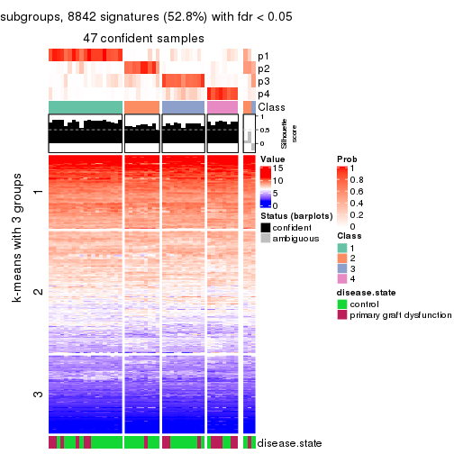
get_signatures(res, k = 5, scale_rows = FALSE)
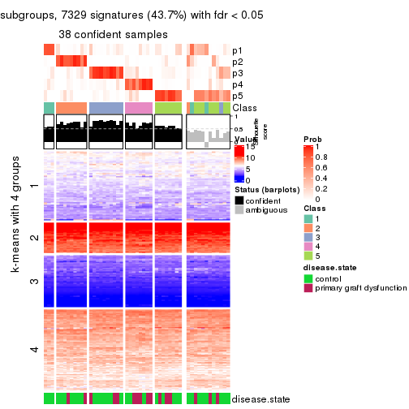
get_signatures(res, k = 6, scale_rows = FALSE)
Compare the overlap of signatures from different k:
compare_signatures(res)
get_signature() returns a data frame invisibly. TO get the list of signatures, the function
call should be assigned to a variable explicitly. In following code, if plot argument is set
to FALSE, no heatmap is plotted while only the differential analysis is performed.
# code only for demonstration
tb = get_signature(res, k = ..., plot = FALSE)
An example of the output of tb is:
#> which_row fdr mean_1 mean_2 scaled_mean_1 scaled_mean_2 km
#> 1 38 0.042760348 8.373488 9.131774 -0.5533452 0.5164555 1
#> 2 40 0.018707592 7.106213 8.469186 -0.6173731 0.5762149 1
#> 3 55 0.019134737 10.221463 11.207825 -0.6159697 0.5749050 1
#> 4 59 0.006059896 5.921854 7.869574 -0.6899429 0.6439467 1
#> 5 60 0.018055526 8.928898 10.211722 -0.6204761 0.5791110 1
#> 6 98 0.009384629 15.714769 14.887706 0.6635654 -0.6193277 2
...
The columns in tb are:
which_row: row indices corresponding to the input matrix.fdr: FDR for the differential test. mean_x: The mean value in group x.scaled_mean_x: The mean value in group x after rows are scaled.km: Row groups if k-means clustering is applied to rows.UMAP plot which shows how samples are separated.
dimension_reduction(res, k = 2, method = "UMAP")
dimension_reduction(res, k = 3, method = "UMAP")
dimension_reduction(res, k = 4, method = "UMAP")

dimension_reduction(res, k = 5, method = "UMAP")
dimension_reduction(res, k = 6, method = "UMAP")
Following heatmap shows how subgroups are split when increasing k:
collect_classes(res)
Test correlation between subgroups and known annotations. If the known annotation is numeric, one-way ANOVA test is applied, and if the known annotation is discrete, chi-squared contingency table test is applied.
test_to_known_factors(res)
#> n disease.state(p) k
#> SD:NMF 45 0.737 2
#> SD:NMF 42 0.257 3
#> SD:NMF 47 0.148 4
#> SD:NMF 38 0.278 5
#> SD:NMF 28 0.187 6
If matrix rows can be associated to genes, consider to use GO_Enrichment(res,
...) to perform function enrichment for the signature genes.
The object with results only for a single top-value method and a single partition method can be extracted as:
res = res_list["CV", "hclust"]
# you can also extract it by
# res = res_list["CV:hclust"]
A summary of res and all the functions that can be applied to it:
res
#> A 'ConsensusPartition' object with k = 2, 3, 4, 5, 6.
#> On a matrix with 16753 rows and 50 columns.
#> Top rows (1000, 2000, 3000, 4000, 5000) are extracted by 'CV' method.
#> Subgroups are detected by 'hclust' method.
#> Performed in total 1250 partitions by row resampling.
#> Best k for subgroups seems to be 5.
#>
#> Following methods can be applied to this 'ConsensusPartition' object:
#> [1] "cola_report" "collect_classes" "collect_plots"
#> [4] "collect_stats" "colnames" "compare_signatures"
#> [7] "consensus_heatmap" "dimension_reduction" "functional_enrichment"
#> [10] "get_anno_col" "get_anno" "get_classes"
#> [13] "get_consensus" "get_matrix" "get_membership"
#> [16] "get_param" "get_signatures" "get_stats"
#> [19] "is_best_k" "is_stable_k" "membership_heatmap"
#> [22] "ncol" "nrow" "plot_ecdf"
#> [25] "rownames" "select_partition_number" "show"
#> [28] "suggest_best_k" "test_to_known_factors"
collect_plots() function collects all the plots made from res for all k (number of partitions)
into one single page to provide an easy and fast comparison between different k.
collect_plots(res)
The plots are:
k and the heatmap of
predicted classes for each k.k.k.k.All the plots in panels can be made by individual functions and they are plotted later in this section.
select_partition_number() produces several plots showing different
statistics for choosing “optimized” k. There are following statistics:
k;k, the area increased is defined as \(A_k - A_{k-1}\).The detailed explanations of these statistics can be found in the cola vignette.
Generally speaking, lower PAC score, higher mean silhouette score or higher
concordance corresponds to better partition. Rand index and Jaccard index
measure how similar the current partition is compared to partition with k-1.
If they are too similar, we won't accept k is better than k-1.
select_partition_number(res)
The numeric values for all these statistics can be obtained by get_stats().
get_stats(res)
#> k 1-PAC mean_silhouette concordance area_increased Rand Jaccard
#> 2 2 0.372 0.856 0.877 0.264 0.850 0.850
#> 3 3 0.258 0.654 0.760 0.902 0.752 0.708
#> 4 4 0.392 0.643 0.751 0.316 0.706 0.512
#> 5 5 0.458 0.673 0.752 0.106 0.918 0.735
#> 6 6 0.673 0.720 0.812 0.063 0.987 0.942
suggest_best_k() suggests the best \(k\) based on these statistics. The rules are as follows:
NA.suggest_best_k(res)
#> [1] 5
Following shows the table of the partitions (You need to click the show/hide
code output link to see it). The membership matrix (columns with name p*)
is inferred by
clue::cl_consensus()
function with the SE method. Basically the value in the membership matrix
represents the probability to belong to a certain group. The finall class
label for an item is determined with the group with highest probability it
belongs to.
In get_classes() function, the entropy is calculated from the membership
matrix and the silhouette score is calculated from the consensus matrix.
cbind(get_classes(res, k = 2), get_membership(res, k = 2))
#> class entropy silhouette p1 p2
#> GSM198618 1 0.373 0.888 0.928 0.072
#> GSM198622 1 0.184 0.878 0.972 0.028
#> GSM198623 1 0.402 0.887 0.920 0.080
#> GSM198626 1 0.260 0.873 0.956 0.044
#> GSM198627 1 0.260 0.873 0.956 0.044
#> GSM198628 1 0.260 0.873 0.956 0.044
#> GSM198629 1 0.260 0.873 0.956 0.044
#> GSM198630 1 0.260 0.873 0.956 0.044
#> GSM198631 1 0.260 0.873 0.956 0.044
#> GSM198632 1 0.327 0.885 0.940 0.060
#> GSM198633 1 0.163 0.879 0.976 0.024
#> GSM198634 1 0.184 0.878 0.972 0.028
#> GSM198635 1 0.204 0.879 0.968 0.032
#> GSM198636 1 0.260 0.873 0.956 0.044
#> GSM198639 1 0.456 0.878 0.904 0.096
#> GSM198641 1 0.541 0.860 0.876 0.124
#> GSM198642 1 0.388 0.887 0.924 0.076
#> GSM198643 1 0.311 0.884 0.944 0.056
#> GSM198644 1 0.833 0.742 0.736 0.264
#> GSM198645 1 0.388 0.883 0.924 0.076
#> GSM198649 2 0.260 0.992 0.044 0.956
#> GSM198651 1 0.605 0.845 0.852 0.148
#> GSM198653 1 0.833 0.742 0.736 0.264
#> GSM198654 1 0.917 0.685 0.668 0.332
#> GSM198655 1 0.456 0.879 0.904 0.096
#> GSM198656 1 0.416 0.883 0.916 0.084
#> GSM198657 1 0.714 0.827 0.804 0.196
#> GSM198658 1 0.895 0.712 0.688 0.312
#> GSM198659 1 0.714 0.813 0.804 0.196
#> GSM198660 1 0.416 0.879 0.916 0.084
#> GSM198662 1 0.821 0.776 0.744 0.256
#> GSM198663 1 0.615 0.842 0.848 0.152
#> GSM198664 1 0.402 0.880 0.920 0.080
#> GSM198665 1 0.871 0.738 0.708 0.292
#> GSM198616 1 0.311 0.884 0.944 0.056
#> GSM198617 1 0.443 0.879 0.908 0.092
#> GSM198619 1 0.311 0.884 0.944 0.056
#> GSM198620 2 0.327 0.976 0.060 0.940
#> GSM198621 1 0.443 0.879 0.908 0.092
#> GSM198624 1 0.260 0.873 0.956 0.044
#> GSM198625 1 0.260 0.873 0.956 0.044
#> GSM198637 1 0.311 0.884 0.944 0.056
#> GSM198638 1 0.204 0.883 0.968 0.032
#> GSM198640 1 0.327 0.885 0.940 0.060
#> GSM198646 2 0.260 0.992 0.044 0.956
#> GSM198647 2 0.260 0.992 0.044 0.956
#> GSM198648 1 0.584 0.847 0.860 0.140
#> GSM198650 1 0.917 0.685 0.668 0.332
#> GSM198652 1 0.876 0.699 0.704 0.296
#> GSM198661 1 0.808 0.782 0.752 0.248
cbind(get_classes(res, k = 3), get_membership(res, k = 3))
#> class entropy silhouette p1 p2 p3
#> GSM198618 1 0.484 0.672 0.844 0.104 0.052
#> GSM198622 1 0.480 0.653 0.824 0.156 0.020
#> GSM198623 1 0.496 0.672 0.832 0.128 0.040
#> GSM198626 1 0.654 0.603 0.728 0.220 0.052
#> GSM198627 1 0.684 0.590 0.704 0.240 0.056
#> GSM198628 1 0.682 0.589 0.700 0.248 0.052
#> GSM198629 1 0.616 0.622 0.760 0.188 0.052
#> GSM198630 1 0.654 0.603 0.728 0.220 0.052
#> GSM198631 1 0.654 0.603 0.728 0.220 0.052
#> GSM198632 1 0.321 0.690 0.912 0.060 0.028
#> GSM198633 1 0.468 0.655 0.832 0.148 0.020
#> GSM198634 1 0.480 0.653 0.824 0.156 0.020
#> GSM198635 1 0.480 0.655 0.824 0.156 0.020
#> GSM198636 1 0.728 0.535 0.620 0.336 0.044
#> GSM198639 1 0.334 0.694 0.908 0.032 0.060
#> GSM198641 2 0.516 0.834 0.216 0.776 0.008
#> GSM198642 1 0.453 0.666 0.856 0.104 0.040
#> GSM198643 1 0.238 0.697 0.936 0.056 0.008
#> GSM198644 2 0.934 0.450 0.412 0.424 0.164
#> GSM198645 1 0.327 0.697 0.912 0.044 0.044
#> GSM198649 3 0.226 0.983 0.068 0.000 0.932
#> GSM198651 2 0.558 0.841 0.204 0.772 0.024
#> GSM198653 2 0.854 0.786 0.220 0.608 0.172
#> GSM198654 1 0.815 0.349 0.604 0.100 0.296
#> GSM198655 1 0.750 0.476 0.572 0.384 0.044
#> GSM198656 1 0.494 0.655 0.840 0.104 0.056
#> GSM198657 1 0.674 0.562 0.744 0.100 0.156
#> GSM198658 1 0.801 0.390 0.624 0.100 0.276
#> GSM198659 2 0.721 0.835 0.212 0.700 0.088
#> GSM198660 1 0.615 0.609 0.772 0.160 0.068
#> GSM198662 1 0.747 0.489 0.684 0.100 0.216
#> GSM198663 2 0.580 0.828 0.184 0.776 0.040
#> GSM198664 1 0.734 0.324 0.652 0.288 0.060
#> GSM198665 1 0.785 0.426 0.644 0.100 0.256
#> GSM198616 1 0.304 0.687 0.908 0.084 0.008
#> GSM198617 1 0.469 0.662 0.852 0.096 0.052
#> GSM198619 1 0.304 0.687 0.908 0.084 0.008
#> GSM198620 3 0.334 0.947 0.060 0.032 0.908
#> GSM198621 1 0.469 0.662 0.852 0.096 0.052
#> GSM198624 1 0.654 0.603 0.728 0.220 0.052
#> GSM198625 1 0.654 0.603 0.728 0.220 0.052
#> GSM198637 1 0.238 0.697 0.936 0.056 0.008
#> GSM198638 1 0.441 0.661 0.852 0.124 0.024
#> GSM198640 1 0.321 0.690 0.912 0.060 0.028
#> GSM198646 3 0.226 0.983 0.068 0.000 0.932
#> GSM198647 3 0.226 0.983 0.068 0.000 0.932
#> GSM198648 2 0.541 0.842 0.200 0.780 0.020
#> GSM198650 1 0.815 0.349 0.604 0.100 0.296
#> GSM198652 2 0.888 0.758 0.220 0.576 0.204
#> GSM198661 1 0.739 0.500 0.692 0.100 0.208
cbind(get_classes(res, k = 4), get_membership(res, k = 4))
#> class entropy silhouette p1 p2 p3 p4
#> GSM198618 1 0.7597 0.552 0.564 0.192 0.224 0.020
#> GSM198622 1 0.6758 0.640 0.652 0.220 0.104 0.024
#> GSM198623 3 0.4331 0.681 0.288 0.000 0.712 0.000
#> GSM198626 1 0.0188 0.673 0.996 0.000 0.004 0.000
#> GSM198627 1 0.2542 0.642 0.904 0.012 0.000 0.084
#> GSM198628 1 0.3080 0.636 0.880 0.024 0.000 0.096
#> GSM198629 1 0.1474 0.662 0.948 0.000 0.052 0.000
#> GSM198630 1 0.0188 0.673 0.996 0.000 0.004 0.000
#> GSM198631 1 0.0188 0.673 0.996 0.000 0.004 0.000
#> GSM198632 1 0.6592 0.233 0.552 0.076 0.368 0.004
#> GSM198633 1 0.7144 0.618 0.620 0.220 0.136 0.024
#> GSM198634 1 0.6758 0.640 0.652 0.220 0.104 0.024
#> GSM198635 1 0.6681 0.640 0.656 0.216 0.108 0.020
#> GSM198636 1 0.8020 0.516 0.600 0.128 0.128 0.144
#> GSM198639 3 0.4897 0.608 0.332 0.008 0.660 0.000
#> GSM198641 2 0.2882 0.802 0.016 0.904 0.064 0.016
#> GSM198642 3 0.3837 0.712 0.224 0.000 0.776 0.000
#> GSM198643 3 0.4977 0.391 0.460 0.000 0.540 0.000
#> GSM198644 2 0.8312 0.524 0.132 0.540 0.244 0.084
#> GSM198645 3 0.5543 0.572 0.340 0.024 0.632 0.004
#> GSM198649 4 0.3444 0.978 0.000 0.000 0.184 0.816
#> GSM198651 2 0.2750 0.800 0.004 0.908 0.056 0.032
#> GSM198653 2 0.5096 0.746 0.000 0.760 0.156 0.084
#> GSM198654 3 0.1557 0.587 0.000 0.000 0.944 0.056
#> GSM198655 1 0.7948 0.490 0.592 0.188 0.140 0.080
#> GSM198656 3 0.3791 0.720 0.200 0.000 0.796 0.004
#> GSM198657 3 0.2546 0.716 0.092 0.000 0.900 0.008
#> GSM198658 3 0.1398 0.616 0.004 0.000 0.956 0.040
#> GSM198659 2 0.3547 0.771 0.000 0.864 0.064 0.072
#> GSM198660 1 0.8701 0.344 0.392 0.248 0.320 0.040
#> GSM198662 3 0.1356 0.683 0.032 0.000 0.960 0.008
#> GSM198663 2 0.1398 0.777 0.000 0.956 0.004 0.040
#> GSM198664 1 0.8380 0.377 0.408 0.384 0.168 0.040
#> GSM198665 3 0.3107 0.681 0.080 0.000 0.884 0.036
#> GSM198616 3 0.4746 0.605 0.368 0.000 0.632 0.000
#> GSM198617 3 0.4277 0.686 0.280 0.000 0.720 0.000
#> GSM198619 3 0.4746 0.605 0.368 0.000 0.632 0.000
#> GSM198620 4 0.4274 0.932 0.000 0.044 0.148 0.808
#> GSM198621 3 0.4277 0.686 0.280 0.000 0.720 0.000
#> GSM198624 1 0.0336 0.673 0.992 0.000 0.008 0.000
#> GSM198625 1 0.0188 0.673 0.996 0.000 0.004 0.000
#> GSM198637 3 0.4977 0.391 0.460 0.000 0.540 0.000
#> GSM198638 1 0.7415 0.582 0.588 0.212 0.180 0.020
#> GSM198640 1 0.6592 0.233 0.552 0.076 0.368 0.004
#> GSM198646 4 0.3444 0.978 0.000 0.000 0.184 0.816
#> GSM198647 4 0.3444 0.978 0.000 0.000 0.184 0.816
#> GSM198648 2 0.0336 0.787 0.000 0.992 0.008 0.000
#> GSM198650 3 0.1557 0.587 0.000 0.000 0.944 0.056
#> GSM198652 2 0.5907 0.681 0.000 0.680 0.228 0.092
#> GSM198661 3 0.1398 0.692 0.040 0.000 0.956 0.004
cbind(get_classes(res, k = 5), get_membership(res, k = 5))
#> class entropy silhouette p1 p2 p3 p4 p5
#> GSM198618 5 0.256 0.749 0.000 0.000 0.144 0.000 0.856
#> GSM198622 5 0.165 0.754 0.032 0.000 0.020 0.004 0.944
#> GSM198623 3 0.502 0.653 0.096 0.000 0.692 0.000 0.212
#> GSM198626 1 0.425 0.777 0.700 0.000 0.020 0.000 0.280
#> GSM198627 1 0.404 0.742 0.768 0.004 0.004 0.020 0.204
#> GSM198628 1 0.427 0.733 0.748 0.008 0.000 0.028 0.216
#> GSM198629 1 0.507 0.715 0.648 0.000 0.064 0.000 0.288
#> GSM198630 1 0.425 0.777 0.700 0.000 0.020 0.000 0.280
#> GSM198631 1 0.425 0.777 0.700 0.000 0.020 0.000 0.280
#> GSM198632 5 0.405 0.372 0.004 0.000 0.320 0.000 0.676
#> GSM198633 5 0.136 0.774 0.000 0.000 0.048 0.004 0.948
#> GSM198634 5 0.165 0.754 0.032 0.000 0.020 0.004 0.944
#> GSM198635 5 0.205 0.739 0.052 0.000 0.028 0.000 0.920
#> GSM198636 1 0.751 0.260 0.568 0.080 0.076 0.052 0.224
#> GSM198639 3 0.414 0.561 0.000 0.000 0.616 0.000 0.384
#> GSM198641 2 0.243 0.767 0.020 0.904 0.000 0.008 0.068
#> GSM198642 3 0.400 0.698 0.024 0.000 0.748 0.000 0.228
#> GSM198643 3 0.475 0.395 0.016 0.000 0.504 0.000 0.480
#> GSM198644 2 0.710 0.559 0.020 0.608 0.112 0.088 0.172
#> GSM198645 3 0.422 0.512 0.000 0.000 0.584 0.000 0.416
#> GSM198649 4 0.141 0.980 0.000 0.000 0.060 0.940 0.000
#> GSM198651 2 0.171 0.762 0.016 0.940 0.000 0.004 0.040
#> GSM198653 2 0.493 0.744 0.000 0.768 0.068 0.096 0.068
#> GSM198654 3 0.173 0.633 0.000 0.000 0.920 0.080 0.000
#> GSM198655 1 0.808 0.182 0.500 0.148 0.088 0.036 0.228
#> GSM198656 3 0.385 0.705 0.016 0.000 0.768 0.004 0.212
#> GSM198657 3 0.298 0.706 0.004 0.000 0.856 0.016 0.124
#> GSM198658 3 0.211 0.651 0.000 0.000 0.912 0.072 0.016
#> GSM198659 2 0.566 0.706 0.016 0.664 0.012 0.064 0.244
#> GSM198660 5 0.538 0.599 0.000 0.044 0.244 0.036 0.676
#> GSM198662 3 0.221 0.687 0.000 0.000 0.908 0.020 0.072
#> GSM198663 2 0.414 0.734 0.016 0.752 0.000 0.012 0.220
#> GSM198664 5 0.554 0.581 0.000 0.172 0.092 0.036 0.700
#> GSM198665 3 0.340 0.671 0.000 0.000 0.840 0.064 0.096
#> GSM198616 3 0.460 0.598 0.016 0.000 0.600 0.000 0.384
#> GSM198617 3 0.388 0.667 0.000 0.000 0.684 0.000 0.316
#> GSM198619 3 0.460 0.598 0.016 0.000 0.600 0.000 0.384
#> GSM198620 4 0.223 0.936 0.000 0.036 0.032 0.920 0.012
#> GSM198621 3 0.388 0.667 0.000 0.000 0.684 0.000 0.316
#> GSM198624 1 0.425 0.773 0.688 0.000 0.016 0.000 0.296
#> GSM198625 1 0.411 0.773 0.700 0.000 0.012 0.000 0.288
#> GSM198637 3 0.475 0.395 0.016 0.000 0.504 0.000 0.480
#> GSM198638 5 0.196 0.771 0.000 0.000 0.096 0.000 0.904
#> GSM198640 5 0.405 0.372 0.004 0.000 0.320 0.000 0.676
#> GSM198646 4 0.141 0.980 0.000 0.000 0.060 0.940 0.000
#> GSM198647 4 0.141 0.980 0.000 0.000 0.060 0.940 0.000
#> GSM198648 2 0.309 0.769 0.000 0.824 0.000 0.008 0.168
#> GSM198650 3 0.202 0.617 0.000 0.000 0.900 0.100 0.000
#> GSM198652 2 0.462 0.674 0.000 0.752 0.148 0.096 0.004
#> GSM198661 3 0.213 0.691 0.000 0.000 0.908 0.012 0.080
cbind(get_classes(res, k = 6), get_membership(res, k = 6))
#> class entropy silhouette p1 p2 p3 p4 p5 p6
#> GSM198618 5 0.2320 0.749 0.000 0.004 0.132 0.000 0.864 0.000
#> GSM198622 5 0.1461 0.770 0.044 0.000 0.016 0.000 0.940 0.000
#> GSM198623 3 0.4252 0.659 0.188 0.000 0.724 0.000 0.088 0.000
#> GSM198626 1 0.0806 0.932 0.972 0.000 0.008 0.000 0.020 0.000
#> GSM198627 1 0.2113 0.866 0.896 0.000 0.000 0.008 0.004 0.092
#> GSM198628 1 0.2488 0.848 0.864 0.000 0.000 0.008 0.004 0.124
#> GSM198629 1 0.2058 0.866 0.908 0.000 0.056 0.000 0.036 0.000
#> GSM198630 1 0.0806 0.932 0.972 0.000 0.008 0.000 0.020 0.000
#> GSM198631 1 0.0806 0.932 0.972 0.000 0.008 0.000 0.020 0.000
#> GSM198632 5 0.4441 0.297 0.032 0.004 0.344 0.000 0.620 0.000
#> GSM198633 5 0.1461 0.777 0.016 0.000 0.044 0.000 0.940 0.000
#> GSM198634 5 0.1528 0.768 0.048 0.000 0.016 0.000 0.936 0.000
#> GSM198635 5 0.2537 0.747 0.088 0.000 0.024 0.008 0.880 0.000
#> GSM198636 6 0.0551 0.898 0.008 0.004 0.000 0.000 0.004 0.984
#> GSM198639 3 0.4048 0.583 0.012 0.004 0.644 0.000 0.340 0.000
#> GSM198641 2 0.2737 0.707 0.004 0.876 0.000 0.004 0.060 0.056
#> GSM198642 3 0.3735 0.715 0.092 0.000 0.784 0.000 0.124 0.000
#> GSM198643 3 0.4768 0.444 0.052 0.000 0.532 0.000 0.416 0.000
#> GSM198644 2 0.6178 0.433 0.000 0.596 0.080 0.072 0.016 0.236
#> GSM198645 3 0.4234 0.531 0.016 0.004 0.608 0.000 0.372 0.000
#> GSM198649 4 0.0547 0.980 0.000 0.000 0.020 0.980 0.000 0.000
#> GSM198651 2 0.1970 0.706 0.000 0.912 0.000 0.000 0.028 0.060
#> GSM198653 2 0.4842 0.707 0.000 0.748 0.080 0.076 0.088 0.008
#> GSM198654 3 0.2084 0.648 0.000 0.016 0.916 0.044 0.024 0.000
#> GSM198655 6 0.2086 0.892 0.000 0.064 0.012 0.008 0.004 0.912
#> GSM198656 3 0.3439 0.722 0.072 0.000 0.808 0.000 0.120 0.000
#> GSM198657 3 0.2034 0.724 0.024 0.000 0.912 0.004 0.060 0.000
#> GSM198658 3 0.1155 0.676 0.000 0.004 0.956 0.036 0.004 0.000
#> GSM198659 2 0.5641 0.643 0.008 0.636 0.028 0.048 0.256 0.024
#> GSM198660 5 0.4814 0.610 0.004 0.044 0.268 0.020 0.664 0.000
#> GSM198662 3 0.0858 0.710 0.000 0.000 0.968 0.004 0.028 0.000
#> GSM198663 2 0.4053 0.674 0.008 0.732 0.000 0.004 0.228 0.028
#> GSM198664 5 0.4957 0.593 0.004 0.152 0.120 0.020 0.704 0.000
#> GSM198665 3 0.2658 0.701 0.000 0.008 0.876 0.036 0.080 0.000
#> GSM198616 3 0.4524 0.623 0.052 0.000 0.628 0.000 0.320 0.000
#> GSM198617 3 0.3746 0.677 0.012 0.004 0.712 0.000 0.272 0.000
#> GSM198619 3 0.4524 0.623 0.052 0.000 0.628 0.000 0.320 0.000
#> GSM198620 4 0.1155 0.937 0.000 0.036 0.004 0.956 0.004 0.000
#> GSM198621 3 0.3746 0.677 0.012 0.004 0.712 0.000 0.272 0.000
#> GSM198624 1 0.1297 0.925 0.948 0.000 0.012 0.000 0.040 0.000
#> GSM198625 1 0.1124 0.923 0.956 0.000 0.000 0.008 0.036 0.000
#> GSM198637 3 0.4768 0.444 0.052 0.000 0.532 0.000 0.416 0.000
#> GSM198638 5 0.1806 0.769 0.004 0.000 0.088 0.000 0.908 0.000
#> GSM198640 5 0.4441 0.297 0.032 0.004 0.344 0.000 0.620 0.000
#> GSM198646 4 0.0547 0.980 0.000 0.000 0.020 0.980 0.000 0.000
#> GSM198647 4 0.0547 0.980 0.000 0.000 0.020 0.980 0.000 0.000
#> GSM198648 2 0.2946 0.714 0.004 0.808 0.000 0.000 0.184 0.004
#> GSM198650 3 0.2432 0.627 0.000 0.016 0.892 0.072 0.020 0.000
#> GSM198652 2 0.4504 0.637 0.000 0.768 0.112 0.076 0.032 0.012
#> GSM198661 3 0.1155 0.713 0.000 0.004 0.956 0.004 0.036 0.000
Heatmaps for the consensus matrix. It visualizes the probability of two samples to be in a same group.
consensus_heatmap(res, k = 2)
consensus_heatmap(res, k = 3)
consensus_heatmap(res, k = 4)
consensus_heatmap(res, k = 5)
consensus_heatmap(res, k = 6)
Heatmaps for the membership of samples in all partitions to see how consistent they are:
membership_heatmap(res, k = 2)
membership_heatmap(res, k = 3)
membership_heatmap(res, k = 4)
membership_heatmap(res, k = 5)
membership_heatmap(res, k = 6)
As soon as we have had the classes for columns, we can look for signatures which are significantly different between classes which can be candidate marks for certain classes. Following are the heatmaps for signatures.
Signature heatmaps where rows are scaled:
get_signatures(res, k = 2)
get_signatures(res, k = 3)
get_signatures(res, k = 4)
get_signatures(res, k = 5)
get_signatures(res, k = 6)
Signature heatmaps where rows are not scaled:
get_signatures(res, k = 2, scale_rows = FALSE)
get_signatures(res, k = 3, scale_rows = FALSE)
get_signatures(res, k = 4, scale_rows = FALSE)
get_signatures(res, k = 5, scale_rows = FALSE)
get_signatures(res, k = 6, scale_rows = FALSE)
Compare the overlap of signatures from different k:
compare_signatures(res)
get_signature() returns a data frame invisibly. TO get the list of signatures, the function
call should be assigned to a variable explicitly. In following code, if plot argument is set
to FALSE, no heatmap is plotted while only the differential analysis is performed.
# code only for demonstration
tb = get_signature(res, k = ..., plot = FALSE)
An example of the output of tb is:
#> which_row fdr mean_1 mean_2 scaled_mean_1 scaled_mean_2 km
#> 1 38 0.042760348 8.373488 9.131774 -0.5533452 0.5164555 1
#> 2 40 0.018707592 7.106213 8.469186 -0.6173731 0.5762149 1
#> 3 55 0.019134737 10.221463 11.207825 -0.6159697 0.5749050 1
#> 4 59 0.006059896 5.921854 7.869574 -0.6899429 0.6439467 1
#> 5 60 0.018055526 8.928898 10.211722 -0.6204761 0.5791110 1
#> 6 98 0.009384629 15.714769 14.887706 0.6635654 -0.6193277 2
...
The columns in tb are:
which_row: row indices corresponding to the input matrix.fdr: FDR for the differential test. mean_x: The mean value in group x.scaled_mean_x: The mean value in group x after rows are scaled.km: Row groups if k-means clustering is applied to rows.UMAP plot which shows how samples are separated.
dimension_reduction(res, k = 2, method = "UMAP")
dimension_reduction(res, k = 3, method = "UMAP")
dimension_reduction(res, k = 4, method = "UMAP")
dimension_reduction(res, k = 5, method = "UMAP")
dimension_reduction(res, k = 6, method = "UMAP")
Following heatmap shows how subgroups are split when increasing k:
collect_classes(res)
Test correlation between subgroups and known annotations. If the known annotation is numeric, one-way ANOVA test is applied, and if the known annotation is discrete, chi-squared contingency table test is applied.
test_to_known_factors(res)
#> n disease.state(p) k
#> CV:hclust 50 0.173 2
#> CV:hclust 41 0.193 3
#> CV:hclust 43 0.191 4
#> CV:hclust 44 0.249 5
#> CV:hclust 45 0.282 6
If matrix rows can be associated to genes, consider to use GO_Enrichment(res,
...) to perform function enrichment for the signature genes.
The object with results only for a single top-value method and a single partition method can be extracted as:
res = res_list["CV", "kmeans"]
# you can also extract it by
# res = res_list["CV:kmeans"]
A summary of res and all the functions that can be applied to it:
res
#> A 'ConsensusPartition' object with k = 2, 3, 4, 5, 6.
#> On a matrix with 16753 rows and 50 columns.
#> Top rows (1000, 2000, 3000, 4000, 5000) are extracted by 'CV' method.
#> Subgroups are detected by 'kmeans' method.
#> Performed in total 1250 partitions by row resampling.
#> Best k for subgroups seems to be 5.
#>
#> Following methods can be applied to this 'ConsensusPartition' object:
#> [1] "cola_report" "collect_classes" "collect_plots"
#> [4] "collect_stats" "colnames" "compare_signatures"
#> [7] "consensus_heatmap" "dimension_reduction" "functional_enrichment"
#> [10] "get_anno_col" "get_anno" "get_classes"
#> [13] "get_consensus" "get_matrix" "get_membership"
#> [16] "get_param" "get_signatures" "get_stats"
#> [19] "is_best_k" "is_stable_k" "membership_heatmap"
#> [22] "ncol" "nrow" "plot_ecdf"
#> [25] "rownames" "select_partition_number" "show"
#> [28] "suggest_best_k" "test_to_known_factors"
collect_plots() function collects all the plots made from res for all k (number of partitions)
into one single page to provide an easy and fast comparison between different k.
collect_plots(res)
The plots are:
k and the heatmap of
predicted classes for each k.k.k.k.All the plots in panels can be made by individual functions and they are plotted later in this section.
select_partition_number() produces several plots showing different
statistics for choosing “optimized” k. There are following statistics:
k;k, the area increased is defined as \(A_k - A_{k-1}\).The detailed explanations of these statistics can be found in the cola vignette.
Generally speaking, lower PAC score, higher mean silhouette score or higher
concordance corresponds to better partition. Rand index and Jaccard index
measure how similar the current partition is compared to partition with k-1.
If they are too similar, we won't accept k is better than k-1.
select_partition_number(res)
The numeric values for all these statistics can be obtained by get_stats().
get_stats(res)
#> k 1-PAC mean_silhouette concordance area_increased Rand Jaccard
#> 2 2 0.377 0.265 0.622 0.4647 0.571 0.571
#> 3 3 0.416 0.634 0.803 0.3671 0.602 0.385
#> 4 4 0.517 0.604 0.780 0.1203 0.845 0.607
#> 5 5 0.708 0.780 0.852 0.0843 0.820 0.490
#> 6 6 0.747 0.712 0.822 0.0568 0.987 0.939
suggest_best_k() suggests the best \(k\) based on these statistics. The rules are as follows:
NA.suggest_best_k(res)
#> [1] 5
Following shows the table of the partitions (You need to click the show/hide
code output link to see it). The membership matrix (columns with name p*)
is inferred by
clue::cl_consensus()
function with the SE method. Basically the value in the membership matrix
represents the probability to belong to a certain group. The finall class
label for an item is determined with the group with highest probability it
belongs to.
In get_classes() function, the entropy is calculated from the membership
matrix and the silhouette score is calculated from the consensus matrix.
cbind(get_classes(res, k = 2), get_membership(res, k = 2))
#> class entropy silhouette p1 p2
#> GSM198618 2 0.8555 0.448 0.280 0.720
#> GSM198622 1 0.9881 0.671 0.564 0.436
#> GSM198623 2 0.9993 -0.593 0.484 0.516
#> GSM198626 1 0.9933 0.672 0.548 0.452
#> GSM198627 1 0.9866 0.671 0.568 0.432
#> GSM198628 1 0.9933 0.672 0.548 0.452
#> GSM198629 1 0.9933 0.672 0.548 0.452
#> GSM198630 1 0.9933 0.672 0.548 0.452
#> GSM198631 1 0.9933 0.672 0.548 0.452
#> GSM198632 2 0.9983 -0.579 0.476 0.524
#> GSM198633 2 0.9661 -0.416 0.392 0.608
#> GSM198634 1 0.9881 0.671 0.564 0.436
#> GSM198635 1 0.9977 0.626 0.528 0.472
#> GSM198636 1 0.8267 0.475 0.740 0.260
#> GSM198639 2 0.0938 0.450 0.012 0.988
#> GSM198641 1 0.2043 0.182 0.968 0.032
#> GSM198642 2 0.9983 -0.579 0.476 0.524
#> GSM198643 2 0.9983 -0.579 0.476 0.524
#> GSM198644 2 0.9909 0.411 0.444 0.556
#> GSM198645 2 0.5737 0.241 0.136 0.864
#> GSM198649 2 0.9866 0.416 0.432 0.568
#> GSM198651 1 0.9970 -0.409 0.532 0.468
#> GSM198653 2 0.9954 0.403 0.460 0.540
#> GSM198654 2 0.5842 0.465 0.140 0.860
#> GSM198655 2 0.9248 0.425 0.340 0.660
#> GSM198656 2 0.0672 0.454 0.008 0.992
#> GSM198657 2 0.0672 0.454 0.008 0.992
#> GSM198658 2 0.0000 0.459 0.000 1.000
#> GSM198659 2 0.9970 0.398 0.468 0.532
#> GSM198660 2 0.0000 0.459 0.000 1.000
#> GSM198662 2 0.0376 0.457 0.004 0.996
#> GSM198663 1 0.9983 -0.414 0.524 0.476
#> GSM198664 2 0.8327 0.447 0.264 0.736
#> GSM198665 2 0.0000 0.459 0.000 1.000
#> GSM198616 2 1.0000 -0.616 0.496 0.504
#> GSM198617 2 0.0000 0.459 0.000 1.000
#> GSM198619 2 0.9954 -0.556 0.460 0.540
#> GSM198620 2 0.9944 0.405 0.456 0.544
#> GSM198621 2 0.0938 0.450 0.012 0.988
#> GSM198624 1 0.9933 0.672 0.548 0.452
#> GSM198625 1 0.9866 0.671 0.568 0.432
#> GSM198637 2 0.9998 -0.596 0.492 0.508
#> GSM198638 2 0.0000 0.459 0.000 1.000
#> GSM198640 2 0.9983 -0.579 0.476 0.524
#> GSM198646 2 0.9866 0.416 0.432 0.568
#> GSM198647 2 0.9866 0.416 0.432 0.568
#> GSM198648 2 1.0000 0.377 0.496 0.504
#> GSM198650 2 0.5842 0.465 0.140 0.860
#> GSM198652 2 0.9866 0.416 0.432 0.568
#> GSM198661 2 0.0672 0.454 0.008 0.992
cbind(get_classes(res, k = 3), get_membership(res, k = 3))
#> class entropy silhouette p1 p2 p3
#> GSM198618 3 0.5158 0.504370 0.004 0.232 0.764
#> GSM198622 1 0.6572 0.752686 0.748 0.080 0.172
#> GSM198623 3 0.6154 0.065081 0.408 0.000 0.592
#> GSM198626 1 0.3116 0.808981 0.892 0.000 0.108
#> GSM198627 1 0.1964 0.787903 0.944 0.000 0.056
#> GSM198628 1 0.2878 0.804821 0.904 0.000 0.096
#> GSM198629 1 0.3116 0.808981 0.892 0.000 0.108
#> GSM198630 1 0.3038 0.808023 0.896 0.000 0.104
#> GSM198631 1 0.3116 0.808981 0.892 0.000 0.108
#> GSM198632 1 0.6026 0.593170 0.624 0.000 0.376
#> GSM198633 3 0.9006 0.103170 0.304 0.160 0.536
#> GSM198634 1 0.6138 0.763999 0.768 0.060 0.172
#> GSM198635 1 0.8303 0.655841 0.632 0.172 0.196
#> GSM198636 1 0.5072 0.557661 0.792 0.196 0.012
#> GSM198639 3 0.0424 0.828085 0.008 0.000 0.992
#> GSM198641 2 0.6816 -0.000993 0.472 0.516 0.012
#> GSM198642 3 0.6154 0.059231 0.408 0.000 0.592
#> GSM198643 1 0.6062 0.578944 0.616 0.000 0.384
#> GSM198644 2 0.5618 0.646523 0.008 0.732 0.260
#> GSM198645 3 0.1031 0.825957 0.024 0.000 0.976
#> GSM198649 2 0.7559 0.560020 0.056 0.608 0.336
#> GSM198651 2 0.2280 0.688491 0.052 0.940 0.008
#> GSM198653 2 0.1170 0.697736 0.016 0.976 0.008
#> GSM198654 3 0.3370 0.724490 0.024 0.072 0.904
#> GSM198655 2 0.6682 0.322246 0.008 0.504 0.488
#> GSM198656 3 0.1315 0.829627 0.020 0.008 0.972
#> GSM198657 3 0.1315 0.829627 0.020 0.008 0.972
#> GSM198658 3 0.0661 0.826430 0.004 0.008 0.988
#> GSM198659 2 0.1453 0.696832 0.024 0.968 0.008
#> GSM198660 3 0.1315 0.829627 0.020 0.008 0.972
#> GSM198662 3 0.0661 0.826430 0.004 0.008 0.988
#> GSM198663 2 0.2280 0.688491 0.052 0.940 0.008
#> GSM198664 2 0.7584 -0.023039 0.040 0.488 0.472
#> GSM198665 3 0.0661 0.826430 0.004 0.008 0.988
#> GSM198616 1 0.5529 0.702468 0.704 0.000 0.296
#> GSM198617 3 0.0000 0.826043 0.000 0.000 1.000
#> GSM198619 3 0.4291 0.645184 0.180 0.000 0.820
#> GSM198620 2 0.6254 0.662696 0.056 0.756 0.188
#> GSM198621 3 0.0424 0.828085 0.008 0.000 0.992
#> GSM198624 1 0.3116 0.809493 0.892 0.000 0.108
#> GSM198625 1 0.2165 0.793988 0.936 0.000 0.064
#> GSM198637 1 0.8143 0.545867 0.560 0.080 0.360
#> GSM198638 3 0.5000 0.702655 0.044 0.124 0.832
#> GSM198640 1 0.6302 0.338723 0.520 0.000 0.480
#> GSM198646 2 0.7491 0.573438 0.056 0.620 0.324
#> GSM198647 2 0.7920 0.316986 0.056 0.476 0.468
#> GSM198648 2 0.1399 0.694296 0.028 0.968 0.004
#> GSM198650 3 0.3370 0.724490 0.024 0.072 0.904
#> GSM198652 2 0.5728 0.639861 0.008 0.720 0.272
#> GSM198661 3 0.1315 0.829627 0.020 0.008 0.972
cbind(get_classes(res, k = 4), get_membership(res, k = 4))
#> class entropy silhouette p1 p2 p3 p4
#> GSM198618 3 0.7128 0.5001 0.000 0.184 0.556 0.260
#> GSM198622 1 0.8275 0.4141 0.500 0.068 0.120 0.312
#> GSM198623 3 0.4692 0.6477 0.212 0.000 0.756 0.032
#> GSM198626 1 0.0469 0.8090 0.988 0.000 0.012 0.000
#> GSM198627 1 0.0707 0.8024 0.980 0.000 0.000 0.020
#> GSM198628 1 0.1284 0.7996 0.964 0.000 0.012 0.024
#> GSM198629 1 0.0657 0.8091 0.984 0.000 0.012 0.004
#> GSM198630 1 0.0469 0.8090 0.988 0.000 0.012 0.000
#> GSM198631 1 0.0469 0.8090 0.988 0.000 0.012 0.000
#> GSM198632 3 0.8157 0.3095 0.284 0.012 0.424 0.280
#> GSM198633 3 0.8709 0.3923 0.076 0.148 0.436 0.340
#> GSM198634 1 0.8217 0.4196 0.504 0.064 0.120 0.312
#> GSM198635 2 0.9580 0.0636 0.224 0.336 0.128 0.312
#> GSM198636 1 0.4540 0.6178 0.772 0.196 0.000 0.032
#> GSM198639 3 0.3024 0.7320 0.000 0.000 0.852 0.148
#> GSM198641 2 0.5215 0.5062 0.052 0.740 0.004 0.204
#> GSM198642 3 0.4285 0.7141 0.104 0.000 0.820 0.076
#> GSM198643 3 0.7567 0.3919 0.276 0.000 0.484 0.240
#> GSM198644 2 0.5228 0.4247 0.000 0.756 0.120 0.124
#> GSM198645 3 0.3946 0.7258 0.020 0.000 0.812 0.168
#> GSM198649 4 0.6326 0.8983 0.000 0.264 0.104 0.632
#> GSM198651 2 0.1118 0.5734 0.000 0.964 0.000 0.036
#> GSM198653 2 0.0921 0.5521 0.000 0.972 0.000 0.028
#> GSM198654 3 0.3196 0.5883 0.000 0.008 0.856 0.136
#> GSM198655 2 0.7081 0.0175 0.000 0.452 0.424 0.124
#> GSM198656 3 0.0967 0.7257 0.016 0.004 0.976 0.004
#> GSM198657 3 0.0844 0.7251 0.012 0.004 0.980 0.004
#> GSM198658 3 0.0895 0.7116 0.000 0.004 0.976 0.020
#> GSM198659 2 0.1022 0.5570 0.000 0.968 0.000 0.032
#> GSM198660 3 0.1124 0.7253 0.012 0.004 0.972 0.012
#> GSM198662 3 0.0779 0.7136 0.000 0.004 0.980 0.016
#> GSM198663 2 0.1792 0.5711 0.000 0.932 0.000 0.068
#> GSM198664 2 0.7740 0.3174 0.012 0.504 0.188 0.296
#> GSM198665 3 0.1305 0.7139 0.000 0.004 0.960 0.036
#> GSM198616 1 0.7247 0.3605 0.544 0.000 0.216 0.240
#> GSM198617 3 0.3172 0.7284 0.000 0.000 0.840 0.160
#> GSM198619 3 0.4939 0.6967 0.040 0.000 0.740 0.220
#> GSM198620 4 0.5658 0.8213 0.000 0.328 0.040 0.632
#> GSM198621 3 0.3024 0.7309 0.000 0.000 0.852 0.148
#> GSM198624 1 0.1888 0.7908 0.940 0.000 0.016 0.044
#> GSM198625 1 0.0188 0.8052 0.996 0.000 0.000 0.004
#> GSM198637 3 0.8779 0.2714 0.256 0.044 0.388 0.312
#> GSM198638 3 0.7418 0.4959 0.016 0.124 0.528 0.332
#> GSM198640 3 0.7836 0.4691 0.200 0.012 0.488 0.300
#> GSM198646 4 0.6298 0.8984 0.000 0.268 0.100 0.632
#> GSM198647 4 0.6360 0.7940 0.000 0.164 0.180 0.656
#> GSM198648 2 0.1474 0.5326 0.000 0.948 0.000 0.052
#> GSM198650 3 0.3249 0.5858 0.000 0.008 0.852 0.140
#> GSM198652 2 0.5484 0.3816 0.000 0.732 0.164 0.104
#> GSM198661 3 0.0967 0.7257 0.016 0.004 0.976 0.004
cbind(get_classes(res, k = 5), get_membership(res, k = 5))
#> class entropy silhouette p1 p2 p3 p4 p5
#> GSM198618 5 0.3053 0.773 0.000 0.012 0.128 0.008 0.852
#> GSM198622 5 0.3969 0.700 0.156 0.040 0.000 0.008 0.796
#> GSM198623 3 0.4766 0.773 0.132 0.000 0.732 0.000 0.136
#> GSM198626 1 0.0510 0.943 0.984 0.000 0.000 0.000 0.016
#> GSM198627 1 0.1267 0.930 0.960 0.000 0.004 0.024 0.012
#> GSM198628 1 0.1554 0.921 0.952 0.004 0.012 0.024 0.008
#> GSM198629 1 0.0671 0.943 0.980 0.000 0.000 0.004 0.016
#> GSM198630 1 0.0510 0.943 0.984 0.000 0.000 0.000 0.016
#> GSM198631 1 0.0510 0.943 0.984 0.000 0.000 0.000 0.016
#> GSM198632 5 0.3242 0.787 0.072 0.000 0.076 0.000 0.852
#> GSM198633 5 0.3601 0.773 0.020 0.052 0.064 0.008 0.856
#> GSM198634 5 0.3969 0.700 0.156 0.040 0.000 0.008 0.796
#> GSM198635 5 0.4366 0.664 0.064 0.140 0.004 0.008 0.784
#> GSM198636 1 0.5916 0.635 0.692 0.176 0.024 0.028 0.080
#> GSM198639 5 0.4582 0.426 0.000 0.000 0.416 0.012 0.572
#> GSM198641 2 0.2017 0.760 0.000 0.912 0.000 0.008 0.080
#> GSM198642 3 0.3772 0.831 0.036 0.000 0.792 0.000 0.172
#> GSM198643 5 0.3323 0.785 0.056 0.000 0.100 0.000 0.844
#> GSM198644 2 0.6187 0.643 0.008 0.672 0.160 0.056 0.104
#> GSM198645 5 0.4350 0.420 0.000 0.000 0.408 0.004 0.588
#> GSM198649 4 0.1251 0.983 0.000 0.036 0.008 0.956 0.000
#> GSM198651 2 0.0807 0.774 0.000 0.976 0.000 0.012 0.012
#> GSM198653 2 0.1808 0.771 0.000 0.936 0.008 0.044 0.012
#> GSM198654 3 0.1041 0.872 0.000 0.000 0.964 0.032 0.004
#> GSM198655 2 0.6959 0.338 0.012 0.456 0.404 0.040 0.088
#> GSM198656 3 0.2127 0.918 0.000 0.000 0.892 0.000 0.108
#> GSM198657 3 0.2127 0.918 0.000 0.000 0.892 0.000 0.108
#> GSM198658 3 0.1282 0.905 0.000 0.000 0.952 0.004 0.044
#> GSM198659 2 0.2075 0.776 0.000 0.924 0.004 0.032 0.040
#> GSM198660 3 0.2074 0.918 0.000 0.000 0.896 0.000 0.104
#> GSM198662 3 0.1965 0.917 0.000 0.000 0.904 0.000 0.096
#> GSM198663 2 0.1043 0.772 0.000 0.960 0.000 0.000 0.040
#> GSM198664 2 0.5497 0.288 0.000 0.560 0.052 0.008 0.380
#> GSM198665 3 0.1484 0.903 0.000 0.000 0.944 0.008 0.048
#> GSM198616 5 0.3449 0.748 0.164 0.000 0.024 0.000 0.812
#> GSM198617 5 0.4604 0.398 0.000 0.000 0.428 0.012 0.560
#> GSM198619 5 0.3209 0.751 0.000 0.000 0.180 0.008 0.812
#> GSM198620 4 0.1121 0.975 0.000 0.044 0.000 0.956 0.000
#> GSM198621 5 0.4590 0.416 0.000 0.000 0.420 0.012 0.568
#> GSM198624 1 0.1270 0.909 0.948 0.000 0.000 0.000 0.052
#> GSM198625 1 0.0510 0.943 0.984 0.000 0.000 0.000 0.016
#> GSM198637 5 0.2867 0.783 0.072 0.004 0.044 0.000 0.880
#> GSM198638 5 0.2908 0.779 0.000 0.016 0.108 0.008 0.868
#> GSM198640 5 0.2653 0.786 0.024 0.000 0.096 0.000 0.880
#> GSM198646 4 0.1251 0.983 0.000 0.036 0.008 0.956 0.000
#> GSM198647 4 0.1082 0.957 0.000 0.008 0.028 0.964 0.000
#> GSM198648 2 0.2067 0.768 0.000 0.920 0.000 0.048 0.032
#> GSM198650 3 0.1041 0.872 0.000 0.000 0.964 0.032 0.004
#> GSM198652 2 0.5002 0.684 0.000 0.740 0.168 0.052 0.040
#> GSM198661 3 0.2127 0.918 0.000 0.000 0.892 0.000 0.108
cbind(get_classes(res, k = 6), get_membership(res, k = 6))
#> class entropy silhouette p1 p2 p3 p4 p5 p6
#> GSM198618 5 0.3715 0.745 0.000 0.016 0.032 0.008 0.804 0.140
#> GSM198622 5 0.4604 0.658 0.016 0.064 0.000 0.000 0.700 0.220
#> GSM198623 3 0.5662 0.574 0.152 0.000 0.624 0.000 0.188 0.036
#> GSM198626 1 0.0000 0.901 1.000 0.000 0.000 0.000 0.000 0.000
#> GSM198627 1 0.1588 0.876 0.924 0.000 0.000 0.004 0.000 0.072
#> GSM198628 1 0.1908 0.858 0.900 0.000 0.000 0.004 0.000 0.096
#> GSM198629 1 0.0692 0.894 0.976 0.000 0.000 0.000 0.020 0.004
#> GSM198630 1 0.0000 0.901 1.000 0.000 0.000 0.000 0.000 0.000
#> GSM198631 1 0.0000 0.901 1.000 0.000 0.000 0.000 0.000 0.000
#> GSM198632 5 0.0767 0.760 0.012 0.004 0.008 0.000 0.976 0.000
#> GSM198633 5 0.3947 0.678 0.000 0.048 0.000 0.000 0.732 0.220
#> GSM198634 5 0.4604 0.658 0.016 0.064 0.000 0.000 0.700 0.220
#> GSM198635 5 0.4601 0.650 0.008 0.076 0.000 0.000 0.692 0.224
#> GSM198636 1 0.4779 0.190 0.488 0.040 0.000 0.004 0.000 0.468
#> GSM198639 5 0.4969 0.552 0.000 0.000 0.240 0.008 0.652 0.100
#> GSM198641 2 0.3349 0.533 0.000 0.748 0.000 0.000 0.008 0.244
#> GSM198642 3 0.5033 0.627 0.040 0.000 0.672 0.000 0.228 0.060
#> GSM198643 5 0.1801 0.755 0.004 0.000 0.056 0.000 0.924 0.016
#> GSM198644 6 0.5545 0.676 0.000 0.292 0.036 0.016 0.048 0.608
#> GSM198645 5 0.4937 0.501 0.000 0.000 0.280 0.004 0.628 0.088
#> GSM198649 4 0.0458 0.988 0.000 0.016 0.000 0.984 0.000 0.000
#> GSM198651 2 0.2664 0.547 0.000 0.816 0.000 0.000 0.000 0.184
#> GSM198653 2 0.2100 0.673 0.000 0.916 0.008 0.024 0.004 0.048
#> GSM198654 3 0.2964 0.731 0.000 0.000 0.836 0.012 0.012 0.140
#> GSM198655 6 0.5330 0.721 0.004 0.188 0.144 0.004 0.008 0.652
#> GSM198656 3 0.1890 0.832 0.000 0.000 0.916 0.000 0.060 0.024
#> GSM198657 3 0.1719 0.835 0.000 0.000 0.924 0.000 0.060 0.016
#> GSM198658 3 0.1633 0.806 0.000 0.000 0.932 0.000 0.024 0.044
#> GSM198659 2 0.1225 0.688 0.000 0.952 0.000 0.012 0.000 0.036
#> GSM198660 3 0.1267 0.836 0.000 0.000 0.940 0.000 0.060 0.000
#> GSM198662 3 0.1152 0.834 0.000 0.000 0.952 0.000 0.044 0.004
#> GSM198663 2 0.0909 0.689 0.000 0.968 0.000 0.012 0.000 0.020
#> GSM198664 2 0.5439 0.306 0.000 0.628 0.020 0.000 0.212 0.140
#> GSM198665 3 0.3385 0.738 0.000 0.000 0.812 0.008 0.036 0.144
#> GSM198616 5 0.2283 0.747 0.056 0.000 0.020 0.000 0.904 0.020
#> GSM198617 5 0.5093 0.542 0.000 0.000 0.248 0.008 0.636 0.108
#> GSM198619 5 0.2113 0.748 0.000 0.000 0.060 0.004 0.908 0.028
#> GSM198620 4 0.0458 0.988 0.000 0.016 0.000 0.984 0.000 0.000
#> GSM198621 5 0.5033 0.533 0.000 0.000 0.252 0.008 0.640 0.100
#> GSM198624 1 0.1644 0.842 0.920 0.000 0.000 0.000 0.076 0.004
#> GSM198625 1 0.0146 0.900 0.996 0.000 0.000 0.000 0.000 0.004
#> GSM198637 5 0.2454 0.740 0.008 0.020 0.000 0.000 0.884 0.088
#> GSM198638 5 0.3678 0.730 0.000 0.020 0.020 0.000 0.780 0.180
#> GSM198640 5 0.1572 0.761 0.000 0.000 0.028 0.000 0.936 0.036
#> GSM198646 4 0.0717 0.987 0.000 0.016 0.000 0.976 0.000 0.008
#> GSM198647 4 0.0520 0.973 0.000 0.000 0.008 0.984 0.000 0.008
#> GSM198648 2 0.0865 0.685 0.000 0.964 0.000 0.036 0.000 0.000
#> GSM198650 3 0.3134 0.725 0.000 0.000 0.824 0.012 0.016 0.148
#> GSM198652 2 0.5936 -0.272 0.000 0.512 0.096 0.024 0.008 0.360
#> GSM198661 3 0.1719 0.835 0.000 0.000 0.924 0.000 0.060 0.016
Heatmaps for the consensus matrix. It visualizes the probability of two samples to be in a same group.
consensus_heatmap(res, k = 2)
consensus_heatmap(res, k = 3)
consensus_heatmap(res, k = 4)
consensus_heatmap(res, k = 5)
consensus_heatmap(res, k = 6)
Heatmaps for the membership of samples in all partitions to see how consistent they are:
membership_heatmap(res, k = 2)
membership_heatmap(res, k = 3)
membership_heatmap(res, k = 4)

membership_heatmap(res, k = 5)
membership_heatmap(res, k = 6)
As soon as we have had the classes for columns, we can look for signatures which are significantly different between classes which can be candidate marks for certain classes. Following are the heatmaps for signatures.
Signature heatmaps where rows are scaled:
get_signatures(res, k = 2)

get_signatures(res, k = 3)
get_signatures(res, k = 4)
get_signatures(res, k = 5)
get_signatures(res, k = 6)
Signature heatmaps where rows are not scaled:
get_signatures(res, k = 2, scale_rows = FALSE)

get_signatures(res, k = 3, scale_rows = FALSE)
get_signatures(res, k = 4, scale_rows = FALSE)

get_signatures(res, k = 5, scale_rows = FALSE)
get_signatures(res, k = 6, scale_rows = FALSE)
Compare the overlap of signatures from different k:
compare_signatures(res)
get_signature() returns a data frame invisibly. TO get the list of signatures, the function
call should be assigned to a variable explicitly. In following code, if plot argument is set
to FALSE, no heatmap is plotted while only the differential analysis is performed.
# code only for demonstration
tb = get_signature(res, k = ..., plot = FALSE)
An example of the output of tb is:
#> which_row fdr mean_1 mean_2 scaled_mean_1 scaled_mean_2 km
#> 1 38 0.042760348 8.373488 9.131774 -0.5533452 0.5164555 1
#> 2 40 0.018707592 7.106213 8.469186 -0.6173731 0.5762149 1
#> 3 55 0.019134737 10.221463 11.207825 -0.6159697 0.5749050 1
#> 4 59 0.006059896 5.921854 7.869574 -0.6899429 0.6439467 1
#> 5 60 0.018055526 8.928898 10.211722 -0.6204761 0.5791110 1
#> 6 98 0.009384629 15.714769 14.887706 0.6635654 -0.6193277 2
...
The columns in tb are:
which_row: row indices corresponding to the input matrix.fdr: FDR for the differential test. mean_x: The mean value in group x.scaled_mean_x: The mean value in group x after rows are scaled.km: Row groups if k-means clustering is applied to rows.UMAP plot which shows how samples are separated.
dimension_reduction(res, k = 2, method = "UMAP")
dimension_reduction(res, k = 3, method = "UMAP")
dimension_reduction(res, k = 4, method = "UMAP")
dimension_reduction(res, k = 5, method = "UMAP")
dimension_reduction(res, k = 6, method = "UMAP")
Following heatmap shows how subgroups are split when increasing k:
collect_classes(res)
Test correlation between subgroups and known annotations. If the known annotation is numeric, one-way ANOVA test is applied, and if the known annotation is discrete, chi-squared contingency table test is applied.
test_to_known_factors(res)
#> n disease.state(p) k
#> CV:kmeans 11 NA 2
#> CV:kmeans 42 0.662 3
#> CV:kmeans 36 0.206 4
#> CV:kmeans 44 0.242 5
#> CV:kmeans 47 0.209 6
If matrix rows can be associated to genes, consider to use GO_Enrichment(res,
...) to perform function enrichment for the signature genes.
The object with results only for a single top-value method and a single partition method can be extracted as:
res = res_list["CV", "skmeans"]
# you can also extract it by
# res = res_list["CV:skmeans"]
A summary of res and all the functions that can be applied to it:
res
#> A 'ConsensusPartition' object with k = 2, 3, 4, 5, 6.
#> On a matrix with 16753 rows and 50 columns.
#> Top rows (1000, 2000, 3000, 4000, 5000) are extracted by 'CV' method.
#> Subgroups are detected by 'skmeans' method.
#> Performed in total 1250 partitions by row resampling.
#> Best k for subgroups seems to be 2.
#>
#> Following methods can be applied to this 'ConsensusPartition' object:
#> [1] "cola_report" "collect_classes" "collect_plots"
#> [4] "collect_stats" "colnames" "compare_signatures"
#> [7] "consensus_heatmap" "dimension_reduction" "functional_enrichment"
#> [10] "get_anno_col" "get_anno" "get_classes"
#> [13] "get_consensus" "get_matrix" "get_membership"
#> [16] "get_param" "get_signatures" "get_stats"
#> [19] "is_best_k" "is_stable_k" "membership_heatmap"
#> [22] "ncol" "nrow" "plot_ecdf"
#> [25] "rownames" "select_partition_number" "show"
#> [28] "suggest_best_k" "test_to_known_factors"
collect_plots() function collects all the plots made from res for all k (number of partitions)
into one single page to provide an easy and fast comparison between different k.
collect_plots(res)
The plots are:
k and the heatmap of
predicted classes for each k.k.k.k.All the plots in panels can be made by individual functions and they are plotted later in this section.
select_partition_number() produces several plots showing different
statistics for choosing “optimized” k. There are following statistics:
k;k, the area increased is defined as \(A_k - A_{k-1}\).The detailed explanations of these statistics can be found in the cola vignette.
Generally speaking, lower PAC score, higher mean silhouette score or higher
concordance corresponds to better partition. Rand index and Jaccard index
measure how similar the current partition is compared to partition with k-1.
If they are too similar, we won't accept k is better than k-1.
select_partition_number(res)
The numeric values for all these statistics can be obtained by get_stats().
get_stats(res)
#> k 1-PAC mean_silhouette concordance area_increased Rand Jaccard
#> 2 2 0.995 0.966 0.977 0.5065 0.493 0.493
#> 3 3 0.792 0.810 0.916 0.3361 0.747 0.527
#> 4 4 0.599 0.488 0.740 0.1208 0.829 0.535
#> 5 5 0.691 0.656 0.811 0.0690 0.875 0.545
#> 6 6 0.698 0.584 0.774 0.0376 0.962 0.803
suggest_best_k() suggests the best \(k\) based on these statistics. The rules are as follows:
NA.suggest_best_k(res)
#> [1] 2
Following shows the table of the partitions (You need to click the show/hide
code output link to see it). The membership matrix (columns with name p*)
is inferred by
clue::cl_consensus()
function with the SE method. Basically the value in the membership matrix
represents the probability to belong to a certain group. The finall class
label for an item is determined with the group with highest probability it
belongs to.
In get_classes() function, the entropy is calculated from the membership
matrix and the silhouette score is calculated from the consensus matrix.
cbind(get_classes(res, k = 2), get_membership(res, k = 2))
#> class entropy silhouette p1 p2
#> GSM198618 2 0.0000 0.969 0.000 1.000
#> GSM198622 1 0.0000 0.985 1.000 0.000
#> GSM198623 1 0.0000 0.985 1.000 0.000
#> GSM198626 1 0.0000 0.985 1.000 0.000
#> GSM198627 1 0.0000 0.985 1.000 0.000
#> GSM198628 1 0.0376 0.983 0.996 0.004
#> GSM198629 1 0.0000 0.985 1.000 0.000
#> GSM198630 1 0.0000 0.985 1.000 0.000
#> GSM198631 1 0.0000 0.985 1.000 0.000
#> GSM198632 1 0.0000 0.985 1.000 0.000
#> GSM198633 1 0.2778 0.956 0.952 0.048
#> GSM198634 1 0.0000 0.985 1.000 0.000
#> GSM198635 1 0.3431 0.940 0.936 0.064
#> GSM198636 1 0.3431 0.940 0.936 0.064
#> GSM198639 2 0.4939 0.918 0.108 0.892
#> GSM198641 1 0.3431 0.940 0.936 0.064
#> GSM198642 1 0.0000 0.985 1.000 0.000
#> GSM198643 1 0.0000 0.985 1.000 0.000
#> GSM198644 2 0.0000 0.969 0.000 1.000
#> GSM198645 1 0.3733 0.921 0.928 0.072
#> GSM198649 2 0.0000 0.969 0.000 1.000
#> GSM198651 2 0.0672 0.966 0.008 0.992
#> GSM198653 2 0.0000 0.969 0.000 1.000
#> GSM198654 2 0.0000 0.969 0.000 1.000
#> GSM198655 2 0.0000 0.969 0.000 1.000
#> GSM198656 2 0.4431 0.933 0.092 0.908
#> GSM198657 2 0.3431 0.951 0.064 0.936
#> GSM198658 2 0.3114 0.955 0.056 0.944
#> GSM198659 2 0.0000 0.969 0.000 1.000
#> GSM198660 2 0.2948 0.957 0.052 0.948
#> GSM198662 2 0.3431 0.951 0.064 0.936
#> GSM198663 2 0.0672 0.966 0.008 0.992
#> GSM198664 2 0.0000 0.969 0.000 1.000
#> GSM198665 2 0.3114 0.955 0.056 0.944
#> GSM198616 1 0.0000 0.985 1.000 0.000
#> GSM198617 2 0.3584 0.949 0.068 0.932
#> GSM198619 1 0.0672 0.980 0.992 0.008
#> GSM198620 2 0.0000 0.969 0.000 1.000
#> GSM198621 2 0.4815 0.922 0.104 0.896
#> GSM198624 1 0.0000 0.985 1.000 0.000
#> GSM198625 1 0.0000 0.985 1.000 0.000
#> GSM198637 1 0.0000 0.985 1.000 0.000
#> GSM198638 2 0.4022 0.934 0.080 0.920
#> GSM198640 1 0.0000 0.985 1.000 0.000
#> GSM198646 2 0.0000 0.969 0.000 1.000
#> GSM198647 2 0.0000 0.969 0.000 1.000
#> GSM198648 2 0.0000 0.969 0.000 1.000
#> GSM198650 2 0.0000 0.969 0.000 1.000
#> GSM198652 2 0.0000 0.969 0.000 1.000
#> GSM198661 2 0.3431 0.951 0.064 0.936
cbind(get_classes(res, k = 3), get_membership(res, k = 3))
#> class entropy silhouette p1 p2 p3
#> GSM198618 2 0.5465 0.648 0.000 0.712 0.288
#> GSM198622 1 0.0237 0.909 0.996 0.004 0.000
#> GSM198623 3 0.6192 0.289 0.420 0.000 0.580
#> GSM198626 1 0.0000 0.910 1.000 0.000 0.000
#> GSM198627 1 0.0000 0.910 1.000 0.000 0.000
#> GSM198628 1 0.0000 0.910 1.000 0.000 0.000
#> GSM198629 1 0.0000 0.910 1.000 0.000 0.000
#> GSM198630 1 0.0000 0.910 1.000 0.000 0.000
#> GSM198631 1 0.0000 0.910 1.000 0.000 0.000
#> GSM198632 1 0.1031 0.903 0.976 0.000 0.024
#> GSM198633 1 0.9931 0.017 0.392 0.300 0.308
#> GSM198634 1 0.0237 0.909 0.996 0.004 0.000
#> GSM198635 1 0.4605 0.727 0.796 0.204 0.000
#> GSM198636 1 0.5591 0.569 0.696 0.304 0.000
#> GSM198639 3 0.0000 0.920 0.000 0.000 1.000
#> GSM198641 2 0.2261 0.836 0.068 0.932 0.000
#> GSM198642 3 0.6026 0.399 0.376 0.000 0.624
#> GSM198643 1 0.1163 0.901 0.972 0.000 0.028
#> GSM198644 2 0.0237 0.876 0.000 0.996 0.004
#> GSM198645 3 0.0000 0.920 0.000 0.000 1.000
#> GSM198649 2 0.2796 0.842 0.000 0.908 0.092
#> GSM198651 2 0.0000 0.876 0.000 1.000 0.000
#> GSM198653 2 0.0000 0.876 0.000 1.000 0.000
#> GSM198654 3 0.1031 0.899 0.000 0.024 0.976
#> GSM198655 2 0.5859 0.475 0.000 0.656 0.344
#> GSM198656 3 0.0424 0.915 0.008 0.000 0.992
#> GSM198657 3 0.0000 0.920 0.000 0.000 1.000
#> GSM198658 3 0.0000 0.920 0.000 0.000 1.000
#> GSM198659 2 0.0000 0.876 0.000 1.000 0.000
#> GSM198660 3 0.0237 0.917 0.000 0.004 0.996
#> GSM198662 3 0.0000 0.920 0.000 0.000 1.000
#> GSM198663 2 0.0000 0.876 0.000 1.000 0.000
#> GSM198664 2 0.3038 0.829 0.000 0.896 0.104
#> GSM198665 3 0.0000 0.920 0.000 0.000 1.000
#> GSM198616 1 0.1031 0.903 0.976 0.000 0.024
#> GSM198617 3 0.0000 0.920 0.000 0.000 1.000
#> GSM198619 1 0.5397 0.601 0.720 0.000 0.280
#> GSM198620 2 0.0237 0.876 0.000 0.996 0.004
#> GSM198621 3 0.0000 0.920 0.000 0.000 1.000
#> GSM198624 1 0.0000 0.910 1.000 0.000 0.000
#> GSM198625 1 0.0000 0.910 1.000 0.000 0.000
#> GSM198637 1 0.1399 0.901 0.968 0.004 0.028
#> GSM198638 2 0.6008 0.518 0.000 0.628 0.372
#> GSM198640 1 0.2066 0.880 0.940 0.000 0.060
#> GSM198646 2 0.1289 0.870 0.000 0.968 0.032
#> GSM198647 2 0.6215 0.410 0.000 0.572 0.428
#> GSM198648 2 0.0000 0.876 0.000 1.000 0.000
#> GSM198650 3 0.2165 0.861 0.000 0.064 0.936
#> GSM198652 2 0.0424 0.876 0.000 0.992 0.008
#> GSM198661 3 0.0000 0.920 0.000 0.000 1.000
cbind(get_classes(res, k = 4), get_membership(res, k = 4))
#> class entropy silhouette p1 p2 p3 p4
#> GSM198618 4 0.5271 -0.0402 0.000 0.320 0.024 0.656
#> GSM198622 4 0.6915 -0.1885 0.416 0.108 0.000 0.476
#> GSM198623 1 0.4994 -0.0614 0.520 0.000 0.480 0.000
#> GSM198626 1 0.0000 0.7609 1.000 0.000 0.000 0.000
#> GSM198627 1 0.0000 0.7609 1.000 0.000 0.000 0.000
#> GSM198628 1 0.0000 0.7609 1.000 0.000 0.000 0.000
#> GSM198629 1 0.0188 0.7591 0.996 0.000 0.000 0.004
#> GSM198630 1 0.0000 0.7609 1.000 0.000 0.000 0.000
#> GSM198631 1 0.0000 0.7609 1.000 0.000 0.000 0.000
#> GSM198632 1 0.4978 0.4793 0.612 0.000 0.004 0.384
#> GSM198633 4 0.6781 0.1525 0.072 0.368 0.012 0.548
#> GSM198634 1 0.6257 0.2541 0.508 0.056 0.000 0.436
#> GSM198635 4 0.7538 0.0924 0.188 0.384 0.000 0.428
#> GSM198636 1 0.3448 0.6146 0.828 0.168 0.000 0.004
#> GSM198639 4 0.4730 0.1732 0.000 0.000 0.364 0.636
#> GSM198641 2 0.5833 0.3872 0.096 0.692 0.000 0.212
#> GSM198642 3 0.4855 0.3122 0.400 0.000 0.600 0.000
#> GSM198643 1 0.6186 0.4647 0.584 0.000 0.064 0.352
#> GSM198644 2 0.2773 0.6386 0.000 0.880 0.004 0.116
#> GSM198645 3 0.4253 0.6224 0.016 0.000 0.776 0.208
#> GSM198649 2 0.5928 0.3003 0.000 0.508 0.036 0.456
#> GSM198651 2 0.0921 0.6578 0.000 0.972 0.000 0.028
#> GSM198653 2 0.0188 0.6681 0.000 0.996 0.000 0.004
#> GSM198654 3 0.1635 0.8482 0.000 0.008 0.948 0.044
#> GSM198655 2 0.6656 0.4245 0.000 0.620 0.220 0.160
#> GSM198656 3 0.0469 0.8638 0.012 0.000 0.988 0.000
#> GSM198657 3 0.0000 0.8673 0.000 0.000 1.000 0.000
#> GSM198658 3 0.0592 0.8653 0.000 0.000 0.984 0.016
#> GSM198659 2 0.0188 0.6680 0.000 0.996 0.000 0.004
#> GSM198660 3 0.0779 0.8594 0.000 0.004 0.980 0.016
#> GSM198662 3 0.0188 0.8678 0.000 0.000 0.996 0.004
#> GSM198663 2 0.2921 0.5708 0.000 0.860 0.000 0.140
#> GSM198664 2 0.6477 0.2467 0.000 0.600 0.100 0.300
#> GSM198665 3 0.1211 0.8550 0.000 0.000 0.960 0.040
#> GSM198616 1 0.4720 0.5395 0.672 0.000 0.004 0.324
#> GSM198617 4 0.4776 0.1548 0.000 0.000 0.376 0.624
#> GSM198619 4 0.5891 0.3507 0.132 0.000 0.168 0.700
#> GSM198620 2 0.4967 0.3533 0.000 0.548 0.000 0.452
#> GSM198621 4 0.4964 0.1439 0.004 0.000 0.380 0.616
#> GSM198624 1 0.0000 0.7609 1.000 0.000 0.000 0.000
#> GSM198625 1 0.0000 0.7609 1.000 0.000 0.000 0.000
#> GSM198637 4 0.6785 -0.1252 0.360 0.092 0.004 0.544
#> GSM198638 4 0.6813 0.1044 0.000 0.380 0.104 0.516
#> GSM198640 1 0.6826 0.3291 0.484 0.000 0.100 0.416
#> GSM198646 2 0.5388 0.3346 0.000 0.532 0.012 0.456
#> GSM198647 4 0.7486 -0.1263 0.000 0.348 0.188 0.464
#> GSM198648 2 0.0592 0.6656 0.000 0.984 0.000 0.016
#> GSM198650 3 0.4655 0.6203 0.000 0.032 0.760 0.208
#> GSM198652 2 0.2996 0.6434 0.000 0.892 0.064 0.044
#> GSM198661 3 0.0188 0.8665 0.004 0.000 0.996 0.000
cbind(get_classes(res, k = 5), get_membership(res, k = 5))
#> class entropy silhouette p1 p2 p3 p4 p5
#> GSM198618 4 0.4939 0.680 0.000 0.180 0.012 0.728 0.080
#> GSM198622 5 0.3229 0.651 0.128 0.032 0.000 0.000 0.840
#> GSM198623 1 0.4782 0.127 0.544 0.000 0.440 0.008 0.008
#> GSM198626 1 0.0162 0.888 0.996 0.000 0.004 0.000 0.000
#> GSM198627 1 0.0000 0.889 1.000 0.000 0.000 0.000 0.000
#> GSM198628 1 0.0000 0.889 1.000 0.000 0.000 0.000 0.000
#> GSM198629 1 0.0865 0.868 0.972 0.000 0.000 0.004 0.024
#> GSM198630 1 0.0162 0.888 0.996 0.000 0.004 0.000 0.000
#> GSM198631 1 0.0324 0.887 0.992 0.000 0.004 0.000 0.004
#> GSM198632 5 0.5862 0.579 0.220 0.000 0.000 0.176 0.604
#> GSM198633 5 0.2770 0.575 0.000 0.124 0.004 0.008 0.864
#> GSM198634 5 0.3492 0.648 0.188 0.016 0.000 0.000 0.796
#> GSM198635 5 0.4114 0.432 0.024 0.244 0.000 0.000 0.732
#> GSM198636 1 0.3728 0.592 0.748 0.244 0.000 0.000 0.008
#> GSM198639 4 0.3950 0.563 0.000 0.000 0.068 0.796 0.136
#> GSM198641 2 0.4227 0.573 0.016 0.692 0.000 0.000 0.292
#> GSM198642 3 0.4888 0.413 0.320 0.000 0.644 0.008 0.028
#> GSM198643 5 0.7227 0.536 0.172 0.000 0.088 0.192 0.548
#> GSM198644 2 0.2660 0.669 0.000 0.864 0.000 0.128 0.008
#> GSM198645 3 0.5875 0.483 0.008 0.000 0.632 0.172 0.188
#> GSM198649 4 0.4157 0.655 0.000 0.264 0.020 0.716 0.000
#> GSM198651 2 0.1671 0.771 0.000 0.924 0.000 0.000 0.076
#> GSM198653 2 0.1195 0.777 0.000 0.960 0.000 0.012 0.028
#> GSM198654 3 0.2588 0.808 0.000 0.008 0.884 0.100 0.008
#> GSM198655 2 0.6543 0.393 0.040 0.624 0.148 0.180 0.008
#> GSM198656 3 0.0324 0.839 0.004 0.000 0.992 0.000 0.004
#> GSM198657 3 0.0162 0.839 0.000 0.000 0.996 0.000 0.004
#> GSM198658 3 0.1857 0.831 0.000 0.004 0.928 0.060 0.008
#> GSM198659 2 0.1211 0.774 0.000 0.960 0.000 0.016 0.024
#> GSM198660 3 0.0579 0.840 0.000 0.000 0.984 0.008 0.008
#> GSM198662 3 0.1124 0.838 0.000 0.000 0.960 0.036 0.004
#> GSM198663 2 0.3039 0.699 0.000 0.808 0.000 0.000 0.192
#> GSM198664 2 0.5533 0.316 0.000 0.536 0.044 0.012 0.408
#> GSM198665 3 0.2856 0.806 0.000 0.008 0.872 0.104 0.016
#> GSM198616 5 0.6619 0.313 0.392 0.000 0.000 0.216 0.392
#> GSM198617 4 0.3090 0.614 0.000 0.000 0.040 0.856 0.104
#> GSM198619 4 0.4879 0.167 0.020 0.000 0.008 0.612 0.360
#> GSM198620 4 0.3857 0.600 0.000 0.312 0.000 0.688 0.000
#> GSM198621 4 0.2473 0.636 0.000 0.000 0.032 0.896 0.072
#> GSM198624 1 0.0162 0.887 0.996 0.000 0.000 0.000 0.004
#> GSM198625 1 0.0000 0.889 1.000 0.000 0.000 0.000 0.000
#> GSM198637 5 0.4173 0.588 0.028 0.008 0.000 0.204 0.760
#> GSM198638 5 0.5147 0.502 0.000 0.148 0.056 0.056 0.740
#> GSM198640 5 0.6385 0.584 0.236 0.000 0.056 0.096 0.612
#> GSM198646 4 0.3992 0.654 0.000 0.268 0.012 0.720 0.000
#> GSM198647 4 0.4054 0.681 0.000 0.204 0.036 0.760 0.000
#> GSM198648 2 0.1661 0.777 0.000 0.940 0.000 0.024 0.036
#> GSM198650 3 0.5321 0.375 0.000 0.016 0.588 0.364 0.032
#> GSM198652 2 0.3436 0.695 0.000 0.856 0.048 0.076 0.020
#> GSM198661 3 0.0290 0.839 0.000 0.000 0.992 0.000 0.008
cbind(get_classes(res, k = 6), get_membership(res, k = 6))
#> class entropy silhouette p1 p2 p3 p4 p5 p6
#> GSM198618 4 0.3405 0.7097 0.000 0.024 0.000 0.836 0.080 0.060
#> GSM198622 5 0.4887 0.5998 0.072 0.052 0.000 0.000 0.716 0.160
#> GSM198623 1 0.5572 0.2352 0.548 0.000 0.356 0.004 0.032 0.060
#> GSM198626 1 0.0000 0.8650 1.000 0.000 0.000 0.000 0.000 0.000
#> GSM198627 1 0.0767 0.8575 0.976 0.004 0.000 0.000 0.012 0.008
#> GSM198628 1 0.0551 0.8602 0.984 0.000 0.000 0.004 0.008 0.004
#> GSM198629 1 0.1843 0.7983 0.912 0.000 0.000 0.004 0.004 0.080
#> GSM198630 1 0.0000 0.8650 1.000 0.000 0.000 0.000 0.000 0.000
#> GSM198631 1 0.0000 0.8650 1.000 0.000 0.000 0.000 0.000 0.000
#> GSM198632 6 0.5731 0.2324 0.144 0.000 0.000 0.012 0.304 0.540
#> GSM198633 5 0.2796 0.6156 0.004 0.056 0.004 0.000 0.872 0.064
#> GSM198634 5 0.4919 0.5625 0.120 0.020 0.000 0.000 0.696 0.164
#> GSM198635 5 0.5521 0.5174 0.008 0.196 0.000 0.004 0.612 0.180
#> GSM198636 1 0.5391 0.4012 0.604 0.296 0.000 0.004 0.024 0.072
#> GSM198639 6 0.5823 -0.2612 0.000 0.000 0.052 0.436 0.060 0.452
#> GSM198641 2 0.3089 0.6404 0.004 0.800 0.000 0.000 0.188 0.008
#> GSM198642 3 0.6705 0.3308 0.260 0.000 0.516 0.008 0.076 0.140
#> GSM198643 6 0.5936 0.3589 0.108 0.000 0.068 0.004 0.200 0.620
#> GSM198644 2 0.4783 0.6266 0.000 0.700 0.000 0.200 0.024 0.076
#> GSM198645 3 0.7045 0.1491 0.016 0.004 0.404 0.028 0.252 0.296
#> GSM198649 4 0.1141 0.7738 0.000 0.052 0.000 0.948 0.000 0.000
#> GSM198651 2 0.0508 0.7386 0.000 0.984 0.000 0.004 0.000 0.012
#> GSM198653 2 0.1429 0.7476 0.000 0.940 0.000 0.052 0.004 0.004
#> GSM198654 3 0.3877 0.7299 0.000 0.004 0.800 0.120 0.020 0.056
#> GSM198655 2 0.7740 0.4287 0.032 0.516 0.112 0.184 0.040 0.116
#> GSM198656 3 0.1092 0.7687 0.000 0.000 0.960 0.000 0.020 0.020
#> GSM198657 3 0.0909 0.7709 0.000 0.000 0.968 0.000 0.012 0.020
#> GSM198658 3 0.3052 0.7553 0.000 0.004 0.864 0.044 0.020 0.068
#> GSM198659 2 0.3510 0.7197 0.000 0.812 0.000 0.136 0.032 0.020
#> GSM198660 3 0.1659 0.7737 0.000 0.004 0.940 0.008 0.020 0.028
#> GSM198662 3 0.1168 0.7758 0.000 0.000 0.956 0.016 0.000 0.028
#> GSM198663 2 0.2742 0.6944 0.000 0.852 0.000 0.012 0.128 0.008
#> GSM198664 2 0.5629 0.0571 0.000 0.480 0.056 0.016 0.432 0.016
#> GSM198665 3 0.4418 0.7215 0.000 0.004 0.764 0.088 0.028 0.116
#> GSM198616 6 0.5036 0.3743 0.340 0.000 0.000 0.008 0.068 0.584
#> GSM198617 4 0.5551 0.3401 0.000 0.000 0.032 0.564 0.076 0.328
#> GSM198619 6 0.4425 0.3608 0.008 0.000 0.000 0.248 0.052 0.692
#> GSM198620 4 0.1812 0.7556 0.000 0.080 0.000 0.912 0.000 0.008
#> GSM198621 4 0.4689 0.3291 0.000 0.000 0.020 0.580 0.020 0.380
#> GSM198624 1 0.0951 0.8546 0.968 0.000 0.000 0.004 0.008 0.020
#> GSM198625 1 0.0000 0.8650 1.000 0.000 0.000 0.000 0.000 0.000
#> GSM198637 6 0.4242 0.0756 0.012 0.004 0.000 0.000 0.412 0.572
#> GSM198638 5 0.4935 0.5106 0.000 0.044 0.024 0.068 0.744 0.120
#> GSM198640 5 0.6135 0.2776 0.108 0.004 0.036 0.016 0.596 0.240
#> GSM198646 4 0.1411 0.7711 0.000 0.060 0.000 0.936 0.000 0.004
#> GSM198647 4 0.0922 0.7694 0.000 0.024 0.004 0.968 0.000 0.004
#> GSM198648 2 0.2255 0.7439 0.000 0.892 0.000 0.080 0.028 0.000
#> GSM198650 3 0.5969 0.4633 0.000 0.008 0.564 0.276 0.024 0.128
#> GSM198652 2 0.4904 0.6653 0.000 0.740 0.044 0.140 0.024 0.052
#> GSM198661 3 0.1793 0.7623 0.000 0.000 0.928 0.004 0.032 0.036
Heatmaps for the consensus matrix. It visualizes the probability of two samples to be in a same group.
consensus_heatmap(res, k = 2)

consensus_heatmap(res, k = 3)
consensus_heatmap(res, k = 4)
consensus_heatmap(res, k = 5)
consensus_heatmap(res, k = 6)
Heatmaps for the membership of samples in all partitions to see how consistent they are:
membership_heatmap(res, k = 2)
membership_heatmap(res, k = 3)
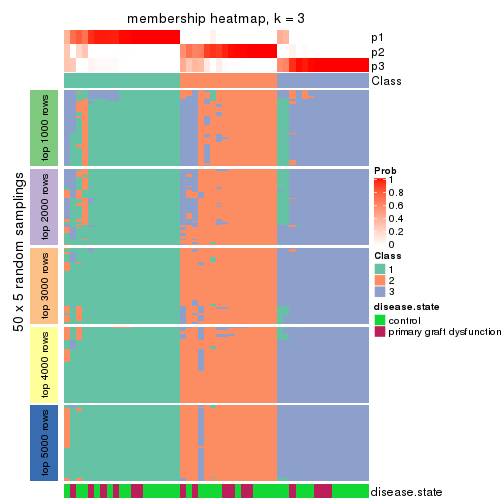
membership_heatmap(res, k = 4)
membership_heatmap(res, k = 5)
membership_heatmap(res, k = 6)
As soon as we have had the classes for columns, we can look for signatures which are significantly different between classes which can be candidate marks for certain classes. Following are the heatmaps for signatures.
Signature heatmaps where rows are scaled:
get_signatures(res, k = 2)
get_signatures(res, k = 3)
get_signatures(res, k = 4)
get_signatures(res, k = 5)
get_signatures(res, k = 6)
Signature heatmaps where rows are not scaled:
get_signatures(res, k = 2, scale_rows = FALSE)
get_signatures(res, k = 3, scale_rows = FALSE)
get_signatures(res, k = 4, scale_rows = FALSE)

get_signatures(res, k = 5, scale_rows = FALSE)
get_signatures(res, k = 6, scale_rows = FALSE)
Compare the overlap of signatures from different k:
compare_signatures(res)
get_signature() returns a data frame invisibly. TO get the list of signatures, the function
call should be assigned to a variable explicitly. In following code, if plot argument is set
to FALSE, no heatmap is plotted while only the differential analysis is performed.
# code only for demonstration
tb = get_signature(res, k = ..., plot = FALSE)
An example of the output of tb is:
#> which_row fdr mean_1 mean_2 scaled_mean_1 scaled_mean_2 km
#> 1 38 0.042760348 8.373488 9.131774 -0.5533452 0.5164555 1
#> 2 40 0.018707592 7.106213 8.469186 -0.6173731 0.5762149 1
#> 3 55 0.019134737 10.221463 11.207825 -0.6159697 0.5749050 1
#> 4 59 0.006059896 5.921854 7.869574 -0.6899429 0.6439467 1
#> 5 60 0.018055526 8.928898 10.211722 -0.6204761 0.5791110 1
#> 6 98 0.009384629 15.714769 14.887706 0.6635654 -0.6193277 2
...
The columns in tb are:
which_row: row indices corresponding to the input matrix.fdr: FDR for the differential test. mean_x: The mean value in group x.scaled_mean_x: The mean value in group x after rows are scaled.km: Row groups if k-means clustering is applied to rows.UMAP plot which shows how samples are separated.
dimension_reduction(res, k = 2, method = "UMAP")
dimension_reduction(res, k = 3, method = "UMAP")
dimension_reduction(res, k = 4, method = "UMAP")
dimension_reduction(res, k = 5, method = "UMAP")
dimension_reduction(res, k = 6, method = "UMAP")
Following heatmap shows how subgroups are split when increasing k:
collect_classes(res)
Test correlation between subgroups and known annotations. If the known annotation is numeric, one-way ANOVA test is applied, and if the known annotation is discrete, chi-squared contingency table test is applied.
test_to_known_factors(res)
#> n disease.state(p) k
#> CV:skmeans 50 0.601 2
#> CV:skmeans 45 0.964 3
#> CV:skmeans 27 0.863 4
#> CV:skmeans 41 0.237 5
#> CV:skmeans 34 0.432 6
If matrix rows can be associated to genes, consider to use GO_Enrichment(res,
...) to perform function enrichment for the signature genes.
The object with results only for a single top-value method and a single partition method can be extracted as:
res = res_list["CV", "pam"]
# you can also extract it by
# res = res_list["CV:pam"]
A summary of res and all the functions that can be applied to it:
res
#> A 'ConsensusPartition' object with k = 2, 3, 4, 5, 6.
#> On a matrix with 16753 rows and 50 columns.
#> Top rows (1000, 2000, 3000, 4000, 5000) are extracted by 'CV' method.
#> Subgroups are detected by 'pam' method.
#> Performed in total 1250 partitions by row resampling.
#> Best k for subgroups seems to be 5.
#>
#> Following methods can be applied to this 'ConsensusPartition' object:
#> [1] "cola_report" "collect_classes" "collect_plots"
#> [4] "collect_stats" "colnames" "compare_signatures"
#> [7] "consensus_heatmap" "dimension_reduction" "functional_enrichment"
#> [10] "get_anno_col" "get_anno" "get_classes"
#> [13] "get_consensus" "get_matrix" "get_membership"
#> [16] "get_param" "get_signatures" "get_stats"
#> [19] "is_best_k" "is_stable_k" "membership_heatmap"
#> [22] "ncol" "nrow" "plot_ecdf"
#> [25] "rownames" "select_partition_number" "show"
#> [28] "suggest_best_k" "test_to_known_factors"
collect_plots() function collects all the plots made from res for all k (number of partitions)
into one single page to provide an easy and fast comparison between different k.
collect_plots(res)
The plots are:
k and the heatmap of
predicted classes for each k.k.k.k.All the plots in panels can be made by individual functions and they are plotted later in this section.
select_partition_number() produces several plots showing different
statistics for choosing “optimized” k. There are following statistics:
k;k, the area increased is defined as \(A_k - A_{k-1}\).The detailed explanations of these statistics can be found in the cola vignette.
Generally speaking, lower PAC score, higher mean silhouette score or higher
concordance corresponds to better partition. Rand index and Jaccard index
measure how similar the current partition is compared to partition with k-1.
If they are too similar, we won't accept k is better than k-1.
select_partition_number(res)
The numeric values for all these statistics can be obtained by get_stats().
get_stats(res)
#> k 1-PAC mean_silhouette concordance area_increased Rand Jaccard
#> 2 2 0.340 0.679 0.809 0.4489 0.542 0.542
#> 3 3 0.388 0.683 0.803 0.2280 0.806 0.674
#> 4 4 0.527 0.679 0.778 0.2209 0.782 0.567
#> 5 5 0.894 0.875 0.941 0.1270 0.841 0.565
#> 6 6 0.809 0.632 0.795 0.0729 0.861 0.491
suggest_best_k() suggests the best \(k\) based on these statistics. The rules are as follows:
NA.suggest_best_k(res)
#> [1] 5
Following shows the table of the partitions (You need to click the show/hide
code output link to see it). The membership matrix (columns with name p*)
is inferred by
clue::cl_consensus()
function with the SE method. Basically the value in the membership matrix
represents the probability to belong to a certain group. The finall class
label for an item is determined with the group with highest probability it
belongs to.
In get_classes() function, the entropy is calculated from the membership
matrix and the silhouette score is calculated from the consensus matrix.
cbind(get_classes(res, k = 2), get_membership(res, k = 2))
#> class entropy silhouette p1 p2
#> GSM198618 2 0.9909 -0.0876 0.444 0.556
#> GSM198622 1 0.2603 0.7992 0.956 0.044
#> GSM198623 2 0.4161 0.7928 0.084 0.916
#> GSM198626 1 0.5737 0.7668 0.864 0.136
#> GSM198627 1 0.0000 0.7837 1.000 0.000
#> GSM198628 1 0.5737 0.7668 0.864 0.136
#> GSM198629 1 0.0376 0.7859 0.996 0.004
#> GSM198630 1 0.5737 0.7668 0.864 0.136
#> GSM198631 1 0.5737 0.7668 0.864 0.136
#> GSM198632 1 0.2603 0.7992 0.956 0.044
#> GSM198633 1 0.6048 0.7844 0.852 0.148
#> GSM198634 1 0.2778 0.7992 0.952 0.048
#> GSM198635 1 0.2603 0.7992 0.956 0.044
#> GSM198636 1 0.5842 0.7671 0.860 0.140
#> GSM198639 1 0.9608 0.5659 0.616 0.384
#> GSM198641 1 0.1184 0.7757 0.984 0.016
#> GSM198642 2 0.9954 0.0910 0.460 0.540
#> GSM198643 1 0.8081 0.6659 0.752 0.248
#> GSM198644 1 0.9732 0.5388 0.596 0.404
#> GSM198645 2 1.0000 -0.2993 0.496 0.504
#> GSM198649 2 0.0000 0.8049 0.000 1.000
#> GSM198651 1 0.9580 0.3926 0.620 0.380
#> GSM198653 2 0.9988 0.1887 0.480 0.520
#> GSM198654 2 0.1843 0.8215 0.028 0.972
#> GSM198655 1 0.9661 0.5614 0.608 0.392
#> GSM198656 2 0.2423 0.8234 0.040 0.960
#> GSM198657 2 0.2236 0.8247 0.036 0.964
#> GSM198658 2 0.2236 0.8247 0.036 0.964
#> GSM198659 1 0.3879 0.7951 0.924 0.076
#> GSM198660 2 0.2423 0.8237 0.040 0.960
#> GSM198662 2 0.2236 0.8247 0.036 0.964
#> GSM198663 1 0.3879 0.7873 0.924 0.076
#> GSM198664 1 0.3274 0.7933 0.940 0.060
#> GSM198665 2 0.2236 0.8247 0.036 0.964
#> GSM198616 1 0.2603 0.7992 0.956 0.044
#> GSM198617 1 0.9608 0.5659 0.616 0.384
#> GSM198619 1 0.8081 0.6599 0.752 0.248
#> GSM198620 1 0.8608 0.6451 0.716 0.284
#> GSM198621 1 0.9608 0.5659 0.616 0.384
#> GSM198624 1 0.2236 0.7960 0.964 0.036
#> GSM198625 1 0.5737 0.7668 0.864 0.136
#> GSM198637 1 0.2603 0.7992 0.956 0.044
#> GSM198638 1 0.9552 0.5787 0.624 0.376
#> GSM198640 1 0.6801 0.7659 0.820 0.180
#> GSM198646 1 0.9044 0.5748 0.680 0.320
#> GSM198647 2 0.4022 0.7774 0.080 0.920
#> GSM198648 1 0.4022 0.7849 0.920 0.080
#> GSM198650 2 0.6148 0.6883 0.152 0.848
#> GSM198652 2 0.1184 0.8156 0.016 0.984
#> GSM198661 2 0.2236 0.8247 0.036 0.964
cbind(get_classes(res, k = 3), get_membership(res, k = 3))
#> class entropy silhouette p1 p2 p3
#> GSM198618 1 0.5835 0.0587 0.660 0.000 0.340
#> GSM198622 1 0.2711 0.7903 0.912 0.088 0.000
#> GSM198623 3 0.2165 0.6435 0.064 0.000 0.936
#> GSM198626 1 0.5098 0.7256 0.752 0.000 0.248
#> GSM198627 1 0.5098 0.7256 0.752 0.000 0.248
#> GSM198628 1 0.5098 0.7256 0.752 0.000 0.248
#> GSM198629 1 0.5058 0.7282 0.756 0.000 0.244
#> GSM198630 1 0.5098 0.7256 0.752 0.000 0.248
#> GSM198631 1 0.5098 0.7256 0.752 0.000 0.248
#> GSM198632 1 0.0000 0.7953 1.000 0.000 0.000
#> GSM198633 1 0.2711 0.7903 0.912 0.088 0.000
#> GSM198634 1 0.0000 0.7953 1.000 0.000 0.000
#> GSM198635 1 0.2711 0.7903 0.912 0.088 0.000
#> GSM198636 1 0.4978 0.7443 0.780 0.004 0.216
#> GSM198639 1 0.0000 0.7953 1.000 0.000 0.000
#> GSM198641 1 0.6537 0.6970 0.740 0.196 0.064
#> GSM198642 3 0.6299 0.5152 0.476 0.000 0.524
#> GSM198643 1 0.1529 0.7731 0.960 0.000 0.040
#> GSM198644 1 0.3618 0.7232 0.884 0.104 0.012
#> GSM198645 1 0.3482 0.6784 0.872 0.000 0.128
#> GSM198649 2 0.2878 0.6824 0.096 0.904 0.000
#> GSM198651 1 0.9901 -0.1815 0.384 0.268 0.348
#> GSM198653 3 0.8965 0.4920 0.240 0.196 0.564
#> GSM198654 3 0.5098 0.8297 0.248 0.000 0.752
#> GSM198655 1 0.4235 0.6139 0.824 0.176 0.000
#> GSM198656 3 0.5098 0.8297 0.248 0.000 0.752
#> GSM198657 3 0.5098 0.8297 0.248 0.000 0.752
#> GSM198658 3 0.5098 0.8297 0.248 0.000 0.752
#> GSM198659 1 0.4605 0.7210 0.796 0.204 0.000
#> GSM198660 3 0.6424 0.7819 0.180 0.068 0.752
#> GSM198662 3 0.5098 0.8297 0.248 0.000 0.752
#> GSM198663 2 0.6295 -0.1905 0.472 0.528 0.000
#> GSM198664 1 0.4291 0.7389 0.820 0.180 0.000
#> GSM198665 3 0.5098 0.8297 0.248 0.000 0.752
#> GSM198616 1 0.0592 0.7956 0.988 0.000 0.012
#> GSM198617 1 0.0000 0.7953 1.000 0.000 0.000
#> GSM198619 1 0.0000 0.7953 1.000 0.000 0.000
#> GSM198620 2 0.4346 0.7115 0.184 0.816 0.000
#> GSM198621 1 0.0000 0.7953 1.000 0.000 0.000
#> GSM198624 1 0.4235 0.7628 0.824 0.000 0.176
#> GSM198625 1 0.5098 0.7256 0.752 0.000 0.248
#> GSM198637 1 0.0000 0.7953 1.000 0.000 0.000
#> GSM198638 1 0.2356 0.7938 0.928 0.072 0.000
#> GSM198640 1 0.0000 0.7953 1.000 0.000 0.000
#> GSM198646 2 0.4504 0.7075 0.196 0.804 0.000
#> GSM198647 2 0.4915 0.7035 0.184 0.804 0.012
#> GSM198648 2 0.2537 0.6185 0.080 0.920 0.000
#> GSM198650 3 0.9402 0.3082 0.184 0.344 0.472
#> GSM198652 3 0.6537 0.6480 0.064 0.196 0.740
#> GSM198661 3 0.5098 0.8297 0.248 0.000 0.752
cbind(get_classes(res, k = 4), get_membership(res, k = 4))
#> class entropy silhouette p1 p2 p3 p4
#> GSM198618 2 0.4500 0.2821 0.000 0.684 0.316 0.000
#> GSM198622 2 0.2530 0.7335 0.000 0.888 0.112 0.000
#> GSM198623 3 0.5632 0.6101 0.196 0.092 0.712 0.000
#> GSM198626 1 0.1792 0.9798 0.932 0.068 0.000 0.000
#> GSM198627 1 0.1792 0.9798 0.932 0.068 0.000 0.000
#> GSM198628 1 0.2216 0.9566 0.908 0.092 0.000 0.000
#> GSM198629 2 0.4331 0.5142 0.288 0.712 0.000 0.000
#> GSM198630 1 0.1792 0.9798 0.932 0.068 0.000 0.000
#> GSM198631 1 0.1792 0.9798 0.932 0.068 0.000 0.000
#> GSM198632 2 0.0000 0.7592 0.000 1.000 0.000 0.000
#> GSM198633 2 0.2868 0.7399 0.000 0.864 0.136 0.000
#> GSM198634 2 0.0000 0.7592 0.000 1.000 0.000 0.000
#> GSM198635 2 0.2530 0.7335 0.000 0.888 0.112 0.000
#> GSM198636 1 0.2714 0.9171 0.884 0.112 0.004 0.000
#> GSM198639 2 0.1716 0.7415 0.000 0.936 0.064 0.000
#> GSM198641 2 0.7684 0.4514 0.160 0.548 0.268 0.024
#> GSM198642 2 0.4996 -0.3679 0.000 0.516 0.484 0.000
#> GSM198643 2 0.1557 0.7429 0.000 0.944 0.056 0.000
#> GSM198644 2 0.5194 0.6700 0.068 0.800 0.068 0.064
#> GSM198645 2 0.3486 0.6096 0.000 0.812 0.188 0.000
#> GSM198649 4 0.0188 0.8805 0.000 0.000 0.004 0.996
#> GSM198651 3 0.8289 0.0326 0.132 0.260 0.532 0.076
#> GSM198653 3 0.5817 0.3563 0.068 0.176 0.732 0.024
#> GSM198654 3 0.4193 0.7737 0.000 0.268 0.732 0.000
#> GSM198655 2 0.5214 0.6207 0.008 0.760 0.064 0.168
#> GSM198656 3 0.4193 0.7737 0.000 0.268 0.732 0.000
#> GSM198657 3 0.4193 0.7737 0.000 0.268 0.732 0.000
#> GSM198658 3 0.4193 0.7737 0.000 0.268 0.732 0.000
#> GSM198659 2 0.6751 0.5281 0.068 0.632 0.268 0.032
#> GSM198660 3 0.3649 0.7433 0.000 0.204 0.796 0.000
#> GSM198662 3 0.4193 0.7737 0.000 0.268 0.732 0.000
#> GSM198663 2 0.8959 0.1673 0.068 0.424 0.268 0.240
#> GSM198664 2 0.3837 0.6512 0.000 0.776 0.224 0.000
#> GSM198665 3 0.4193 0.7737 0.000 0.268 0.732 0.000
#> GSM198616 2 0.0707 0.7581 0.020 0.980 0.000 0.000
#> GSM198617 2 0.1716 0.7415 0.000 0.936 0.064 0.000
#> GSM198619 2 0.0707 0.7563 0.000 0.980 0.020 0.000
#> GSM198620 4 0.0707 0.8896 0.000 0.000 0.020 0.980
#> GSM198621 2 0.1716 0.7415 0.000 0.936 0.064 0.000
#> GSM198624 2 0.4103 0.5880 0.256 0.744 0.000 0.000
#> GSM198625 1 0.1792 0.9798 0.932 0.068 0.000 0.000
#> GSM198637 2 0.0000 0.7592 0.000 1.000 0.000 0.000
#> GSM198638 2 0.3024 0.7462 0.000 0.852 0.148 0.000
#> GSM198640 2 0.1302 0.7478 0.000 0.956 0.044 0.000
#> GSM198646 4 0.0895 0.8880 0.000 0.004 0.020 0.976
#> GSM198647 4 0.0817 0.8880 0.000 0.000 0.024 0.976
#> GSM198648 4 0.7344 0.5634 0.068 0.064 0.268 0.600
#> GSM198650 3 0.7697 0.2562 0.000 0.220 0.404 0.376
#> GSM198652 3 0.3177 0.4913 0.068 0.016 0.892 0.024
#> GSM198661 3 0.4193 0.7737 0.000 0.268 0.732 0.000
cbind(get_classes(res, k = 5), get_membership(res, k = 5))
#> class entropy silhouette p1 p2 p3 p4 p5
#> GSM198618 3 0.4249 0.205 0.000 0.000 0.568 0.000 0.432
#> GSM198622 5 0.0404 0.927 0.000 0.012 0.000 0.000 0.988
#> GSM198623 3 0.0290 0.870 0.008 0.000 0.992 0.000 0.000
#> GSM198626 1 0.0000 0.986 1.000 0.000 0.000 0.000 0.000
#> GSM198627 1 0.0000 0.986 1.000 0.000 0.000 0.000 0.000
#> GSM198628 1 0.0963 0.944 0.964 0.000 0.000 0.000 0.036
#> GSM198629 5 0.1608 0.908 0.072 0.000 0.000 0.000 0.928
#> GSM198630 1 0.0000 0.986 1.000 0.000 0.000 0.000 0.000
#> GSM198631 1 0.0000 0.986 1.000 0.000 0.000 0.000 0.000
#> GSM198632 5 0.0000 0.929 0.000 0.000 0.000 0.000 1.000
#> GSM198633 5 0.1670 0.926 0.000 0.012 0.052 0.000 0.936
#> GSM198634 5 0.0290 0.930 0.000 0.000 0.008 0.000 0.992
#> GSM198635 5 0.0404 0.927 0.000 0.012 0.000 0.000 0.988
#> GSM198636 1 0.0510 0.970 0.984 0.000 0.016 0.000 0.000
#> GSM198639 5 0.1908 0.911 0.000 0.000 0.092 0.000 0.908
#> GSM198641 2 0.1493 0.874 0.024 0.948 0.000 0.000 0.028
#> GSM198642 3 0.3395 0.641 0.000 0.000 0.764 0.000 0.236
#> GSM198643 5 0.1341 0.915 0.000 0.000 0.056 0.000 0.944
#> GSM198644 2 0.5522 0.391 0.000 0.600 0.092 0.000 0.308
#> GSM198645 5 0.3305 0.769 0.000 0.000 0.224 0.000 0.776
#> GSM198649 4 0.0000 1.000 0.000 0.000 0.000 1.000 0.000
#> GSM198651 2 0.0000 0.897 0.000 1.000 0.000 0.000 0.000
#> GSM198653 2 0.0000 0.897 0.000 1.000 0.000 0.000 0.000
#> GSM198654 3 0.0000 0.876 0.000 0.000 1.000 0.000 0.000
#> GSM198655 5 0.4955 0.753 0.000 0.012 0.092 0.164 0.732
#> GSM198656 3 0.0000 0.876 0.000 0.000 1.000 0.000 0.000
#> GSM198657 3 0.0000 0.876 0.000 0.000 1.000 0.000 0.000
#> GSM198658 3 0.0000 0.876 0.000 0.000 1.000 0.000 0.000
#> GSM198659 2 0.0510 0.893 0.000 0.984 0.000 0.000 0.016
#> GSM198660 3 0.0290 0.873 0.000 0.000 0.992 0.000 0.008
#> GSM198662 3 0.0000 0.876 0.000 0.000 1.000 0.000 0.000
#> GSM198663 2 0.0963 0.881 0.000 0.964 0.000 0.036 0.000
#> GSM198664 5 0.0404 0.927 0.000 0.012 0.000 0.000 0.988
#> GSM198665 3 0.0404 0.870 0.000 0.000 0.988 0.000 0.012
#> GSM198616 5 0.0000 0.929 0.000 0.000 0.000 0.000 1.000
#> GSM198617 5 0.2408 0.908 0.000 0.000 0.092 0.016 0.892
#> GSM198619 5 0.0290 0.930 0.000 0.000 0.008 0.000 0.992
#> GSM198620 4 0.0000 1.000 0.000 0.000 0.000 1.000 0.000
#> GSM198621 5 0.1908 0.911 0.000 0.000 0.092 0.000 0.908
#> GSM198624 5 0.1792 0.902 0.084 0.000 0.000 0.000 0.916
#> GSM198625 1 0.0000 0.986 1.000 0.000 0.000 0.000 0.000
#> GSM198637 5 0.0000 0.929 0.000 0.000 0.000 0.000 1.000
#> GSM198638 5 0.2305 0.912 0.000 0.012 0.092 0.000 0.896
#> GSM198640 5 0.1671 0.918 0.000 0.000 0.076 0.000 0.924
#> GSM198646 4 0.0000 1.000 0.000 0.000 0.000 1.000 0.000
#> GSM198647 4 0.0000 1.000 0.000 0.000 0.000 1.000 0.000
#> GSM198648 2 0.0000 0.897 0.000 1.000 0.000 0.000 0.000
#> GSM198650 3 0.5440 0.393 0.000 0.000 0.612 0.300 0.088
#> GSM198652 2 0.0794 0.883 0.000 0.972 0.028 0.000 0.000
#> GSM198661 3 0.0000 0.876 0.000 0.000 1.000 0.000 0.000
cbind(get_classes(res, k = 6), get_membership(res, k = 6))
#> class entropy silhouette p1 p2 p3 p4 p5 p6
#> GSM198618 6 0.4264 0.6305 0.000 0.000 0.488 0.000 0.016 0.496
#> GSM198622 5 0.3351 0.8562 0.000 0.000 0.000 0.000 0.712 0.288
#> GSM198623 3 0.3838 0.6250 0.000 0.000 0.552 0.000 0.000 0.448
#> GSM198626 1 0.0000 0.8975 1.000 0.000 0.000 0.000 0.000 0.000
#> GSM198627 1 0.3244 0.8136 0.732 0.000 0.000 0.000 0.268 0.000
#> GSM198628 1 0.2805 0.8532 0.812 0.000 0.000 0.000 0.184 0.004
#> GSM198629 5 0.3907 0.8964 0.004 0.000 0.000 0.000 0.588 0.408
#> GSM198630 1 0.0000 0.8975 1.000 0.000 0.000 0.000 0.000 0.000
#> GSM198631 1 0.0000 0.8975 1.000 0.000 0.000 0.000 0.000 0.000
#> GSM198632 5 0.3774 0.8963 0.000 0.000 0.000 0.000 0.592 0.408
#> GSM198633 5 0.3489 0.8552 0.000 0.000 0.004 0.000 0.708 0.288
#> GSM198634 5 0.3351 0.8562 0.000 0.000 0.000 0.000 0.712 0.288
#> GSM198635 5 0.3351 0.8562 0.000 0.000 0.000 0.000 0.712 0.288
#> GSM198636 1 0.3489 0.7982 0.708 0.000 0.004 0.000 0.288 0.000
#> GSM198639 6 0.3838 0.6752 0.000 0.000 0.448 0.000 0.000 0.552
#> GSM198641 2 0.3235 0.7737 0.020 0.832 0.000 0.000 0.124 0.024
#> GSM198642 6 0.3668 -0.4493 0.000 0.000 0.328 0.000 0.004 0.668
#> GSM198643 6 0.4833 0.6287 0.000 0.000 0.428 0.000 0.056 0.516
#> GSM198644 2 0.3975 0.3888 0.000 0.600 0.392 0.000 0.008 0.000
#> GSM198645 3 0.5208 -0.6329 0.000 0.000 0.556 0.000 0.108 0.336
#> GSM198649 4 0.0000 1.0000 0.000 0.000 0.000 1.000 0.000 0.000
#> GSM198651 2 0.0146 0.8904 0.000 0.996 0.000 0.000 0.004 0.000
#> GSM198653 2 0.0000 0.8907 0.000 1.000 0.000 0.000 0.000 0.000
#> GSM198654 3 0.3838 0.6250 0.000 0.000 0.552 0.000 0.000 0.448
#> GSM198655 3 0.5451 -0.4217 0.000 0.000 0.448 0.000 0.432 0.120
#> GSM198656 3 0.3838 0.6250 0.000 0.000 0.552 0.000 0.000 0.448
#> GSM198657 3 0.3838 0.6250 0.000 0.000 0.552 0.000 0.000 0.448
#> GSM198658 3 0.3838 0.6250 0.000 0.000 0.552 0.000 0.000 0.448
#> GSM198659 2 0.0458 0.8851 0.000 0.984 0.000 0.000 0.000 0.016
#> GSM198660 3 0.3797 0.6144 0.000 0.000 0.580 0.000 0.000 0.420
#> GSM198662 3 0.3838 0.6250 0.000 0.000 0.552 0.000 0.000 0.448
#> GSM198663 2 0.0935 0.8770 0.000 0.964 0.000 0.032 0.004 0.000
#> GSM198664 5 0.3782 0.8952 0.000 0.000 0.000 0.000 0.588 0.412
#> GSM198665 3 0.0000 0.2041 0.000 0.000 1.000 0.000 0.000 0.000
#> GSM198616 6 0.3838 -0.6671 0.000 0.000 0.000 0.000 0.448 0.552
#> GSM198617 6 0.3971 0.6748 0.000 0.000 0.448 0.004 0.000 0.548
#> GSM198619 6 0.3966 0.6740 0.000 0.000 0.444 0.000 0.004 0.552
#> GSM198620 4 0.0000 1.0000 0.000 0.000 0.000 1.000 0.000 0.000
#> GSM198621 6 0.3838 0.6752 0.000 0.000 0.448 0.000 0.000 0.552
#> GSM198624 5 0.3907 0.8964 0.004 0.000 0.000 0.000 0.588 0.408
#> GSM198625 1 0.0000 0.8975 1.000 0.000 0.000 0.000 0.000 0.000
#> GSM198637 5 0.3774 0.8963 0.000 0.000 0.000 0.000 0.592 0.408
#> GSM198638 3 0.5656 -0.6651 0.000 0.000 0.440 0.000 0.152 0.408
#> GSM198640 5 0.3907 0.8943 0.000 0.000 0.004 0.000 0.588 0.408
#> GSM198646 4 0.0000 1.0000 0.000 0.000 0.000 1.000 0.000 0.000
#> GSM198647 4 0.0000 1.0000 0.000 0.000 0.000 1.000 0.000 0.000
#> GSM198648 2 0.0000 0.8907 0.000 1.000 0.000 0.000 0.000 0.000
#> GSM198650 3 0.5252 -0.0467 0.000 0.000 0.624 0.172 0.004 0.200
#> GSM198652 2 0.0458 0.8850 0.000 0.984 0.000 0.000 0.000 0.016
#> GSM198661 3 0.3838 0.6250 0.000 0.000 0.552 0.000 0.000 0.448
Heatmaps for the consensus matrix. It visualizes the probability of two samples to be in a same group.
consensus_heatmap(res, k = 2)
consensus_heatmap(res, k = 3)
consensus_heatmap(res, k = 4)
consensus_heatmap(res, k = 5)
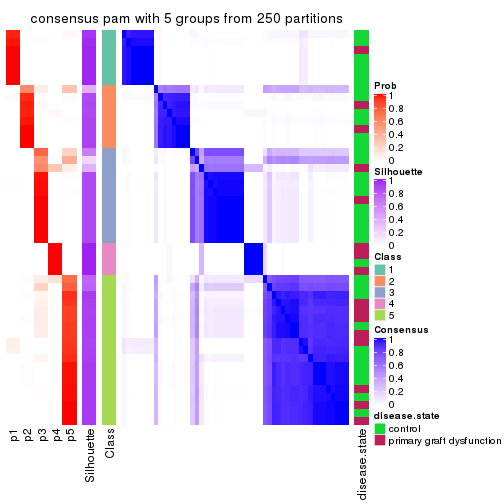
consensus_heatmap(res, k = 6)
Heatmaps for the membership of samples in all partitions to see how consistent they are:
membership_heatmap(res, k = 2)
membership_heatmap(res, k = 3)
membership_heatmap(res, k = 4)
membership_heatmap(res, k = 5)
membership_heatmap(res, k = 6)
As soon as we have had the classes for columns, we can look for signatures which are significantly different between classes which can be candidate marks for certain classes. Following are the heatmaps for signatures.
Signature heatmaps where rows are scaled:
get_signatures(res, k = 2)
get_signatures(res, k = 3)
get_signatures(res, k = 4)
get_signatures(res, k = 5)
get_signatures(res, k = 6)
Signature heatmaps where rows are not scaled:
get_signatures(res, k = 2, scale_rows = FALSE)
get_signatures(res, k = 3, scale_rows = FALSE)
get_signatures(res, k = 4, scale_rows = FALSE)
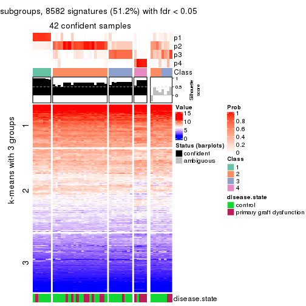
get_signatures(res, k = 5, scale_rows = FALSE)
get_signatures(res, k = 6, scale_rows = FALSE)
Compare the overlap of signatures from different k:
compare_signatures(res)
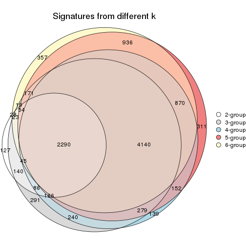
get_signature() returns a data frame invisibly. TO get the list of signatures, the function
call should be assigned to a variable explicitly. In following code, if plot argument is set
to FALSE, no heatmap is plotted while only the differential analysis is performed.
# code only for demonstration
tb = get_signature(res, k = ..., plot = FALSE)
An example of the output of tb is:
#> which_row fdr mean_1 mean_2 scaled_mean_1 scaled_mean_2 km
#> 1 38 0.042760348 8.373488 9.131774 -0.5533452 0.5164555 1
#> 2 40 0.018707592 7.106213 8.469186 -0.6173731 0.5762149 1
#> 3 55 0.019134737 10.221463 11.207825 -0.6159697 0.5749050 1
#> 4 59 0.006059896 5.921854 7.869574 -0.6899429 0.6439467 1
#> 5 60 0.018055526 8.928898 10.211722 -0.6204761 0.5791110 1
#> 6 98 0.009384629 15.714769 14.887706 0.6635654 -0.6193277 2
...
The columns in tb are:
which_row: row indices corresponding to the input matrix.fdr: FDR for the differential test. mean_x: The mean value in group x.scaled_mean_x: The mean value in group x after rows are scaled.km: Row groups if k-means clustering is applied to rows.UMAP plot which shows how samples are separated.
dimension_reduction(res, k = 2, method = "UMAP")
dimension_reduction(res, k = 3, method = "UMAP")
dimension_reduction(res, k = 4, method = "UMAP")
dimension_reduction(res, k = 5, method = "UMAP")
dimension_reduction(res, k = 6, method = "UMAP")
Following heatmap shows how subgroups are split when increasing k:
collect_classes(res)
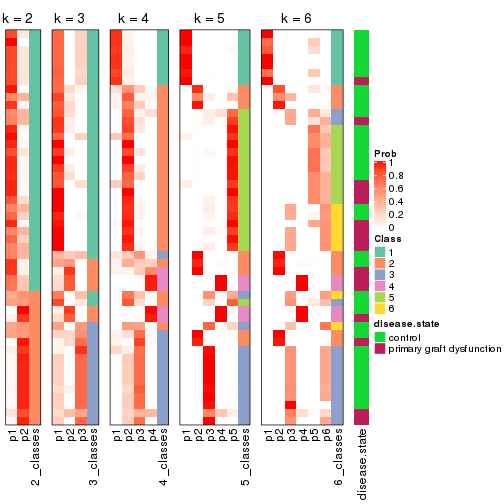
Test correlation between subgroups and known annotations. If the known annotation is numeric, one-way ANOVA test is applied, and if the known annotation is discrete, chi-squared contingency table test is applied.
test_to_known_factors(res)
#> n disease.state(p) k
#> CV:pam 45 0.9331 2
#> CV:pam 45 0.0472 3
#> CV:pam 42 0.0410 4
#> CV:pam 47 0.1086 5
#> CV:pam 42 0.2315 6
If matrix rows can be associated to genes, consider to use GO_Enrichment(res,
...) to perform function enrichment for the signature genes.
The object with results only for a single top-value method and a single partition method can be extracted as:
res = res_list["CV", "mclust"]
# you can also extract it by
# res = res_list["CV:mclust"]
A summary of res and all the functions that can be applied to it:
res
#> A 'ConsensusPartition' object with k = 2, 3, 4, 5, 6.
#> On a matrix with 16753 rows and 50 columns.
#> Top rows (1000, 2000, 3000, 4000, 5000) are extracted by 'CV' method.
#> Subgroups are detected by 'mclust' method.
#> Performed in total 1250 partitions by row resampling.
#> Best k for subgroups seems to be 4.
#>
#> Following methods can be applied to this 'ConsensusPartition' object:
#> [1] "cola_report" "collect_classes" "collect_plots"
#> [4] "collect_stats" "colnames" "compare_signatures"
#> [7] "consensus_heatmap" "dimension_reduction" "functional_enrichment"
#> [10] "get_anno_col" "get_anno" "get_classes"
#> [13] "get_consensus" "get_matrix" "get_membership"
#> [16] "get_param" "get_signatures" "get_stats"
#> [19] "is_best_k" "is_stable_k" "membership_heatmap"
#> [22] "ncol" "nrow" "plot_ecdf"
#> [25] "rownames" "select_partition_number" "show"
#> [28] "suggest_best_k" "test_to_known_factors"
collect_plots() function collects all the plots made from res for all k (number of partitions)
into one single page to provide an easy and fast comparison between different k.
collect_plots(res)
The plots are:
k and the heatmap of
predicted classes for each k.k.k.k.All the plots in panels can be made by individual functions and they are plotted later in this section.
select_partition_number() produces several plots showing different
statistics for choosing “optimized” k. There are following statistics:
k;k, the area increased is defined as \(A_k - A_{k-1}\).The detailed explanations of these statistics can be found in the cola vignette.
Generally speaking, lower PAC score, higher mean silhouette score or higher
concordance corresponds to better partition. Rand index and Jaccard index
measure how similar the current partition is compared to partition with k-1.
If they are too similar, we won't accept k is better than k-1.
select_partition_number(res)
The numeric values for all these statistics can be obtained by get_stats().
get_stats(res)
#> k 1-PAC mean_silhouette concordance area_increased Rand Jaccard
#> 2 2 0.291 0.142 0.666 0.329 0.699 0.699
#> 3 3 0.361 0.531 0.720 0.839 0.531 0.389
#> 4 4 0.510 0.651 0.764 0.132 0.762 0.473
#> 5 5 0.562 0.558 0.755 0.103 0.920 0.747
#> 6 6 0.664 0.526 0.751 0.052 0.819 0.432
suggest_best_k() suggests the best \(k\) based on these statistics. The rules are as follows:
NA.suggest_best_k(res)
#> [1] 4
Following shows the table of the partitions (You need to click the show/hide
code output link to see it). The membership matrix (columns with name p*)
is inferred by
clue::cl_consensus()
function with the SE method. Basically the value in the membership matrix
represents the probability to belong to a certain group. The finall class
label for an item is determined with the group with highest probability it
belongs to.
In get_classes() function, the entropy is calculated from the membership
matrix and the silhouette score is calculated from the consensus matrix.
cbind(get_classes(res, k = 2), get_membership(res, k = 2))
#> class entropy silhouette p1 p2
#> GSM198618 1 0.971 -0.06674 0.600 0.400
#> GSM198622 1 0.936 0.06932 0.648 0.352
#> GSM198623 2 0.995 0.70881 0.460 0.540
#> GSM198626 1 0.943 0.03998 0.640 0.360
#> GSM198627 1 0.871 0.07946 0.708 0.292
#> GSM198628 1 0.833 0.06347 0.736 0.264
#> GSM198629 1 0.952 0.03052 0.628 0.372
#> GSM198630 1 0.943 0.03998 0.640 0.360
#> GSM198631 1 0.943 0.03998 0.640 0.360
#> GSM198632 1 0.978 -0.09612 0.588 0.412
#> GSM198633 1 0.949 0.03172 0.632 0.368
#> GSM198634 1 0.936 0.06932 0.648 0.352
#> GSM198635 1 0.929 0.07659 0.656 0.344
#> GSM198636 1 0.295 0.21336 0.948 0.052
#> GSM198639 1 0.987 -0.20099 0.568 0.432
#> GSM198641 1 0.163 0.20205 0.976 0.024
#> GSM198642 2 0.997 0.68796 0.468 0.532
#> GSM198643 1 0.978 -0.09612 0.588 0.412
#> GSM198644 1 0.242 0.21409 0.960 0.040
#> GSM198645 1 0.987 -0.22267 0.568 0.432
#> GSM198649 1 0.994 0.14177 0.544 0.456
#> GSM198651 1 0.662 0.21564 0.828 0.172
#> GSM198653 1 0.697 0.21267 0.812 0.188
#> GSM198654 1 1.000 -0.48727 0.512 0.488
#> GSM198655 1 0.242 0.21409 0.960 0.040
#> GSM198656 2 0.987 0.78463 0.432 0.568
#> GSM198657 2 0.987 0.78463 0.432 0.568
#> GSM198658 2 0.987 0.78463 0.432 0.568
#> GSM198659 1 0.653 0.21823 0.832 0.168
#> GSM198660 1 0.973 -0.10459 0.596 0.404
#> GSM198662 2 0.987 0.78463 0.432 0.568
#> GSM198663 1 0.680 0.21585 0.820 0.180
#> GSM198664 1 0.921 0.07306 0.664 0.336
#> GSM198665 2 0.987 0.78463 0.432 0.568
#> GSM198616 1 0.978 -0.09612 0.588 0.412
#> GSM198617 1 0.981 -0.14710 0.580 0.420
#> GSM198619 1 0.988 -0.20141 0.564 0.436
#> GSM198620 1 0.980 0.14552 0.584 0.416
#> GSM198621 1 0.987 -0.20099 0.568 0.432
#> GSM198624 1 0.952 0.03111 0.628 0.372
#> GSM198625 1 0.909 0.04770 0.676 0.324
#> GSM198637 1 0.958 0.00975 0.620 0.380
#> GSM198638 1 0.961 -0.01615 0.616 0.384
#> GSM198640 1 0.975 -0.08310 0.592 0.408
#> GSM198646 1 0.987 0.14503 0.568 0.432
#> GSM198647 2 0.833 -0.09711 0.264 0.736
#> GSM198648 1 0.985 0.14297 0.572 0.428
#> GSM198650 1 0.961 -0.07539 0.616 0.384
#> GSM198652 1 0.680 0.21305 0.820 0.180
#> GSM198661 2 0.987 0.78463 0.432 0.568
cbind(get_classes(res, k = 3), get_membership(res, k = 3))
#> class entropy silhouette p1 p2 p3
#> GSM198618 2 0.9642 0.0922 0.344 0.440 0.216
#> GSM198622 1 0.5094 0.6126 0.824 0.040 0.136
#> GSM198623 1 0.6026 -0.3900 0.624 0.000 0.376
#> GSM198626 1 0.5235 0.6220 0.812 0.152 0.036
#> GSM198627 1 0.5728 0.6051 0.772 0.196 0.032
#> GSM198628 1 0.6535 0.5839 0.728 0.220 0.052
#> GSM198629 1 0.3148 0.6173 0.916 0.048 0.036
#> GSM198630 1 0.5635 0.6121 0.784 0.180 0.036
#> GSM198631 1 0.5295 0.6210 0.808 0.156 0.036
#> GSM198632 1 0.0892 0.5884 0.980 0.000 0.020
#> GSM198633 1 0.3896 0.6116 0.864 0.008 0.128
#> GSM198634 1 0.4749 0.6197 0.844 0.040 0.116
#> GSM198635 1 0.5330 0.6116 0.812 0.044 0.144
#> GSM198636 1 0.7395 0.0846 0.492 0.476 0.032
#> GSM198639 1 0.7582 -0.5295 0.572 0.048 0.380
#> GSM198641 2 0.1919 0.8085 0.020 0.956 0.024
#> GSM198642 1 0.7138 -0.5465 0.540 0.024 0.436
#> GSM198643 1 0.1163 0.5831 0.972 0.000 0.028
#> GSM198644 2 0.1765 0.8213 0.004 0.956 0.040
#> GSM198645 3 0.6295 0.8233 0.472 0.000 0.528
#> GSM198649 2 0.3752 0.8061 0.000 0.856 0.144
#> GSM198651 2 0.0424 0.8191 0.000 0.992 0.008
#> GSM198653 2 0.0000 0.8204 0.000 1.000 0.000
#> GSM198654 3 0.7248 0.6817 0.256 0.068 0.676
#> GSM198655 2 0.6451 0.3092 0.004 0.560 0.436
#> GSM198656 3 0.6540 0.8861 0.408 0.008 0.584
#> GSM198657 3 0.6154 0.8903 0.408 0.000 0.592
#> GSM198658 3 0.6180 0.8904 0.416 0.000 0.584
#> GSM198659 2 0.1031 0.8238 0.000 0.976 0.024
#> GSM198660 3 0.6460 0.8581 0.440 0.004 0.556
#> GSM198662 3 0.6180 0.8904 0.416 0.000 0.584
#> GSM198663 2 0.0000 0.8204 0.000 1.000 0.000
#> GSM198664 2 0.9527 0.2571 0.300 0.480 0.220
#> GSM198665 3 0.6062 0.8776 0.384 0.000 0.616
#> GSM198616 1 0.1163 0.5831 0.972 0.000 0.028
#> GSM198617 1 0.9627 -0.5150 0.452 0.220 0.328
#> GSM198619 1 0.3340 0.4681 0.880 0.000 0.120
#> GSM198620 2 0.3551 0.8102 0.000 0.868 0.132
#> GSM198621 1 0.8518 -0.5037 0.540 0.104 0.356
#> GSM198624 1 0.1877 0.6036 0.956 0.032 0.012
#> GSM198625 1 0.5728 0.6051 0.772 0.196 0.032
#> GSM198637 1 0.3340 0.6105 0.880 0.000 0.120
#> GSM198638 1 0.9750 -0.3026 0.404 0.228 0.368
#> GSM198640 1 0.0592 0.5919 0.988 0.000 0.012
#> GSM198646 2 0.3551 0.8102 0.000 0.868 0.132
#> GSM198647 2 0.9231 0.4263 0.180 0.512 0.308
#> GSM198648 2 0.0000 0.8204 0.000 1.000 0.000
#> GSM198650 3 0.6956 0.7253 0.300 0.040 0.660
#> GSM198652 2 0.1753 0.8228 0.000 0.952 0.048
#> GSM198661 3 0.6168 0.8915 0.412 0.000 0.588
cbind(get_classes(res, k = 4), get_membership(res, k = 4))
#> class entropy silhouette p1 p2 p3 p4
#> GSM198618 3 0.6224 0.7372 0.040 0.096 0.724 0.140
#> GSM198622 1 0.7650 0.6802 0.608 0.096 0.080 0.216
#> GSM198623 3 0.2310 0.8538 0.032 0.020 0.932 0.016
#> GSM198626 1 0.2884 0.5984 0.900 0.028 0.004 0.068
#> GSM198627 1 0.3726 0.5885 0.788 0.212 0.000 0.000
#> GSM198628 1 0.3598 0.6045 0.848 0.124 0.000 0.028
#> GSM198629 1 0.5715 0.6948 0.756 0.028 0.108 0.108
#> GSM198630 1 0.2797 0.5959 0.900 0.032 0.000 0.068
#> GSM198631 1 0.2884 0.5984 0.900 0.028 0.004 0.068
#> GSM198632 1 0.6907 0.6547 0.588 0.000 0.240 0.172
#> GSM198633 1 0.7357 0.6477 0.524 0.004 0.164 0.308
#> GSM198634 1 0.7514 0.6810 0.616 0.084 0.080 0.220
#> GSM198635 1 0.7541 0.6796 0.616 0.088 0.080 0.216
#> GSM198636 1 0.4955 0.3154 0.556 0.444 0.000 0.000
#> GSM198639 3 0.2988 0.8483 0.012 0.000 0.876 0.112
#> GSM198641 2 0.0804 0.5416 0.012 0.980 0.000 0.008
#> GSM198642 3 0.2319 0.8472 0.024 0.028 0.932 0.016
#> GSM198643 1 0.6811 0.6384 0.588 0.000 0.268 0.144
#> GSM198644 2 0.6086 0.1345 0.008 0.548 0.412 0.032
#> GSM198645 3 0.2197 0.8597 0.004 0.000 0.916 0.080
#> GSM198649 4 0.4877 0.8705 0.000 0.408 0.000 0.592
#> GSM198651 2 0.0336 0.5497 0.008 0.992 0.000 0.000
#> GSM198653 2 0.1305 0.5180 0.004 0.960 0.000 0.036
#> GSM198654 3 0.4735 0.6620 0.000 0.148 0.784 0.068
#> GSM198655 3 0.6136 -0.0799 0.008 0.444 0.516 0.032
#> GSM198656 3 0.0000 0.8655 0.000 0.000 1.000 0.000
#> GSM198657 3 0.0000 0.8655 0.000 0.000 1.000 0.000
#> GSM198658 3 0.0000 0.8655 0.000 0.000 1.000 0.000
#> GSM198659 2 0.1807 0.5050 0.008 0.940 0.000 0.052
#> GSM198660 3 0.3822 0.8335 0.032 0.004 0.844 0.120
#> GSM198662 3 0.0000 0.8655 0.000 0.000 1.000 0.000
#> GSM198663 2 0.0336 0.5497 0.008 0.992 0.000 0.000
#> GSM198664 2 0.8182 0.1243 0.036 0.512 0.216 0.236
#> GSM198665 3 0.0000 0.8655 0.000 0.000 1.000 0.000
#> GSM198616 1 0.6904 0.6596 0.600 0.004 0.248 0.148
#> GSM198617 3 0.3278 0.8452 0.020 0.000 0.864 0.116
#> GSM198619 3 0.3552 0.8374 0.024 0.000 0.848 0.128
#> GSM198620 4 0.4925 0.8475 0.000 0.428 0.000 0.572
#> GSM198621 3 0.2101 0.8639 0.012 0.000 0.928 0.060
#> GSM198624 1 0.7219 0.6753 0.604 0.020 0.232 0.144
#> GSM198625 1 0.3726 0.5885 0.788 0.212 0.000 0.000
#> GSM198637 1 0.6473 0.6859 0.604 0.004 0.084 0.308
#> GSM198638 3 0.6170 0.7102 0.048 0.036 0.692 0.224
#> GSM198640 1 0.7443 0.3549 0.436 0.000 0.392 0.172
#> GSM198646 4 0.4877 0.8705 0.000 0.408 0.000 0.592
#> GSM198647 4 0.6578 0.6630 0.000 0.300 0.108 0.592
#> GSM198648 2 0.0336 0.5497 0.008 0.992 0.000 0.000
#> GSM198650 3 0.3821 0.8184 0.000 0.040 0.840 0.120
#> GSM198652 2 0.6498 0.0761 0.000 0.488 0.440 0.072
#> GSM198661 3 0.0000 0.8655 0.000 0.000 1.000 0.000
cbind(get_classes(res, k = 5), get_membership(res, k = 5))
#> class entropy silhouette p1 p2 p3 p4 p5
#> GSM198618 3 0.6662 0.61457 0.080 0.000 0.616 0.140 0.164
#> GSM198622 5 0.1200 0.55881 0.016 0.000 0.008 0.012 0.964
#> GSM198623 3 0.1310 0.76857 0.024 0.000 0.956 0.000 0.020
#> GSM198626 1 0.3242 0.92334 0.784 0.000 0.000 0.000 0.216
#> GSM198627 5 0.6731 -0.34777 0.372 0.188 0.000 0.008 0.432
#> GSM198628 1 0.5097 0.73842 0.624 0.056 0.000 0.000 0.320
#> GSM198629 5 0.6431 0.33944 0.228 0.008 0.024 0.132 0.608
#> GSM198630 1 0.3242 0.92334 0.784 0.000 0.000 0.000 0.216
#> GSM198631 1 0.3242 0.92334 0.784 0.000 0.000 0.000 0.216
#> GSM198632 5 0.4630 0.57191 0.000 0.000 0.116 0.140 0.744
#> GSM198633 5 0.1568 0.57415 0.036 0.000 0.020 0.000 0.944
#> GSM198634 5 0.1200 0.55881 0.016 0.000 0.008 0.012 0.964
#> GSM198635 5 0.1419 0.56000 0.016 0.000 0.016 0.012 0.956
#> GSM198636 2 0.6860 -0.17484 0.140 0.436 0.000 0.028 0.396
#> GSM198639 3 0.7035 0.57940 0.188 0.000 0.576 0.140 0.096
#> GSM198641 2 0.0671 0.64344 0.004 0.980 0.000 0.000 0.016
#> GSM198642 3 0.0566 0.77013 0.012 0.000 0.984 0.000 0.004
#> GSM198643 5 0.6026 0.51451 0.024 0.000 0.196 0.140 0.640
#> GSM198644 2 0.6791 0.23009 0.032 0.496 0.356 0.112 0.004
#> GSM198645 3 0.4391 0.71726 0.032 0.000 0.788 0.136 0.044
#> GSM198649 4 0.2929 0.91281 0.000 0.180 0.000 0.820 0.000
#> GSM198651 2 0.1243 0.64143 0.004 0.960 0.000 0.028 0.008
#> GSM198653 2 0.1965 0.59922 0.000 0.904 0.000 0.096 0.000
#> GSM198654 3 0.3109 0.60058 0.000 0.000 0.800 0.200 0.000
#> GSM198655 3 0.6152 -0.00472 0.004 0.376 0.512 0.104 0.004
#> GSM198656 3 0.0000 0.76954 0.000 0.000 1.000 0.000 0.000
#> GSM198657 3 0.0000 0.76954 0.000 0.000 1.000 0.000 0.000
#> GSM198658 3 0.0162 0.76990 0.000 0.000 0.996 0.000 0.004
#> GSM198659 2 0.2388 0.61118 0.028 0.900 0.000 0.072 0.000
#> GSM198660 3 0.4025 0.71899 0.004 0.000 0.796 0.140 0.060
#> GSM198662 3 0.0162 0.76990 0.000 0.000 0.996 0.000 0.004
#> GSM198663 2 0.0162 0.64681 0.000 0.996 0.000 0.000 0.004
#> GSM198664 5 0.5478 -0.03439 0.028 0.436 0.020 0.000 0.516
#> GSM198665 3 0.0000 0.76954 0.000 0.000 1.000 0.000 0.000
#> GSM198616 5 0.5823 0.52289 0.016 0.000 0.192 0.140 0.652
#> GSM198617 3 0.7079 0.57525 0.188 0.000 0.572 0.140 0.100
#> GSM198619 3 0.8058 0.29222 0.188 0.000 0.428 0.140 0.244
#> GSM198620 4 0.3707 0.79697 0.000 0.284 0.000 0.716 0.000
#> GSM198621 3 0.4788 0.67414 0.188 0.000 0.732 0.008 0.072
#> GSM198624 5 0.5577 0.55767 0.044 0.000 0.108 0.140 0.708
#> GSM198625 5 0.6537 -0.41256 0.400 0.196 0.000 0.000 0.404
#> GSM198637 5 0.2206 0.56447 0.068 0.000 0.016 0.004 0.912
#> GSM198638 3 0.7248 0.33982 0.060 0.000 0.452 0.136 0.352
#> GSM198640 5 0.5593 0.51645 0.016 0.000 0.164 0.140 0.680
#> GSM198646 4 0.3003 0.91296 0.000 0.188 0.000 0.812 0.000
#> GSM198647 4 0.3563 0.87664 0.000 0.140 0.028 0.824 0.008
#> GSM198648 2 0.0162 0.64681 0.000 0.996 0.000 0.000 0.004
#> GSM198650 3 0.4798 0.62071 0.008 0.000 0.684 0.272 0.036
#> GSM198652 2 0.7181 0.12501 0.024 0.428 0.316 0.232 0.000
#> GSM198661 3 0.0000 0.76954 0.000 0.000 1.000 0.000 0.000
cbind(get_classes(res, k = 6), get_membership(res, k = 6))
#> class entropy silhouette p1 p2 p3 p4 p5 p6
#> GSM198618 5 0.7170 0.101181 0.000 0.228 0.336 0.000 0.348 0.088
#> GSM198622 5 0.5253 0.428343 0.056 0.000 0.000 0.020 0.536 0.388
#> GSM198623 3 0.1390 0.902213 0.004 0.000 0.948 0.000 0.032 0.016
#> GSM198626 1 0.0000 0.657637 1.000 0.000 0.000 0.000 0.000 0.000
#> GSM198627 1 0.5998 0.344302 0.508 0.008 0.000 0.016 0.124 0.344
#> GSM198628 1 0.2114 0.648440 0.904 0.008 0.000 0.012 0.000 0.076
#> GSM198629 1 0.6860 0.037377 0.372 0.000 0.032 0.008 0.248 0.340
#> GSM198630 1 0.0000 0.657637 1.000 0.000 0.000 0.000 0.000 0.000
#> GSM198631 1 0.0000 0.657637 1.000 0.000 0.000 0.000 0.000 0.000
#> GSM198632 5 0.6091 0.467232 0.052 0.000 0.096 0.000 0.504 0.348
#> GSM198633 5 0.4628 0.450096 0.024 0.000 0.000 0.012 0.572 0.392
#> GSM198634 5 0.5253 0.428343 0.056 0.000 0.000 0.020 0.536 0.388
#> GSM198635 5 0.5212 0.436213 0.056 0.000 0.004 0.012 0.548 0.380
#> GSM198636 6 0.5465 -0.140806 0.196 0.088 0.000 0.016 0.032 0.668
#> GSM198639 5 0.3823 -0.076158 0.000 0.000 0.436 0.000 0.564 0.000
#> GSM198641 2 0.0291 0.779041 0.000 0.992 0.000 0.004 0.000 0.004
#> GSM198642 3 0.1173 0.908777 0.016 0.000 0.960 0.000 0.016 0.008
#> GSM198643 5 0.6692 0.433607 0.052 0.000 0.196 0.000 0.436 0.316
#> GSM198644 6 0.5591 0.060359 0.000 0.316 0.072 0.040 0.000 0.572
#> GSM198645 3 0.1714 0.867761 0.000 0.000 0.908 0.000 0.092 0.000
#> GSM198649 4 0.0632 0.959939 0.000 0.024 0.000 0.976 0.000 0.000
#> GSM198651 2 0.4184 0.243865 0.000 0.576 0.000 0.016 0.000 0.408
#> GSM198653 2 0.3612 0.662578 0.000 0.780 0.000 0.168 0.000 0.052
#> GSM198654 3 0.2823 0.691034 0.000 0.000 0.796 0.204 0.000 0.000
#> GSM198655 6 0.5540 0.279434 0.000 0.060 0.356 0.024 0.008 0.552
#> GSM198656 3 0.0000 0.917820 0.000 0.000 1.000 0.000 0.000 0.000
#> GSM198657 3 0.0000 0.917820 0.000 0.000 1.000 0.000 0.000 0.000
#> GSM198658 3 0.0713 0.908438 0.000 0.000 0.972 0.000 0.028 0.000
#> GSM198659 2 0.3534 0.684340 0.000 0.800 0.000 0.124 0.000 0.076
#> GSM198660 3 0.2009 0.868748 0.000 0.000 0.908 0.000 0.068 0.024
#> GSM198662 3 0.0000 0.917820 0.000 0.000 1.000 0.000 0.000 0.000
#> GSM198663 2 0.0000 0.779559 0.000 1.000 0.000 0.000 0.000 0.000
#> GSM198664 5 0.5671 -0.000673 0.000 0.364 0.008 0.000 0.500 0.128
#> GSM198665 3 0.0000 0.917820 0.000 0.000 1.000 0.000 0.000 0.000
#> GSM198616 5 0.6690 0.438348 0.056 0.000 0.180 0.000 0.432 0.332
#> GSM198617 5 0.3789 -0.038228 0.000 0.000 0.416 0.000 0.584 0.000
#> GSM198619 5 0.3647 0.118252 0.000 0.000 0.360 0.000 0.640 0.000
#> GSM198620 4 0.1556 0.912739 0.000 0.080 0.000 0.920 0.000 0.000
#> GSM198621 5 0.3868 -0.199679 0.000 0.000 0.496 0.000 0.504 0.000
#> GSM198624 5 0.6725 0.392335 0.120 0.000 0.092 0.000 0.428 0.360
#> GSM198625 1 0.4232 0.574531 0.708 0.020 0.000 0.016 0.004 0.252
#> GSM198637 5 0.5106 0.442840 0.048 0.000 0.000 0.020 0.564 0.368
#> GSM198638 5 0.6835 0.142909 0.000 0.208 0.172 0.000 0.504 0.116
#> GSM198640 5 0.6382 0.466278 0.052 0.000 0.136 0.000 0.480 0.332
#> GSM198646 4 0.0632 0.959939 0.000 0.024 0.000 0.976 0.000 0.000
#> GSM198647 4 0.0717 0.935646 0.000 0.000 0.008 0.976 0.016 0.000
#> GSM198648 2 0.0000 0.779559 0.000 1.000 0.000 0.000 0.000 0.000
#> GSM198650 3 0.4109 0.684160 0.000 0.000 0.748 0.196 0.032 0.024
#> GSM198652 6 0.7107 -0.031024 0.000 0.300 0.072 0.276 0.000 0.352
#> GSM198661 3 0.0000 0.917820 0.000 0.000 1.000 0.000 0.000 0.000
Heatmaps for the consensus matrix. It visualizes the probability of two samples to be in a same group.
consensus_heatmap(res, k = 2)
consensus_heatmap(res, k = 3)
consensus_heatmap(res, k = 4)
consensus_heatmap(res, k = 5)
consensus_heatmap(res, k = 6)

Heatmaps for the membership of samples in all partitions to see how consistent they are:
membership_heatmap(res, k = 2)
membership_heatmap(res, k = 3)
membership_heatmap(res, k = 4)
membership_heatmap(res, k = 5)
membership_heatmap(res, k = 6)
As soon as we have had the classes for columns, we can look for signatures which are significantly different between classes which can be candidate marks for certain classes. Following are the heatmaps for signatures.
Signature heatmaps where rows are scaled:
get_signatures(res, k = 2)

get_signatures(res, k = 3)
get_signatures(res, k = 4)
get_signatures(res, k = 5)

get_signatures(res, k = 6)
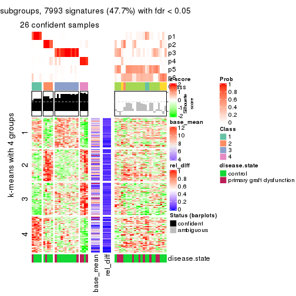
Signature heatmaps where rows are not scaled:
get_signatures(res, k = 2, scale_rows = FALSE)

get_signatures(res, k = 3, scale_rows = FALSE)
get_signatures(res, k = 4, scale_rows = FALSE)
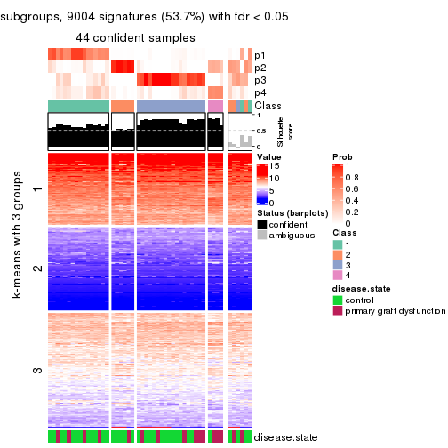
get_signatures(res, k = 5, scale_rows = FALSE)
get_signatures(res, k = 6, scale_rows = FALSE)
Compare the overlap of signatures from different k:
compare_signatures(res)
get_signature() returns a data frame invisibly. TO get the list of signatures, the function
call should be assigned to a variable explicitly. In following code, if plot argument is set
to FALSE, no heatmap is plotted while only the differential analysis is performed.
# code only for demonstration
tb = get_signature(res, k = ..., plot = FALSE)
An example of the output of tb is:
#> which_row fdr mean_1 mean_2 scaled_mean_1 scaled_mean_2 km
#> 1 38 0.042760348 8.373488 9.131774 -0.5533452 0.5164555 1
#> 2 40 0.018707592 7.106213 8.469186 -0.6173731 0.5762149 1
#> 3 55 0.019134737 10.221463 11.207825 -0.6159697 0.5749050 1
#> 4 59 0.006059896 5.921854 7.869574 -0.6899429 0.6439467 1
#> 5 60 0.018055526 8.928898 10.211722 -0.6204761 0.5791110 1
#> 6 98 0.009384629 15.714769 14.887706 0.6635654 -0.6193277 2
...
The columns in tb are:
which_row: row indices corresponding to the input matrix.fdr: FDR for the differential test. mean_x: The mean value in group x.scaled_mean_x: The mean value in group x after rows are scaled.km: Row groups if k-means clustering is applied to rows.UMAP plot which shows how samples are separated.
dimension_reduction(res, k = 2, method = "UMAP")
dimension_reduction(res, k = 3, method = "UMAP")
dimension_reduction(res, k = 4, method = "UMAP")
dimension_reduction(res, k = 5, method = "UMAP")

dimension_reduction(res, k = 6, method = "UMAP")
Following heatmap shows how subgroups are split when increasing k:
collect_classes(res)
Test correlation between subgroups and known annotations. If the known annotation is numeric, one-way ANOVA test is applied, and if the known annotation is discrete, chi-squared contingency table test is applied.
test_to_known_factors(res)
#> n disease.state(p) k
#> CV:mclust 8 NA 2
#> CV:mclust 38 0.710 3
#> CV:mclust 44 0.218 4
#> CV:mclust 40 0.150 5
#> CV:mclust 26 0.134 6
If matrix rows can be associated to genes, consider to use GO_Enrichment(res,
...) to perform function enrichment for the signature genes.
The object with results only for a single top-value method and a single partition method can be extracted as:
res = res_list["CV", "NMF"]
# you can also extract it by
# res = res_list["CV:NMF"]
A summary of res and all the functions that can be applied to it:
res
#> A 'ConsensusPartition' object with k = 2, 3, 4, 5, 6.
#> On a matrix with 16753 rows and 50 columns.
#> Top rows (1000, 2000, 3000, 4000, 5000) are extracted by 'CV' method.
#> Subgroups are detected by 'NMF' method.
#> Performed in total 1250 partitions by row resampling.
#> Best k for subgroups seems to be 2.
#>
#> Following methods can be applied to this 'ConsensusPartition' object:
#> [1] "cola_report" "collect_classes" "collect_plots"
#> [4] "collect_stats" "colnames" "compare_signatures"
#> [7] "consensus_heatmap" "dimension_reduction" "functional_enrichment"
#> [10] "get_anno_col" "get_anno" "get_classes"
#> [13] "get_consensus" "get_matrix" "get_membership"
#> [16] "get_param" "get_signatures" "get_stats"
#> [19] "is_best_k" "is_stable_k" "membership_heatmap"
#> [22] "ncol" "nrow" "plot_ecdf"
#> [25] "rownames" "select_partition_number" "show"
#> [28] "suggest_best_k" "test_to_known_factors"
collect_plots() function collects all the plots made from res for all k (number of partitions)
into one single page to provide an easy and fast comparison between different k.
collect_plots(res)
The plots are:
k and the heatmap of
predicted classes for each k.k.k.k.All the plots in panels can be made by individual functions and they are plotted later in this section.
select_partition_number() produces several plots showing different
statistics for choosing “optimized” k. There are following statistics:
k;k, the area increased is defined as \(A_k - A_{k-1}\).The detailed explanations of these statistics can be found in the cola vignette.
Generally speaking, lower PAC score, higher mean silhouette score or higher
concordance corresponds to better partition. Rand index and Jaccard index
measure how similar the current partition is compared to partition with k-1.
If they are too similar, we won't accept k is better than k-1.
select_partition_number(res)
The numeric values for all these statistics can be obtained by get_stats().
get_stats(res)
#> k 1-PAC mean_silhouette concordance area_increased Rand Jaccard
#> 2 2 0.759 0.834 0.933 0.4792 0.510 0.510
#> 3 3 0.598 0.795 0.902 0.3692 0.654 0.418
#> 4 4 0.571 0.645 0.796 0.1322 0.880 0.663
#> 5 5 0.643 0.517 0.731 0.0732 0.849 0.496
#> 6 6 0.658 0.603 0.781 0.0410 0.883 0.507
suggest_best_k() suggests the best \(k\) based on these statistics. The rules are as follows:
NA.suggest_best_k(res)
#> [1] 2
Following shows the table of the partitions (You need to click the show/hide
code output link to see it). The membership matrix (columns with name p*)
is inferred by
clue::cl_consensus()
function with the SE method. Basically the value in the membership matrix
represents the probability to belong to a certain group. The finall class
label for an item is determined with the group with highest probability it
belongs to.
In get_classes() function, the entropy is calculated from the membership
matrix and the silhouette score is calculated from the consensus matrix.
cbind(get_classes(res, k = 2), get_membership(res, k = 2))
#> class entropy silhouette p1 p2
#> GSM198618 2 0.7453 0.7234 0.212 0.788
#> GSM198622 1 0.0000 0.9481 1.000 0.000
#> GSM198623 1 0.0000 0.9481 1.000 0.000
#> GSM198626 1 0.0000 0.9481 1.000 0.000
#> GSM198627 1 0.0000 0.9481 1.000 0.000
#> GSM198628 1 0.0000 0.9481 1.000 0.000
#> GSM198629 1 0.0000 0.9481 1.000 0.000
#> GSM198630 1 0.0000 0.9481 1.000 0.000
#> GSM198631 1 0.0000 0.9481 1.000 0.000
#> GSM198632 1 0.0000 0.9481 1.000 0.000
#> GSM198633 1 0.0000 0.9481 1.000 0.000
#> GSM198634 1 0.0000 0.9481 1.000 0.000
#> GSM198635 1 0.0000 0.9481 1.000 0.000
#> GSM198636 1 0.9170 0.4587 0.668 0.332
#> GSM198639 1 0.0376 0.9452 0.996 0.004
#> GSM198641 1 0.0376 0.9451 0.996 0.004
#> GSM198642 1 0.0000 0.9481 1.000 0.000
#> GSM198643 1 0.0000 0.9481 1.000 0.000
#> GSM198644 2 0.0000 0.8835 0.000 1.000
#> GSM198645 1 0.0000 0.9481 1.000 0.000
#> GSM198649 2 0.0000 0.8835 0.000 1.000
#> GSM198651 2 0.0000 0.8835 0.000 1.000
#> GSM198653 2 0.0000 0.8835 0.000 1.000
#> GSM198654 2 0.0000 0.8835 0.000 1.000
#> GSM198655 2 0.0938 0.8771 0.012 0.988
#> GSM198656 1 0.1184 0.9349 0.984 0.016
#> GSM198657 1 0.4161 0.8623 0.916 0.084
#> GSM198658 2 0.8608 0.6356 0.284 0.716
#> GSM198659 2 0.0000 0.8835 0.000 1.000
#> GSM198660 2 0.9983 0.1900 0.476 0.524
#> GSM198662 2 0.9635 0.4583 0.388 0.612
#> GSM198663 2 0.0000 0.8835 0.000 1.000
#> GSM198664 2 0.8327 0.6675 0.264 0.736
#> GSM198665 1 0.9988 -0.0108 0.520 0.480
#> GSM198616 1 0.0000 0.9481 1.000 0.000
#> GSM198617 2 0.9775 0.4031 0.412 0.588
#> GSM198619 1 0.0000 0.9481 1.000 0.000
#> GSM198620 2 0.0000 0.8835 0.000 1.000
#> GSM198621 1 0.2236 0.9173 0.964 0.036
#> GSM198624 1 0.0000 0.9481 1.000 0.000
#> GSM198625 1 0.0000 0.9481 1.000 0.000
#> GSM198637 1 0.0000 0.9481 1.000 0.000
#> GSM198638 1 0.9358 0.3403 0.648 0.352
#> GSM198640 1 0.0000 0.9481 1.000 0.000
#> GSM198646 2 0.0000 0.8835 0.000 1.000
#> GSM198647 2 0.0000 0.8835 0.000 1.000
#> GSM198648 2 0.0000 0.8835 0.000 1.000
#> GSM198650 2 0.0000 0.8835 0.000 1.000
#> GSM198652 2 0.0000 0.8835 0.000 1.000
#> GSM198661 1 0.0000 0.9481 1.000 0.000
cbind(get_classes(res, k = 3), get_membership(res, k = 3))
#> class entropy silhouette p1 p2 p3
#> GSM198618 3 0.3500 0.813 0.116 0.004 0.880
#> GSM198622 1 0.3551 0.830 0.868 0.132 0.000
#> GSM198623 1 0.0747 0.929 0.984 0.000 0.016
#> GSM198626 1 0.0000 0.934 1.000 0.000 0.000
#> GSM198627 1 0.3619 0.822 0.864 0.136 0.000
#> GSM198628 1 0.3038 0.850 0.896 0.104 0.000
#> GSM198629 1 0.0000 0.934 1.000 0.000 0.000
#> GSM198630 1 0.0000 0.934 1.000 0.000 0.000
#> GSM198631 1 0.0000 0.934 1.000 0.000 0.000
#> GSM198632 1 0.0000 0.934 1.000 0.000 0.000
#> GSM198633 1 0.4551 0.814 0.840 0.140 0.020
#> GSM198634 1 0.1411 0.916 0.964 0.036 0.000
#> GSM198635 2 0.6168 0.278 0.412 0.588 0.000
#> GSM198636 2 0.3038 0.796 0.104 0.896 0.000
#> GSM198639 3 0.5016 0.727 0.240 0.000 0.760
#> GSM198641 2 0.1411 0.835 0.036 0.964 0.000
#> GSM198642 1 0.0892 0.926 0.980 0.000 0.020
#> GSM198643 1 0.0237 0.934 0.996 0.000 0.004
#> GSM198644 2 0.0892 0.841 0.000 0.980 0.020
#> GSM198645 1 0.4605 0.706 0.796 0.000 0.204
#> GSM198649 3 0.1411 0.823 0.000 0.036 0.964
#> GSM198651 2 0.0000 0.845 0.000 1.000 0.000
#> GSM198653 2 0.0892 0.842 0.000 0.980 0.020
#> GSM198654 3 0.0237 0.836 0.000 0.004 0.996
#> GSM198655 2 0.6252 0.181 0.000 0.556 0.444
#> GSM198656 3 0.6154 0.380 0.408 0.000 0.592
#> GSM198657 3 0.2537 0.832 0.080 0.000 0.920
#> GSM198658 3 0.0424 0.839 0.008 0.000 0.992
#> GSM198659 2 0.0424 0.844 0.000 0.992 0.008
#> GSM198660 3 0.1525 0.843 0.032 0.004 0.964
#> GSM198662 3 0.0424 0.839 0.008 0.000 0.992
#> GSM198663 2 0.0000 0.845 0.000 1.000 0.000
#> GSM198664 2 0.6778 0.672 0.188 0.732 0.080
#> GSM198665 3 0.1289 0.842 0.032 0.000 0.968
#> GSM198616 1 0.0237 0.934 0.996 0.000 0.004
#> GSM198617 3 0.2448 0.832 0.076 0.000 0.924
#> GSM198619 1 0.4842 0.671 0.776 0.000 0.224
#> GSM198620 2 0.4654 0.673 0.000 0.792 0.208
#> GSM198621 3 0.3752 0.806 0.144 0.000 0.856
#> GSM198624 1 0.0000 0.934 1.000 0.000 0.000
#> GSM198625 1 0.0892 0.926 0.980 0.020 0.000
#> GSM198637 1 0.0475 0.934 0.992 0.004 0.004
#> GSM198638 3 0.8362 0.428 0.348 0.096 0.556
#> GSM198640 1 0.0237 0.934 0.996 0.000 0.004
#> GSM198646 3 0.5058 0.599 0.000 0.244 0.756
#> GSM198647 3 0.0237 0.836 0.000 0.004 0.996
#> GSM198648 2 0.0000 0.845 0.000 1.000 0.000
#> GSM198650 3 0.0237 0.836 0.000 0.004 0.996
#> GSM198652 3 0.4121 0.704 0.000 0.168 0.832
#> GSM198661 3 0.5058 0.706 0.244 0.000 0.756
cbind(get_classes(res, k = 4), get_membership(res, k = 4))
#> class entropy silhouette p1 p2 p3 p4
#> GSM198618 4 0.3718 0.575 0.012 0.000 0.168 0.820
#> GSM198622 1 0.6473 0.587 0.612 0.108 0.000 0.280
#> GSM198623 1 0.3681 0.718 0.816 0.000 0.176 0.008
#> GSM198626 1 0.0376 0.806 0.992 0.000 0.004 0.004
#> GSM198627 1 0.1042 0.804 0.972 0.020 0.000 0.008
#> GSM198628 1 0.1854 0.784 0.940 0.048 0.000 0.012
#> GSM198629 1 0.0524 0.807 0.988 0.000 0.004 0.008
#> GSM198630 1 0.0376 0.806 0.992 0.004 0.000 0.004
#> GSM198631 1 0.0188 0.806 0.996 0.000 0.000 0.004
#> GSM198632 1 0.4323 0.740 0.776 0.000 0.020 0.204
#> GSM198633 4 0.8295 -0.148 0.280 0.300 0.016 0.404
#> GSM198634 1 0.5462 0.674 0.692 0.040 0.004 0.264
#> GSM198635 2 0.7387 0.376 0.224 0.520 0.000 0.256
#> GSM198636 2 0.4819 0.645 0.156 0.788 0.012 0.044
#> GSM198639 4 0.5284 0.518 0.016 0.000 0.368 0.616
#> GSM198641 2 0.4504 0.644 0.020 0.772 0.004 0.204
#> GSM198642 1 0.4594 0.585 0.712 0.000 0.280 0.008
#> GSM198643 1 0.2928 0.796 0.896 0.000 0.052 0.052
#> GSM198644 2 0.6255 0.543 0.012 0.696 0.144 0.148
#> GSM198645 1 0.6536 0.442 0.580 0.000 0.324 0.096
#> GSM198649 4 0.5195 0.559 0.000 0.032 0.276 0.692
#> GSM198651 2 0.1339 0.747 0.004 0.964 0.024 0.008
#> GSM198653 2 0.1767 0.746 0.000 0.944 0.044 0.012
#> GSM198654 3 0.0895 0.845 0.000 0.004 0.976 0.020
#> GSM198655 3 0.7359 0.351 0.024 0.292 0.568 0.116
#> GSM198656 3 0.2737 0.767 0.104 0.008 0.888 0.000
#> GSM198657 3 0.1059 0.847 0.012 0.000 0.972 0.016
#> GSM198658 3 0.1118 0.842 0.000 0.000 0.964 0.036
#> GSM198659 2 0.3037 0.711 0.000 0.880 0.020 0.100
#> GSM198660 3 0.1697 0.843 0.004 0.016 0.952 0.028
#> GSM198662 3 0.1305 0.838 0.004 0.000 0.960 0.036
#> GSM198663 2 0.1211 0.750 0.000 0.960 0.000 0.040
#> GSM198664 2 0.7200 0.489 0.004 0.564 0.172 0.260
#> GSM198665 3 0.1211 0.843 0.000 0.000 0.960 0.040
#> GSM198616 1 0.2489 0.799 0.912 0.000 0.020 0.068
#> GSM198617 4 0.4999 0.545 0.012 0.000 0.328 0.660
#> GSM198619 1 0.7297 0.307 0.536 0.000 0.220 0.244
#> GSM198620 4 0.5599 0.253 0.000 0.352 0.032 0.616
#> GSM198621 4 0.5384 0.557 0.028 0.000 0.324 0.648
#> GSM198624 1 0.0657 0.808 0.984 0.000 0.004 0.012
#> GSM198625 1 0.0657 0.804 0.984 0.012 0.000 0.004
#> GSM198637 1 0.5834 0.654 0.664 0.028 0.020 0.288
#> GSM198638 4 0.7989 0.144 0.076 0.224 0.124 0.576
#> GSM198640 1 0.6313 0.662 0.652 0.000 0.128 0.220
#> GSM198646 4 0.5894 0.495 0.000 0.200 0.108 0.692
#> GSM198647 4 0.4655 0.556 0.000 0.004 0.312 0.684
#> GSM198648 2 0.2266 0.746 0.004 0.912 0.000 0.084
#> GSM198650 3 0.1256 0.843 0.000 0.008 0.964 0.028
#> GSM198652 3 0.5022 0.564 0.000 0.264 0.708 0.028
#> GSM198661 3 0.1489 0.828 0.044 0.000 0.952 0.004
cbind(get_classes(res, k = 5), get_membership(res, k = 5))
#> class entropy silhouette p1 p2 p3 p4 p5
#> GSM198618 4 0.4599 0.5986 0.000 0.000 0.040 0.688 0.272
#> GSM198622 5 0.3962 0.5026 0.088 0.112 0.000 0.000 0.800
#> GSM198623 1 0.3950 0.6786 0.796 0.000 0.136 0.000 0.068
#> GSM198626 1 0.0000 0.7903 1.000 0.000 0.000 0.000 0.000
#> GSM198627 1 0.0609 0.7815 0.980 0.020 0.000 0.000 0.000
#> GSM198628 1 0.3143 0.5825 0.796 0.204 0.000 0.000 0.000
#> GSM198629 1 0.0162 0.7898 0.996 0.000 0.000 0.000 0.004
#> GSM198630 1 0.0000 0.7903 1.000 0.000 0.000 0.000 0.000
#> GSM198631 1 0.0000 0.7903 1.000 0.000 0.000 0.000 0.000
#> GSM198632 1 0.4968 0.2093 0.516 0.000 0.028 0.000 0.456
#> GSM198633 5 0.2251 0.4935 0.000 0.024 0.008 0.052 0.916
#> GSM198634 5 0.4948 0.4891 0.184 0.108 0.000 0.000 0.708
#> GSM198635 5 0.4288 0.2063 0.012 0.324 0.000 0.000 0.664
#> GSM198636 2 0.5410 0.2744 0.344 0.584 0.000 0.072 0.000
#> GSM198639 4 0.5484 0.5353 0.000 0.000 0.080 0.584 0.336
#> GSM198641 5 0.4440 -0.1029 0.000 0.468 0.004 0.000 0.528
#> GSM198642 1 0.4907 0.5014 0.656 0.000 0.292 0.000 0.052
#> GSM198643 1 0.5142 0.4054 0.600 0.000 0.052 0.000 0.348
#> GSM198644 2 0.5705 0.2656 0.048 0.600 0.020 0.328 0.004
#> GSM198645 3 0.8432 -0.1846 0.188 0.000 0.316 0.192 0.304
#> GSM198649 4 0.0609 0.5986 0.000 0.020 0.000 0.980 0.000
#> GSM198651 2 0.2426 0.4398 0.000 0.900 0.036 0.000 0.064
#> GSM198653 2 0.6071 0.2417 0.000 0.548 0.152 0.000 0.300
#> GSM198654 3 0.0566 0.8558 0.000 0.004 0.984 0.012 0.000
#> GSM198655 2 0.7335 0.3196 0.092 0.520 0.248 0.140 0.000
#> GSM198656 3 0.0290 0.8545 0.000 0.008 0.992 0.000 0.000
#> GSM198657 3 0.0798 0.8592 0.000 0.000 0.976 0.008 0.016
#> GSM198658 3 0.2136 0.8367 0.000 0.000 0.904 0.008 0.088
#> GSM198659 2 0.7295 0.4256 0.000 0.548 0.116 0.196 0.140
#> GSM198660 3 0.2504 0.8444 0.000 0.040 0.896 0.000 0.064
#> GSM198662 3 0.2293 0.8368 0.000 0.000 0.900 0.016 0.084
#> GSM198663 2 0.4410 0.1092 0.000 0.556 0.000 0.004 0.440
#> GSM198664 5 0.6068 0.0774 0.000 0.328 0.140 0.000 0.532
#> GSM198665 3 0.2006 0.8463 0.000 0.000 0.916 0.012 0.072
#> GSM198616 1 0.4418 0.4746 0.652 0.000 0.016 0.000 0.332
#> GSM198617 4 0.5685 0.4714 0.000 0.000 0.084 0.520 0.396
#> GSM198619 4 0.7786 0.2260 0.200 0.000 0.076 0.372 0.352
#> GSM198620 4 0.3039 0.4412 0.000 0.192 0.000 0.808 0.000
#> GSM198621 4 0.3906 0.6605 0.000 0.000 0.068 0.800 0.132
#> GSM198624 1 0.0162 0.7898 0.996 0.000 0.000 0.000 0.004
#> GSM198625 1 0.0000 0.7903 1.000 0.000 0.000 0.000 0.000
#> GSM198637 5 0.5055 0.2333 0.308 0.000 0.008 0.040 0.644
#> GSM198638 5 0.4540 0.4537 0.000 0.124 0.036 0.056 0.784
#> GSM198640 5 0.6288 0.0608 0.340 0.000 0.088 0.028 0.544
#> GSM198646 4 0.2230 0.5285 0.000 0.116 0.000 0.884 0.000
#> GSM198647 4 0.1670 0.6301 0.000 0.000 0.052 0.936 0.012
#> GSM198648 2 0.4897 0.0826 0.000 0.516 0.000 0.024 0.460
#> GSM198650 3 0.1095 0.8569 0.000 0.012 0.968 0.008 0.012
#> GSM198652 3 0.2179 0.7656 0.000 0.112 0.888 0.000 0.000
#> GSM198661 3 0.0794 0.8416 0.000 0.028 0.972 0.000 0.000
cbind(get_classes(res, k = 6), get_membership(res, k = 6))
#> class entropy silhouette p1 p2 p3 p4 p5 p6
#> GSM198618 4 0.2253 0.762 0.000 0.004 0.012 0.896 0.084 0.004
#> GSM198622 5 0.4366 0.349 0.024 0.324 0.000 0.004 0.644 0.004
#> GSM198623 1 0.2362 0.786 0.892 0.000 0.080 0.000 0.012 0.016
#> GSM198626 1 0.1003 0.828 0.964 0.000 0.000 0.000 0.020 0.016
#> GSM198627 1 0.2482 0.748 0.848 0.000 0.000 0.000 0.004 0.148
#> GSM198628 1 0.2402 0.748 0.856 0.004 0.000 0.000 0.000 0.140
#> GSM198629 1 0.1531 0.803 0.928 0.000 0.000 0.000 0.068 0.004
#> GSM198630 1 0.0363 0.834 0.988 0.000 0.000 0.000 0.000 0.012
#> GSM198631 1 0.0291 0.833 0.992 0.000 0.004 0.000 0.000 0.004
#> GSM198632 5 0.4477 0.473 0.296 0.012 0.020 0.000 0.664 0.008
#> GSM198633 5 0.3972 0.312 0.000 0.320 0.000 0.012 0.664 0.004
#> GSM198634 5 0.5101 0.284 0.068 0.352 0.000 0.004 0.572 0.004
#> GSM198635 2 0.2755 0.668 0.012 0.844 0.000 0.000 0.140 0.004
#> GSM198636 6 0.2918 0.635 0.084 0.028 0.000 0.012 0.008 0.868
#> GSM198639 5 0.4481 0.222 0.000 0.000 0.024 0.416 0.556 0.004
#> GSM198641 2 0.1168 0.698 0.000 0.956 0.000 0.000 0.016 0.028
#> GSM198642 1 0.5057 0.522 0.656 0.000 0.244 0.000 0.076 0.024
#> GSM198643 1 0.4580 -0.147 0.488 0.000 0.016 0.000 0.484 0.012
#> GSM198644 6 0.6691 0.462 0.008 0.152 0.012 0.200 0.064 0.564
#> GSM198645 5 0.7677 0.216 0.116 0.000 0.224 0.280 0.364 0.016
#> GSM198649 4 0.0777 0.792 0.000 0.000 0.004 0.972 0.000 0.024
#> GSM198651 2 0.5798 0.151 0.000 0.580 0.072 0.000 0.064 0.284
#> GSM198653 2 0.2606 0.650 0.000 0.888 0.048 0.000 0.020 0.044
#> GSM198654 3 0.1370 0.836 0.000 0.000 0.948 0.012 0.004 0.036
#> GSM198655 6 0.2662 0.642 0.012 0.008 0.108 0.004 0.000 0.868
#> GSM198656 3 0.1036 0.842 0.004 0.000 0.964 0.000 0.024 0.008
#> GSM198657 3 0.0964 0.842 0.000 0.000 0.968 0.004 0.016 0.012
#> GSM198658 3 0.2791 0.824 0.000 0.000 0.852 0.008 0.124 0.016
#> GSM198659 6 0.6470 0.341 0.000 0.284 0.112 0.076 0.004 0.524
#> GSM198660 3 0.2203 0.842 0.000 0.004 0.896 0.000 0.084 0.016
#> GSM198662 3 0.2207 0.840 0.000 0.000 0.900 0.016 0.076 0.008
#> GSM198663 2 0.3101 0.645 0.000 0.820 0.000 0.000 0.032 0.148
#> GSM198664 2 0.4193 0.592 0.000 0.736 0.188 0.000 0.072 0.004
#> GSM198665 3 0.4691 0.663 0.000 0.000 0.676 0.044 0.256 0.024
#> GSM198616 5 0.4211 0.359 0.364 0.000 0.004 0.000 0.616 0.016
#> GSM198617 5 0.4326 0.392 0.000 0.000 0.044 0.300 0.656 0.000
#> GSM198619 5 0.6107 0.455 0.156 0.000 0.016 0.252 0.560 0.016
#> GSM198620 4 0.3360 0.575 0.000 0.000 0.000 0.732 0.004 0.264
#> GSM198621 4 0.3411 0.572 0.000 0.000 0.008 0.756 0.232 0.004
#> GSM198624 1 0.0547 0.829 0.980 0.000 0.000 0.000 0.020 0.000
#> GSM198625 1 0.0146 0.833 0.996 0.000 0.000 0.000 0.000 0.004
#> GSM198637 5 0.4149 0.575 0.148 0.068 0.004 0.000 0.768 0.012
#> GSM198638 2 0.5672 0.206 0.000 0.492 0.032 0.052 0.416 0.008
#> GSM198640 5 0.5868 0.510 0.228 0.024 0.064 0.032 0.640 0.012
#> GSM198646 4 0.2260 0.734 0.000 0.000 0.000 0.860 0.000 0.140
#> GSM198647 4 0.0725 0.793 0.000 0.000 0.012 0.976 0.012 0.000
#> GSM198648 2 0.1949 0.693 0.000 0.924 0.000 0.036 0.020 0.020
#> GSM198650 3 0.3208 0.797 0.000 0.000 0.832 0.008 0.120 0.040
#> GSM198652 3 0.6056 0.438 0.000 0.168 0.620 0.004 0.084 0.124
#> GSM198661 3 0.2240 0.830 0.000 0.000 0.908 0.032 0.044 0.016
Heatmaps for the consensus matrix. It visualizes the probability of two samples to be in a same group.
consensus_heatmap(res, k = 2)
consensus_heatmap(res, k = 3)

consensus_heatmap(res, k = 4)
consensus_heatmap(res, k = 5)
consensus_heatmap(res, k = 6)
Heatmaps for the membership of samples in all partitions to see how consistent they are:
membership_heatmap(res, k = 2)
membership_heatmap(res, k = 3)

membership_heatmap(res, k = 4)
membership_heatmap(res, k = 5)
membership_heatmap(res, k = 6)
As soon as we have had the classes for columns, we can look for signatures which are significantly different between classes which can be candidate marks for certain classes. Following are the heatmaps for signatures.
Signature heatmaps where rows are scaled:
get_signatures(res, k = 2)
get_signatures(res, k = 3)
get_signatures(res, k = 4)
get_signatures(res, k = 5)
get_signatures(res, k = 6)
Signature heatmaps where rows are not scaled:
get_signatures(res, k = 2, scale_rows = FALSE)
get_signatures(res, k = 3, scale_rows = FALSE)
get_signatures(res, k = 4, scale_rows = FALSE)
get_signatures(res, k = 5, scale_rows = FALSE)
get_signatures(res, k = 6, scale_rows = FALSE)
Compare the overlap of signatures from different k:
compare_signatures(res)
get_signature() returns a data frame invisibly. TO get the list of signatures, the function
call should be assigned to a variable explicitly. In following code, if plot argument is set
to FALSE, no heatmap is plotted while only the differential analysis is performed.
# code only for demonstration
tb = get_signature(res, k = ..., plot = FALSE)
An example of the output of tb is:
#> which_row fdr mean_1 mean_2 scaled_mean_1 scaled_mean_2 km
#> 1 38 0.042760348 8.373488 9.131774 -0.5533452 0.5164555 1
#> 2 40 0.018707592 7.106213 8.469186 -0.6173731 0.5762149 1
#> 3 55 0.019134737 10.221463 11.207825 -0.6159697 0.5749050 1
#> 4 59 0.006059896 5.921854 7.869574 -0.6899429 0.6439467 1
#> 5 60 0.018055526 8.928898 10.211722 -0.6204761 0.5791110 1
#> 6 98 0.009384629 15.714769 14.887706 0.6635654 -0.6193277 2
...
The columns in tb are:
which_row: row indices corresponding to the input matrix.fdr: FDR for the differential test. mean_x: The mean value in group x.scaled_mean_x: The mean value in group x after rows are scaled.km: Row groups if k-means clustering is applied to rows.UMAP plot which shows how samples are separated.
dimension_reduction(res, k = 2, method = "UMAP")
dimension_reduction(res, k = 3, method = "UMAP")
dimension_reduction(res, k = 4, method = "UMAP")
dimension_reduction(res, k = 5, method = "UMAP")

dimension_reduction(res, k = 6, method = "UMAP")
Following heatmap shows how subgroups are split when increasing k:
collect_classes(res)
Test correlation between subgroups and known annotations. If the known annotation is numeric, one-way ANOVA test is applied, and if the known annotation is discrete, chi-squared contingency table test is applied.
test_to_known_factors(res)
#> n disease.state(p) k
#> CV:NMF 44 0.9518 2
#> CV:NMF 46 0.4297 3
#> CV:NMF 41 0.5058 4
#> CV:NMF 27 0.5599 5
#> CV:NMF 35 0.0671 6
If matrix rows can be associated to genes, consider to use GO_Enrichment(res,
...) to perform function enrichment for the signature genes.
The object with results only for a single top-value method and a single partition method can be extracted as:
res = res_list["MAD", "hclust"]
# you can also extract it by
# res = res_list["MAD:hclust"]
A summary of res and all the functions that can be applied to it:
res
#> A 'ConsensusPartition' object with k = 2, 3, 4, 5, 6.
#> On a matrix with 16753 rows and 50 columns.
#> Top rows (1000, 2000, 3000, 4000, 5000) are extracted by 'MAD' method.
#> Subgroups are detected by 'hclust' method.
#> Performed in total 1250 partitions by row resampling.
#> Best k for subgroups seems to be 3.
#>
#> Following methods can be applied to this 'ConsensusPartition' object:
#> [1] "cola_report" "collect_classes" "collect_plots"
#> [4] "collect_stats" "colnames" "compare_signatures"
#> [7] "consensus_heatmap" "dimension_reduction" "functional_enrichment"
#> [10] "get_anno_col" "get_anno" "get_classes"
#> [13] "get_consensus" "get_matrix" "get_membership"
#> [16] "get_param" "get_signatures" "get_stats"
#> [19] "is_best_k" "is_stable_k" "membership_heatmap"
#> [22] "ncol" "nrow" "plot_ecdf"
#> [25] "rownames" "select_partition_number" "show"
#> [28] "suggest_best_k" "test_to_known_factors"
collect_plots() function collects all the plots made from res for all k (number of partitions)
into one single page to provide an easy and fast comparison between different k.
collect_plots(res)
The plots are:
k and the heatmap of
predicted classes for each k.k.k.k.All the plots in panels can be made by individual functions and they are plotted later in this section.
select_partition_number() produces several plots showing different
statistics for choosing “optimized” k. There are following statistics:
k;k, the area increased is defined as \(A_k - A_{k-1}\).The detailed explanations of these statistics can be found in the cola vignette.
Generally speaking, lower PAC score, higher mean silhouette score or higher
concordance corresponds to better partition. Rand index and Jaccard index
measure how similar the current partition is compared to partition with k-1.
If they are too similar, we won't accept k is better than k-1.
select_partition_number(res)
The numeric values for all these statistics can be obtained by get_stats().
get_stats(res)
#> k 1-PAC mean_silhouette concordance area_increased Rand Jaccard
#> 2 2 0.658 0.924 0.945 0.2116 0.850 0.850
#> 3 3 0.586 0.850 0.911 1.0925 0.752 0.708
#> 4 4 0.417 0.728 0.814 0.4886 0.758 0.597
#> 5 5 0.509 0.694 0.800 0.1036 0.925 0.791
#> 6 6 0.574 0.636 0.765 0.0622 0.998 0.991
suggest_best_k() suggests the best \(k\) based on these statistics. The rules are as follows:
NA.suggest_best_k(res)
#> [1] 3
Following shows the table of the partitions (You need to click the show/hide
code output link to see it). The membership matrix (columns with name p*)
is inferred by
clue::cl_consensus()
function with the SE method. Basically the value in the membership matrix
represents the probability to belong to a certain group. The finall class
label for an item is determined with the group with highest probability it
belongs to.
In get_classes() function, the entropy is calculated from the membership
matrix and the silhouette score is calculated from the consensus matrix.
cbind(get_classes(res, k = 2), get_membership(res, k = 2))
#> class entropy silhouette p1 p2
#> GSM198618 1 0.3879 0.925 0.924 0.076
#> GSM198622 1 0.0000 0.940 1.000 0.000
#> GSM198623 1 0.3584 0.927 0.932 0.068
#> GSM198626 1 0.0000 0.940 1.000 0.000
#> GSM198627 1 0.0000 0.940 1.000 0.000
#> GSM198628 1 0.0000 0.940 1.000 0.000
#> GSM198629 1 0.0000 0.940 1.000 0.000
#> GSM198630 1 0.0000 0.940 1.000 0.000
#> GSM198631 1 0.0000 0.940 1.000 0.000
#> GSM198632 1 0.1843 0.938 0.972 0.028
#> GSM198633 1 0.1843 0.938 0.972 0.028
#> GSM198634 1 0.0000 0.940 1.000 0.000
#> GSM198635 1 0.0000 0.940 1.000 0.000
#> GSM198636 1 0.0000 0.940 1.000 0.000
#> GSM198639 1 0.5737 0.893 0.864 0.136
#> GSM198641 1 0.0000 0.940 1.000 0.000
#> GSM198642 1 0.0000 0.940 1.000 0.000
#> GSM198643 1 0.0376 0.941 0.996 0.004
#> GSM198644 1 0.7219 0.842 0.800 0.200
#> GSM198645 1 0.3879 0.924 0.924 0.076
#> GSM198649 2 0.0000 1.000 0.000 1.000
#> GSM198651 1 0.0000 0.940 1.000 0.000
#> GSM198653 1 0.7299 0.840 0.796 0.204
#> GSM198654 1 0.6623 0.869 0.828 0.172
#> GSM198655 1 0.0672 0.941 0.992 0.008
#> GSM198656 1 0.2236 0.937 0.964 0.036
#> GSM198657 1 0.6247 0.881 0.844 0.156
#> GSM198658 1 0.6623 0.869 0.828 0.172
#> GSM198659 1 0.1414 0.932 0.980 0.020
#> GSM198660 1 0.5408 0.900 0.876 0.124
#> GSM198662 1 0.6247 0.881 0.844 0.156
#> GSM198663 1 0.1414 0.932 0.980 0.020
#> GSM198664 1 0.0376 0.939 0.996 0.004
#> GSM198665 1 0.6247 0.881 0.844 0.156
#> GSM198616 1 0.0376 0.941 0.996 0.004
#> GSM198617 1 0.5737 0.893 0.864 0.136
#> GSM198619 1 0.0376 0.941 0.996 0.004
#> GSM198620 2 0.0000 1.000 0.000 1.000
#> GSM198621 1 0.5737 0.893 0.864 0.136
#> GSM198624 1 0.0376 0.941 0.996 0.004
#> GSM198625 1 0.0000 0.940 1.000 0.000
#> GSM198637 1 0.0376 0.941 0.996 0.004
#> GSM198638 1 0.1843 0.938 0.972 0.028
#> GSM198640 1 0.1843 0.938 0.972 0.028
#> GSM198646 2 0.0000 1.000 0.000 1.000
#> GSM198647 2 0.0000 1.000 0.000 1.000
#> GSM198648 1 0.1414 0.932 0.980 0.020
#> GSM198650 1 0.6887 0.859 0.816 0.184
#> GSM198652 1 0.7453 0.829 0.788 0.212
#> GSM198661 1 0.6247 0.881 0.844 0.156
cbind(get_classes(res, k = 3), get_membership(res, k = 3))
#> class entropy silhouette p1 p2 p3
#> GSM198618 1 0.7366 0.572 0.668 0.260 0.072
#> GSM198622 1 0.2400 0.886 0.932 0.064 0.004
#> GSM198623 1 0.2165 0.904 0.936 0.000 0.064
#> GSM198626 1 0.0237 0.908 0.996 0.000 0.004
#> GSM198627 1 0.0661 0.908 0.988 0.008 0.004
#> GSM198628 1 0.0237 0.908 0.996 0.000 0.004
#> GSM198629 1 0.0237 0.908 0.996 0.000 0.004
#> GSM198630 1 0.0237 0.908 0.996 0.000 0.004
#> GSM198631 1 0.0237 0.908 0.996 0.000 0.004
#> GSM198632 1 0.2773 0.896 0.928 0.048 0.024
#> GSM198633 1 0.3370 0.883 0.904 0.072 0.024
#> GSM198634 1 0.0661 0.908 0.988 0.008 0.004
#> GSM198635 1 0.1525 0.903 0.964 0.032 0.004
#> GSM198636 1 0.1964 0.898 0.944 0.056 0.000
#> GSM198639 1 0.3551 0.878 0.868 0.000 0.132
#> GSM198641 2 0.0892 0.789 0.020 0.980 0.000
#> GSM198642 1 0.0237 0.908 0.996 0.000 0.004
#> GSM198643 1 0.0000 0.909 1.000 0.000 0.000
#> GSM198644 1 0.9423 0.208 0.484 0.320 0.196
#> GSM198645 1 0.2939 0.901 0.916 0.012 0.072
#> GSM198649 3 0.0237 1.000 0.004 0.000 0.996
#> GSM198651 2 0.0892 0.789 0.020 0.980 0.000
#> GSM198653 2 0.4521 0.673 0.004 0.816 0.180
#> GSM198654 1 0.4121 0.857 0.832 0.000 0.168
#> GSM198655 1 0.2486 0.897 0.932 0.060 0.008
#> GSM198656 1 0.1289 0.910 0.968 0.000 0.032
#> GSM198657 1 0.3879 0.868 0.848 0.000 0.152
#> GSM198658 1 0.4121 0.857 0.832 0.000 0.168
#> GSM198659 2 0.4409 0.705 0.172 0.824 0.004
#> GSM198660 1 0.5036 0.863 0.832 0.048 0.120
#> GSM198662 1 0.3879 0.868 0.848 0.000 0.152
#> GSM198663 2 0.0000 0.775 0.000 1.000 0.000
#> GSM198664 2 0.5873 0.528 0.312 0.684 0.004
#> GSM198665 1 0.3879 0.868 0.848 0.000 0.152
#> GSM198616 1 0.0000 0.909 1.000 0.000 0.000
#> GSM198617 1 0.3551 0.878 0.868 0.000 0.132
#> GSM198619 1 0.0000 0.909 1.000 0.000 0.000
#> GSM198620 3 0.0237 1.000 0.004 0.000 0.996
#> GSM198621 1 0.3551 0.878 0.868 0.000 0.132
#> GSM198624 1 0.0000 0.909 1.000 0.000 0.000
#> GSM198625 1 0.0661 0.908 0.988 0.008 0.004
#> GSM198637 1 0.0000 0.909 1.000 0.000 0.000
#> GSM198638 1 0.3370 0.883 0.904 0.072 0.024
#> GSM198640 1 0.2773 0.896 0.928 0.048 0.024
#> GSM198646 3 0.0237 1.000 0.004 0.000 0.996
#> GSM198647 3 0.0237 1.000 0.004 0.000 0.996
#> GSM198648 2 0.0000 0.775 0.000 1.000 0.000
#> GSM198650 1 0.4700 0.843 0.812 0.008 0.180
#> GSM198652 2 0.7388 0.569 0.100 0.692 0.208
#> GSM198661 1 0.3879 0.868 0.848 0.000 0.152
cbind(get_classes(res, k = 4), get_membership(res, k = 4))
#> class entropy silhouette p1 p2 p3 p4
#> GSM198618 3 0.6896 0.560 0.140 0.260 0.596 0.004
#> GSM198622 1 0.2156 0.852 0.928 0.060 0.008 0.004
#> GSM198623 3 0.4539 0.656 0.272 0.000 0.720 0.008
#> GSM198626 1 0.4544 0.805 0.788 0.000 0.164 0.048
#> GSM198627 1 0.0524 0.884 0.988 0.004 0.000 0.008
#> GSM198628 1 0.4104 0.813 0.808 0.000 0.164 0.028
#> GSM198629 1 0.3853 0.815 0.820 0.000 0.160 0.020
#> GSM198630 1 0.4544 0.805 0.788 0.000 0.164 0.048
#> GSM198631 1 0.0895 0.885 0.976 0.000 0.020 0.004
#> GSM198632 3 0.6241 0.541 0.404 0.048 0.544 0.004
#> GSM198633 3 0.6458 0.519 0.408 0.072 0.520 0.000
#> GSM198634 1 0.0712 0.886 0.984 0.004 0.004 0.008
#> GSM198635 1 0.1443 0.878 0.960 0.028 0.008 0.004
#> GSM198636 3 0.5397 0.665 0.108 0.004 0.752 0.136
#> GSM198639 3 0.3157 0.734 0.144 0.000 0.852 0.004
#> GSM198641 2 0.0707 0.813 0.020 0.980 0.000 0.000
#> GSM198642 3 0.4920 0.573 0.368 0.000 0.628 0.004
#> GSM198643 3 0.4920 0.596 0.368 0.000 0.628 0.004
#> GSM198644 3 0.7655 0.274 0.072 0.320 0.544 0.064
#> GSM198645 3 0.4019 0.730 0.196 0.012 0.792 0.000
#> GSM198649 4 0.2921 1.000 0.000 0.000 0.140 0.860
#> GSM198651 2 0.0707 0.813 0.020 0.980 0.000 0.000
#> GSM198653 2 0.4282 0.699 0.000 0.816 0.124 0.060
#> GSM198654 3 0.0469 0.708 0.000 0.000 0.988 0.012
#> GSM198655 3 0.5422 0.667 0.100 0.008 0.756 0.136
#> GSM198656 3 0.4897 0.610 0.332 0.000 0.660 0.008
#> GSM198657 3 0.0804 0.717 0.012 0.000 0.980 0.008
#> GSM198658 3 0.0469 0.708 0.000 0.000 0.988 0.012
#> GSM198659 2 0.3808 0.734 0.160 0.824 0.012 0.004
#> GSM198660 3 0.4336 0.725 0.132 0.048 0.816 0.004
#> GSM198662 3 0.0804 0.717 0.012 0.000 0.980 0.008
#> GSM198663 2 0.0000 0.808 0.000 1.000 0.000 0.000
#> GSM198664 2 0.5669 0.580 0.260 0.684 0.052 0.004
#> GSM198665 3 0.0927 0.719 0.016 0.000 0.976 0.008
#> GSM198616 3 0.4990 0.609 0.352 0.000 0.640 0.008
#> GSM198617 3 0.3157 0.734 0.144 0.000 0.852 0.004
#> GSM198619 3 0.4990 0.609 0.352 0.000 0.640 0.008
#> GSM198620 4 0.2921 1.000 0.000 0.000 0.140 0.860
#> GSM198621 3 0.3157 0.734 0.144 0.000 0.852 0.004
#> GSM198624 1 0.1256 0.883 0.964 0.000 0.028 0.008
#> GSM198625 1 0.0712 0.885 0.984 0.004 0.004 0.008
#> GSM198637 3 0.4920 0.596 0.368 0.000 0.628 0.004
#> GSM198638 3 0.6458 0.519 0.408 0.072 0.520 0.000
#> GSM198640 3 0.6241 0.541 0.404 0.048 0.544 0.004
#> GSM198646 4 0.2921 1.000 0.000 0.000 0.140 0.860
#> GSM198647 4 0.2921 1.000 0.000 0.000 0.140 0.860
#> GSM198648 2 0.0000 0.808 0.000 1.000 0.000 0.000
#> GSM198650 3 0.1557 0.694 0.000 0.000 0.944 0.056
#> GSM198652 2 0.5590 0.573 0.000 0.692 0.244 0.064
#> GSM198661 3 0.0804 0.717 0.012 0.000 0.980 0.008
cbind(get_classes(res, k = 5), get_membership(res, k = 5))
#> class entropy silhouette p1 p2 p3 p4 p5
#> GSM198618 5 0.6921 0.476 0.124 0.260 0.040 0.012 0.564
#> GSM198622 1 0.3104 0.808 0.876 0.056 0.004 0.056 0.008
#> GSM198623 5 0.4482 0.573 0.252 0.000 0.032 0.004 0.712
#> GSM198626 1 0.3663 0.800 0.776 0.000 0.208 0.000 0.016
#> GSM198627 1 0.0290 0.872 0.992 0.000 0.008 0.000 0.000
#> GSM198628 1 0.3427 0.815 0.796 0.000 0.192 0.000 0.012
#> GSM198629 1 0.3280 0.821 0.812 0.000 0.176 0.000 0.012
#> GSM198630 1 0.3663 0.800 0.776 0.000 0.208 0.000 0.016
#> GSM198631 1 0.1988 0.852 0.928 0.000 0.016 0.048 0.008
#> GSM198632 5 0.6173 0.571 0.388 0.048 0.036 0.004 0.524
#> GSM198633 5 0.6393 0.559 0.388 0.072 0.024 0.008 0.508
#> GSM198634 1 0.0451 0.871 0.988 0.000 0.008 0.000 0.004
#> GSM198635 1 0.2356 0.834 0.912 0.024 0.004 0.056 0.004
#> GSM198636 3 0.3242 0.621 0.040 0.000 0.844 0.000 0.116
#> GSM198639 5 0.2864 0.688 0.136 0.000 0.012 0.000 0.852
#> GSM198641 2 0.1408 0.804 0.008 0.948 0.044 0.000 0.000
#> GSM198642 5 0.5474 0.494 0.308 0.000 0.020 0.048 0.624
#> GSM198643 5 0.5030 0.638 0.348 0.000 0.036 0.004 0.612
#> GSM198644 3 0.8413 0.199 0.016 0.288 0.400 0.128 0.168
#> GSM198645 5 0.3972 0.693 0.188 0.012 0.020 0.000 0.780
#> GSM198649 4 0.1341 1.000 0.000 0.000 0.000 0.944 0.056
#> GSM198651 2 0.1408 0.804 0.008 0.948 0.044 0.000 0.000
#> GSM198653 2 0.4361 0.710 0.000 0.792 0.024 0.124 0.060
#> GSM198654 5 0.2488 0.548 0.000 0.000 0.124 0.004 0.872
#> GSM198655 3 0.3446 0.623 0.036 0.000 0.840 0.008 0.116
#> GSM198656 5 0.5360 0.513 0.272 0.000 0.020 0.052 0.656
#> GSM198657 5 0.0404 0.622 0.000 0.000 0.012 0.000 0.988
#> GSM198658 5 0.2488 0.548 0.000 0.000 0.124 0.004 0.872
#> GSM198659 2 0.3865 0.719 0.108 0.824 0.004 0.056 0.008
#> GSM198660 5 0.3704 0.654 0.116 0.048 0.004 0.004 0.828
#> GSM198662 5 0.0404 0.622 0.000 0.000 0.012 0.000 0.988
#> GSM198663 2 0.0000 0.805 0.000 1.000 0.000 0.000 0.000
#> GSM198664 2 0.5635 0.541 0.204 0.684 0.000 0.056 0.056
#> GSM198665 5 0.0671 0.625 0.004 0.000 0.016 0.000 0.980
#> GSM198616 5 0.5040 0.648 0.332 0.000 0.040 0.004 0.624
#> GSM198617 5 0.2864 0.688 0.136 0.000 0.012 0.000 0.852
#> GSM198619 5 0.5040 0.648 0.332 0.000 0.040 0.004 0.624
#> GSM198620 4 0.1341 1.000 0.000 0.000 0.000 0.944 0.056
#> GSM198621 5 0.2864 0.688 0.136 0.000 0.012 0.000 0.852
#> GSM198624 1 0.1461 0.860 0.952 0.000 0.028 0.004 0.016
#> GSM198625 1 0.0451 0.871 0.988 0.000 0.008 0.000 0.004
#> GSM198637 5 0.5030 0.638 0.348 0.000 0.036 0.004 0.612
#> GSM198638 5 0.6393 0.559 0.388 0.072 0.024 0.008 0.508
#> GSM198640 5 0.6173 0.571 0.388 0.048 0.036 0.004 0.524
#> GSM198646 4 0.1341 1.000 0.000 0.000 0.000 0.944 0.056
#> GSM198647 4 0.1341 1.000 0.000 0.000 0.000 0.944 0.056
#> GSM198648 2 0.0000 0.805 0.000 1.000 0.000 0.000 0.000
#> GSM198650 3 0.5080 0.404 0.000 0.000 0.604 0.048 0.348
#> GSM198652 2 0.6234 0.596 0.000 0.664 0.120 0.128 0.088
#> GSM198661 5 0.0404 0.622 0.000 0.000 0.012 0.000 0.988
cbind(get_classes(res, k = 6), get_membership(res, k = 6))
#> class entropy silhouette p1 p2 p3 p4 p5 p6
#> GSM198618 3 0.7458 0.4621 0.064 0.244 0.480 0.008 0.164 0.040
#> GSM198622 1 0.4254 0.5877 0.656 0.028 0.000 0.004 0.312 0.000
#> GSM198623 3 0.4396 0.5378 0.204 0.000 0.724 0.004 0.060 0.008
#> GSM198626 1 0.3357 0.7540 0.764 0.000 0.008 0.000 0.004 0.224
#> GSM198627 1 0.0000 0.8138 1.000 0.000 0.000 0.000 0.000 0.000
#> GSM198628 1 0.3593 0.7629 0.764 0.000 0.004 0.000 0.024 0.208
#> GSM198629 1 0.3712 0.7665 0.760 0.000 0.004 0.000 0.032 0.204
#> GSM198630 1 0.3357 0.7540 0.764 0.000 0.008 0.000 0.004 0.224
#> GSM198631 1 0.3492 0.7484 0.796 0.000 0.016 0.004 0.172 0.012
#> GSM198632 3 0.6748 0.5932 0.208 0.032 0.452 0.000 0.296 0.012
#> GSM198633 3 0.6781 0.5813 0.200 0.048 0.436 0.004 0.312 0.000
#> GSM198634 1 0.0291 0.8135 0.992 0.000 0.004 0.000 0.004 0.000
#> GSM198635 1 0.2945 0.7394 0.832 0.004 0.004 0.004 0.152 0.004
#> GSM198636 6 0.4617 0.4353 0.012 0.000 0.040 0.000 0.304 0.644
#> GSM198639 3 0.3053 0.6849 0.020 0.000 0.812 0.000 0.168 0.000
#> GSM198641 2 0.2266 0.6874 0.000 0.880 0.000 0.000 0.108 0.012
#> GSM198642 3 0.5422 0.4510 0.176 0.000 0.636 0.004 0.172 0.012
#> GSM198643 3 0.5763 0.6380 0.156 0.000 0.544 0.000 0.288 0.012
#> GSM198644 5 0.8208 0.0000 0.000 0.244 0.064 0.164 0.376 0.152
#> GSM198645 3 0.4278 0.6893 0.104 0.008 0.748 0.000 0.140 0.000
#> GSM198649 4 0.0260 1.0000 0.000 0.000 0.008 0.992 0.000 0.000
#> GSM198651 2 0.2266 0.6874 0.000 0.880 0.000 0.000 0.108 0.012
#> GSM198653 2 0.3743 0.5634 0.000 0.788 0.024 0.160 0.028 0.000
#> GSM198654 3 0.2907 0.5282 0.000 0.000 0.828 0.000 0.020 0.152
#> GSM198655 6 0.4524 0.4275 0.000 0.000 0.040 0.008 0.304 0.648
#> GSM198656 3 0.5178 0.4723 0.160 0.000 0.668 0.004 0.156 0.012
#> GSM198657 3 0.0458 0.6359 0.000 0.000 0.984 0.000 0.016 0.000
#> GSM198658 3 0.2907 0.5282 0.000 0.000 0.828 0.000 0.020 0.152
#> GSM198659 2 0.3454 0.6192 0.036 0.808 0.000 0.004 0.148 0.004
#> GSM198660 3 0.3463 0.6526 0.044 0.044 0.836 0.000 0.076 0.000
#> GSM198662 3 0.0458 0.6359 0.000 0.000 0.984 0.000 0.016 0.000
#> GSM198663 2 0.0000 0.7117 0.000 1.000 0.000 0.000 0.000 0.000
#> GSM198664 2 0.5561 0.4383 0.092 0.656 0.056 0.004 0.192 0.000
#> GSM198665 3 0.0790 0.6414 0.000 0.000 0.968 0.000 0.032 0.000
#> GSM198616 3 0.5772 0.6422 0.152 0.000 0.556 0.000 0.276 0.016
#> GSM198617 3 0.3053 0.6849 0.020 0.000 0.812 0.000 0.168 0.000
#> GSM198619 3 0.5772 0.6422 0.152 0.000 0.556 0.000 0.276 0.016
#> GSM198620 4 0.0260 1.0000 0.000 0.000 0.008 0.992 0.000 0.000
#> GSM198621 3 0.3053 0.6849 0.020 0.000 0.812 0.000 0.168 0.000
#> GSM198624 1 0.2602 0.7916 0.884 0.000 0.024 0.000 0.072 0.020
#> GSM198625 1 0.0146 0.8136 0.996 0.000 0.004 0.000 0.000 0.000
#> GSM198637 3 0.5763 0.6380 0.156 0.000 0.544 0.000 0.288 0.012
#> GSM198638 3 0.6781 0.5813 0.200 0.048 0.436 0.004 0.312 0.000
#> GSM198640 3 0.6748 0.5932 0.208 0.032 0.452 0.000 0.296 0.012
#> GSM198646 4 0.0260 1.0000 0.000 0.000 0.008 0.992 0.000 0.000
#> GSM198647 4 0.0260 1.0000 0.000 0.000 0.008 0.992 0.000 0.000
#> GSM198648 2 0.0000 0.7117 0.000 1.000 0.000 0.000 0.000 0.000
#> GSM198650 6 0.5661 0.0598 0.000 0.000 0.208 0.048 0.116 0.628
#> GSM198652 2 0.6953 0.2728 0.000 0.564 0.040 0.164 0.132 0.100
#> GSM198661 3 0.0458 0.6359 0.000 0.000 0.984 0.000 0.016 0.000
Heatmaps for the consensus matrix. It visualizes the probability of two samples to be in a same group.
consensus_heatmap(res, k = 2)
consensus_heatmap(res, k = 3)
consensus_heatmap(res, k = 4)
consensus_heatmap(res, k = 5)
consensus_heatmap(res, k = 6)
Heatmaps for the membership of samples in all partitions to see how consistent they are:
membership_heatmap(res, k = 2)
membership_heatmap(res, k = 3)

membership_heatmap(res, k = 4)
membership_heatmap(res, k = 5)
membership_heatmap(res, k = 6)
As soon as we have had the classes for columns, we can look for signatures which are significantly different between classes which can be candidate marks for certain classes. Following are the heatmaps for signatures.
Signature heatmaps where rows are scaled:
get_signatures(res, k = 2)
get_signatures(res, k = 3)
get_signatures(res, k = 4)
get_signatures(res, k = 5)
get_signatures(res, k = 6)
Signature heatmaps where rows are not scaled:
get_signatures(res, k = 2, scale_rows = FALSE)
get_signatures(res, k = 3, scale_rows = FALSE)
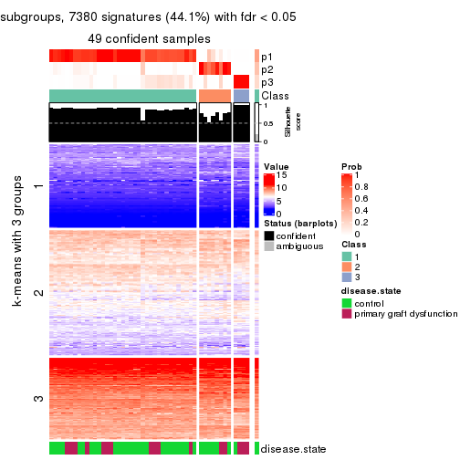
get_signatures(res, k = 4, scale_rows = FALSE)
get_signatures(res, k = 5, scale_rows = FALSE)
get_signatures(res, k = 6, scale_rows = FALSE)
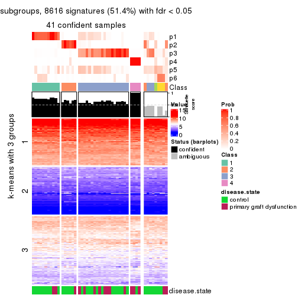
Compare the overlap of signatures from different k:
compare_signatures(res)
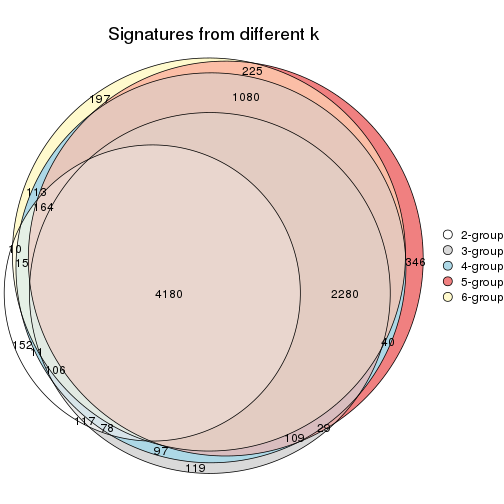
get_signature() returns a data frame invisibly. TO get the list of signatures, the function
call should be assigned to a variable explicitly. In following code, if plot argument is set
to FALSE, no heatmap is plotted while only the differential analysis is performed.
# code only for demonstration
tb = get_signature(res, k = ..., plot = FALSE)
An example of the output of tb is:
#> which_row fdr mean_1 mean_2 scaled_mean_1 scaled_mean_2 km
#> 1 38 0.042760348 8.373488 9.131774 -0.5533452 0.5164555 1
#> 2 40 0.018707592 7.106213 8.469186 -0.6173731 0.5762149 1
#> 3 55 0.019134737 10.221463 11.207825 -0.6159697 0.5749050 1
#> 4 59 0.006059896 5.921854 7.869574 -0.6899429 0.6439467 1
#> 5 60 0.018055526 8.928898 10.211722 -0.6204761 0.5791110 1
#> 6 98 0.009384629 15.714769 14.887706 0.6635654 -0.6193277 2
...
The columns in tb are:
which_row: row indices corresponding to the input matrix.fdr: FDR for the differential test. mean_x: The mean value in group x.scaled_mean_x: The mean value in group x after rows are scaled.km: Row groups if k-means clustering is applied to rows.UMAP plot which shows how samples are separated.
dimension_reduction(res, k = 2, method = "UMAP")
dimension_reduction(res, k = 3, method = "UMAP")

dimension_reduction(res, k = 4, method = "UMAP")
dimension_reduction(res, k = 5, method = "UMAP")
dimension_reduction(res, k = 6, method = "UMAP")
Following heatmap shows how subgroups are split when increasing k:
collect_classes(res)

Test correlation between subgroups and known annotations. If the known annotation is numeric, one-way ANOVA test is applied, and if the known annotation is discrete, chi-squared contingency table test is applied.
test_to_known_factors(res)
#> n disease.state(p) k
#> MAD:hclust 50 0.173 2
#> MAD:hclust 49 0.164 3
#> MAD:hclust 49 0.206 4
#> MAD:hclust 46 0.216 5
#> MAD:hclust 41 0.149 6
If matrix rows can be associated to genes, consider to use GO_Enrichment(res,
...) to perform function enrichment for the signature genes.
The object with results only for a single top-value method and a single partition method can be extracted as:
res = res_list["MAD", "kmeans"]
# you can also extract it by
# res = res_list["MAD:kmeans"]
A summary of res and all the functions that can be applied to it:
res
#> A 'ConsensusPartition' object with k = 2, 3, 4, 5, 6.
#> On a matrix with 16753 rows and 50 columns.
#> Top rows (1000, 2000, 3000, 4000, 5000) are extracted by 'MAD' method.
#> Subgroups are detected by 'kmeans' method.
#> Performed in total 1250 partitions by row resampling.
#> Best k for subgroups seems to be 4.
#>
#> Following methods can be applied to this 'ConsensusPartition' object:
#> [1] "cola_report" "collect_classes" "collect_plots"
#> [4] "collect_stats" "colnames" "compare_signatures"
#> [7] "consensus_heatmap" "dimension_reduction" "functional_enrichment"
#> [10] "get_anno_col" "get_anno" "get_classes"
#> [13] "get_consensus" "get_matrix" "get_membership"
#> [16] "get_param" "get_signatures" "get_stats"
#> [19] "is_best_k" "is_stable_k" "membership_heatmap"
#> [22] "ncol" "nrow" "plot_ecdf"
#> [25] "rownames" "select_partition_number" "show"
#> [28] "suggest_best_k" "test_to_known_factors"
collect_plots() function collects all the plots made from res for all k (number of partitions)
into one single page to provide an easy and fast comparison between different k.
collect_plots(res)
The plots are:
k and the heatmap of
predicted classes for each k.k.k.k.All the plots in panels can be made by individual functions and they are plotted later in this section.
select_partition_number() produces several plots showing different
statistics for choosing “optimized” k. There are following statistics:
k;k, the area increased is defined as \(A_k - A_{k-1}\).The detailed explanations of these statistics can be found in the cola vignette.
Generally speaking, lower PAC score, higher mean silhouette score or higher
concordance corresponds to better partition. Rand index and Jaccard index
measure how similar the current partition is compared to partition with k-1.
If they are too similar, we won't accept k is better than k-1.
select_partition_number(res)
The numeric values for all these statistics can be obtained by get_stats().
get_stats(res)
#> k 1-PAC mean_silhouette concordance area_increased Rand Jaccard
#> 2 2 0.310 0.490 0.709 0.4746 0.530 0.530
#> 3 3 0.491 0.637 0.830 0.3873 0.661 0.439
#> 4 4 0.602 0.753 0.838 0.1157 0.866 0.640
#> 5 5 0.640 0.640 0.754 0.0692 0.914 0.700
#> 6 6 0.685 0.621 0.755 0.0487 0.939 0.736
suggest_best_k() suggests the best \(k\) based on these statistics. The rules are as follows:
NA.suggest_best_k(res)
#> [1] 4
Following shows the table of the partitions (You need to click the show/hide
code output link to see it). The membership matrix (columns with name p*)
is inferred by
clue::cl_consensus()
function with the SE method. Basically the value in the membership matrix
represents the probability to belong to a certain group. The finall class
label for an item is determined with the group with highest probability it
belongs to.
In get_classes() function, the entropy is calculated from the membership
matrix and the silhouette score is calculated from the consensus matrix.
cbind(get_classes(res, k = 2), get_membership(res, k = 2))
#> class entropy silhouette p1 p2
#> GSM198618 2 0.3431 0.6369 0.064 0.936
#> GSM198622 1 0.3431 0.6221 0.936 0.064
#> GSM198623 1 0.8499 0.5307 0.724 0.276
#> GSM198626 1 0.1184 0.6593 0.984 0.016
#> GSM198627 1 0.3431 0.6221 0.936 0.064
#> GSM198628 1 0.0672 0.6556 0.992 0.008
#> GSM198629 1 0.0938 0.6594 0.988 0.012
#> GSM198630 1 0.0672 0.6556 0.992 0.008
#> GSM198631 1 0.0672 0.6556 0.992 0.008
#> GSM198632 1 0.1414 0.6589 0.980 0.020
#> GSM198633 1 0.6973 0.4822 0.812 0.188
#> GSM198634 1 0.3431 0.6221 0.936 0.064
#> GSM198635 1 0.9491 0.0127 0.632 0.368
#> GSM198636 1 0.3431 0.6221 0.936 0.064
#> GSM198639 1 0.9970 0.3532 0.532 0.468
#> GSM198641 2 0.9988 0.2698 0.480 0.520
#> GSM198642 1 0.6623 0.5876 0.828 0.172
#> GSM198643 1 0.0938 0.6594 0.988 0.012
#> GSM198644 2 0.3274 0.6403 0.060 0.940
#> GSM198645 1 0.9795 0.4193 0.584 0.416
#> GSM198649 2 0.3431 0.6369 0.064 0.936
#> GSM198651 2 0.9552 0.4350 0.376 0.624
#> GSM198653 2 0.5408 0.6120 0.124 0.876
#> GSM198654 2 0.9993 -0.2931 0.484 0.516
#> GSM198655 2 0.9129 0.1980 0.328 0.672
#> GSM198656 1 0.9775 0.4156 0.588 0.412
#> GSM198657 1 0.9933 0.3764 0.548 0.452
#> GSM198658 1 0.9977 0.3459 0.528 0.472
#> GSM198659 2 0.7139 0.5850 0.196 0.804
#> GSM198660 1 0.9795 0.4047 0.584 0.416
#> GSM198662 1 0.9977 0.3459 0.528 0.472
#> GSM198663 2 0.9491 0.4396 0.368 0.632
#> GSM198664 2 0.9580 0.4309 0.380 0.620
#> GSM198665 1 0.9977 0.3459 0.528 0.472
#> GSM198616 1 0.0938 0.6594 0.988 0.012
#> GSM198617 1 0.9977 0.3459 0.528 0.472
#> GSM198619 1 0.9209 0.4875 0.664 0.336
#> GSM198620 2 0.2603 0.6407 0.044 0.956
#> GSM198621 1 0.9970 0.3532 0.532 0.468
#> GSM198624 1 0.1843 0.6562 0.972 0.028
#> GSM198625 1 0.3431 0.6221 0.936 0.064
#> GSM198637 1 0.3431 0.6358 0.936 0.064
#> GSM198638 2 0.9866 0.2450 0.432 0.568
#> GSM198640 1 0.1414 0.6589 0.980 0.020
#> GSM198646 2 0.3274 0.6383 0.060 0.940
#> GSM198647 2 0.3431 0.6369 0.064 0.936
#> GSM198648 2 0.7602 0.5694 0.220 0.780
#> GSM198650 2 0.9608 0.0247 0.384 0.616
#> GSM198652 2 0.3274 0.6390 0.060 0.940
#> GSM198661 1 0.9933 0.3764 0.548 0.452
cbind(get_classes(res, k = 3), get_membership(res, k = 3))
#> class entropy silhouette p1 p2 p3
#> GSM198618 3 0.6260 0.00133 0.000 0.448 0.552
#> GSM198622 1 0.4504 0.68476 0.804 0.196 0.000
#> GSM198623 3 0.6587 0.27014 0.424 0.008 0.568
#> GSM198626 1 0.1411 0.84716 0.964 0.000 0.036
#> GSM198627 1 0.1163 0.83325 0.972 0.028 0.000
#> GSM198628 1 0.1411 0.84716 0.964 0.000 0.036
#> GSM198629 1 0.1411 0.84716 0.964 0.000 0.036
#> GSM198630 1 0.1411 0.84716 0.964 0.000 0.036
#> GSM198631 1 0.1411 0.84716 0.964 0.000 0.036
#> GSM198632 1 0.1711 0.84442 0.960 0.008 0.032
#> GSM198633 1 0.8618 0.20507 0.508 0.388 0.104
#> GSM198634 1 0.2261 0.81111 0.932 0.068 0.000
#> GSM198635 1 0.6274 0.17382 0.544 0.456 0.000
#> GSM198636 1 0.2486 0.81193 0.932 0.060 0.008
#> GSM198639 3 0.2625 0.76837 0.084 0.000 0.916
#> GSM198641 2 0.6297 0.34486 0.352 0.640 0.008
#> GSM198642 1 0.6625 0.05814 0.552 0.008 0.440
#> GSM198643 1 0.3965 0.77290 0.860 0.008 0.132
#> GSM198644 2 0.5335 0.66078 0.008 0.760 0.232
#> GSM198645 3 0.4291 0.74817 0.152 0.008 0.840
#> GSM198649 3 0.6309 -0.12759 0.000 0.500 0.500
#> GSM198651 2 0.3213 0.77587 0.092 0.900 0.008
#> GSM198653 2 0.0747 0.78120 0.000 0.984 0.016
#> GSM198654 3 0.1163 0.74815 0.028 0.000 0.972
#> GSM198655 3 0.4413 0.65784 0.024 0.124 0.852
#> GSM198656 3 0.5461 0.65693 0.244 0.008 0.748
#> GSM198657 3 0.3826 0.75973 0.124 0.008 0.868
#> GSM198658 3 0.2066 0.76434 0.060 0.000 0.940
#> GSM198659 2 0.0592 0.78244 0.000 0.988 0.012
#> GSM198660 3 0.4291 0.74824 0.152 0.008 0.840
#> GSM198662 3 0.2625 0.76837 0.084 0.000 0.916
#> GSM198663 2 0.2066 0.78424 0.060 0.940 0.000
#> GSM198664 2 0.2860 0.77802 0.084 0.912 0.004
#> GSM198665 3 0.1753 0.75947 0.048 0.000 0.952
#> GSM198616 1 0.2774 0.83111 0.920 0.008 0.072
#> GSM198617 3 0.2066 0.76434 0.060 0.000 0.940
#> GSM198619 3 0.5254 0.62707 0.264 0.000 0.736
#> GSM198620 2 0.6280 0.12001 0.000 0.540 0.460
#> GSM198621 3 0.2796 0.76802 0.092 0.000 0.908
#> GSM198624 1 0.0661 0.84548 0.988 0.004 0.008
#> GSM198625 1 0.2356 0.80467 0.928 0.072 0.000
#> GSM198637 1 0.1919 0.84255 0.956 0.020 0.024
#> GSM198638 2 0.7542 0.60393 0.120 0.688 0.192
#> GSM198640 1 0.3375 0.80308 0.892 0.008 0.100
#> GSM198646 3 0.6309 -0.12759 0.000 0.500 0.500
#> GSM198647 3 0.5926 0.26104 0.000 0.356 0.644
#> GSM198648 2 0.0592 0.78244 0.000 0.988 0.012
#> GSM198650 3 0.3499 0.70405 0.028 0.072 0.900
#> GSM198652 2 0.5623 0.60536 0.004 0.716 0.280
#> GSM198661 3 0.4033 0.75576 0.136 0.008 0.856
cbind(get_classes(res, k = 4), get_membership(res, k = 4))
#> class entropy silhouette p1 p2 p3 p4
#> GSM198618 4 0.6939 0.336 0.000 0.332 0.128 0.540
#> GSM198622 1 0.5125 0.647 0.720 0.248 0.008 0.024
#> GSM198623 3 0.2408 0.820 0.044 0.000 0.920 0.036
#> GSM198626 1 0.3529 0.825 0.876 0.012 0.068 0.044
#> GSM198627 1 0.0592 0.836 0.984 0.016 0.000 0.000
#> GSM198628 1 0.3697 0.822 0.868 0.012 0.068 0.052
#> GSM198629 1 0.1598 0.842 0.956 0.004 0.020 0.020
#> GSM198630 1 0.3529 0.825 0.876 0.012 0.068 0.044
#> GSM198631 1 0.3614 0.823 0.872 0.012 0.068 0.048
#> GSM198632 1 0.4773 0.793 0.816 0.048 0.100 0.036
#> GSM198633 2 0.7056 0.554 0.160 0.652 0.152 0.036
#> GSM198634 1 0.3344 0.801 0.876 0.092 0.008 0.024
#> GSM198635 2 0.4607 0.642 0.204 0.768 0.004 0.024
#> GSM198636 1 0.3659 0.816 0.872 0.048 0.016 0.064
#> GSM198639 3 0.3375 0.844 0.012 0.008 0.864 0.116
#> GSM198641 2 0.1938 0.749 0.052 0.936 0.000 0.012
#> GSM198642 3 0.4436 0.710 0.148 0.000 0.800 0.052
#> GSM198643 1 0.5992 0.399 0.584 0.008 0.376 0.032
#> GSM198644 2 0.4795 0.555 0.000 0.696 0.012 0.292
#> GSM198645 3 0.1943 0.851 0.016 0.008 0.944 0.032
#> GSM198649 4 0.3266 0.867 0.000 0.040 0.084 0.876
#> GSM198651 2 0.1545 0.753 0.008 0.952 0.000 0.040
#> GSM198653 2 0.3726 0.674 0.000 0.788 0.000 0.212
#> GSM198654 3 0.3157 0.802 0.000 0.004 0.852 0.144
#> GSM198655 3 0.5955 0.502 0.000 0.056 0.616 0.328
#> GSM198656 3 0.2411 0.821 0.040 0.000 0.920 0.040
#> GSM198657 3 0.1059 0.852 0.012 0.000 0.972 0.016
#> GSM198658 3 0.2053 0.853 0.000 0.004 0.924 0.072
#> GSM198659 2 0.3105 0.738 0.012 0.868 0.000 0.120
#> GSM198660 3 0.2870 0.841 0.044 0.012 0.908 0.036
#> GSM198662 3 0.1661 0.858 0.004 0.000 0.944 0.052
#> GSM198663 2 0.1510 0.756 0.016 0.956 0.000 0.028
#> GSM198664 2 0.2019 0.752 0.032 0.940 0.004 0.024
#> GSM198665 3 0.2334 0.851 0.000 0.004 0.908 0.088
#> GSM198616 1 0.3812 0.811 0.848 0.008 0.116 0.028
#> GSM198617 3 0.3470 0.834 0.008 0.008 0.852 0.132
#> GSM198619 3 0.4549 0.810 0.076 0.008 0.816 0.100
#> GSM198620 4 0.3245 0.853 0.000 0.056 0.064 0.880
#> GSM198621 3 0.3375 0.844 0.012 0.008 0.864 0.116
#> GSM198624 1 0.1878 0.841 0.944 0.008 0.040 0.008
#> GSM198625 1 0.1833 0.835 0.944 0.032 0.000 0.024
#> GSM198637 1 0.5174 0.780 0.796 0.080 0.088 0.036
#> GSM198638 2 0.6858 0.555 0.084 0.668 0.196 0.052
#> GSM198640 1 0.6049 0.723 0.716 0.052 0.192 0.040
#> GSM198646 4 0.2984 0.868 0.000 0.028 0.084 0.888
#> GSM198647 4 0.2805 0.857 0.000 0.012 0.100 0.888
#> GSM198648 2 0.3569 0.675 0.000 0.804 0.000 0.196
#> GSM198650 3 0.4509 0.625 0.000 0.004 0.708 0.288
#> GSM198652 2 0.5173 0.502 0.000 0.660 0.020 0.320
#> GSM198661 3 0.1182 0.851 0.016 0.000 0.968 0.016
cbind(get_classes(res, k = 5), get_membership(res, k = 5))
#> class entropy silhouette p1 p2 p3 p4 p5
#> GSM198618 4 0.6475 0.577 0.000 0.132 0.088 0.640 0.140
#> GSM198622 5 0.6160 0.464 0.284 0.172 0.000 0.000 0.544
#> GSM198623 3 0.3342 0.763 0.100 0.000 0.848 0.004 0.048
#> GSM198626 1 0.0771 0.787 0.976 0.000 0.020 0.000 0.004
#> GSM198627 1 0.2612 0.752 0.868 0.008 0.000 0.000 0.124
#> GSM198628 1 0.0968 0.782 0.972 0.000 0.012 0.012 0.004
#> GSM198629 1 0.2771 0.741 0.860 0.000 0.012 0.000 0.128
#> GSM198630 1 0.0404 0.787 0.988 0.000 0.012 0.000 0.000
#> GSM198631 1 0.0693 0.784 0.980 0.000 0.012 0.008 0.000
#> GSM198632 5 0.4929 0.413 0.340 0.000 0.032 0.004 0.624
#> GSM198633 5 0.5339 0.463 0.028 0.260 0.036 0.004 0.672
#> GSM198634 5 0.5000 0.349 0.388 0.036 0.000 0.000 0.576
#> GSM198635 5 0.5550 0.315 0.072 0.400 0.000 0.000 0.528
#> GSM198636 1 0.3496 0.735 0.840 0.028 0.000 0.016 0.116
#> GSM198639 3 0.4325 0.694 0.000 0.000 0.736 0.044 0.220
#> GSM198641 2 0.1914 0.768 0.008 0.928 0.000 0.008 0.056
#> GSM198642 3 0.4804 0.664 0.224 0.000 0.716 0.012 0.048
#> GSM198643 5 0.6536 0.239 0.216 0.000 0.320 0.000 0.464
#> GSM198644 2 0.6333 0.557 0.000 0.592 0.024 0.140 0.244
#> GSM198645 3 0.4116 0.728 0.028 0.000 0.756 0.004 0.212
#> GSM198649 4 0.1195 0.900 0.000 0.012 0.028 0.960 0.000
#> GSM198651 2 0.2351 0.767 0.000 0.896 0.000 0.016 0.088
#> GSM198653 2 0.3075 0.750 0.000 0.860 0.000 0.092 0.048
#> GSM198654 3 0.2962 0.747 0.000 0.000 0.868 0.048 0.084
#> GSM198655 3 0.7788 0.308 0.004 0.104 0.484 0.176 0.232
#> GSM198656 3 0.2965 0.779 0.068 0.000 0.880 0.012 0.040
#> GSM198657 3 0.2153 0.788 0.044 0.000 0.916 0.000 0.040
#> GSM198658 3 0.0865 0.791 0.000 0.000 0.972 0.024 0.004
#> GSM198659 2 0.3216 0.742 0.000 0.848 0.000 0.044 0.108
#> GSM198660 3 0.1956 0.793 0.000 0.000 0.916 0.008 0.076
#> GSM198662 3 0.0290 0.795 0.000 0.000 0.992 0.008 0.000
#> GSM198663 2 0.2177 0.749 0.004 0.908 0.000 0.008 0.080
#> GSM198664 2 0.3957 0.517 0.000 0.712 0.000 0.008 0.280
#> GSM198665 3 0.1893 0.789 0.000 0.000 0.928 0.024 0.048
#> GSM198616 1 0.5599 -0.138 0.484 0.000 0.072 0.000 0.444
#> GSM198617 3 0.4199 0.727 0.000 0.000 0.764 0.056 0.180
#> GSM198619 3 0.5983 0.376 0.048 0.000 0.548 0.036 0.368
#> GSM198620 4 0.1278 0.891 0.000 0.020 0.016 0.960 0.004
#> GSM198621 3 0.4170 0.718 0.000 0.000 0.760 0.048 0.192
#> GSM198624 1 0.4540 0.386 0.640 0.000 0.020 0.000 0.340
#> GSM198625 1 0.2361 0.763 0.892 0.012 0.000 0.000 0.096
#> GSM198637 5 0.5023 0.505 0.272 0.024 0.028 0.000 0.676
#> GSM198638 5 0.5671 0.302 0.000 0.308 0.092 0.004 0.596
#> GSM198640 5 0.5630 0.495 0.216 0.004 0.120 0.004 0.656
#> GSM198646 4 0.0955 0.900 0.000 0.004 0.028 0.968 0.000
#> GSM198647 4 0.1168 0.896 0.000 0.000 0.032 0.960 0.008
#> GSM198648 2 0.2423 0.762 0.000 0.896 0.000 0.080 0.024
#> GSM198650 3 0.5585 0.541 0.000 0.004 0.644 0.232 0.120
#> GSM198652 2 0.6598 0.516 0.000 0.568 0.028 0.168 0.236
#> GSM198661 3 0.2153 0.788 0.044 0.000 0.916 0.000 0.040
cbind(get_classes(res, k = 6), get_membership(res, k = 6))
#> class entropy silhouette p1 p2 p3 p4 p5 p6
#> GSM198618 4 0.6830 0.3366 0.000 0.032 0.080 0.564 0.148 0.176
#> GSM198622 5 0.5444 0.4882 0.092 0.244 0.000 0.000 0.628 0.036
#> GSM198623 3 0.2458 0.6976 0.068 0.000 0.892 0.000 0.024 0.016
#> GSM198626 1 0.0551 0.8412 0.984 0.000 0.004 0.000 0.008 0.004
#> GSM198627 1 0.3168 0.7839 0.820 0.004 0.000 0.000 0.148 0.028
#> GSM198628 1 0.1080 0.8309 0.960 0.000 0.004 0.000 0.004 0.032
#> GSM198629 1 0.2979 0.7418 0.804 0.000 0.004 0.000 0.188 0.004
#> GSM198630 1 0.0436 0.8409 0.988 0.000 0.004 0.000 0.004 0.004
#> GSM198631 1 0.0858 0.8314 0.968 0.000 0.004 0.000 0.000 0.028
#> GSM198632 5 0.2932 0.6444 0.080 0.000 0.028 0.004 0.868 0.020
#> GSM198633 5 0.5588 0.5648 0.008 0.140 0.044 0.004 0.676 0.128
#> GSM198634 5 0.4514 0.5621 0.152 0.068 0.000 0.000 0.744 0.036
#> GSM198635 5 0.4897 0.4051 0.028 0.312 0.000 0.000 0.624 0.036
#> GSM198636 1 0.3236 0.7720 0.820 0.004 0.000 0.000 0.036 0.140
#> GSM198639 3 0.6140 0.4104 0.000 0.000 0.460 0.008 0.272 0.260
#> GSM198641 2 0.2581 0.6609 0.000 0.856 0.000 0.000 0.016 0.128
#> GSM198642 3 0.4230 0.5657 0.196 0.000 0.740 0.000 0.020 0.044
#> GSM198643 5 0.5275 0.4750 0.048 0.000 0.200 0.000 0.668 0.084
#> GSM198644 6 0.4850 0.6331 0.000 0.232 0.024 0.036 0.016 0.692
#> GSM198645 3 0.5196 0.6020 0.024 0.000 0.680 0.004 0.172 0.120
#> GSM198649 4 0.0291 0.8640 0.000 0.000 0.004 0.992 0.000 0.004
#> GSM198651 2 0.3690 0.4095 0.000 0.684 0.000 0.000 0.008 0.308
#> GSM198653 2 0.3753 0.5239 0.000 0.748 0.000 0.028 0.004 0.220
#> GSM198654 3 0.3492 0.6785 0.000 0.000 0.796 0.016 0.020 0.168
#> GSM198655 6 0.4743 0.4827 0.004 0.016 0.216 0.056 0.004 0.704
#> GSM198656 3 0.2818 0.6912 0.052 0.000 0.876 0.000 0.024 0.048
#> GSM198657 3 0.1528 0.7131 0.028 0.000 0.944 0.000 0.016 0.012
#> GSM198658 3 0.2745 0.7093 0.000 0.000 0.860 0.008 0.020 0.112
#> GSM198659 2 0.3119 0.6903 0.000 0.856 0.000 0.036 0.076 0.032
#> GSM198660 3 0.2278 0.7241 0.000 0.000 0.900 0.004 0.044 0.052
#> GSM198662 3 0.1845 0.7243 0.000 0.000 0.916 0.004 0.008 0.072
#> GSM198663 2 0.0458 0.7154 0.000 0.984 0.000 0.000 0.016 0.000
#> GSM198664 2 0.4342 0.4774 0.000 0.692 0.000 0.004 0.252 0.052
#> GSM198665 3 0.3596 0.6692 0.000 0.000 0.760 0.008 0.016 0.216
#> GSM198616 5 0.5622 0.4589 0.204 0.000 0.072 0.000 0.640 0.084
#> GSM198617 3 0.6079 0.5200 0.000 0.000 0.520 0.020 0.196 0.264
#> GSM198619 5 0.6418 0.0907 0.020 0.000 0.272 0.008 0.488 0.212
#> GSM198620 4 0.0260 0.8617 0.000 0.000 0.000 0.992 0.000 0.008
#> GSM198621 3 0.6029 0.4650 0.000 0.000 0.492 0.008 0.240 0.260
#> GSM198624 1 0.4521 0.1562 0.524 0.000 0.004 0.000 0.448 0.024
#> GSM198625 1 0.2069 0.8249 0.908 0.004 0.000 0.000 0.068 0.020
#> GSM198637 5 0.3277 0.6299 0.040 0.008 0.016 0.000 0.848 0.088
#> GSM198638 5 0.6244 0.5115 0.000 0.144 0.100 0.004 0.604 0.148
#> GSM198640 5 0.5245 0.5910 0.044 0.008 0.116 0.004 0.712 0.116
#> GSM198646 4 0.0291 0.8648 0.000 0.000 0.004 0.992 0.000 0.004
#> GSM198647 4 0.0291 0.8648 0.000 0.000 0.004 0.992 0.000 0.004
#> GSM198648 2 0.1434 0.7039 0.000 0.940 0.000 0.048 0.000 0.012
#> GSM198650 3 0.6522 0.4407 0.000 0.000 0.516 0.180 0.064 0.240
#> GSM198652 6 0.5590 0.5862 0.000 0.272 0.024 0.056 0.028 0.620
#> GSM198661 3 0.1528 0.7131 0.028 0.000 0.944 0.000 0.016 0.012
Heatmaps for the consensus matrix. It visualizes the probability of two samples to be in a same group.
consensus_heatmap(res, k = 2)
consensus_heatmap(res, k = 3)

consensus_heatmap(res, k = 4)

consensus_heatmap(res, k = 5)
consensus_heatmap(res, k = 6)
Heatmaps for the membership of samples in all partitions to see how consistent they are:
membership_heatmap(res, k = 2)
membership_heatmap(res, k = 3)
membership_heatmap(res, k = 4)
membership_heatmap(res, k = 5)
membership_heatmap(res, k = 6)
As soon as we have had the classes for columns, we can look for signatures which are significantly different between classes which can be candidate marks for certain classes. Following are the heatmaps for signatures.
Signature heatmaps where rows are scaled:
get_signatures(res, k = 2)
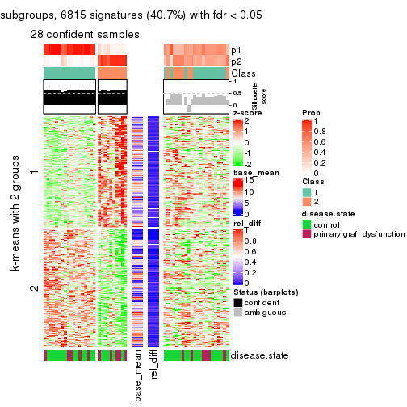
get_signatures(res, k = 3)
get_signatures(res, k = 4)
get_signatures(res, k = 5)
get_signatures(res, k = 6)
Signature heatmaps where rows are not scaled:
get_signatures(res, k = 2, scale_rows = FALSE)
get_signatures(res, k = 3, scale_rows = FALSE)
get_signatures(res, k = 4, scale_rows = FALSE)
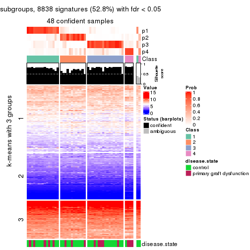
get_signatures(res, k = 5, scale_rows = FALSE)
get_signatures(res, k = 6, scale_rows = FALSE)
Compare the overlap of signatures from different k:
compare_signatures(res)
get_signature() returns a data frame invisibly. TO get the list of signatures, the function
call should be assigned to a variable explicitly. In following code, if plot argument is set
to FALSE, no heatmap is plotted while only the differential analysis is performed.
# code only for demonstration
tb = get_signature(res, k = ..., plot = FALSE)
An example of the output of tb is:
#> which_row fdr mean_1 mean_2 scaled_mean_1 scaled_mean_2 km
#> 1 38 0.042760348 8.373488 9.131774 -0.5533452 0.5164555 1
#> 2 40 0.018707592 7.106213 8.469186 -0.6173731 0.5762149 1
#> 3 55 0.019134737 10.221463 11.207825 -0.6159697 0.5749050 1
#> 4 59 0.006059896 5.921854 7.869574 -0.6899429 0.6439467 1
#> 5 60 0.018055526 8.928898 10.211722 -0.6204761 0.5791110 1
#> 6 98 0.009384629 15.714769 14.887706 0.6635654 -0.6193277 2
...
The columns in tb are:
which_row: row indices corresponding to the input matrix.fdr: FDR for the differential test. mean_x: The mean value in group x.scaled_mean_x: The mean value in group x after rows are scaled.km: Row groups if k-means clustering is applied to rows.UMAP plot which shows how samples are separated.
dimension_reduction(res, k = 2, method = "UMAP")
dimension_reduction(res, k = 3, method = "UMAP")
dimension_reduction(res, k = 4, method = "UMAP")
dimension_reduction(res, k = 5, method = "UMAP")
dimension_reduction(res, k = 6, method = "UMAP")
Following heatmap shows how subgroups are split when increasing k:
collect_classes(res)
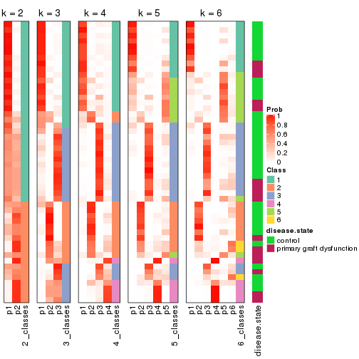
Test correlation between subgroups and known annotations. If the known annotation is numeric, one-way ANOVA test is applied, and if the known annotation is discrete, chi-squared contingency table test is applied.
test_to_known_factors(res)
#> n disease.state(p) k
#> MAD:kmeans 28 0.445 2
#> MAD:kmeans 40 0.991 3
#> MAD:kmeans 48 0.306 4
#> MAD:kmeans 38 0.193 5
#> MAD:kmeans 37 0.165 6
If matrix rows can be associated to genes, consider to use GO_Enrichment(res,
...) to perform function enrichment for the signature genes.
The object with results only for a single top-value method and a single partition method can be extracted as:
res = res_list["MAD", "skmeans"]
# you can also extract it by
# res = res_list["MAD:skmeans"]
A summary of res and all the functions that can be applied to it:
res
#> A 'ConsensusPartition' object with k = 2, 3, 4, 5, 6.
#> On a matrix with 16753 rows and 50 columns.
#> Top rows (1000, 2000, 3000, 4000, 5000) are extracted by 'MAD' method.
#> Subgroups are detected by 'skmeans' method.
#> Performed in total 1250 partitions by row resampling.
#> Best k for subgroups seems to be 3.
#>
#> Following methods can be applied to this 'ConsensusPartition' object:
#> [1] "cola_report" "collect_classes" "collect_plots"
#> [4] "collect_stats" "colnames" "compare_signatures"
#> [7] "consensus_heatmap" "dimension_reduction" "functional_enrichment"
#> [10] "get_anno_col" "get_anno" "get_classes"
#> [13] "get_consensus" "get_matrix" "get_membership"
#> [16] "get_param" "get_signatures" "get_stats"
#> [19] "is_best_k" "is_stable_k" "membership_heatmap"
#> [22] "ncol" "nrow" "plot_ecdf"
#> [25] "rownames" "select_partition_number" "show"
#> [28] "suggest_best_k" "test_to_known_factors"
collect_plots() function collects all the plots made from res for all k (number of partitions)
into one single page to provide an easy and fast comparison between different k.
collect_plots(res)
The plots are:
k and the heatmap of
predicted classes for each k.k.k.k.All the plots in panels can be made by individual functions and they are plotted later in this section.
select_partition_number() produces several plots showing different
statistics for choosing “optimized” k. There are following statistics:
k;k, the area increased is defined as \(A_k - A_{k-1}\).The detailed explanations of these statistics can be found in the cola vignette.
Generally speaking, lower PAC score, higher mean silhouette score or higher
concordance corresponds to better partition. Rand index and Jaccard index
measure how similar the current partition is compared to partition with k-1.
If they are too similar, we won't accept k is better than k-1.
select_partition_number(res)
The numeric values for all these statistics can be obtained by get_stats().
get_stats(res)
#> k 1-PAC mean_silhouette concordance area_increased Rand Jaccard
#> 2 2 0.836 0.858 0.930 0.5095 0.491 0.491
#> 3 3 0.865 0.870 0.947 0.3316 0.743 0.519
#> 4 4 0.704 0.761 0.860 0.1162 0.856 0.594
#> 5 5 0.654 0.539 0.760 0.0666 0.885 0.578
#> 6 6 0.684 0.497 0.731 0.0397 0.940 0.710
suggest_best_k() suggests the best \(k\) based on these statistics. The rules are as follows:
NA.suggest_best_k(res)
#> [1] 3
Following shows the table of the partitions (You need to click the show/hide
code output link to see it). The membership matrix (columns with name p*)
is inferred by
clue::cl_consensus()
function with the SE method. Basically the value in the membership matrix
represents the probability to belong to a certain group. The finall class
label for an item is determined with the group with highest probability it
belongs to.
In get_classes() function, the entropy is calculated from the membership
matrix and the silhouette score is calculated from the consensus matrix.
cbind(get_classes(res, k = 2), get_membership(res, k = 2))
#> class entropy silhouette p1 p2
#> GSM198618 2 0.0000 0.932 0.000 1.000
#> GSM198622 1 0.0376 0.917 0.996 0.004
#> GSM198623 2 0.8713 0.634 0.292 0.708
#> GSM198626 1 0.0000 0.918 1.000 0.000
#> GSM198627 1 0.0000 0.918 1.000 0.000
#> GSM198628 1 0.0000 0.918 1.000 0.000
#> GSM198629 1 0.0000 0.918 1.000 0.000
#> GSM198630 1 0.0000 0.918 1.000 0.000
#> GSM198631 1 0.0000 0.918 1.000 0.000
#> GSM198632 1 0.0000 0.918 1.000 0.000
#> GSM198633 1 0.2778 0.900 0.952 0.048
#> GSM198634 1 0.0000 0.918 1.000 0.000
#> GSM198635 1 0.2778 0.900 0.952 0.048
#> GSM198636 1 0.1414 0.911 0.980 0.020
#> GSM198639 2 0.2948 0.931 0.052 0.948
#> GSM198641 1 0.2778 0.900 0.952 0.048
#> GSM198642 2 0.9963 0.227 0.464 0.536
#> GSM198643 1 0.0000 0.918 1.000 0.000
#> GSM198644 2 0.0000 0.932 0.000 1.000
#> GSM198645 2 0.3879 0.914 0.076 0.924
#> GSM198649 2 0.0000 0.932 0.000 1.000
#> GSM198651 1 0.3733 0.889 0.928 0.072
#> GSM198653 1 0.9977 0.261 0.528 0.472
#> GSM198654 2 0.0376 0.933 0.004 0.996
#> GSM198655 2 0.0000 0.932 0.000 1.000
#> GSM198656 2 0.2778 0.932 0.048 0.952
#> GSM198657 2 0.2778 0.932 0.048 0.952
#> GSM198658 2 0.2236 0.935 0.036 0.964
#> GSM198659 1 0.9933 0.315 0.548 0.452
#> GSM198660 2 0.3114 0.930 0.056 0.944
#> GSM198662 2 0.2778 0.932 0.048 0.952
#> GSM198663 1 0.3733 0.889 0.928 0.072
#> GSM198664 1 0.3733 0.889 0.928 0.072
#> GSM198665 2 0.2043 0.935 0.032 0.968
#> GSM198616 1 0.0000 0.918 1.000 0.000
#> GSM198617 2 0.2236 0.935 0.036 0.964
#> GSM198619 2 0.6887 0.799 0.184 0.816
#> GSM198620 2 0.0000 0.932 0.000 1.000
#> GSM198621 2 0.2948 0.931 0.052 0.948
#> GSM198624 1 0.0000 0.918 1.000 0.000
#> GSM198625 1 0.0000 0.918 1.000 0.000
#> GSM198637 1 0.0000 0.918 1.000 0.000
#> GSM198638 1 0.9661 0.466 0.608 0.392
#> GSM198640 1 0.0000 0.918 1.000 0.000
#> GSM198646 2 0.0000 0.932 0.000 1.000
#> GSM198647 2 0.0000 0.932 0.000 1.000
#> GSM198648 1 0.9000 0.607 0.684 0.316
#> GSM198650 2 0.0000 0.932 0.000 1.000
#> GSM198652 2 0.0000 0.932 0.000 1.000
#> GSM198661 2 0.2778 0.932 0.048 0.952
cbind(get_classes(res, k = 3), get_membership(res, k = 3))
#> class entropy silhouette p1 p2 p3
#> GSM198618 2 0.1529 0.9062 0.000 0.960 0.040
#> GSM198622 1 0.0892 0.9600 0.980 0.020 0.000
#> GSM198623 3 0.0892 0.9072 0.020 0.000 0.980
#> GSM198626 1 0.0000 0.9759 1.000 0.000 0.000
#> GSM198627 1 0.0000 0.9759 1.000 0.000 0.000
#> GSM198628 1 0.0000 0.9759 1.000 0.000 0.000
#> GSM198629 1 0.0000 0.9759 1.000 0.000 0.000
#> GSM198630 1 0.0000 0.9759 1.000 0.000 0.000
#> GSM198631 1 0.0000 0.9759 1.000 0.000 0.000
#> GSM198632 1 0.0000 0.9759 1.000 0.000 0.000
#> GSM198633 2 0.7484 0.0350 0.460 0.504 0.036
#> GSM198634 1 0.0000 0.9759 1.000 0.000 0.000
#> GSM198635 1 0.5465 0.5858 0.712 0.288 0.000
#> GSM198636 1 0.0237 0.9731 0.996 0.004 0.000
#> GSM198639 3 0.0000 0.9174 0.000 0.000 1.000
#> GSM198641 2 0.1529 0.8977 0.040 0.960 0.000
#> GSM198642 3 0.5291 0.6322 0.268 0.000 0.732
#> GSM198643 1 0.0000 0.9759 1.000 0.000 0.000
#> GSM198644 2 0.0000 0.9227 0.000 1.000 0.000
#> GSM198645 3 0.0237 0.9158 0.004 0.000 0.996
#> GSM198649 2 0.4178 0.7715 0.000 0.828 0.172
#> GSM198651 2 0.0000 0.9227 0.000 1.000 0.000
#> GSM198653 2 0.0000 0.9227 0.000 1.000 0.000
#> GSM198654 3 0.0000 0.9174 0.000 0.000 1.000
#> GSM198655 3 0.5706 0.5403 0.000 0.320 0.680
#> GSM198656 3 0.0747 0.9099 0.016 0.000 0.984
#> GSM198657 3 0.0000 0.9174 0.000 0.000 1.000
#> GSM198658 3 0.0000 0.9174 0.000 0.000 1.000
#> GSM198659 2 0.0000 0.9227 0.000 1.000 0.000
#> GSM198660 3 0.0000 0.9174 0.000 0.000 1.000
#> GSM198662 3 0.0000 0.9174 0.000 0.000 1.000
#> GSM198663 2 0.0000 0.9227 0.000 1.000 0.000
#> GSM198664 2 0.0000 0.9227 0.000 1.000 0.000
#> GSM198665 3 0.0000 0.9174 0.000 0.000 1.000
#> GSM198616 1 0.0000 0.9759 1.000 0.000 0.000
#> GSM198617 3 0.0000 0.9174 0.000 0.000 1.000
#> GSM198619 3 0.3116 0.8347 0.108 0.000 0.892
#> GSM198620 2 0.0747 0.9168 0.000 0.984 0.016
#> GSM198621 3 0.0000 0.9174 0.000 0.000 1.000
#> GSM198624 1 0.0000 0.9759 1.000 0.000 0.000
#> GSM198625 1 0.0000 0.9759 1.000 0.000 0.000
#> GSM198637 1 0.0000 0.9759 1.000 0.000 0.000
#> GSM198638 2 0.2165 0.8835 0.000 0.936 0.064
#> GSM198640 1 0.1860 0.9271 0.948 0.000 0.052
#> GSM198646 2 0.3941 0.7889 0.000 0.844 0.156
#> GSM198647 3 0.6307 -0.0147 0.000 0.488 0.512
#> GSM198648 2 0.0000 0.9227 0.000 1.000 0.000
#> GSM198650 3 0.2356 0.8657 0.000 0.072 0.928
#> GSM198652 2 0.0237 0.9217 0.000 0.996 0.004
#> GSM198661 3 0.0000 0.9174 0.000 0.000 1.000
cbind(get_classes(res, k = 4), get_membership(res, k = 4))
#> class entropy silhouette p1 p2 p3 p4
#> GSM198618 4 0.2335 0.653 0.000 0.060 0.020 0.920
#> GSM198622 1 0.4898 0.457 0.584 0.416 0.000 0.000
#> GSM198623 3 0.0469 0.909 0.012 0.000 0.988 0.000
#> GSM198626 1 0.1484 0.893 0.960 0.004 0.020 0.016
#> GSM198627 1 0.0000 0.894 1.000 0.000 0.000 0.000
#> GSM198628 1 0.1484 0.893 0.960 0.004 0.020 0.016
#> GSM198629 1 0.0712 0.893 0.984 0.004 0.004 0.008
#> GSM198630 1 0.1484 0.893 0.960 0.004 0.020 0.016
#> GSM198631 1 0.1484 0.893 0.960 0.004 0.020 0.016
#> GSM198632 1 0.1639 0.888 0.952 0.036 0.004 0.008
#> GSM198633 2 0.1635 0.793 0.044 0.948 0.008 0.000
#> GSM198634 1 0.4072 0.735 0.748 0.252 0.000 0.000
#> GSM198635 2 0.2149 0.762 0.088 0.912 0.000 0.000
#> GSM198636 1 0.2222 0.884 0.932 0.032 0.004 0.032
#> GSM198639 4 0.5088 0.404 0.004 0.000 0.424 0.572
#> GSM198641 2 0.1059 0.814 0.012 0.972 0.000 0.016
#> GSM198642 3 0.3625 0.715 0.160 0.000 0.828 0.012
#> GSM198643 1 0.3415 0.818 0.856 0.008 0.128 0.008
#> GSM198644 2 0.4933 0.555 0.000 0.568 0.000 0.432
#> GSM198645 3 0.0188 0.913 0.000 0.000 0.996 0.004
#> GSM198649 4 0.1297 0.692 0.000 0.016 0.020 0.964
#> GSM198651 2 0.3400 0.790 0.000 0.820 0.000 0.180
#> GSM198653 2 0.4454 0.705 0.000 0.692 0.000 0.308
#> GSM198654 3 0.2408 0.863 0.000 0.000 0.896 0.104
#> GSM198655 4 0.4290 0.630 0.000 0.036 0.164 0.800
#> GSM198656 3 0.1042 0.900 0.020 0.000 0.972 0.008
#> GSM198657 3 0.0000 0.913 0.000 0.000 1.000 0.000
#> GSM198658 3 0.2011 0.880 0.000 0.000 0.920 0.080
#> GSM198659 2 0.3626 0.795 0.004 0.812 0.000 0.184
#> GSM198660 3 0.1674 0.896 0.004 0.032 0.952 0.012
#> GSM198662 3 0.1716 0.891 0.000 0.000 0.936 0.064
#> GSM198663 2 0.0779 0.817 0.004 0.980 0.000 0.016
#> GSM198664 2 0.0657 0.816 0.004 0.984 0.000 0.012
#> GSM198665 3 0.2647 0.834 0.000 0.000 0.880 0.120
#> GSM198616 1 0.1690 0.887 0.952 0.008 0.032 0.008
#> GSM198617 4 0.4941 0.380 0.000 0.000 0.436 0.564
#> GSM198619 4 0.7647 0.424 0.232 0.008 0.240 0.520
#> GSM198620 4 0.0817 0.675 0.000 0.024 0.000 0.976
#> GSM198621 4 0.4948 0.376 0.000 0.000 0.440 0.560
#> GSM198624 1 0.0524 0.894 0.988 0.004 0.008 0.000
#> GSM198625 1 0.2635 0.876 0.908 0.072 0.004 0.016
#> GSM198637 1 0.4114 0.782 0.788 0.200 0.004 0.008
#> GSM198638 2 0.2039 0.803 0.008 0.940 0.036 0.016
#> GSM198640 1 0.5501 0.777 0.744 0.112 0.140 0.004
#> GSM198646 4 0.1182 0.689 0.000 0.016 0.016 0.968
#> GSM198647 4 0.1388 0.694 0.000 0.012 0.028 0.960
#> GSM198648 2 0.3400 0.797 0.000 0.820 0.000 0.180
#> GSM198650 4 0.4746 0.448 0.000 0.000 0.368 0.632
#> GSM198652 2 0.4916 0.567 0.000 0.576 0.000 0.424
#> GSM198661 3 0.0000 0.913 0.000 0.000 1.000 0.000
cbind(get_classes(res, k = 5), get_membership(res, k = 5))
#> class entropy silhouette p1 p2 p3 p4 p5
#> GSM198618 4 0.1830 0.63690 0.000 0.052 0.004 0.932 0.012
#> GSM198622 2 0.6380 0.25365 0.224 0.516 0.000 0.000 0.260
#> GSM198623 3 0.0865 0.88587 0.024 0.000 0.972 0.000 0.004
#> GSM198626 1 0.0771 0.74666 0.976 0.000 0.004 0.000 0.020
#> GSM198627 1 0.2753 0.69932 0.856 0.008 0.000 0.000 0.136
#> GSM198628 1 0.0162 0.74844 0.996 0.000 0.004 0.000 0.000
#> GSM198629 1 0.3508 0.55035 0.748 0.000 0.000 0.000 0.252
#> GSM198630 1 0.0162 0.74844 0.996 0.000 0.004 0.000 0.000
#> GSM198631 1 0.0162 0.74844 0.996 0.000 0.004 0.000 0.000
#> GSM198632 5 0.5452 -0.14799 0.448 0.060 0.000 0.000 0.492
#> GSM198633 2 0.3870 0.62934 0.000 0.732 0.004 0.004 0.260
#> GSM198634 1 0.6584 0.21705 0.468 0.260 0.000 0.000 0.272
#> GSM198635 2 0.3779 0.64179 0.024 0.776 0.000 0.000 0.200
#> GSM198636 1 0.3115 0.64428 0.852 0.036 0.000 0.000 0.112
#> GSM198639 5 0.6095 0.09988 0.000 0.000 0.124 0.416 0.460
#> GSM198641 2 0.2615 0.69535 0.020 0.892 0.000 0.008 0.080
#> GSM198642 3 0.2890 0.78384 0.160 0.000 0.836 0.000 0.004
#> GSM198643 5 0.5880 0.25979 0.304 0.000 0.128 0.000 0.568
#> GSM198644 4 0.6818 0.12896 0.032 0.340 0.000 0.492 0.136
#> GSM198645 3 0.2945 0.84888 0.020 0.004 0.880 0.012 0.084
#> GSM198649 4 0.0451 0.64582 0.000 0.008 0.004 0.988 0.000
#> GSM198651 2 0.4885 0.58910 0.024 0.756 0.000 0.116 0.104
#> GSM198653 2 0.5420 0.32286 0.000 0.592 0.000 0.332 0.076
#> GSM198654 3 0.3362 0.84064 0.000 0.000 0.844 0.076 0.080
#> GSM198655 4 0.7639 0.48743 0.056 0.072 0.104 0.568 0.200
#> GSM198656 3 0.1544 0.86844 0.068 0.000 0.932 0.000 0.000
#> GSM198657 3 0.0290 0.88883 0.008 0.000 0.992 0.000 0.000
#> GSM198658 3 0.2782 0.86035 0.000 0.000 0.880 0.048 0.072
#> GSM198659 2 0.4109 0.51024 0.000 0.700 0.000 0.288 0.012
#> GSM198660 3 0.2313 0.87357 0.000 0.040 0.912 0.004 0.044
#> GSM198662 3 0.2344 0.87123 0.000 0.000 0.904 0.032 0.064
#> GSM198663 2 0.0510 0.70134 0.000 0.984 0.000 0.016 0.000
#> GSM198664 2 0.2011 0.69944 0.000 0.908 0.000 0.004 0.088
#> GSM198665 3 0.4183 0.78187 0.000 0.000 0.780 0.084 0.136
#> GSM198616 5 0.4557 -0.00560 0.476 0.000 0.008 0.000 0.516
#> GSM198617 4 0.6593 -0.14394 0.000 0.000 0.220 0.440 0.340
#> GSM198619 5 0.5901 0.32840 0.048 0.000 0.044 0.304 0.604
#> GSM198620 4 0.0579 0.64593 0.000 0.008 0.000 0.984 0.008
#> GSM198621 5 0.6554 0.04240 0.000 0.000 0.200 0.396 0.404
#> GSM198624 1 0.3231 0.63519 0.800 0.004 0.000 0.000 0.196
#> GSM198625 1 0.1701 0.73579 0.936 0.048 0.000 0.000 0.016
#> GSM198637 5 0.5555 0.24723 0.232 0.132 0.000 0.000 0.636
#> GSM198638 2 0.4219 0.66065 0.000 0.772 0.024 0.020 0.184
#> GSM198640 1 0.7953 0.10315 0.396 0.168 0.096 0.004 0.336
#> GSM198646 4 0.0290 0.64250 0.000 0.000 0.000 0.992 0.008
#> GSM198647 4 0.1106 0.62669 0.000 0.000 0.012 0.964 0.024
#> GSM198648 2 0.4665 0.51500 0.000 0.692 0.000 0.260 0.048
#> GSM198650 4 0.6291 0.28439 0.000 0.004 0.280 0.544 0.172
#> GSM198652 4 0.6404 0.00271 0.000 0.408 0.008 0.452 0.132
#> GSM198661 3 0.0290 0.88883 0.008 0.000 0.992 0.000 0.000
cbind(get_classes(res, k = 6), get_membership(res, k = 6))
#> class entropy silhouette p1 p2 p3 p4 p5 p6
#> GSM198618 4 0.1605 0.71723 0.000 0.016 0.004 0.936 0.044 0.000
#> GSM198622 2 0.7377 -0.11610 0.188 0.408 0.000 0.000 0.172 0.232
#> GSM198623 3 0.1480 0.80811 0.040 0.000 0.940 0.000 0.020 0.000
#> GSM198626 1 0.0603 0.78780 0.980 0.000 0.004 0.000 0.000 0.016
#> GSM198627 1 0.3542 0.70507 0.784 0.016 0.000 0.000 0.016 0.184
#> GSM198628 1 0.0291 0.78537 0.992 0.000 0.004 0.000 0.004 0.000
#> GSM198629 1 0.3531 0.52017 0.672 0.000 0.000 0.000 0.000 0.328
#> GSM198630 1 0.0291 0.78681 0.992 0.000 0.004 0.000 0.000 0.004
#> GSM198631 1 0.0665 0.78582 0.980 0.000 0.008 0.000 0.008 0.004
#> GSM198632 6 0.6237 0.11822 0.244 0.016 0.000 0.000 0.268 0.472
#> GSM198633 5 0.5050 0.22702 0.000 0.416 0.000 0.000 0.508 0.076
#> GSM198634 1 0.7374 0.09439 0.360 0.224 0.000 0.000 0.124 0.292
#> GSM198635 2 0.5206 0.19215 0.036 0.680 0.000 0.000 0.120 0.164
#> GSM198636 1 0.4209 0.59916 0.744 0.052 0.000 0.000 0.188 0.016
#> GSM198639 6 0.5903 0.43604 0.000 0.000 0.068 0.256 0.088 0.588
#> GSM198641 2 0.1726 0.48478 0.012 0.932 0.000 0.000 0.044 0.012
#> GSM198642 3 0.3593 0.70762 0.164 0.000 0.788 0.000 0.044 0.004
#> GSM198643 6 0.4707 0.46311 0.096 0.000 0.116 0.000 0.048 0.740
#> GSM198644 2 0.6686 0.00566 0.016 0.360 0.000 0.304 0.312 0.008
#> GSM198645 3 0.4407 0.66008 0.020 0.000 0.720 0.004 0.220 0.036
#> GSM198649 4 0.0146 0.73962 0.000 0.004 0.000 0.996 0.000 0.000
#> GSM198651 2 0.3874 0.44787 0.012 0.752 0.000 0.028 0.208 0.000
#> GSM198653 2 0.4455 0.45837 0.000 0.684 0.000 0.240 0.076 0.000
#> GSM198654 3 0.4871 0.72768 0.000 0.000 0.724 0.088 0.136 0.052
#> GSM198655 5 0.8201 -0.35033 0.064 0.132 0.044 0.344 0.364 0.052
#> GSM198656 3 0.1367 0.81314 0.044 0.000 0.944 0.000 0.012 0.000
#> GSM198657 3 0.0146 0.81872 0.004 0.000 0.996 0.000 0.000 0.000
#> GSM198658 3 0.4121 0.76488 0.000 0.000 0.784 0.032 0.104 0.080
#> GSM198659 2 0.3778 0.45904 0.000 0.696 0.000 0.288 0.016 0.000
#> GSM198660 3 0.3374 0.79375 0.000 0.016 0.824 0.004 0.132 0.024
#> GSM198662 3 0.3442 0.78180 0.000 0.000 0.824 0.012 0.060 0.104
#> GSM198663 2 0.0935 0.46767 0.000 0.964 0.000 0.004 0.032 0.000
#> GSM198664 2 0.3488 0.19664 0.000 0.744 0.000 0.008 0.244 0.004
#> GSM198665 3 0.6099 0.61789 0.000 0.000 0.600 0.092 0.192 0.116
#> GSM198616 6 0.3134 0.42471 0.208 0.000 0.004 0.000 0.004 0.784
#> GSM198617 6 0.6873 0.21412 0.000 0.000 0.128 0.356 0.104 0.412
#> GSM198619 6 0.3082 0.54630 0.004 0.000 0.004 0.112 0.036 0.844
#> GSM198620 4 0.0622 0.73463 0.000 0.012 0.000 0.980 0.008 0.000
#> GSM198621 6 0.6353 0.39552 0.000 0.000 0.112 0.276 0.080 0.532
#> GSM198624 1 0.3451 0.68772 0.776 0.004 0.004 0.000 0.012 0.204
#> GSM198625 1 0.1448 0.78323 0.948 0.024 0.000 0.000 0.016 0.012
#> GSM198637 6 0.3755 0.45281 0.056 0.044 0.000 0.000 0.084 0.816
#> GSM198638 5 0.5014 0.18312 0.000 0.468 0.012 0.008 0.484 0.028
#> GSM198640 5 0.7456 0.19747 0.184 0.088 0.060 0.000 0.504 0.164
#> GSM198646 4 0.0405 0.73567 0.000 0.000 0.000 0.988 0.008 0.004
#> GSM198647 4 0.0951 0.72460 0.000 0.000 0.004 0.968 0.020 0.008
#> GSM198648 2 0.3190 0.49940 0.000 0.772 0.000 0.220 0.008 0.000
#> GSM198650 4 0.7166 0.05151 0.000 0.000 0.292 0.416 0.164 0.128
#> GSM198652 4 0.6602 -0.11241 0.000 0.332 0.016 0.348 0.300 0.004
#> GSM198661 3 0.0508 0.81838 0.004 0.000 0.984 0.000 0.012 0.000
Heatmaps for the consensus matrix. It visualizes the probability of two samples to be in a same group.
consensus_heatmap(res, k = 2)
consensus_heatmap(res, k = 3)
consensus_heatmap(res, k = 4)
consensus_heatmap(res, k = 5)
consensus_heatmap(res, k = 6)
Heatmaps for the membership of samples in all partitions to see how consistent they are:
membership_heatmap(res, k = 2)
membership_heatmap(res, k = 3)
membership_heatmap(res, k = 4)
membership_heatmap(res, k = 5)
membership_heatmap(res, k = 6)

As soon as we have had the classes for columns, we can look for signatures which are significantly different between classes which can be candidate marks for certain classes. Following are the heatmaps for signatures.
Signature heatmaps where rows are scaled:
get_signatures(res, k = 2)
get_signatures(res, k = 3)

get_signatures(res, k = 4)
get_signatures(res, k = 5)
get_signatures(res, k = 6)
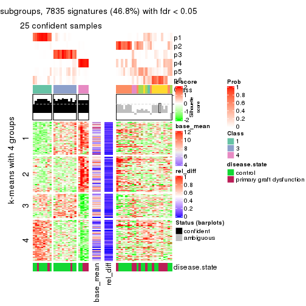
Signature heatmaps where rows are not scaled:
get_signatures(res, k = 2, scale_rows = FALSE)

get_signatures(res, k = 3, scale_rows = FALSE)
get_signatures(res, k = 4, scale_rows = FALSE)
get_signatures(res, k = 5, scale_rows = FALSE)
get_signatures(res, k = 6, scale_rows = FALSE)
Compare the overlap of signatures from different k:
compare_signatures(res)
get_signature() returns a data frame invisibly. TO get the list of signatures, the function
call should be assigned to a variable explicitly. In following code, if plot argument is set
to FALSE, no heatmap is plotted while only the differential analysis is performed.
# code only for demonstration
tb = get_signature(res, k = ..., plot = FALSE)
An example of the output of tb is:
#> which_row fdr mean_1 mean_2 scaled_mean_1 scaled_mean_2 km
#> 1 38 0.042760348 8.373488 9.131774 -0.5533452 0.5164555 1
#> 2 40 0.018707592 7.106213 8.469186 -0.6173731 0.5762149 1
#> 3 55 0.019134737 10.221463 11.207825 -0.6159697 0.5749050 1
#> 4 59 0.006059896 5.921854 7.869574 -0.6899429 0.6439467 1
#> 5 60 0.018055526 8.928898 10.211722 -0.6204761 0.5791110 1
#> 6 98 0.009384629 15.714769 14.887706 0.6635654 -0.6193277 2
...
The columns in tb are:
which_row: row indices corresponding to the input matrix.fdr: FDR for the differential test. mean_x: The mean value in group x.scaled_mean_x: The mean value in group x after rows are scaled.km: Row groups if k-means clustering is applied to rows.UMAP plot which shows how samples are separated.
dimension_reduction(res, k = 2, method = "UMAP")
dimension_reduction(res, k = 3, method = "UMAP")
dimension_reduction(res, k = 4, method = "UMAP")
dimension_reduction(res, k = 5, method = "UMAP")
dimension_reduction(res, k = 6, method = "UMAP")
Following heatmap shows how subgroups are split when increasing k:
collect_classes(res)
Test correlation between subgroups and known annotations. If the known annotation is numeric, one-way ANOVA test is applied, and if the known annotation is discrete, chi-squared contingency table test is applied.
test_to_known_factors(res)
#> n disease.state(p) k
#> MAD:skmeans 46 0.5293 2
#> MAD:skmeans 48 0.9124 3
#> MAD:skmeans 44 0.2951 4
#> MAD:skmeans 34 0.1727 5
#> MAD:skmeans 26 0.0609 6
If matrix rows can be associated to genes, consider to use GO_Enrichment(res,
...) to perform function enrichment for the signature genes.
The object with results only for a single top-value method and a single partition method can be extracted as:
res = res_list["MAD", "pam"]
# you can also extract it by
# res = res_list["MAD:pam"]
A summary of res and all the functions that can be applied to it:
res
#> A 'ConsensusPartition' object with k = 2, 3, 4, 5, 6.
#> On a matrix with 16753 rows and 50 columns.
#> Top rows (1000, 2000, 3000, 4000, 5000) are extracted by 'MAD' method.
#> Subgroups are detected by 'pam' method.
#> Performed in total 1250 partitions by row resampling.
#> Best k for subgroups seems to be 5.
#>
#> Following methods can be applied to this 'ConsensusPartition' object:
#> [1] "cola_report" "collect_classes" "collect_plots"
#> [4] "collect_stats" "colnames" "compare_signatures"
#> [7] "consensus_heatmap" "dimension_reduction" "functional_enrichment"
#> [10] "get_anno_col" "get_anno" "get_classes"
#> [13] "get_consensus" "get_matrix" "get_membership"
#> [16] "get_param" "get_signatures" "get_stats"
#> [19] "is_best_k" "is_stable_k" "membership_heatmap"
#> [22] "ncol" "nrow" "plot_ecdf"
#> [25] "rownames" "select_partition_number" "show"
#> [28] "suggest_best_k" "test_to_known_factors"
collect_plots() function collects all the plots made from res for all k (number of partitions)
into one single page to provide an easy and fast comparison between different k.
collect_plots(res)
The plots are:
k and the heatmap of
predicted classes for each k.k.k.k.All the plots in panels can be made by individual functions and they are plotted later in this section.
select_partition_number() produces several plots showing different
statistics for choosing “optimized” k. There are following statistics:
k;k, the area increased is defined as \(A_k - A_{k-1}\).The detailed explanations of these statistics can be found in the cola vignette.
Generally speaking, lower PAC score, higher mean silhouette score or higher
concordance corresponds to better partition. Rand index and Jaccard index
measure how similar the current partition is compared to partition with k-1.
If they are too similar, we won't accept k is better than k-1.
select_partition_number(res)
The numeric values for all these statistics can be obtained by get_stats().
get_stats(res)
#> k 1-PAC mean_silhouette concordance area_increased Rand Jaccard
#> 2 2 0.552 0.857 0.929 0.4954 0.493 0.493
#> 3 3 0.562 0.681 0.846 0.2405 0.833 0.672
#> 4 4 0.568 0.564 0.758 0.1457 0.824 0.557
#> 5 5 0.860 0.848 0.938 0.0941 0.840 0.505
#> 6 6 0.807 0.803 0.897 0.0801 0.906 0.606
suggest_best_k() suggests the best \(k\) based on these statistics. The rules are as follows:
NA.suggest_best_k(res)
#> [1] 5
Following shows the table of the partitions (You need to click the show/hide
code output link to see it). The membership matrix (columns with name p*)
is inferred by
clue::cl_consensus()
function with the SE method. Basically the value in the membership matrix
represents the probability to belong to a certain group. The finall class
label for an item is determined with the group with highest probability it
belongs to.
In get_classes() function, the entropy is calculated from the membership
matrix and the silhouette score is calculated from the consensus matrix.
cbind(get_classes(res, k = 2), get_membership(res, k = 2))
#> class entropy silhouette p1 p2
#> GSM198618 2 0.7139 0.7920 0.196 0.804
#> GSM198622 1 0.0000 0.9391 1.000 0.000
#> GSM198623 2 0.0000 0.8894 0.000 1.000
#> GSM198626 1 0.2948 0.9112 0.948 0.052
#> GSM198627 1 0.0000 0.9391 1.000 0.000
#> GSM198628 1 0.0376 0.9380 0.996 0.004
#> GSM198629 1 0.5519 0.8505 0.872 0.128
#> GSM198630 1 0.0000 0.9391 1.000 0.000
#> GSM198631 1 0.1184 0.9299 0.984 0.016
#> GSM198632 1 0.5629 0.8471 0.868 0.132
#> GSM198633 1 0.0000 0.9391 1.000 0.000
#> GSM198634 1 0.0000 0.9391 1.000 0.000
#> GSM198635 1 0.0000 0.9391 1.000 0.000
#> GSM198636 1 0.0376 0.9380 0.996 0.004
#> GSM198639 2 0.7376 0.7827 0.208 0.792
#> GSM198641 1 0.0000 0.9391 1.000 0.000
#> GSM198642 1 0.9248 0.5638 0.660 0.340
#> GSM198643 2 0.8144 0.6778 0.252 0.748
#> GSM198644 1 0.9000 0.6055 0.684 0.316
#> GSM198645 2 0.2236 0.8820 0.036 0.964
#> GSM198649 2 0.0000 0.8894 0.000 1.000
#> GSM198651 1 0.0000 0.9391 1.000 0.000
#> GSM198653 1 0.0376 0.9380 0.996 0.004
#> GSM198654 2 0.0000 0.8894 0.000 1.000
#> GSM198655 2 0.7376 0.7827 0.208 0.792
#> GSM198656 2 0.0000 0.8894 0.000 1.000
#> GSM198657 2 0.0000 0.8894 0.000 1.000
#> GSM198658 2 0.0000 0.8894 0.000 1.000
#> GSM198659 1 0.5408 0.8542 0.876 0.124
#> GSM198660 2 0.9933 0.0467 0.452 0.548
#> GSM198662 2 0.0000 0.8894 0.000 1.000
#> GSM198663 1 0.0000 0.9391 1.000 0.000
#> GSM198664 1 0.0000 0.9391 1.000 0.000
#> GSM198665 2 0.0000 0.8894 0.000 1.000
#> GSM198616 1 0.5519 0.8505 0.872 0.128
#> GSM198617 2 0.1633 0.8853 0.024 0.976
#> GSM198619 2 0.7376 0.7827 0.208 0.792
#> GSM198620 2 0.7376 0.7827 0.208 0.792
#> GSM198621 2 0.5629 0.8372 0.132 0.868
#> GSM198624 1 0.0000 0.9391 1.000 0.000
#> GSM198625 1 0.0000 0.9391 1.000 0.000
#> GSM198637 1 0.0000 0.9391 1.000 0.000
#> GSM198638 1 0.5629 0.8471 0.868 0.132
#> GSM198640 1 0.1843 0.9268 0.972 0.028
#> GSM198646 2 0.7219 0.7902 0.200 0.800
#> GSM198647 2 0.0000 0.8894 0.000 1.000
#> GSM198648 1 0.0000 0.9391 1.000 0.000
#> GSM198650 2 0.0376 0.8882 0.004 0.996
#> GSM198652 2 0.1414 0.8829 0.020 0.980
#> GSM198661 2 0.0000 0.8894 0.000 1.000
cbind(get_classes(res, k = 3), get_membership(res, k = 3))
#> class entropy silhouette p1 p2 p3
#> GSM198618 3 0.4504 0.6151 0.196 0.000 0.804
#> GSM198622 1 0.0237 0.9309 0.996 0.004 0.000
#> GSM198623 3 0.0000 0.6986 0.000 0.000 1.000
#> GSM198626 1 0.0000 0.9311 1.000 0.000 0.000
#> GSM198627 1 0.0237 0.9309 0.996 0.004 0.000
#> GSM198628 1 0.0237 0.9292 0.996 0.000 0.004
#> GSM198629 1 0.0000 0.9311 1.000 0.000 0.000
#> GSM198630 1 0.0237 0.9309 0.996 0.004 0.000
#> GSM198631 1 0.0983 0.9156 0.980 0.004 0.016
#> GSM198632 1 0.0237 0.9292 0.996 0.000 0.004
#> GSM198633 1 0.0000 0.9311 1.000 0.000 0.000
#> GSM198634 1 0.0237 0.9309 0.996 0.004 0.000
#> GSM198635 1 0.0237 0.9309 0.996 0.004 0.000
#> GSM198636 1 0.2301 0.8694 0.936 0.060 0.004
#> GSM198639 3 0.6244 0.4141 0.440 0.000 0.560
#> GSM198641 2 0.5926 0.6162 0.356 0.644 0.000
#> GSM198642 1 0.6252 0.1721 0.556 0.000 0.444
#> GSM198643 3 0.5873 0.5359 0.312 0.004 0.684
#> GSM198644 1 0.8790 -0.0558 0.532 0.340 0.128
#> GSM198645 3 0.5254 0.5804 0.264 0.000 0.736
#> GSM198649 2 0.2066 0.5580 0.000 0.940 0.060
#> GSM198651 2 0.8043 0.6429 0.228 0.644 0.128
#> GSM198653 2 0.6148 0.6161 0.356 0.640 0.004
#> GSM198654 3 0.0000 0.6986 0.000 0.000 1.000
#> GSM198655 3 0.6984 0.4169 0.420 0.020 0.560
#> GSM198656 3 0.0000 0.6986 0.000 0.000 1.000
#> GSM198657 3 0.0000 0.6986 0.000 0.000 1.000
#> GSM198658 3 0.0000 0.6986 0.000 0.000 1.000
#> GSM198659 2 0.6225 0.5009 0.432 0.568 0.000
#> GSM198660 3 0.6286 0.0881 0.464 0.000 0.536
#> GSM198662 3 0.0000 0.6986 0.000 0.000 1.000
#> GSM198663 2 0.5926 0.6162 0.356 0.644 0.000
#> GSM198664 1 0.0000 0.9311 1.000 0.000 0.000
#> GSM198665 3 0.0000 0.6986 0.000 0.000 1.000
#> GSM198616 1 0.0000 0.9311 1.000 0.000 0.000
#> GSM198617 3 0.5698 0.6032 0.012 0.252 0.736
#> GSM198619 3 0.6244 0.4141 0.440 0.000 0.560
#> GSM198620 2 0.5486 0.3717 0.024 0.780 0.196
#> GSM198621 3 0.5968 0.4992 0.364 0.000 0.636
#> GSM198624 1 0.0000 0.9311 1.000 0.000 0.000
#> GSM198625 1 0.0237 0.9309 0.996 0.004 0.000
#> GSM198637 1 0.0237 0.9309 0.996 0.004 0.000
#> GSM198638 1 0.0237 0.9292 0.996 0.000 0.004
#> GSM198640 1 0.0237 0.9292 0.996 0.000 0.004
#> GSM198646 3 0.7102 0.4437 0.024 0.420 0.556
#> GSM198647 3 0.5926 0.5301 0.000 0.356 0.644
#> GSM198648 2 0.0000 0.5827 0.000 1.000 0.000
#> GSM198650 3 0.5431 0.5802 0.000 0.284 0.716
#> GSM198652 2 0.5098 0.5059 0.000 0.752 0.248
#> GSM198661 3 0.0000 0.6986 0.000 0.000 1.000
cbind(get_classes(res, k = 4), get_membership(res, k = 4))
#> class entropy silhouette p1 p2 p3 p4
#> GSM198618 3 0.4959 0.5753 0.000 0.196 0.752 0.052
#> GSM198622 2 0.1302 0.7113 0.044 0.956 0.000 0.000
#> GSM198623 3 0.4304 0.4370 0.284 0.000 0.716 0.000
#> GSM198626 1 0.4999 0.8678 0.508 0.492 0.000 0.000
#> GSM198627 1 0.4961 0.9113 0.552 0.448 0.000 0.000
#> GSM198628 1 0.5167 0.8654 0.508 0.488 0.004 0.000
#> GSM198629 2 0.0000 0.7468 0.000 1.000 0.000 0.000
#> GSM198630 1 0.4961 0.9113 0.552 0.448 0.000 0.000
#> GSM198631 1 0.5126 0.9080 0.552 0.444 0.004 0.000
#> GSM198632 2 0.0188 0.7452 0.000 0.996 0.004 0.000
#> GSM198633 2 0.0000 0.7468 0.000 1.000 0.000 0.000
#> GSM198634 2 0.1302 0.7113 0.044 0.956 0.000 0.000
#> GSM198635 2 0.1302 0.7113 0.044 0.956 0.000 0.000
#> GSM198636 1 0.4454 0.6988 0.692 0.308 0.000 0.000
#> GSM198639 2 0.4996 -0.1003 0.000 0.516 0.484 0.000
#> GSM198641 4 0.4999 0.7219 0.492 0.000 0.000 0.508
#> GSM198642 3 0.5594 0.1181 0.020 0.460 0.520 0.000
#> GSM198643 3 0.5897 0.3078 0.044 0.368 0.588 0.000
#> GSM198644 2 0.8214 -0.0252 0.116 0.496 0.064 0.324
#> GSM198645 3 0.4624 0.3971 0.000 0.340 0.660 0.000
#> GSM198649 4 0.0000 0.5382 0.000 0.000 0.000 1.000
#> GSM198651 4 0.4999 0.7219 0.492 0.000 0.000 0.508
#> GSM198653 4 0.6068 0.7127 0.448 0.044 0.000 0.508
#> GSM198654 3 0.0000 0.6610 0.000 0.000 1.000 0.000
#> GSM198655 3 0.7088 0.2121 0.128 0.392 0.480 0.000
#> GSM198656 3 0.0000 0.6610 0.000 0.000 1.000 0.000
#> GSM198657 3 0.0000 0.6610 0.000 0.000 1.000 0.000
#> GSM198658 3 0.0000 0.6610 0.000 0.000 1.000 0.000
#> GSM198659 4 0.7402 0.5715 0.308 0.192 0.000 0.500
#> GSM198660 3 0.4967 0.1772 0.000 0.452 0.548 0.000
#> GSM198662 3 0.0000 0.6610 0.000 0.000 1.000 0.000
#> GSM198663 4 0.5167 0.7208 0.488 0.004 0.000 0.508
#> GSM198664 2 0.0000 0.7468 0.000 1.000 0.000 0.000
#> GSM198665 3 0.0000 0.6610 0.000 0.000 1.000 0.000
#> GSM198616 2 0.0000 0.7468 0.000 1.000 0.000 0.000
#> GSM198617 3 0.5057 0.4830 0.000 0.012 0.648 0.340
#> GSM198619 2 0.4996 -0.1003 0.000 0.516 0.484 0.000
#> GSM198620 4 0.3444 0.2789 0.000 0.000 0.184 0.816
#> GSM198621 3 0.4948 0.1926 0.000 0.440 0.560 0.000
#> GSM198624 2 0.0000 0.7468 0.000 1.000 0.000 0.000
#> GSM198625 1 0.4961 0.9113 0.552 0.448 0.000 0.000
#> GSM198637 2 0.1211 0.7157 0.040 0.960 0.000 0.000
#> GSM198638 2 0.0188 0.7452 0.000 0.996 0.004 0.000
#> GSM198640 2 0.0188 0.7452 0.000 0.996 0.004 0.000
#> GSM198646 4 0.4994 -0.3878 0.000 0.000 0.480 0.520
#> GSM198647 3 0.4999 0.3292 0.000 0.000 0.508 0.492
#> GSM198648 4 0.4961 0.7243 0.448 0.000 0.000 0.552
#> GSM198650 3 0.4624 0.4714 0.000 0.000 0.660 0.340
#> GSM198652 4 0.7168 0.6160 0.256 0.000 0.192 0.552
#> GSM198661 3 0.0000 0.6610 0.000 0.000 1.000 0.000
cbind(get_classes(res, k = 5), get_membership(res, k = 5))
#> class entropy silhouette p1 p2 p3 p4 p5
#> GSM198618 3 0.437 0.6174 0.000 0.000 0.744 0.056 0.200
#> GSM198622 5 0.134 0.9236 0.056 0.000 0.000 0.000 0.944
#> GSM198623 3 0.000 0.9250 0.000 0.000 1.000 0.000 0.000
#> GSM198626 1 0.134 0.9312 0.944 0.000 0.000 0.000 0.056
#> GSM198627 1 0.000 0.9602 1.000 0.000 0.000 0.000 0.000
#> GSM198628 1 0.134 0.9312 0.944 0.000 0.000 0.000 0.056
#> GSM198629 5 0.000 0.9432 0.000 0.000 0.000 0.000 1.000
#> GSM198630 1 0.000 0.9602 1.000 0.000 0.000 0.000 0.000
#> GSM198631 1 0.000 0.9602 1.000 0.000 0.000 0.000 0.000
#> GSM198632 5 0.000 0.9432 0.000 0.000 0.000 0.000 1.000
#> GSM198633 5 0.000 0.9432 0.000 0.000 0.000 0.000 1.000
#> GSM198634 5 0.134 0.9236 0.056 0.000 0.000 0.000 0.944
#> GSM198635 5 0.134 0.9236 0.056 0.000 0.000 0.000 0.944
#> GSM198636 1 0.148 0.9205 0.936 0.064 0.000 0.000 0.000
#> GSM198639 5 0.000 0.9432 0.000 0.000 0.000 0.000 1.000
#> GSM198641 2 0.000 0.8119 0.000 1.000 0.000 0.000 0.000
#> GSM198642 3 0.000 0.9250 0.000 0.000 1.000 0.000 0.000
#> GSM198643 5 0.393 0.7902 0.056 0.000 0.152 0.000 0.792
#> GSM198644 2 0.518 -0.0471 0.000 0.480 0.040 0.000 0.480
#> GSM198645 5 0.300 0.7822 0.000 0.000 0.188 0.000 0.812
#> GSM198649 4 0.000 0.8662 0.000 0.000 0.000 1.000 0.000
#> GSM198651 2 0.000 0.8119 0.000 1.000 0.000 0.000 0.000
#> GSM198653 2 0.000 0.8119 0.000 1.000 0.000 0.000 0.000
#> GSM198654 3 0.000 0.9250 0.000 0.000 1.000 0.000 0.000
#> GSM198655 5 0.281 0.7985 0.000 0.168 0.000 0.000 0.832
#> GSM198656 3 0.000 0.9250 0.000 0.000 1.000 0.000 0.000
#> GSM198657 3 0.000 0.9250 0.000 0.000 1.000 0.000 0.000
#> GSM198658 3 0.000 0.9250 0.000 0.000 1.000 0.000 0.000
#> GSM198659 2 0.293 0.6759 0.000 0.820 0.000 0.000 0.180
#> GSM198660 3 0.364 0.5505 0.000 0.000 0.728 0.000 0.272
#> GSM198662 3 0.000 0.9250 0.000 0.000 1.000 0.000 0.000
#> GSM198663 2 0.134 0.7835 0.056 0.944 0.000 0.000 0.000
#> GSM198664 5 0.000 0.9432 0.000 0.000 0.000 0.000 1.000
#> GSM198665 3 0.000 0.9250 0.000 0.000 1.000 0.000 0.000
#> GSM198616 5 0.000 0.9432 0.000 0.000 0.000 0.000 1.000
#> GSM198617 4 0.483 0.3598 0.000 0.000 0.380 0.592 0.028
#> GSM198619 5 0.000 0.9432 0.000 0.000 0.000 0.000 1.000
#> GSM198620 4 0.000 0.8662 0.000 0.000 0.000 1.000 0.000
#> GSM198621 5 0.173 0.8948 0.000 0.000 0.080 0.000 0.920
#> GSM198624 5 0.000 0.9432 0.000 0.000 0.000 0.000 1.000
#> GSM198625 1 0.000 0.9602 1.000 0.000 0.000 0.000 0.000
#> GSM198637 5 0.134 0.9236 0.056 0.000 0.000 0.000 0.944
#> GSM198638 5 0.000 0.9432 0.000 0.000 0.000 0.000 1.000
#> GSM198640 5 0.000 0.9432 0.000 0.000 0.000 0.000 1.000
#> GSM198646 4 0.000 0.8662 0.000 0.000 0.000 1.000 0.000
#> GSM198647 4 0.000 0.8662 0.000 0.000 0.000 1.000 0.000
#> GSM198648 2 0.000 0.8119 0.000 1.000 0.000 0.000 0.000
#> GSM198650 4 0.273 0.7574 0.000 0.000 0.160 0.840 0.000
#> GSM198652 2 0.311 0.6377 0.000 0.800 0.200 0.000 0.000
#> GSM198661 3 0.000 0.9250 0.000 0.000 1.000 0.000 0.000
cbind(get_classes(res, k = 6), get_membership(res, k = 6))
#> class entropy silhouette p1 p2 p3 p4 p5 p6
#> GSM198618 6 0.5884 0.2667 0.000 0.000 0.384 0.000 0.200 0.416
#> GSM198622 5 0.2793 0.8183 0.000 0.000 0.000 0.000 0.800 0.200
#> GSM198623 3 0.0458 0.9103 0.000 0.000 0.984 0.000 0.000 0.016
#> GSM198626 1 0.0000 0.9619 1.000 0.000 0.000 0.000 0.000 0.000
#> GSM198627 1 0.2793 0.7680 0.800 0.000 0.000 0.000 0.000 0.200
#> GSM198628 1 0.0000 0.9619 1.000 0.000 0.000 0.000 0.000 0.000
#> GSM198629 5 0.0000 0.9120 0.000 0.000 0.000 0.000 1.000 0.000
#> GSM198630 1 0.0000 0.9619 1.000 0.000 0.000 0.000 0.000 0.000
#> GSM198631 1 0.0000 0.9619 1.000 0.000 0.000 0.000 0.000 0.000
#> GSM198632 5 0.0000 0.9120 0.000 0.000 0.000 0.000 1.000 0.000
#> GSM198633 5 0.0000 0.9120 0.000 0.000 0.000 0.000 1.000 0.000
#> GSM198634 5 0.2793 0.8183 0.000 0.000 0.000 0.000 0.800 0.200
#> GSM198635 5 0.2793 0.8183 0.000 0.000 0.000 0.000 0.800 0.200
#> GSM198636 1 0.0363 0.9536 0.988 0.012 0.000 0.000 0.000 0.000
#> GSM198639 6 0.2793 0.7409 0.000 0.000 0.000 0.000 0.200 0.800
#> GSM198641 2 0.0865 0.7971 0.000 0.964 0.000 0.000 0.000 0.036
#> GSM198642 3 0.0547 0.9089 0.000 0.000 0.980 0.000 0.000 0.020
#> GSM198643 6 0.1910 0.6120 0.000 0.000 0.000 0.000 0.108 0.892
#> GSM198644 2 0.5115 0.0112 0.000 0.480 0.040 0.000 0.460 0.020
#> GSM198645 6 0.3236 0.7438 0.000 0.000 0.180 0.000 0.024 0.796
#> GSM198649 4 0.0000 0.9126 0.000 0.000 0.000 1.000 0.000 0.000
#> GSM198651 2 0.0000 0.8039 0.000 1.000 0.000 0.000 0.000 0.000
#> GSM198653 2 0.0000 0.8039 0.000 1.000 0.000 0.000 0.000 0.000
#> GSM198654 3 0.0000 0.9081 0.000 0.000 1.000 0.000 0.000 0.000
#> GSM198655 6 0.3319 0.7083 0.000 0.164 0.000 0.000 0.036 0.800
#> GSM198656 3 0.0000 0.9081 0.000 0.000 1.000 0.000 0.000 0.000
#> GSM198657 3 0.0458 0.9103 0.000 0.000 0.984 0.000 0.000 0.016
#> GSM198658 3 0.0000 0.9081 0.000 0.000 1.000 0.000 0.000 0.000
#> GSM198659 2 0.2597 0.6950 0.000 0.824 0.000 0.000 0.176 0.000
#> GSM198660 3 0.4151 0.5533 0.000 0.000 0.692 0.000 0.264 0.044
#> GSM198662 3 0.2762 0.6658 0.000 0.000 0.804 0.000 0.000 0.196
#> GSM198663 2 0.2631 0.7118 0.000 0.820 0.000 0.000 0.000 0.180
#> GSM198664 5 0.0000 0.9120 0.000 0.000 0.000 0.000 1.000 0.000
#> GSM198665 6 0.2793 0.7220 0.000 0.000 0.200 0.000 0.000 0.800
#> GSM198616 5 0.0000 0.9120 0.000 0.000 0.000 0.000 1.000 0.000
#> GSM198617 6 0.3842 0.7088 0.000 0.000 0.100 0.112 0.004 0.784
#> GSM198619 6 0.2941 0.7302 0.000 0.000 0.000 0.000 0.220 0.780
#> GSM198620 4 0.0000 0.9126 0.000 0.000 0.000 1.000 0.000 0.000
#> GSM198621 6 0.3534 0.7730 0.000 0.000 0.076 0.000 0.124 0.800
#> GSM198624 5 0.0000 0.9120 0.000 0.000 0.000 0.000 1.000 0.000
#> GSM198625 1 0.0000 0.9619 1.000 0.000 0.000 0.000 0.000 0.000
#> GSM198637 5 0.2762 0.8207 0.000 0.000 0.000 0.000 0.804 0.196
#> GSM198638 5 0.0547 0.8955 0.000 0.000 0.000 0.000 0.980 0.020
#> GSM198640 5 0.0000 0.9120 0.000 0.000 0.000 0.000 1.000 0.000
#> GSM198646 4 0.0000 0.9126 0.000 0.000 0.000 1.000 0.000 0.000
#> GSM198647 4 0.0000 0.9126 0.000 0.000 0.000 1.000 0.000 0.000
#> GSM198648 2 0.0000 0.8039 0.000 1.000 0.000 0.000 0.000 0.000
#> GSM198650 4 0.3898 0.5157 0.000 0.000 0.020 0.684 0.000 0.296
#> GSM198652 2 0.2730 0.6703 0.000 0.808 0.192 0.000 0.000 0.000
#> GSM198661 3 0.0547 0.9089 0.000 0.000 0.980 0.000 0.000 0.020
Heatmaps for the consensus matrix. It visualizes the probability of two samples to be in a same group.
consensus_heatmap(res, k = 2)
consensus_heatmap(res, k = 3)
consensus_heatmap(res, k = 4)
consensus_heatmap(res, k = 5)
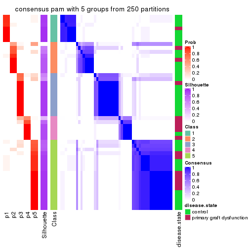
consensus_heatmap(res, k = 6)
Heatmaps for the membership of samples in all partitions to see how consistent they are:
membership_heatmap(res, k = 2)
membership_heatmap(res, k = 3)
membership_heatmap(res, k = 4)
membership_heatmap(res, k = 5)
membership_heatmap(res, k = 6)
As soon as we have had the classes for columns, we can look for signatures which are significantly different between classes which can be candidate marks for certain classes. Following are the heatmaps for signatures.
Signature heatmaps where rows are scaled:
get_signatures(res, k = 2)
get_signatures(res, k = 3)
get_signatures(res, k = 4)
get_signatures(res, k = 5)
get_signatures(res, k = 6)
Signature heatmaps where rows are not scaled:
get_signatures(res, k = 2, scale_rows = FALSE)
get_signatures(res, k = 3, scale_rows = FALSE)
get_signatures(res, k = 4, scale_rows = FALSE)
get_signatures(res, k = 5, scale_rows = FALSE)
get_signatures(res, k = 6, scale_rows = FALSE)
Compare the overlap of signatures from different k:
compare_signatures(res)
get_signature() returns a data frame invisibly. TO get the list of signatures, the function
call should be assigned to a variable explicitly. In following code, if plot argument is set
to FALSE, no heatmap is plotted while only the differential analysis is performed.
# code only for demonstration
tb = get_signature(res, k = ..., plot = FALSE)
An example of the output of tb is:
#> which_row fdr mean_1 mean_2 scaled_mean_1 scaled_mean_2 km
#> 1 38 0.042760348 8.373488 9.131774 -0.5533452 0.5164555 1
#> 2 40 0.018707592 7.106213 8.469186 -0.6173731 0.5762149 1
#> 3 55 0.019134737 10.221463 11.207825 -0.6159697 0.5749050 1
#> 4 59 0.006059896 5.921854 7.869574 -0.6899429 0.6439467 1
#> 5 60 0.018055526 8.928898 10.211722 -0.6204761 0.5791110 1
#> 6 98 0.009384629 15.714769 14.887706 0.6635654 -0.6193277 2
...
The columns in tb are:
which_row: row indices corresponding to the input matrix.fdr: FDR for the differential test. mean_x: The mean value in group x.scaled_mean_x: The mean value in group x after rows are scaled.km: Row groups if k-means clustering is applied to rows.UMAP plot which shows how samples are separated.
dimension_reduction(res, k = 2, method = "UMAP")
dimension_reduction(res, k = 3, method = "UMAP")
dimension_reduction(res, k = 4, method = "UMAP")
dimension_reduction(res, k = 5, method = "UMAP")
dimension_reduction(res, k = 6, method = "UMAP")
Following heatmap shows how subgroups are split when increasing k:
collect_classes(res)
Test correlation between subgroups and known annotations. If the known annotation is numeric, one-way ANOVA test is applied, and if the known annotation is discrete, chi-squared contingency table test is applied.
test_to_known_factors(res)
#> n disease.state(p) k
#> MAD:pam 49 0.4201 2
#> MAD:pam 41 0.9405 3
#> MAD:pam 35 0.4217 4
#> MAD:pam 48 0.0499 5
#> MAD:pam 48 0.1283 6
If matrix rows can be associated to genes, consider to use GO_Enrichment(res,
...) to perform function enrichment for the signature genes.
The object with results only for a single top-value method and a single partition method can be extracted as:
res = res_list["MAD", "mclust"]
# you can also extract it by
# res = res_list["MAD:mclust"]
A summary of res and all the functions that can be applied to it:
res
#> A 'ConsensusPartition' object with k = 2, 3, 4, 5, 6.
#> On a matrix with 16753 rows and 50 columns.
#> Top rows (1000, 2000, 3000, 4000, 5000) are extracted by 'MAD' method.
#> Subgroups are detected by 'mclust' method.
#> Performed in total 1250 partitions by row resampling.
#> Best k for subgroups seems to be 4.
#>
#> Following methods can be applied to this 'ConsensusPartition' object:
#> [1] "cola_report" "collect_classes" "collect_plots"
#> [4] "collect_stats" "colnames" "compare_signatures"
#> [7] "consensus_heatmap" "dimension_reduction" "functional_enrichment"
#> [10] "get_anno_col" "get_anno" "get_classes"
#> [13] "get_consensus" "get_matrix" "get_membership"
#> [16] "get_param" "get_signatures" "get_stats"
#> [19] "is_best_k" "is_stable_k" "membership_heatmap"
#> [22] "ncol" "nrow" "plot_ecdf"
#> [25] "rownames" "select_partition_number" "show"
#> [28] "suggest_best_k" "test_to_known_factors"
collect_plots() function collects all the plots made from res for all k (number of partitions)
into one single page to provide an easy and fast comparison between different k.
collect_plots(res)

The plots are:
k and the heatmap of
predicted classes for each k.k.k.k.All the plots in panels can be made by individual functions and they are plotted later in this section.
select_partition_number() produces several plots showing different
statistics for choosing “optimized” k. There are following statistics:
k;k, the area increased is defined as \(A_k - A_{k-1}\).The detailed explanations of these statistics can be found in the cola vignette.
Generally speaking, lower PAC score, higher mean silhouette score or higher
concordance corresponds to better partition. Rand index and Jaccard index
measure how similar the current partition is compared to partition with k-1.
If they are too similar, we won't accept k is better than k-1.
select_partition_number(res)

The numeric values for all these statistics can be obtained by get_stats().
get_stats(res)
#> k 1-PAC mean_silhouette concordance area_increased Rand Jaccard
#> 2 2 0.191 0.463 0.785 0.3074 0.816 0.816
#> 3 3 0.280 0.748 0.781 0.9561 0.402 0.312
#> 4 4 0.633 0.793 0.854 0.1612 0.894 0.709
#> 5 5 0.616 0.734 0.834 0.0691 0.932 0.779
#> 6 6 0.698 0.693 0.811 0.0596 0.936 0.746
suggest_best_k() suggests the best \(k\) based on these statistics. The rules are as follows:
NA.suggest_best_k(res)
#> [1] 4
Following shows the table of the partitions (You need to click the show/hide
code output link to see it). The membership matrix (columns with name p*)
is inferred by
clue::cl_consensus()
function with the SE method. Basically the value in the membership matrix
represents the probability to belong to a certain group. The finall class
label for an item is determined with the group with highest probability it
belongs to.
In get_classes() function, the entropy is calculated from the membership
matrix and the silhouette score is calculated from the consensus matrix.
cbind(get_classes(res, k = 2), get_membership(res, k = 2))
#> class entropy silhouette p1 p2
#> GSM198618 1 0.0938 0.6413 0.988 0.012
#> GSM198622 1 0.0376 0.6408 0.996 0.004
#> GSM198623 1 0.9866 0.2763 0.568 0.432
#> GSM198626 1 0.6148 0.6175 0.848 0.152
#> GSM198627 1 0.0376 0.6408 0.996 0.004
#> GSM198628 1 0.6148 0.6175 0.848 0.152
#> GSM198629 1 0.2043 0.6437 0.968 0.032
#> GSM198630 1 0.6148 0.6175 0.848 0.152
#> GSM198631 1 0.6148 0.6175 0.848 0.152
#> GSM198632 1 0.3733 0.6311 0.928 0.072
#> GSM198633 1 0.0000 0.6421 1.000 0.000
#> GSM198634 1 0.0000 0.6421 1.000 0.000
#> GSM198635 1 0.0938 0.6368 0.988 0.012
#> GSM198636 1 0.5842 0.6158 0.860 0.140
#> GSM198639 1 0.7815 0.5018 0.768 0.232
#> GSM198641 1 0.6343 0.6039 0.840 0.160
#> GSM198642 1 0.8661 0.4336 0.712 0.288
#> GSM198643 1 0.6712 0.5675 0.824 0.176
#> GSM198644 1 0.6343 0.6110 0.840 0.160
#> GSM198645 1 0.9491 0.4126 0.632 0.368
#> GSM198649 2 1.0000 0.4412 0.496 0.504
#> GSM198651 1 0.7674 0.5277 0.776 0.224
#> GSM198653 1 0.8081 0.4954 0.752 0.248
#> GSM198654 1 0.7815 0.5449 0.768 0.232
#> GSM198655 1 0.6247 0.6134 0.844 0.156
#> GSM198656 1 0.9993 0.1171 0.516 0.484
#> GSM198657 2 1.0000 -0.2613 0.496 0.504
#> GSM198658 1 0.8661 0.4147 0.712 0.288
#> GSM198659 1 0.4431 0.5475 0.908 0.092
#> GSM198660 1 0.6623 0.5692 0.828 0.172
#> GSM198662 1 0.8713 0.4197 0.708 0.292
#> GSM198663 1 0.4562 0.5330 0.904 0.096
#> GSM198664 1 0.0938 0.6368 0.988 0.012
#> GSM198665 1 1.0000 0.0661 0.500 0.500
#> GSM198616 1 0.6712 0.5675 0.824 0.176
#> GSM198617 1 0.6801 0.5656 0.820 0.180
#> GSM198619 1 0.7453 0.5283 0.788 0.212
#> GSM198620 2 1.0000 0.4412 0.496 0.504
#> GSM198621 1 0.7883 0.4969 0.764 0.236
#> GSM198624 1 0.6343 0.5752 0.840 0.160
#> GSM198625 1 0.5842 0.6158 0.860 0.140
#> GSM198637 1 0.0376 0.6408 0.996 0.004
#> GSM198638 1 0.0672 0.6413 0.992 0.008
#> GSM198640 1 0.7453 0.5684 0.788 0.212
#> GSM198646 2 1.0000 0.4412 0.496 0.504
#> GSM198647 1 1.0000 -0.5531 0.500 0.500
#> GSM198648 1 0.9998 -0.5496 0.508 0.492
#> GSM198650 1 0.0672 0.6426 0.992 0.008
#> GSM198652 1 0.7815 0.5287 0.768 0.232
#> GSM198661 2 1.0000 -0.2613 0.496 0.504
cbind(get_classes(res, k = 3), get_membership(res, k = 3))
#> class entropy silhouette p1 p2 p3
#> GSM198618 2 0.821 0.739 0.140 0.632 0.228
#> GSM198622 1 0.418 0.822 0.828 0.172 0.000
#> GSM198623 3 0.529 0.691 0.268 0.000 0.732
#> GSM198626 1 0.200 0.799 0.952 0.036 0.012
#> GSM198627 1 0.423 0.832 0.836 0.160 0.004
#> GSM198628 1 0.200 0.799 0.952 0.036 0.012
#> GSM198629 1 0.459 0.797 0.820 0.008 0.172
#> GSM198630 1 0.200 0.799 0.952 0.036 0.012
#> GSM198631 1 0.205 0.803 0.952 0.028 0.020
#> GSM198632 1 0.448 0.810 0.840 0.016 0.144
#> GSM198633 1 0.459 0.820 0.820 0.172 0.008
#> GSM198634 1 0.412 0.826 0.832 0.168 0.000
#> GSM198635 1 0.459 0.820 0.820 0.172 0.008
#> GSM198636 1 0.486 0.814 0.820 0.160 0.020
#> GSM198639 3 0.749 0.683 0.248 0.084 0.668
#> GSM198641 2 0.285 0.761 0.056 0.924 0.020
#> GSM198642 3 0.714 0.591 0.396 0.028 0.576
#> GSM198643 1 0.441 0.801 0.832 0.008 0.160
#> GSM198644 2 0.817 0.752 0.168 0.644 0.188
#> GSM198645 3 0.550 0.685 0.292 0.000 0.708
#> GSM198649 2 0.754 0.784 0.064 0.632 0.304
#> GSM198651 2 0.323 0.751 0.072 0.908 0.020
#> GSM198653 2 0.379 0.765 0.048 0.892 0.060
#> GSM198654 3 0.385 0.768 0.088 0.028 0.884
#> GSM198655 3 0.851 0.359 0.152 0.244 0.604
#> GSM198656 3 0.566 0.694 0.264 0.008 0.728
#> GSM198657 3 0.327 0.787 0.116 0.000 0.884
#> GSM198658 3 0.303 0.777 0.092 0.004 0.904
#> GSM198659 2 0.803 0.749 0.180 0.656 0.164
#> GSM198660 3 0.613 0.648 0.324 0.008 0.668
#> GSM198662 3 0.319 0.782 0.100 0.004 0.896
#> GSM198663 2 0.277 0.764 0.072 0.920 0.008
#> GSM198664 2 0.623 0.565 0.340 0.652 0.008
#> GSM198665 3 0.280 0.778 0.092 0.000 0.908
#> GSM198616 1 0.466 0.805 0.828 0.016 0.156
#> GSM198617 3 0.780 0.590 0.112 0.228 0.660
#> GSM198619 1 0.506 0.781 0.800 0.016 0.184
#> GSM198620 2 0.754 0.784 0.064 0.632 0.304
#> GSM198621 3 0.806 0.636 0.140 0.212 0.648
#> GSM198624 1 0.447 0.792 0.820 0.004 0.176
#> GSM198625 1 0.472 0.817 0.824 0.160 0.016
#> GSM198637 1 0.400 0.831 0.840 0.160 0.000
#> GSM198638 2 0.745 0.655 0.292 0.644 0.064
#> GSM198640 1 0.452 0.792 0.816 0.004 0.180
#> GSM198646 2 0.754 0.784 0.064 0.632 0.304
#> GSM198647 2 0.742 0.780 0.056 0.632 0.312
#> GSM198648 2 0.277 0.764 0.072 0.920 0.008
#> GSM198650 3 0.711 0.589 0.112 0.168 0.720
#> GSM198652 2 0.705 0.787 0.084 0.712 0.204
#> GSM198661 3 0.448 0.786 0.144 0.016 0.840
cbind(get_classes(res, k = 4), get_membership(res, k = 4))
#> class entropy silhouette p1 p2 p3 p4
#> GSM198618 3 0.5448 0.7518 0.144 0.052 0.768 0.036
#> GSM198622 1 0.1853 0.8182 0.948 0.028 0.012 0.012
#> GSM198623 3 0.0000 0.8763 0.000 0.000 1.000 0.000
#> GSM198626 1 0.5226 0.7617 0.744 0.000 0.076 0.180
#> GSM198627 1 0.1520 0.8263 0.956 0.020 0.024 0.000
#> GSM198628 1 0.5200 0.7611 0.744 0.000 0.072 0.184
#> GSM198629 1 0.3852 0.8006 0.800 0.000 0.192 0.008
#> GSM198630 1 0.5226 0.7617 0.744 0.000 0.076 0.180
#> GSM198631 1 0.5143 0.7659 0.752 0.000 0.076 0.172
#> GSM198632 1 0.2271 0.8237 0.916 0.000 0.076 0.008
#> GSM198633 1 0.1985 0.8185 0.944 0.024 0.012 0.020
#> GSM198634 1 0.1598 0.8247 0.956 0.020 0.020 0.004
#> GSM198635 1 0.1936 0.8083 0.940 0.032 0.000 0.028
#> GSM198636 1 0.5769 0.7289 0.736 0.180 0.048 0.036
#> GSM198639 3 0.2179 0.8639 0.064 0.000 0.924 0.012
#> GSM198641 2 0.0859 0.8161 0.004 0.980 0.008 0.008
#> GSM198642 3 0.3659 0.7618 0.024 0.000 0.840 0.136
#> GSM198643 1 0.3768 0.8023 0.808 0.000 0.184 0.008
#> GSM198644 2 0.5909 0.4189 0.004 0.668 0.264 0.064
#> GSM198645 3 0.0188 0.8775 0.004 0.000 0.996 0.000
#> GSM198649 4 0.5352 0.9487 0.060 0.176 0.012 0.752
#> GSM198651 2 0.1389 0.8089 0.000 0.952 0.000 0.048
#> GSM198653 2 0.1059 0.8121 0.000 0.972 0.016 0.012
#> GSM198654 3 0.0817 0.8686 0.000 0.000 0.976 0.024
#> GSM198655 3 0.5576 0.6321 0.004 0.212 0.716 0.068
#> GSM198656 3 0.0336 0.8741 0.000 0.000 0.992 0.008
#> GSM198657 3 0.0000 0.8763 0.000 0.000 1.000 0.000
#> GSM198658 3 0.1545 0.8740 0.040 0.000 0.952 0.008
#> GSM198659 2 0.4289 0.6899 0.172 0.796 0.000 0.032
#> GSM198660 3 0.3196 0.8283 0.136 0.000 0.856 0.008
#> GSM198662 3 0.0524 0.8778 0.004 0.000 0.988 0.008
#> GSM198663 2 0.1174 0.8197 0.012 0.968 0.000 0.020
#> GSM198664 2 0.4900 0.6180 0.236 0.732 0.000 0.032
#> GSM198665 3 0.0188 0.8775 0.004 0.000 0.996 0.000
#> GSM198616 1 0.3486 0.8027 0.812 0.000 0.188 0.000
#> GSM198617 3 0.2329 0.8613 0.072 0.000 0.916 0.012
#> GSM198619 3 0.2266 0.8607 0.084 0.000 0.912 0.004
#> GSM198620 4 0.5352 0.9487 0.060 0.176 0.012 0.752
#> GSM198621 3 0.1854 0.8698 0.048 0.000 0.940 0.012
#> GSM198624 1 0.3768 0.8023 0.808 0.000 0.184 0.008
#> GSM198625 1 0.5142 0.7499 0.772 0.160 0.052 0.016
#> GSM198637 1 0.1520 0.8263 0.956 0.020 0.024 0.000
#> GSM198638 3 0.8250 -0.0366 0.216 0.364 0.400 0.020
#> GSM198640 1 0.4086 0.7952 0.776 0.000 0.216 0.008
#> GSM198646 4 0.5434 0.9452 0.072 0.164 0.012 0.752
#> GSM198647 4 0.5896 0.8796 0.056 0.124 0.068 0.752
#> GSM198648 2 0.1174 0.8197 0.012 0.968 0.000 0.020
#> GSM198650 3 0.5349 0.7695 0.136 0.036 0.776 0.052
#> GSM198652 2 0.2587 0.7915 0.004 0.908 0.012 0.076
#> GSM198661 3 0.0336 0.8741 0.000 0.000 0.992 0.008
cbind(get_classes(res, k = 5), get_membership(res, k = 5))
#> class entropy silhouette p1 p2 p3 p4 p5
#> GSM198618 3 0.5656 0.5226 0.036 0.212 0.692 0.040 0.020
#> GSM198622 5 0.0854 0.6787 0.004 0.000 0.012 0.008 0.976
#> GSM198623 3 0.0000 0.8750 0.000 0.000 1.000 0.000 0.000
#> GSM198626 1 0.3910 0.9760 0.720 0.000 0.008 0.000 0.272
#> GSM198627 5 0.2407 0.6668 0.088 0.000 0.012 0.004 0.896
#> GSM198628 1 0.4114 0.9719 0.712 0.000 0.016 0.000 0.272
#> GSM198629 5 0.4096 0.7117 0.072 0.000 0.144 0.000 0.784
#> GSM198630 1 0.3910 0.9760 0.720 0.000 0.008 0.000 0.272
#> GSM198631 1 0.4269 0.9446 0.684 0.000 0.016 0.000 0.300
#> GSM198632 5 0.2629 0.7417 0.000 0.000 0.136 0.004 0.860
#> GSM198633 5 0.3272 0.7309 0.000 0.032 0.100 0.012 0.856
#> GSM198634 5 0.1202 0.7022 0.004 0.000 0.032 0.004 0.960
#> GSM198635 5 0.0833 0.6702 0.004 0.000 0.004 0.016 0.976
#> GSM198636 5 0.4737 -0.0594 0.380 0.016 0.004 0.000 0.600
#> GSM198639 3 0.3826 0.7622 0.236 0.000 0.752 0.004 0.008
#> GSM198641 2 0.2464 0.7290 0.012 0.892 0.000 0.004 0.092
#> GSM198642 3 0.2966 0.7311 0.184 0.000 0.816 0.000 0.000
#> GSM198643 5 0.3662 0.6625 0.000 0.000 0.252 0.004 0.744
#> GSM198644 2 0.6154 0.5856 0.048 0.676 0.176 0.084 0.016
#> GSM198645 3 0.0609 0.8719 0.000 0.000 0.980 0.000 0.020
#> GSM198649 4 0.0000 1.0000 0.000 0.000 0.000 1.000 0.000
#> GSM198651 2 0.0451 0.7131 0.008 0.988 0.000 0.000 0.004
#> GSM198653 2 0.2136 0.6923 0.000 0.904 0.000 0.088 0.008
#> GSM198654 3 0.1892 0.8368 0.000 0.000 0.916 0.080 0.004
#> GSM198655 3 0.4873 0.7058 0.012 0.112 0.772 0.084 0.020
#> GSM198656 3 0.0290 0.8741 0.008 0.000 0.992 0.000 0.000
#> GSM198657 3 0.0000 0.8750 0.000 0.000 1.000 0.000 0.000
#> GSM198658 3 0.0324 0.8747 0.000 0.000 0.992 0.004 0.004
#> GSM198659 2 0.5457 0.6320 0.036 0.624 0.004 0.020 0.316
#> GSM198660 3 0.1041 0.8681 0.000 0.000 0.964 0.004 0.032
#> GSM198662 3 0.0451 0.8742 0.000 0.000 0.988 0.004 0.008
#> GSM198663 2 0.2179 0.7286 0.000 0.896 0.000 0.004 0.100
#> GSM198664 2 0.5564 0.6076 0.036 0.596 0.004 0.020 0.344
#> GSM198665 3 0.0162 0.8747 0.000 0.000 0.996 0.000 0.004
#> GSM198616 5 0.3530 0.7089 0.012 0.000 0.204 0.000 0.784
#> GSM198617 3 0.4153 0.7572 0.236 0.000 0.740 0.016 0.008
#> GSM198619 3 0.3779 0.7613 0.236 0.000 0.752 0.000 0.012
#> GSM198620 4 0.0000 1.0000 0.000 0.000 0.000 1.000 0.000
#> GSM198621 3 0.3706 0.7634 0.236 0.000 0.756 0.004 0.004
#> GSM198624 5 0.3160 0.7208 0.000 0.000 0.188 0.004 0.808
#> GSM198625 5 0.4692 -0.2429 0.432 0.004 0.004 0.004 0.556
#> GSM198637 5 0.2616 0.7413 0.000 0.000 0.100 0.020 0.880
#> GSM198638 2 0.7583 0.2685 0.036 0.416 0.372 0.020 0.156
#> GSM198640 5 0.3857 0.5636 0.000 0.000 0.312 0.000 0.688
#> GSM198646 4 0.0000 1.0000 0.000 0.000 0.000 1.000 0.000
#> GSM198647 4 0.0000 1.0000 0.000 0.000 0.000 1.000 0.000
#> GSM198648 2 0.2179 0.7286 0.000 0.896 0.000 0.004 0.100
#> GSM198650 3 0.2532 0.8393 0.012 0.000 0.892 0.088 0.008
#> GSM198652 2 0.5612 0.5959 0.048 0.700 0.168 0.084 0.000
#> GSM198661 3 0.0290 0.8741 0.008 0.000 0.992 0.000 0.000
cbind(get_classes(res, k = 6), get_membership(res, k = 6))
#> class entropy silhouette p1 p2 p3 p4 p5 p6
#> GSM198618 2 0.5923 0.3822 0.000 0.556 0.256 0.164 0.024 0.000
#> GSM198622 5 0.0458 0.7745 0.000 0.000 0.000 0.000 0.984 0.016
#> GSM198623 3 0.0146 0.7723 0.000 0.000 0.996 0.000 0.004 0.000
#> GSM198626 1 0.1267 0.9835 0.940 0.000 0.000 0.000 0.060 0.000
#> GSM198627 5 0.0458 0.7745 0.000 0.000 0.000 0.000 0.984 0.016
#> GSM198628 1 0.1267 0.9835 0.940 0.000 0.000 0.000 0.060 0.000
#> GSM198629 5 0.3838 0.7119 0.020 0.000 0.156 0.000 0.784 0.040
#> GSM198630 1 0.1267 0.9835 0.940 0.000 0.000 0.000 0.060 0.000
#> GSM198631 1 0.2112 0.9503 0.896 0.000 0.016 0.000 0.088 0.000
#> GSM198632 5 0.1668 0.7727 0.004 0.000 0.060 0.000 0.928 0.008
#> GSM198633 5 0.3296 0.5463 0.000 0.180 0.020 0.000 0.796 0.004
#> GSM198634 5 0.0458 0.7745 0.000 0.000 0.000 0.000 0.984 0.016
#> GSM198635 5 0.0862 0.7717 0.000 0.008 0.004 0.000 0.972 0.016
#> GSM198636 5 0.4873 0.3731 0.320 0.080 0.000 0.000 0.600 0.000
#> GSM198639 6 0.4768 0.8070 0.000 0.000 0.416 0.000 0.052 0.532
#> GSM198641 2 0.4462 0.6783 0.060 0.660 0.000 0.000 0.000 0.280
#> GSM198642 3 0.2941 0.5039 0.220 0.000 0.780 0.000 0.000 0.000
#> GSM198643 5 0.3728 0.6877 0.004 0.000 0.180 0.000 0.772 0.044
#> GSM198644 2 0.2632 0.6308 0.004 0.832 0.000 0.000 0.000 0.164
#> GSM198645 3 0.0000 0.7723 0.000 0.000 1.000 0.000 0.000 0.000
#> GSM198649 4 0.0000 1.0000 0.000 0.000 0.000 1.000 0.000 0.000
#> GSM198651 2 0.2389 0.6797 0.060 0.888 0.000 0.000 0.000 0.052
#> GSM198653 2 0.4238 0.6785 0.060 0.780 0.000 0.056 0.000 0.104
#> GSM198654 3 0.1003 0.7597 0.000 0.000 0.964 0.020 0.000 0.016
#> GSM198655 3 0.5608 0.2619 0.016 0.300 0.564 0.000 0.000 0.120
#> GSM198656 3 0.0000 0.7723 0.000 0.000 1.000 0.000 0.000 0.000
#> GSM198657 3 0.0458 0.7730 0.000 0.000 0.984 0.000 0.000 0.016
#> GSM198658 3 0.0713 0.7529 0.000 0.000 0.972 0.000 0.000 0.028
#> GSM198659 2 0.4131 0.5705 0.000 0.624 0.020 0.000 0.356 0.000
#> GSM198660 3 0.3426 0.1736 0.000 0.000 0.720 0.000 0.276 0.004
#> GSM198662 3 0.0713 0.7529 0.000 0.000 0.972 0.000 0.000 0.028
#> GSM198663 2 0.4462 0.6783 0.060 0.660 0.000 0.000 0.000 0.280
#> GSM198664 2 0.4394 0.5591 0.000 0.608 0.020 0.000 0.364 0.008
#> GSM198665 3 0.0363 0.7740 0.000 0.000 0.988 0.000 0.000 0.012
#> GSM198616 5 0.3662 0.6981 0.004 0.000 0.172 0.000 0.780 0.044
#> GSM198617 6 0.4899 0.8070 0.000 0.000 0.404 0.000 0.064 0.532
#> GSM198619 6 0.6065 0.5882 0.000 0.000 0.352 0.000 0.264 0.384
#> GSM198620 4 0.0000 1.0000 0.000 0.000 0.000 1.000 0.000 0.000
#> GSM198621 6 0.4172 0.7328 0.000 0.000 0.460 0.000 0.012 0.528
#> GSM198624 5 0.2778 0.7203 0.000 0.000 0.168 0.000 0.824 0.008
#> GSM198625 5 0.4218 0.2161 0.428 0.016 0.000 0.000 0.556 0.000
#> GSM198637 5 0.0865 0.7725 0.000 0.000 0.000 0.000 0.964 0.036
#> GSM198638 2 0.5806 0.5310 0.000 0.548 0.084 0.000 0.324 0.044
#> GSM198640 5 0.3759 0.6375 0.004 0.008 0.248 0.000 0.732 0.008
#> GSM198646 4 0.0000 1.0000 0.000 0.000 0.000 1.000 0.000 0.000
#> GSM198647 4 0.0000 1.0000 0.000 0.000 0.000 1.000 0.000 0.000
#> GSM198648 2 0.4462 0.6783 0.060 0.660 0.000 0.000 0.000 0.280
#> GSM198650 3 0.6028 0.0137 0.000 0.000 0.584 0.144 0.052 0.220
#> GSM198652 2 0.2048 0.6483 0.000 0.880 0.000 0.000 0.000 0.120
#> GSM198661 3 0.0458 0.7730 0.000 0.000 0.984 0.000 0.000 0.016
Heatmaps for the consensus matrix. It visualizes the probability of two samples to be in a same group.
consensus_heatmap(res, k = 2)
consensus_heatmap(res, k = 3)
consensus_heatmap(res, k = 4)
consensus_heatmap(res, k = 5)
consensus_heatmap(res, k = 6)
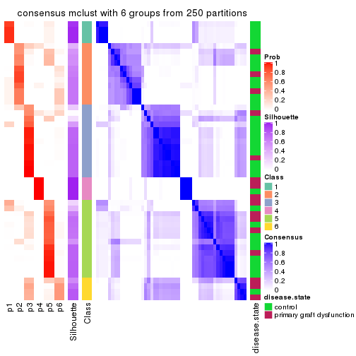
Heatmaps for the membership of samples in all partitions to see how consistent they are:
membership_heatmap(res, k = 2)
membership_heatmap(res, k = 3)
membership_heatmap(res, k = 4)
membership_heatmap(res, k = 5)
membership_heatmap(res, k = 6)
As soon as we have had the classes for columns, we can look for signatures which are significantly different between classes which can be candidate marks for certain classes. Following are the heatmaps for signatures.
Signature heatmaps where rows are scaled:
get_signatures(res, k = 2)

get_signatures(res, k = 3)
get_signatures(res, k = 4)
get_signatures(res, k = 5)
get_signatures(res, k = 6)
Signature heatmaps where rows are not scaled:
get_signatures(res, k = 2, scale_rows = FALSE)

get_signatures(res, k = 3, scale_rows = FALSE)

get_signatures(res, k = 4, scale_rows = FALSE)

get_signatures(res, k = 5, scale_rows = FALSE)
get_signatures(res, k = 6, scale_rows = FALSE)

Compare the overlap of signatures from different k:
compare_signatures(res)
get_signature() returns a data frame invisibly. TO get the list of signatures, the function
call should be assigned to a variable explicitly. In following code, if plot argument is set
to FALSE, no heatmap is plotted while only the differential analysis is performed.
# code only for demonstration
tb = get_signature(res, k = ..., plot = FALSE)
An example of the output of tb is:
#> which_row fdr mean_1 mean_2 scaled_mean_1 scaled_mean_2 km
#> 1 38 0.042760348 8.373488 9.131774 -0.5533452 0.5164555 1
#> 2 40 0.018707592 7.106213 8.469186 -0.6173731 0.5762149 1
#> 3 55 0.019134737 10.221463 11.207825 -0.6159697 0.5749050 1
#> 4 59 0.006059896 5.921854 7.869574 -0.6899429 0.6439467 1
#> 5 60 0.018055526 8.928898 10.211722 -0.6204761 0.5791110 1
#> 6 98 0.009384629 15.714769 14.887706 0.6635654 -0.6193277 2
...
The columns in tb are:
which_row: row indices corresponding to the input matrix.fdr: FDR for the differential test. mean_x: The mean value in group x.scaled_mean_x: The mean value in group x after rows are scaled.km: Row groups if k-means clustering is applied to rows.UMAP plot which shows how samples are separated.
dimension_reduction(res, k = 2, method = "UMAP")
dimension_reduction(res, k = 3, method = "UMAP")
dimension_reduction(res, k = 4, method = "UMAP")
dimension_reduction(res, k = 5, method = "UMAP")
dimension_reduction(res, k = 6, method = "UMAP")
Following heatmap shows how subgroups are split when increasing k:
collect_classes(res)
Test correlation between subgroups and known annotations. If the known annotation is numeric, one-way ANOVA test is applied, and if the known annotation is discrete, chi-squared contingency table test is applied.
test_to_known_factors(res)
#> n disease.state(p) k
#> MAD:mclust 34 NA 2
#> MAD:mclust 49 0.7325 3
#> MAD:mclust 48 0.2712 4
#> MAD:mclust 47 0.2022 5
#> MAD:mclust 44 0.0521 6
If matrix rows can be associated to genes, consider to use GO_Enrichment(res,
...) to perform function enrichment for the signature genes.
The object with results only for a single top-value method and a single partition method can be extracted as:
res = res_list["MAD", "NMF"]
# you can also extract it by
# res = res_list["MAD:NMF"]
A summary of res and all the functions that can be applied to it:
res
#> A 'ConsensusPartition' object with k = 2, 3, 4, 5, 6.
#> On a matrix with 16753 rows and 50 columns.
#> Top rows (1000, 2000, 3000, 4000, 5000) are extracted by 'MAD' method.
#> Subgroups are detected by 'NMF' method.
#> Performed in total 1250 partitions by row resampling.
#> Best k for subgroups seems to be 3.
#>
#> Following methods can be applied to this 'ConsensusPartition' object:
#> [1] "cola_report" "collect_classes" "collect_plots"
#> [4] "collect_stats" "colnames" "compare_signatures"
#> [7] "consensus_heatmap" "dimension_reduction" "functional_enrichment"
#> [10] "get_anno_col" "get_anno" "get_classes"
#> [13] "get_consensus" "get_matrix" "get_membership"
#> [16] "get_param" "get_signatures" "get_stats"
#> [19] "is_best_k" "is_stable_k" "membership_heatmap"
#> [22] "ncol" "nrow" "plot_ecdf"
#> [25] "rownames" "select_partition_number" "show"
#> [28] "suggest_best_k" "test_to_known_factors"
collect_plots() function collects all the plots made from res for all k (number of partitions)
into one single page to provide an easy and fast comparison between different k.
collect_plots(res)
The plots are:
k and the heatmap of
predicted classes for each k.k.k.k.All the plots in panels can be made by individual functions and they are plotted later in this section.
select_partition_number() produces several plots showing different
statistics for choosing “optimized” k. There are following statistics:
k;k, the area increased is defined as \(A_k - A_{k-1}\).The detailed explanations of these statistics can be found in the cola vignette.
Generally speaking, lower PAC score, higher mean silhouette score or higher
concordance corresponds to better partition. Rand index and Jaccard index
measure how similar the current partition is compared to partition with k-1.
If they are too similar, we won't accept k is better than k-1.
select_partition_number(res)
The numeric values for all these statistics can be obtained by get_stats().
get_stats(res)
#> k 1-PAC mean_silhouette concordance area_increased Rand Jaccard
#> 2 2 0.451 0.692 0.879 0.4765 0.519 0.519
#> 3 3 0.618 0.773 0.889 0.3798 0.666 0.434
#> 4 4 0.617 0.632 0.811 0.1366 0.784 0.458
#> 5 5 0.654 0.716 0.836 0.0743 0.828 0.440
#> 6 6 0.660 0.499 0.728 0.0396 0.944 0.738
suggest_best_k() suggests the best \(k\) based on these statistics. The rules are as follows:
NA.suggest_best_k(res)
#> [1] 3
Following shows the table of the partitions (You need to click the show/hide
code output link to see it). The membership matrix (columns with name p*)
is inferred by
clue::cl_consensus()
function with the SE method. Basically the value in the membership matrix
represents the probability to belong to a certain group. The finall class
label for an item is determined with the group with highest probability it
belongs to.
In get_classes() function, the entropy is calculated from the membership
matrix and the silhouette score is calculated from the consensus matrix.
cbind(get_classes(res, k = 2), get_membership(res, k = 2))
#> class entropy silhouette p1 p2
#> GSM198618 2 0.0000 0.805 0.000 1.000
#> GSM198622 1 0.0000 0.861 1.000 0.000
#> GSM198623 1 0.6438 0.724 0.836 0.164
#> GSM198626 1 0.0000 0.861 1.000 0.000
#> GSM198627 1 0.0000 0.861 1.000 0.000
#> GSM198628 1 0.0000 0.861 1.000 0.000
#> GSM198629 1 0.0000 0.861 1.000 0.000
#> GSM198630 1 0.0000 0.861 1.000 0.000
#> GSM198631 1 0.0000 0.861 1.000 0.000
#> GSM198632 1 0.0000 0.861 1.000 0.000
#> GSM198633 1 0.0000 0.861 1.000 0.000
#> GSM198634 1 0.0000 0.861 1.000 0.000
#> GSM198635 1 0.0000 0.861 1.000 0.000
#> GSM198636 1 0.0000 0.861 1.000 0.000
#> GSM198639 1 0.9754 0.300 0.592 0.408
#> GSM198641 1 0.0000 0.861 1.000 0.000
#> GSM198642 1 0.0000 0.861 1.000 0.000
#> GSM198643 1 0.0000 0.861 1.000 0.000
#> GSM198644 2 0.3879 0.778 0.076 0.924
#> GSM198645 1 0.7674 0.655 0.776 0.224
#> GSM198649 2 0.0000 0.805 0.000 1.000
#> GSM198651 1 0.9686 0.130 0.604 0.396
#> GSM198653 2 0.0000 0.805 0.000 1.000
#> GSM198654 2 0.0938 0.803 0.012 0.988
#> GSM198655 2 0.9087 0.479 0.324 0.676
#> GSM198656 1 0.5408 0.768 0.876 0.124
#> GSM198657 1 0.9732 0.310 0.596 0.404
#> GSM198658 2 0.9850 0.217 0.428 0.572
#> GSM198659 2 0.7139 0.675 0.196 0.804
#> GSM198660 1 0.2948 0.827 0.948 0.052
#> GSM198662 2 0.7376 0.667 0.208 0.792
#> GSM198663 2 0.9710 0.359 0.400 0.600
#> GSM198664 1 0.9977 -0.100 0.528 0.472
#> GSM198665 2 0.9922 0.152 0.448 0.552
#> GSM198616 1 0.0000 0.861 1.000 0.000
#> GSM198617 2 0.0376 0.804 0.004 0.996
#> GSM198619 1 0.7602 0.661 0.780 0.220
#> GSM198620 2 0.0000 0.805 0.000 1.000
#> GSM198621 1 0.9754 0.300 0.592 0.408
#> GSM198624 1 0.0000 0.861 1.000 0.000
#> GSM198625 1 0.0000 0.861 1.000 0.000
#> GSM198637 1 0.0000 0.861 1.000 0.000
#> GSM198638 2 0.9795 0.361 0.416 0.584
#> GSM198640 1 0.0000 0.861 1.000 0.000
#> GSM198646 2 0.0000 0.805 0.000 1.000
#> GSM198647 2 0.0000 0.805 0.000 1.000
#> GSM198648 2 0.7219 0.670 0.200 0.800
#> GSM198650 2 0.5842 0.736 0.140 0.860
#> GSM198652 2 0.0000 0.805 0.000 1.000
#> GSM198661 1 0.9129 0.482 0.672 0.328
cbind(get_classes(res, k = 3), get_membership(res, k = 3))
#> class entropy silhouette p1 p2 p3
#> GSM198618 3 0.1529 0.813 0.000 0.040 0.960
#> GSM198622 2 0.5905 0.515 0.352 0.648 0.000
#> GSM198623 1 0.1529 0.892 0.960 0.000 0.040
#> GSM198626 1 0.0000 0.908 1.000 0.000 0.000
#> GSM198627 1 0.2625 0.838 0.916 0.084 0.000
#> GSM198628 1 0.0000 0.908 1.000 0.000 0.000
#> GSM198629 1 0.0000 0.908 1.000 0.000 0.000
#> GSM198630 1 0.0000 0.908 1.000 0.000 0.000
#> GSM198631 1 0.0000 0.908 1.000 0.000 0.000
#> GSM198632 1 0.0424 0.904 0.992 0.008 0.000
#> GSM198633 2 0.3941 0.770 0.156 0.844 0.000
#> GSM198634 1 0.5363 0.522 0.724 0.276 0.000
#> GSM198635 2 0.1289 0.836 0.032 0.968 0.000
#> GSM198636 2 0.6192 0.345 0.420 0.580 0.000
#> GSM198639 3 0.6026 0.503 0.376 0.000 0.624
#> GSM198641 2 0.0592 0.841 0.012 0.988 0.000
#> GSM198642 1 0.1031 0.900 0.976 0.000 0.024
#> GSM198643 1 0.0424 0.906 0.992 0.000 0.008
#> GSM198644 2 0.4062 0.730 0.000 0.836 0.164
#> GSM198645 1 0.4750 0.698 0.784 0.000 0.216
#> GSM198649 3 0.0892 0.822 0.000 0.020 0.980
#> GSM198651 2 0.0000 0.841 0.000 1.000 0.000
#> GSM198653 2 0.1529 0.832 0.000 0.960 0.040
#> GSM198654 3 0.1411 0.838 0.036 0.000 0.964
#> GSM198655 3 0.4663 0.806 0.156 0.016 0.828
#> GSM198656 1 0.2796 0.855 0.908 0.000 0.092
#> GSM198657 3 0.6225 0.354 0.432 0.000 0.568
#> GSM198658 3 0.3879 0.809 0.152 0.000 0.848
#> GSM198659 2 0.2878 0.796 0.000 0.904 0.096
#> GSM198660 1 0.4555 0.725 0.800 0.000 0.200
#> GSM198662 3 0.2537 0.839 0.080 0.000 0.920
#> GSM198663 2 0.0000 0.841 0.000 1.000 0.000
#> GSM198664 2 0.0000 0.841 0.000 1.000 0.000
#> GSM198665 3 0.4002 0.803 0.160 0.000 0.840
#> GSM198616 1 0.0000 0.908 1.000 0.000 0.000
#> GSM198617 3 0.1529 0.840 0.040 0.000 0.960
#> GSM198619 1 0.2711 0.859 0.912 0.000 0.088
#> GSM198620 3 0.2878 0.774 0.000 0.096 0.904
#> GSM198621 3 0.5678 0.616 0.316 0.000 0.684
#> GSM198624 1 0.0592 0.901 0.988 0.012 0.000
#> GSM198625 2 0.6309 0.130 0.496 0.504 0.000
#> GSM198637 1 0.3412 0.791 0.876 0.124 0.000
#> GSM198638 2 0.1999 0.833 0.012 0.952 0.036
#> GSM198640 1 0.0000 0.908 1.000 0.000 0.000
#> GSM198646 3 0.1289 0.817 0.000 0.032 0.968
#> GSM198647 3 0.0424 0.826 0.000 0.008 0.992
#> GSM198648 2 0.1163 0.835 0.000 0.972 0.028
#> GSM198650 3 0.2261 0.840 0.068 0.000 0.932
#> GSM198652 3 0.4750 0.628 0.000 0.216 0.784
#> GSM198661 1 0.5363 0.581 0.724 0.000 0.276
cbind(get_classes(res, k = 4), get_membership(res, k = 4))
#> class entropy silhouette p1 p2 p3 p4
#> GSM198618 4 0.0927 0.831 0.000 0.016 0.008 0.976
#> GSM198622 1 0.4679 0.446 0.648 0.352 0.000 0.000
#> GSM198623 1 0.5508 -0.239 0.508 0.000 0.476 0.016
#> GSM198626 1 0.4877 0.526 0.592 0.000 0.408 0.000
#> GSM198627 1 0.0657 0.783 0.984 0.012 0.004 0.000
#> GSM198628 1 0.4804 0.556 0.616 0.000 0.384 0.000
#> GSM198629 1 0.0188 0.781 0.996 0.000 0.004 0.000
#> GSM198630 1 0.4585 0.601 0.668 0.000 0.332 0.000
#> GSM198631 1 0.1637 0.773 0.940 0.000 0.060 0.000
#> GSM198632 1 0.0895 0.782 0.976 0.020 0.004 0.000
#> GSM198633 2 0.2867 0.826 0.104 0.884 0.012 0.000
#> GSM198634 1 0.1557 0.772 0.944 0.056 0.000 0.000
#> GSM198635 2 0.1474 0.875 0.052 0.948 0.000 0.000
#> GSM198636 1 0.6257 0.432 0.508 0.056 0.436 0.000
#> GSM198639 4 0.3401 0.712 0.152 0.000 0.008 0.840
#> GSM198641 2 0.2197 0.864 0.004 0.916 0.080 0.000
#> GSM198642 3 0.4730 0.390 0.364 0.000 0.636 0.000
#> GSM198643 1 0.0336 0.780 0.992 0.000 0.008 0.000
#> GSM198644 3 0.4720 0.198 0.000 0.264 0.720 0.016
#> GSM198645 3 0.7172 0.509 0.304 0.000 0.532 0.164
#> GSM198649 4 0.0000 0.835 0.000 0.000 0.000 1.000
#> GSM198651 2 0.5095 0.538 0.004 0.624 0.368 0.004
#> GSM198653 2 0.2131 0.876 0.000 0.932 0.032 0.036
#> GSM198654 3 0.5257 0.266 0.008 0.000 0.548 0.444
#> GSM198655 3 0.1807 0.531 0.000 0.008 0.940 0.052
#> GSM198656 3 0.4011 0.571 0.208 0.000 0.784 0.008
#> GSM198657 3 0.5289 0.414 0.020 0.000 0.636 0.344
#> GSM198658 3 0.5597 0.192 0.020 0.000 0.516 0.464
#> GSM198659 2 0.3688 0.726 0.000 0.792 0.000 0.208
#> GSM198660 3 0.7358 0.400 0.392 0.000 0.448 0.160
#> GSM198662 4 0.5453 0.102 0.020 0.000 0.388 0.592
#> GSM198663 2 0.0188 0.890 0.004 0.996 0.000 0.000
#> GSM198664 2 0.0000 0.890 0.000 1.000 0.000 0.000
#> GSM198665 3 0.5097 0.298 0.004 0.000 0.568 0.428
#> GSM198616 1 0.0376 0.780 0.992 0.000 0.004 0.004
#> GSM198617 4 0.1913 0.816 0.020 0.000 0.040 0.940
#> GSM198619 1 0.2216 0.734 0.908 0.000 0.000 0.092
#> GSM198620 4 0.1284 0.812 0.000 0.024 0.012 0.964
#> GSM198621 4 0.2611 0.781 0.096 0.000 0.008 0.896
#> GSM198624 1 0.0712 0.783 0.984 0.008 0.004 0.004
#> GSM198625 1 0.5416 0.674 0.740 0.112 0.148 0.000
#> GSM198637 1 0.1022 0.778 0.968 0.032 0.000 0.000
#> GSM198638 2 0.1486 0.882 0.008 0.960 0.024 0.008
#> GSM198640 1 0.3324 0.671 0.852 0.012 0.136 0.000
#> GSM198646 4 0.0000 0.835 0.000 0.000 0.000 1.000
#> GSM198647 4 0.0000 0.835 0.000 0.000 0.000 1.000
#> GSM198648 2 0.0376 0.890 0.000 0.992 0.004 0.004
#> GSM198650 4 0.4453 0.505 0.012 0.000 0.244 0.744
#> GSM198652 3 0.3037 0.519 0.000 0.076 0.888 0.036
#> GSM198661 3 0.4525 0.593 0.116 0.000 0.804 0.080
cbind(get_classes(res, k = 5), get_membership(res, k = 5))
#> class entropy silhouette p1 p2 p3 p4 p5
#> GSM198618 4 0.3702 0.802 0.000 0.096 0.084 0.820 0.000
#> GSM198622 2 0.3876 0.500 0.000 0.684 0.000 0.000 0.316
#> GSM198623 3 0.1792 0.829 0.000 0.000 0.916 0.000 0.084
#> GSM198626 1 0.4009 0.543 0.684 0.000 0.004 0.000 0.312
#> GSM198627 5 0.2338 0.748 0.112 0.000 0.004 0.000 0.884
#> GSM198628 1 0.4066 0.520 0.672 0.000 0.004 0.000 0.324
#> GSM198629 5 0.2497 0.748 0.112 0.000 0.004 0.004 0.880
#> GSM198630 1 0.4380 0.420 0.616 0.000 0.008 0.000 0.376
#> GSM198631 5 0.5359 0.524 0.256 0.000 0.100 0.000 0.644
#> GSM198632 5 0.2269 0.777 0.020 0.028 0.032 0.000 0.920
#> GSM198633 2 0.2812 0.802 0.004 0.876 0.096 0.000 0.024
#> GSM198634 5 0.3548 0.672 0.004 0.188 0.012 0.000 0.796
#> GSM198635 2 0.1197 0.840 0.000 0.952 0.000 0.000 0.048
#> GSM198636 1 0.3422 0.622 0.792 0.004 0.004 0.000 0.200
#> GSM198639 4 0.4423 0.682 0.004 0.000 0.036 0.728 0.232
#> GSM198641 2 0.1831 0.829 0.076 0.920 0.000 0.000 0.004
#> GSM198642 3 0.3800 0.773 0.108 0.000 0.812 0.000 0.080
#> GSM198643 5 0.2806 0.701 0.000 0.000 0.152 0.004 0.844
#> GSM198644 1 0.2647 0.638 0.892 0.008 0.076 0.024 0.000
#> GSM198645 3 0.1695 0.840 0.008 0.000 0.940 0.008 0.044
#> GSM198649 4 0.1106 0.875 0.012 0.000 0.024 0.964 0.000
#> GSM198651 1 0.3728 0.453 0.748 0.244 0.000 0.008 0.000
#> GSM198653 2 0.2983 0.802 0.076 0.868 0.000 0.056 0.000
#> GSM198654 3 0.3691 0.786 0.076 0.000 0.820 0.104 0.000
#> GSM198655 1 0.2374 0.648 0.912 0.000 0.020 0.052 0.016
#> GSM198656 3 0.2616 0.805 0.100 0.000 0.880 0.000 0.020
#> GSM198657 3 0.0955 0.835 0.028 0.000 0.968 0.004 0.000
#> GSM198658 3 0.2700 0.824 0.004 0.000 0.884 0.088 0.024
#> GSM198659 2 0.2462 0.808 0.008 0.880 0.000 0.112 0.000
#> GSM198660 3 0.2825 0.814 0.000 0.000 0.860 0.016 0.124
#> GSM198662 3 0.3201 0.818 0.000 0.000 0.852 0.096 0.052
#> GSM198663 2 0.0290 0.850 0.008 0.992 0.000 0.000 0.000
#> GSM198664 2 0.0324 0.850 0.000 0.992 0.004 0.000 0.004
#> GSM198665 3 0.3631 0.793 0.072 0.000 0.824 0.104 0.000
#> GSM198616 5 0.1822 0.770 0.004 0.004 0.056 0.004 0.932
#> GSM198617 3 0.5593 0.442 0.000 0.000 0.572 0.340 0.088
#> GSM198619 5 0.3599 0.710 0.004 0.000 0.060 0.104 0.832
#> GSM198620 4 0.1211 0.865 0.024 0.016 0.000 0.960 0.000
#> GSM198621 4 0.2046 0.852 0.000 0.000 0.016 0.916 0.068
#> GSM198624 5 0.2497 0.748 0.112 0.004 0.000 0.004 0.880
#> GSM198625 5 0.5044 0.332 0.352 0.036 0.004 0.000 0.608
#> GSM198637 5 0.3281 0.755 0.008 0.052 0.028 0.036 0.876
#> GSM198638 2 0.4213 0.526 0.000 0.680 0.308 0.000 0.012
#> GSM198640 3 0.5384 0.622 0.008 0.048 0.672 0.016 0.256
#> GSM198646 4 0.0798 0.873 0.016 0.000 0.008 0.976 0.000
#> GSM198647 4 0.1331 0.874 0.008 0.000 0.040 0.952 0.000
#> GSM198648 2 0.1117 0.848 0.016 0.964 0.000 0.020 0.000
#> GSM198650 4 0.4756 0.728 0.072 0.000 0.152 0.756 0.020
#> GSM198652 1 0.5543 0.272 0.612 0.016 0.316 0.056 0.000
#> GSM198661 3 0.1830 0.824 0.068 0.000 0.924 0.000 0.008
cbind(get_classes(res, k = 6), get_membership(res, k = 6))
#> class entropy silhouette p1 p2 p3 p4 p5 p6
#> GSM198618 4 0.4629 0.6384 0.004 0.032 0.056 0.752 0.148 0.008
#> GSM198622 2 0.4792 0.4675 0.180 0.672 0.000 0.000 0.148 0.000
#> GSM198623 3 0.3332 0.6529 0.144 0.000 0.808 0.000 0.048 0.000
#> GSM198626 1 0.4566 -0.0224 0.488 0.000 0.008 0.000 0.020 0.484
#> GSM198627 1 0.2400 0.4272 0.872 0.004 0.000 0.000 0.116 0.008
#> GSM198628 1 0.5084 0.1079 0.504 0.000 0.044 0.000 0.016 0.436
#> GSM198629 1 0.2249 0.4748 0.900 0.000 0.000 0.004 0.064 0.032
#> GSM198630 1 0.4388 0.3573 0.636 0.000 0.016 0.000 0.016 0.332
#> GSM198631 1 0.4820 0.4779 0.716 0.000 0.112 0.000 0.028 0.144
#> GSM198632 1 0.4310 0.2644 0.764 0.064 0.024 0.000 0.144 0.004
#> GSM198633 2 0.5243 0.5850 0.032 0.704 0.088 0.004 0.160 0.012
#> GSM198634 1 0.5486 -0.0230 0.496 0.372 0.000 0.000 0.132 0.000
#> GSM198635 2 0.2532 0.7026 0.052 0.884 0.000 0.000 0.060 0.004
#> GSM198636 6 0.4087 0.4678 0.264 0.004 0.004 0.000 0.024 0.704
#> GSM198639 4 0.6228 -0.0625 0.180 0.000 0.020 0.440 0.360 0.000
#> GSM198641 2 0.2946 0.6627 0.012 0.824 0.000 0.000 0.004 0.160
#> GSM198642 3 0.4159 0.6300 0.132 0.000 0.776 0.000 0.036 0.056
#> GSM198643 1 0.5498 -0.3265 0.504 0.000 0.116 0.000 0.376 0.004
#> GSM198644 6 0.3140 0.7362 0.036 0.004 0.016 0.024 0.048 0.872
#> GSM198645 3 0.4099 0.6900 0.020 0.000 0.776 0.016 0.160 0.028
#> GSM198649 4 0.0436 0.7841 0.000 0.004 0.000 0.988 0.004 0.004
#> GSM198651 6 0.3231 0.6549 0.000 0.180 0.000 0.012 0.008 0.800
#> GSM198653 2 0.3413 0.6783 0.000 0.824 0.000 0.052 0.012 0.112
#> GSM198654 3 0.4663 0.6862 0.000 0.000 0.736 0.040 0.144 0.080
#> GSM198655 6 0.2622 0.7309 0.064 0.000 0.004 0.028 0.016 0.888
#> GSM198656 3 0.4441 0.6318 0.028 0.000 0.724 0.000 0.204 0.044
#> GSM198657 3 0.0935 0.7276 0.000 0.000 0.964 0.000 0.004 0.032
#> GSM198658 3 0.4374 0.6436 0.000 0.000 0.680 0.040 0.272 0.008
#> GSM198659 2 0.5381 0.2605 0.000 0.536 0.008 0.388 0.048 0.020
#> GSM198660 3 0.3550 0.6824 0.000 0.004 0.752 0.004 0.232 0.008
#> GSM198662 3 0.2954 0.7235 0.000 0.000 0.852 0.048 0.096 0.004
#> GSM198663 2 0.0717 0.7285 0.000 0.976 0.000 0.000 0.008 0.016
#> GSM198664 2 0.0291 0.7300 0.004 0.992 0.000 0.000 0.004 0.000
#> GSM198665 3 0.5776 0.6221 0.000 0.000 0.624 0.060 0.200 0.116
#> GSM198616 1 0.4320 0.0681 0.692 0.004 0.028 0.004 0.268 0.004
#> GSM198617 3 0.6271 0.2422 0.008 0.000 0.404 0.212 0.372 0.004
#> GSM198619 5 0.5478 0.2947 0.452 0.000 0.024 0.064 0.460 0.000
#> GSM198620 4 0.1426 0.7659 0.000 0.008 0.000 0.948 0.028 0.016
#> GSM198621 4 0.3704 0.6622 0.052 0.000 0.012 0.796 0.140 0.000
#> GSM198624 1 0.1245 0.4971 0.952 0.000 0.000 0.000 0.016 0.032
#> GSM198625 1 0.4321 0.4907 0.732 0.020 0.008 0.000 0.028 0.212
#> GSM198637 5 0.4588 0.4132 0.340 0.020 0.008 0.004 0.624 0.004
#> GSM198638 2 0.6030 0.1308 0.000 0.492 0.336 0.004 0.156 0.012
#> GSM198640 3 0.6907 0.4480 0.204 0.044 0.528 0.012 0.196 0.016
#> GSM198646 4 0.0909 0.7828 0.000 0.000 0.000 0.968 0.020 0.012
#> GSM198647 4 0.1053 0.7815 0.000 0.004 0.012 0.964 0.020 0.000
#> GSM198648 2 0.2637 0.7067 0.000 0.876 0.000 0.088 0.012 0.024
#> GSM198650 5 0.6392 0.1369 0.008 0.000 0.132 0.244 0.556 0.060
#> GSM198652 6 0.5086 0.6017 0.000 0.024 0.112 0.040 0.092 0.732
#> GSM198661 3 0.1682 0.7268 0.000 0.000 0.928 0.000 0.020 0.052
Heatmaps for the consensus matrix. It visualizes the probability of two samples to be in a same group.
consensus_heatmap(res, k = 2)
consensus_heatmap(res, k = 3)
consensus_heatmap(res, k = 4)
consensus_heatmap(res, k = 5)
consensus_heatmap(res, k = 6)
Heatmaps for the membership of samples in all partitions to see how consistent they are:
membership_heatmap(res, k = 2)

membership_heatmap(res, k = 3)

membership_heatmap(res, k = 4)
membership_heatmap(res, k = 5)

membership_heatmap(res, k = 6)
As soon as we have had the classes for columns, we can look for signatures which are significantly different between classes which can be candidate marks for certain classes. Following are the heatmaps for signatures.
Signature heatmaps where rows are scaled:
get_signatures(res, k = 2)
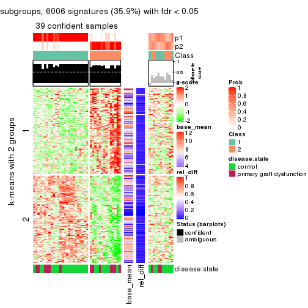
get_signatures(res, k = 3)
get_signatures(res, k = 4)
get_signatures(res, k = 5)
get_signatures(res, k = 6)
Signature heatmaps where rows are not scaled:
get_signatures(res, k = 2, scale_rows = FALSE)
get_signatures(res, k = 3, scale_rows = FALSE)
get_signatures(res, k = 4, scale_rows = FALSE)
get_signatures(res, k = 5, scale_rows = FALSE)
get_signatures(res, k = 6, scale_rows = FALSE)
Compare the overlap of signatures from different k:
compare_signatures(res)
get_signature() returns a data frame invisibly. TO get the list of signatures, the function
call should be assigned to a variable explicitly. In following code, if plot argument is set
to FALSE, no heatmap is plotted while only the differential analysis is performed.
# code only for demonstration
tb = get_signature(res, k = ..., plot = FALSE)
An example of the output of tb is:
#> which_row fdr mean_1 mean_2 scaled_mean_1 scaled_mean_2 km
#> 1 38 0.042760348 8.373488 9.131774 -0.5533452 0.5164555 1
#> 2 40 0.018707592 7.106213 8.469186 -0.6173731 0.5762149 1
#> 3 55 0.019134737 10.221463 11.207825 -0.6159697 0.5749050 1
#> 4 59 0.006059896 5.921854 7.869574 -0.6899429 0.6439467 1
#> 5 60 0.018055526 8.928898 10.211722 -0.6204761 0.5791110 1
#> 6 98 0.009384629 15.714769 14.887706 0.6635654 -0.6193277 2
...
The columns in tb are:
which_row: row indices corresponding to the input matrix.fdr: FDR for the differential test. mean_x: The mean value in group x.scaled_mean_x: The mean value in group x after rows are scaled.km: Row groups if k-means clustering is applied to rows.UMAP plot which shows how samples are separated.
dimension_reduction(res, k = 2, method = "UMAP")
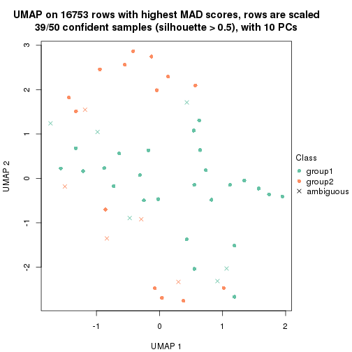
dimension_reduction(res, k = 3, method = "UMAP")
dimension_reduction(res, k = 4, method = "UMAP")
dimension_reduction(res, k = 5, method = "UMAP")
dimension_reduction(res, k = 6, method = "UMAP")
Following heatmap shows how subgroups are split when increasing k:
collect_classes(res)
Test correlation between subgroups and known annotations. If the known annotation is numeric, one-way ANOVA test is applied, and if the known annotation is discrete, chi-squared contingency table test is applied.
test_to_known_factors(res)
#> n disease.state(p) k
#> MAD:NMF 39 0.1942 2
#> MAD:NMF 47 0.2441 3
#> MAD:NMF 39 0.2326 4
#> MAD:NMF 45 0.0816 5
#> MAD:NMF 28 0.0584 6
If matrix rows can be associated to genes, consider to use GO_Enrichment(res,
...) to perform function enrichment for the signature genes.
The object with results only for a single top-value method and a single partition method can be extracted as:
res = res_list["ATC", "hclust"]
# you can also extract it by
# res = res_list["ATC:hclust"]
A summary of res and all the functions that can be applied to it:
res
#> A 'ConsensusPartition' object with k = 2, 3, 4, 5, 6.
#> On a matrix with 16753 rows and 50 columns.
#> Top rows (1000, 2000, 3000, 4000, 5000) are extracted by 'ATC' method.
#> Subgroups are detected by 'hclust' method.
#> Performed in total 1250 partitions by row resampling.
#> Best k for subgroups seems to be 2.
#>
#> Following methods can be applied to this 'ConsensusPartition' object:
#> [1] "cola_report" "collect_classes" "collect_plots"
#> [4] "collect_stats" "colnames" "compare_signatures"
#> [7] "consensus_heatmap" "dimension_reduction" "functional_enrichment"
#> [10] "get_anno_col" "get_anno" "get_classes"
#> [13] "get_consensus" "get_matrix" "get_membership"
#> [16] "get_param" "get_signatures" "get_stats"
#> [19] "is_best_k" "is_stable_k" "membership_heatmap"
#> [22] "ncol" "nrow" "plot_ecdf"
#> [25] "rownames" "select_partition_number" "show"
#> [28] "suggest_best_k" "test_to_known_factors"
collect_plots() function collects all the plots made from res for all k (number of partitions)
into one single page to provide an easy and fast comparison between different k.
collect_plots(res)

The plots are:
k and the heatmap of
predicted classes for each k.k.k.k.All the plots in panels can be made by individual functions and they are plotted later in this section.
select_partition_number() produces several plots showing different
statistics for choosing “optimized” k. There are following statistics:
k;k, the area increased is defined as \(A_k - A_{k-1}\).The detailed explanations of these statistics can be found in the cola vignette.
Generally speaking, lower PAC score, higher mean silhouette score or higher
concordance corresponds to better partition. Rand index and Jaccard index
measure how similar the current partition is compared to partition with k-1.
If they are too similar, we won't accept k is better than k-1.
select_partition_number(res)
The numeric values for all these statistics can be obtained by get_stats().
get_stats(res)
#> k 1-PAC mean_silhouette concordance area_increased Rand Jaccard
#> 2 2 1.000 0.961 0.974 0.213 0.816 0.816
#> 3 3 0.468 0.699 0.854 1.598 0.587 0.494
#> 4 4 0.516 0.605 0.824 0.171 0.878 0.722
#> 5 5 0.520 0.595 0.757 0.137 0.897 0.711
#> 6 6 0.609 0.552 0.763 0.054 0.900 0.662
suggest_best_k() suggests the best \(k\) based on these statistics. The rules are as follows:
NA.suggest_best_k(res)
#> [1] 2
Following shows the table of the partitions (You need to click the show/hide
code output link to see it). The membership matrix (columns with name p*)
is inferred by
clue::cl_consensus()
function with the SE method. Basically the value in the membership matrix
represents the probability to belong to a certain group. The finall class
label for an item is determined with the group with highest probability it
belongs to.
In get_classes() function, the entropy is calculated from the membership
matrix and the silhouette score is calculated from the consensus matrix.
cbind(get_classes(res, k = 2), get_membership(res, k = 2))
#> class entropy silhouette p1 p2
#> GSM198618 1 0.3733 0.942 0.928 0.072
#> GSM198622 1 0.0000 0.970 1.000 0.000
#> GSM198623 1 0.0000 0.970 1.000 0.000
#> GSM198626 1 0.0000 0.970 1.000 0.000
#> GSM198627 1 0.0000 0.970 1.000 0.000
#> GSM198628 1 0.0000 0.970 1.000 0.000
#> GSM198629 1 0.0000 0.970 1.000 0.000
#> GSM198630 1 0.0000 0.970 1.000 0.000
#> GSM198631 1 0.0000 0.970 1.000 0.000
#> GSM198632 1 0.0000 0.970 1.000 0.000
#> GSM198633 1 0.0000 0.970 1.000 0.000
#> GSM198634 1 0.0000 0.970 1.000 0.000
#> GSM198635 1 0.0000 0.970 1.000 0.000
#> GSM198636 1 0.0000 0.970 1.000 0.000
#> GSM198639 1 0.0000 0.970 1.000 0.000
#> GSM198641 1 0.0000 0.970 1.000 0.000
#> GSM198642 1 0.0000 0.970 1.000 0.000
#> GSM198643 1 0.0000 0.970 1.000 0.000
#> GSM198644 1 0.0376 0.969 0.996 0.004
#> GSM198645 1 0.0000 0.970 1.000 0.000
#> GSM198649 2 0.0000 1.000 0.000 1.000
#> GSM198651 1 0.3733 0.942 0.928 0.072
#> GSM198653 1 0.5946 0.877 0.856 0.144
#> GSM198654 1 0.3733 0.942 0.928 0.072
#> GSM198655 1 0.0376 0.969 0.996 0.004
#> GSM198656 1 0.0000 0.970 1.000 0.000
#> GSM198657 1 0.0000 0.970 1.000 0.000
#> GSM198658 1 0.3584 0.944 0.932 0.068
#> GSM198659 1 0.6048 0.873 0.852 0.148
#> GSM198660 1 0.3733 0.942 0.928 0.072
#> GSM198662 1 0.3733 0.942 0.928 0.072
#> GSM198663 1 0.5946 0.877 0.856 0.144
#> GSM198664 1 0.3733 0.942 0.928 0.072
#> GSM198665 1 0.0376 0.969 0.996 0.004
#> GSM198616 1 0.0000 0.970 1.000 0.000
#> GSM198617 1 0.3733 0.942 0.928 0.072
#> GSM198619 1 0.0000 0.970 1.000 0.000
#> GSM198620 2 0.0000 1.000 0.000 1.000
#> GSM198621 1 0.3733 0.942 0.928 0.072
#> GSM198624 1 0.0000 0.970 1.000 0.000
#> GSM198625 1 0.0000 0.970 1.000 0.000
#> GSM198637 1 0.0000 0.970 1.000 0.000
#> GSM198638 1 0.3733 0.942 0.928 0.072
#> GSM198640 1 0.0000 0.970 1.000 0.000
#> GSM198646 2 0.0000 1.000 0.000 1.000
#> GSM198647 2 0.0000 1.000 0.000 1.000
#> GSM198648 2 0.0000 1.000 0.000 1.000
#> GSM198650 1 0.3584 0.944 0.932 0.068
#> GSM198652 1 0.3733 0.942 0.928 0.072
#> GSM198661 1 0.0000 0.970 1.000 0.000
cbind(get_classes(res, k = 3), get_membership(res, k = 3))
#> class entropy silhouette p1 p2 p3
#> GSM198618 3 0.2356 0.770 0.072 0.000 0.928
#> GSM198622 1 0.4399 0.739 0.812 0.000 0.188
#> GSM198623 1 0.5431 0.497 0.716 0.000 0.284
#> GSM198626 1 0.0000 0.846 1.000 0.000 0.000
#> GSM198627 1 0.0000 0.846 1.000 0.000 0.000
#> GSM198628 1 0.0000 0.846 1.000 0.000 0.000
#> GSM198629 1 0.0000 0.846 1.000 0.000 0.000
#> GSM198630 1 0.0000 0.846 1.000 0.000 0.000
#> GSM198631 1 0.0000 0.846 1.000 0.000 0.000
#> GSM198632 1 0.1529 0.853 0.960 0.000 0.040
#> GSM198633 1 0.4399 0.739 0.812 0.000 0.188
#> GSM198634 1 0.2261 0.841 0.932 0.000 0.068
#> GSM198635 1 0.4399 0.739 0.812 0.000 0.188
#> GSM198636 1 0.1411 0.853 0.964 0.000 0.036
#> GSM198639 3 0.6244 0.382 0.440 0.000 0.560
#> GSM198641 1 0.4399 0.739 0.812 0.000 0.188
#> GSM198642 1 0.5431 0.497 0.716 0.000 0.284
#> GSM198643 1 0.1529 0.853 0.960 0.000 0.040
#> GSM198644 1 0.6305 -0.203 0.516 0.000 0.484
#> GSM198645 3 0.6244 0.382 0.440 0.000 0.560
#> GSM198649 2 0.0000 0.989 0.000 1.000 0.000
#> GSM198651 3 0.2796 0.765 0.092 0.000 0.908
#> GSM198653 3 0.0000 0.709 0.000 0.000 1.000
#> GSM198654 3 0.2356 0.770 0.072 0.000 0.928
#> GSM198655 3 0.6244 0.383 0.440 0.000 0.560
#> GSM198656 3 0.6274 0.312 0.456 0.000 0.544
#> GSM198657 3 0.6274 0.312 0.456 0.000 0.544
#> GSM198658 3 0.2448 0.770 0.076 0.000 0.924
#> GSM198659 3 0.0237 0.707 0.000 0.004 0.996
#> GSM198660 3 0.3879 0.737 0.152 0.000 0.848
#> GSM198662 3 0.2356 0.770 0.072 0.000 0.928
#> GSM198663 3 0.0000 0.709 0.000 0.000 1.000
#> GSM198664 3 0.6274 0.294 0.456 0.000 0.544
#> GSM198665 3 0.5926 0.538 0.356 0.000 0.644
#> GSM198616 1 0.1411 0.853 0.964 0.000 0.036
#> GSM198617 3 0.2356 0.770 0.072 0.000 0.928
#> GSM198619 1 0.3752 0.764 0.856 0.000 0.144
#> GSM198620 2 0.0000 0.989 0.000 1.000 0.000
#> GSM198621 3 0.2356 0.770 0.072 0.000 0.928
#> GSM198624 1 0.1529 0.853 0.960 0.000 0.040
#> GSM198625 1 0.0000 0.846 1.000 0.000 0.000
#> GSM198637 1 0.4702 0.678 0.788 0.000 0.212
#> GSM198638 3 0.6280 0.282 0.460 0.000 0.540
#> GSM198640 1 0.1529 0.853 0.960 0.000 0.040
#> GSM198646 2 0.0000 0.989 0.000 1.000 0.000
#> GSM198647 2 0.0000 0.989 0.000 1.000 0.000
#> GSM198648 2 0.2356 0.955 0.000 0.928 0.072
#> GSM198650 3 0.2448 0.770 0.076 0.000 0.924
#> GSM198652 3 0.2356 0.770 0.072 0.000 0.928
#> GSM198661 3 0.6274 0.312 0.456 0.000 0.544
cbind(get_classes(res, k = 4), get_membership(res, k = 4))
#> class entropy silhouette p1 p2 p3 p4
#> GSM198618 3 0.5760 -0.12664 0.028 0.448 0.524 0.000
#> GSM198622 1 0.3351 0.74394 0.844 0.148 0.008 0.000
#> GSM198623 1 0.4872 0.24484 0.640 0.004 0.356 0.000
#> GSM198626 1 0.1211 0.80761 0.960 0.040 0.000 0.000
#> GSM198627 1 0.1211 0.80761 0.960 0.040 0.000 0.000
#> GSM198628 1 0.1211 0.80761 0.960 0.040 0.000 0.000
#> GSM198629 1 0.1211 0.80761 0.960 0.040 0.000 0.000
#> GSM198630 1 0.1211 0.80761 0.960 0.040 0.000 0.000
#> GSM198631 1 0.1211 0.80761 0.960 0.040 0.000 0.000
#> GSM198632 1 0.0336 0.81176 0.992 0.000 0.008 0.000
#> GSM198633 1 0.3351 0.74394 0.844 0.148 0.008 0.000
#> GSM198634 1 0.1118 0.80468 0.964 0.036 0.000 0.000
#> GSM198635 1 0.3351 0.74394 0.844 0.148 0.008 0.000
#> GSM198636 1 0.0188 0.81226 0.996 0.000 0.004 0.000
#> GSM198639 3 0.5119 0.32542 0.440 0.004 0.556 0.000
#> GSM198641 1 0.3351 0.74394 0.844 0.148 0.008 0.000
#> GSM198642 1 0.4872 0.24484 0.640 0.004 0.356 0.000
#> GSM198643 1 0.0336 0.81176 0.992 0.000 0.008 0.000
#> GSM198644 1 0.5873 -0.00148 0.548 0.036 0.416 0.000
#> GSM198645 3 0.5119 0.32542 0.440 0.004 0.556 0.000
#> GSM198649 4 0.0000 0.98345 0.000 0.000 0.000 1.000
#> GSM198651 2 0.5920 0.35981 0.052 0.612 0.336 0.000
#> GSM198653 2 0.1356 0.84226 0.032 0.960 0.008 0.000
#> GSM198654 3 0.0000 0.53036 0.000 0.000 1.000 0.000
#> GSM198655 3 0.5771 0.24280 0.460 0.028 0.512 0.000
#> GSM198656 3 0.4817 0.42781 0.388 0.000 0.612 0.000
#> GSM198657 3 0.4817 0.42781 0.388 0.000 0.612 0.000
#> GSM198658 3 0.0336 0.53568 0.008 0.000 0.992 0.000
#> GSM198659 2 0.1796 0.83862 0.032 0.948 0.016 0.004
#> GSM198660 3 0.4424 0.54651 0.088 0.100 0.812 0.000
#> GSM198662 3 0.3764 0.41281 0.000 0.216 0.784 0.000
#> GSM198663 2 0.1356 0.84226 0.032 0.960 0.008 0.000
#> GSM198664 1 0.7375 0.16492 0.488 0.336 0.176 0.000
#> GSM198665 3 0.5527 0.45828 0.356 0.028 0.616 0.000
#> GSM198616 1 0.0524 0.81175 0.988 0.004 0.008 0.000
#> GSM198617 3 0.3598 0.50358 0.028 0.124 0.848 0.000
#> GSM198619 1 0.2773 0.73184 0.880 0.004 0.116 0.000
#> GSM198620 4 0.0000 0.98345 0.000 0.000 0.000 1.000
#> GSM198621 3 0.3598 0.50358 0.028 0.124 0.848 0.000
#> GSM198624 1 0.0336 0.81176 0.992 0.000 0.008 0.000
#> GSM198625 1 0.1211 0.80761 0.960 0.040 0.000 0.000
#> GSM198637 1 0.4181 0.68881 0.820 0.052 0.128 0.000
#> GSM198638 1 0.7363 0.17276 0.492 0.332 0.176 0.000
#> GSM198640 1 0.0336 0.81176 0.992 0.000 0.008 0.000
#> GSM198646 4 0.0000 0.98345 0.000 0.000 0.000 1.000
#> GSM198647 4 0.0000 0.98345 0.000 0.000 0.000 1.000
#> GSM198648 4 0.1867 0.93078 0.000 0.072 0.000 0.928
#> GSM198650 3 0.0336 0.53568 0.008 0.000 0.992 0.000
#> GSM198652 3 0.5638 -0.10194 0.028 0.388 0.584 0.000
#> GSM198661 3 0.4817 0.42781 0.388 0.000 0.612 0.000
cbind(get_classes(res, k = 5), get_membership(res, k = 5))
#> class entropy silhouette p1 p2 p3 p4 p5
#> GSM198618 3 0.6600 -0.0790 0.080 0.424 0.452 0.000 0.044
#> GSM198622 5 0.0000 0.6549 0.000 0.000 0.000 0.000 1.000
#> GSM198623 5 0.6801 0.1115 0.292 0.000 0.348 0.000 0.360
#> GSM198626 1 0.2074 1.0000 0.896 0.000 0.000 0.000 0.104
#> GSM198627 1 0.2074 1.0000 0.896 0.000 0.000 0.000 0.104
#> GSM198628 1 0.2074 1.0000 0.896 0.000 0.000 0.000 0.104
#> GSM198629 1 0.2074 1.0000 0.896 0.000 0.000 0.000 0.104
#> GSM198630 1 0.2074 1.0000 0.896 0.000 0.000 0.000 0.104
#> GSM198631 1 0.2074 1.0000 0.896 0.000 0.000 0.000 0.104
#> GSM198632 5 0.3395 0.6705 0.236 0.000 0.000 0.000 0.764
#> GSM198633 5 0.0000 0.6549 0.000 0.000 0.000 0.000 1.000
#> GSM198634 5 0.2377 0.6801 0.128 0.000 0.000 0.000 0.872
#> GSM198635 5 0.0000 0.6549 0.000 0.000 0.000 0.000 1.000
#> GSM198636 5 0.3177 0.6798 0.208 0.000 0.000 0.000 0.792
#> GSM198639 3 0.4996 0.2735 0.032 0.000 0.548 0.000 0.420
#> GSM198641 5 0.0000 0.6549 0.000 0.000 0.000 0.000 1.000
#> GSM198642 5 0.6801 0.1115 0.292 0.000 0.348 0.000 0.360
#> GSM198643 5 0.3395 0.6705 0.236 0.000 0.000 0.000 0.764
#> GSM198644 5 0.6401 0.0197 0.080 0.032 0.408 0.000 0.480
#> GSM198645 3 0.4996 0.2735 0.032 0.000 0.548 0.000 0.420
#> GSM198649 4 0.0000 0.9820 0.000 0.000 0.000 1.000 0.000
#> GSM198651 2 0.6163 0.3544 0.028 0.580 0.304 0.000 0.088
#> GSM198653 2 0.1270 0.8170 0.000 0.948 0.000 0.000 0.052
#> GSM198654 3 0.0609 0.5502 0.020 0.000 0.980 0.000 0.000
#> GSM198655 3 0.6238 0.1847 0.080 0.024 0.504 0.000 0.392
#> GSM198656 3 0.5588 0.3945 0.104 0.000 0.604 0.000 0.292
#> GSM198657 3 0.5588 0.3945 0.104 0.000 0.604 0.000 0.292
#> GSM198658 3 0.0898 0.5561 0.020 0.000 0.972 0.000 0.008
#> GSM198659 2 0.1364 0.7854 0.036 0.952 0.000 0.000 0.012
#> GSM198660 3 0.4325 0.5701 0.020 0.108 0.796 0.000 0.076
#> GSM198662 3 0.4010 0.4584 0.032 0.208 0.760 0.000 0.000
#> GSM198663 2 0.1270 0.8170 0.000 0.948 0.000 0.000 0.052
#> GSM198664 5 0.5638 0.2461 0.000 0.192 0.172 0.000 0.636
#> GSM198665 3 0.5397 0.3890 0.032 0.024 0.608 0.000 0.336
#> GSM198616 5 0.3661 0.6349 0.276 0.000 0.000 0.000 0.724
#> GSM198617 3 0.4781 0.5175 0.048 0.132 0.768 0.000 0.052
#> GSM198619 5 0.5329 0.6416 0.236 0.000 0.108 0.000 0.656
#> GSM198620 4 0.0000 0.9820 0.000 0.000 0.000 1.000 0.000
#> GSM198621 3 0.4781 0.5175 0.048 0.132 0.768 0.000 0.052
#> GSM198624 5 0.3395 0.6698 0.236 0.000 0.000 0.000 0.764
#> GSM198625 1 0.2074 1.0000 0.896 0.000 0.000 0.000 0.104
#> GSM198637 5 0.4909 0.6324 0.164 0.000 0.120 0.000 0.716
#> GSM198638 5 0.5608 0.2515 0.000 0.188 0.172 0.000 0.640
#> GSM198640 5 0.3395 0.6705 0.236 0.000 0.000 0.000 0.764
#> GSM198646 4 0.0000 0.9820 0.000 0.000 0.000 1.000 0.000
#> GSM198647 4 0.0000 0.9820 0.000 0.000 0.000 1.000 0.000
#> GSM198648 4 0.1768 0.9244 0.004 0.072 0.000 0.924 0.000
#> GSM198650 3 0.0898 0.5561 0.020 0.000 0.972 0.000 0.008
#> GSM198652 3 0.6011 -0.1506 0.048 0.380 0.536 0.000 0.036
#> GSM198661 3 0.5588 0.3945 0.104 0.000 0.604 0.000 0.292
cbind(get_classes(res, k = 6), get_membership(res, k = 6))
#> class entropy silhouette p1 p2 p3 p4 p5 p6
#> GSM198618 6 0.3454 0.3384 0.000 0.208 0.024 0.000 0.000 0.768
#> GSM198622 5 0.0972 0.6113 0.000 0.008 0.000 0.000 0.964 0.028
#> GSM198623 5 0.6362 0.0261 0.268 0.000 0.336 0.000 0.384 0.012
#> GSM198626 1 0.0000 1.0000 1.000 0.000 0.000 0.000 0.000 0.000
#> GSM198627 1 0.0000 1.0000 1.000 0.000 0.000 0.000 0.000 0.000
#> GSM198628 1 0.0000 1.0000 1.000 0.000 0.000 0.000 0.000 0.000
#> GSM198629 1 0.0000 1.0000 1.000 0.000 0.000 0.000 0.000 0.000
#> GSM198630 1 0.0000 1.0000 1.000 0.000 0.000 0.000 0.000 0.000
#> GSM198631 1 0.0000 1.0000 1.000 0.000 0.000 0.000 0.000 0.000
#> GSM198632 5 0.2883 0.6441 0.212 0.000 0.000 0.000 0.788 0.000
#> GSM198633 5 0.0972 0.6113 0.000 0.008 0.000 0.000 0.964 0.028
#> GSM198634 5 0.3079 0.6376 0.128 0.008 0.000 0.000 0.836 0.028
#> GSM198635 5 0.0972 0.6113 0.000 0.008 0.000 0.000 0.964 0.028
#> GSM198636 5 0.2562 0.6476 0.172 0.000 0.000 0.000 0.828 0.000
#> GSM198639 5 0.6241 0.0663 0.016 0.000 0.352 0.000 0.432 0.200
#> GSM198641 5 0.0972 0.6113 0.000 0.008 0.000 0.000 0.964 0.028
#> GSM198642 5 0.6362 0.0261 0.268 0.000 0.336 0.000 0.384 0.012
#> GSM198643 5 0.2883 0.6441 0.212 0.000 0.000 0.000 0.788 0.000
#> GSM198644 5 0.6515 0.3184 0.044 0.004 0.204 0.000 0.512 0.236
#> GSM198645 5 0.6241 0.0663 0.016 0.000 0.352 0.000 0.432 0.200
#> GSM198649 4 0.0000 0.9810 0.000 0.000 0.000 1.000 0.000 0.000
#> GSM198651 2 0.5193 0.0113 0.000 0.468 0.028 0.000 0.036 0.468
#> GSM198653 2 0.0000 0.7353 0.000 1.000 0.000 0.000 0.000 0.000
#> GSM198654 3 0.0000 0.4147 0.000 0.000 1.000 0.000 0.000 0.000
#> GSM198655 5 0.6710 0.1331 0.044 0.000 0.296 0.000 0.424 0.236
#> GSM198656 3 0.5460 0.4016 0.076 0.000 0.576 0.000 0.320 0.028
#> GSM198657 3 0.5460 0.4016 0.076 0.000 0.576 0.000 0.320 0.028
#> GSM198658 3 0.0260 0.4242 0.000 0.000 0.992 0.000 0.008 0.000
#> GSM198659 2 0.2416 0.6549 0.000 0.844 0.000 0.000 0.000 0.156
#> GSM198660 3 0.5128 0.3237 0.012 0.008 0.656 0.000 0.084 0.240
#> GSM198662 3 0.4076 0.0361 0.000 0.008 0.540 0.000 0.000 0.452
#> GSM198663 2 0.0000 0.7353 0.000 1.000 0.000 0.000 0.000 0.000
#> GSM198664 5 0.5422 0.2857 0.000 0.100 0.020 0.000 0.600 0.280
#> GSM198665 3 0.6367 -0.0299 0.016 0.000 0.400 0.000 0.348 0.236
#> GSM198616 5 0.3175 0.6259 0.256 0.000 0.000 0.000 0.744 0.000
#> GSM198617 6 0.3271 0.7415 0.000 0.000 0.232 0.000 0.008 0.760
#> GSM198619 5 0.4851 0.6186 0.212 0.000 0.012 0.000 0.680 0.096
#> GSM198620 4 0.0000 0.9810 0.000 0.000 0.000 1.000 0.000 0.000
#> GSM198621 6 0.3271 0.7415 0.000 0.000 0.232 0.000 0.008 0.760
#> GSM198624 5 0.2883 0.6437 0.212 0.000 0.000 0.000 0.788 0.000
#> GSM198625 1 0.0000 1.0000 1.000 0.000 0.000 0.000 0.000 0.000
#> GSM198637 5 0.4502 0.6197 0.140 0.000 0.020 0.000 0.740 0.100
#> GSM198638 5 0.5381 0.2926 0.000 0.096 0.020 0.000 0.604 0.280
#> GSM198640 5 0.2883 0.6441 0.212 0.000 0.000 0.000 0.788 0.000
#> GSM198646 4 0.0000 0.9810 0.000 0.000 0.000 1.000 0.000 0.000
#> GSM198647 4 0.0000 0.9810 0.000 0.000 0.000 1.000 0.000 0.000
#> GSM198648 4 0.1588 0.9197 0.000 0.072 0.000 0.924 0.000 0.004
#> GSM198650 3 0.0260 0.4242 0.000 0.000 0.992 0.000 0.008 0.000
#> GSM198652 3 0.6217 -0.3797 0.000 0.328 0.380 0.000 0.004 0.288
#> GSM198661 3 0.5460 0.4016 0.076 0.000 0.576 0.000 0.320 0.028
Heatmaps for the consensus matrix. It visualizes the probability of two samples to be in a same group.
consensus_heatmap(res, k = 2)
consensus_heatmap(res, k = 3)
consensus_heatmap(res, k = 4)
consensus_heatmap(res, k = 5)
consensus_heatmap(res, k = 6)
Heatmaps for the membership of samples in all partitions to see how consistent they are:
membership_heatmap(res, k = 2)
membership_heatmap(res, k = 3)
membership_heatmap(res, k = 4)
membership_heatmap(res, k = 5)
membership_heatmap(res, k = 6)
As soon as we have had the classes for columns, we can look for signatures which are significantly different between classes which can be candidate marks for certain classes. Following are the heatmaps for signatures.
Signature heatmaps where rows are scaled:
get_signatures(res, k = 2)
get_signatures(res, k = 3)
get_signatures(res, k = 4)
get_signatures(res, k = 5)
get_signatures(res, k = 6)
Signature heatmaps where rows are not scaled:
get_signatures(res, k = 2, scale_rows = FALSE)
get_signatures(res, k = 3, scale_rows = FALSE)
get_signatures(res, k = 4, scale_rows = FALSE)

get_signatures(res, k = 5, scale_rows = FALSE)
get_signatures(res, k = 6, scale_rows = FALSE)
Compare the overlap of signatures from different k:
compare_signatures(res)

get_signature() returns a data frame invisibly. TO get the list of signatures, the function
call should be assigned to a variable explicitly. In following code, if plot argument is set
to FALSE, no heatmap is plotted while only the differential analysis is performed.
# code only for demonstration
tb = get_signature(res, k = ..., plot = FALSE)
An example of the output of tb is:
#> which_row fdr mean_1 mean_2 scaled_mean_1 scaled_mean_2 km
#> 1 38 0.042760348 8.373488 9.131774 -0.5533452 0.5164555 1
#> 2 40 0.018707592 7.106213 8.469186 -0.6173731 0.5762149 1
#> 3 55 0.019134737 10.221463 11.207825 -0.6159697 0.5749050 1
#> 4 59 0.006059896 5.921854 7.869574 -0.6899429 0.6439467 1
#> 5 60 0.018055526 8.928898 10.211722 -0.6204761 0.5791110 1
#> 6 98 0.009384629 15.714769 14.887706 0.6635654 -0.6193277 2
...
The columns in tb are:
which_row: row indices corresponding to the input matrix.fdr: FDR for the differential test. mean_x: The mean value in group x.scaled_mean_x: The mean value in group x after rows are scaled.km: Row groups if k-means clustering is applied to rows.UMAP plot which shows how samples are separated.
dimension_reduction(res, k = 2, method = "UMAP")
dimension_reduction(res, k = 3, method = "UMAP")
dimension_reduction(res, k = 4, method = "UMAP")
dimension_reduction(res, k = 5, method = "UMAP")
dimension_reduction(res, k = 6, method = "UMAP")
Following heatmap shows how subgroups are split when increasing k:
collect_classes(res)
Test correlation between subgroups and known annotations. If the known annotation is numeric, one-way ANOVA test is applied, and if the known annotation is discrete, chi-squared contingency table test is applied.
test_to_known_factors(res)
#> n disease.state(p) k
#> ATC:hclust 50 0.0548 2
#> ATC:hclust 39 0.0883 3
#> ATC:hclust 34 0.0906 4
#> ATC:hclust 34 0.1073 5
#> ATC:hclust 30 0.0360 6
If matrix rows can be associated to genes, consider to use GO_Enrichment(res,
...) to perform function enrichment for the signature genes.
The object with results only for a single top-value method and a single partition method can be extracted as:
res = res_list["ATC", "kmeans"]
# you can also extract it by
# res = res_list["ATC:kmeans"]
A summary of res and all the functions that can be applied to it:
res
#> A 'ConsensusPartition' object with k = 2, 3, 4, 5, 6.
#> On a matrix with 16753 rows and 50 columns.
#> Top rows (1000, 2000, 3000, 4000, 5000) are extracted by 'ATC' method.
#> Subgroups are detected by 'kmeans' method.
#> Performed in total 1250 partitions by row resampling.
#> Best k for subgroups seems to be 3.
#>
#> Following methods can be applied to this 'ConsensusPartition' object:
#> [1] "cola_report" "collect_classes" "collect_plots"
#> [4] "collect_stats" "colnames" "compare_signatures"
#> [7] "consensus_heatmap" "dimension_reduction" "functional_enrichment"
#> [10] "get_anno_col" "get_anno" "get_classes"
#> [13] "get_consensus" "get_matrix" "get_membership"
#> [16] "get_param" "get_signatures" "get_stats"
#> [19] "is_best_k" "is_stable_k" "membership_heatmap"
#> [22] "ncol" "nrow" "plot_ecdf"
#> [25] "rownames" "select_partition_number" "show"
#> [28] "suggest_best_k" "test_to_known_factors"
collect_plots() function collects all the plots made from res for all k (number of partitions)
into one single page to provide an easy and fast comparison between different k.
collect_plots(res)
The plots are:
k and the heatmap of
predicted classes for each k.k.k.k.All the plots in panels can be made by individual functions and they are plotted later in this section.
select_partition_number() produces several plots showing different
statistics for choosing “optimized” k. There are following statistics:
k;k, the area increased is defined as \(A_k - A_{k-1}\).The detailed explanations of these statistics can be found in the cola vignette.
Generally speaking, lower PAC score, higher mean silhouette score or higher
concordance corresponds to better partition. Rand index and Jaccard index
measure how similar the current partition is compared to partition with k-1.
If they are too similar, we won't accept k is better than k-1.
select_partition_number(res)
The numeric values for all these statistics can be obtained by get_stats().
get_stats(res)
#> k 1-PAC mean_silhouette concordance area_increased Rand Jaccard
#> 2 2 0.628 0.932 0.959 0.3353 0.699 0.699
#> 3 3 0.810 0.859 0.921 0.8730 0.657 0.509
#> 4 4 0.641 0.664 0.804 0.1457 0.806 0.525
#> 5 5 0.685 0.716 0.822 0.0767 0.873 0.594
#> 6 6 0.748 0.561 0.769 0.0529 0.986 0.940
suggest_best_k() suggests the best \(k\) based on these statistics. The rules are as follows:
NA.suggest_best_k(res)
#> [1] 3
Following shows the table of the partitions (You need to click the show/hide
code output link to see it). The membership matrix (columns with name p*)
is inferred by
clue::cl_consensus()
function with the SE method. Basically the value in the membership matrix
represents the probability to belong to a certain group. The finall class
label for an item is determined with the group with highest probability it
belongs to.
In get_classes() function, the entropy is calculated from the membership
matrix and the silhouette score is calculated from the consensus matrix.
cbind(get_classes(res, k = 2), get_membership(res, k = 2))
#> class entropy silhouette p1 p2
#> GSM198618 2 0.000 1.000 0.000 1.000
#> GSM198622 1 0.000 0.948 1.000 0.000
#> GSM198623 1 0.000 0.948 1.000 0.000
#> GSM198626 1 0.000 0.948 1.000 0.000
#> GSM198627 1 0.000 0.948 1.000 0.000
#> GSM198628 1 0.000 0.948 1.000 0.000
#> GSM198629 1 0.000 0.948 1.000 0.000
#> GSM198630 1 0.000 0.948 1.000 0.000
#> GSM198631 1 0.000 0.948 1.000 0.000
#> GSM198632 1 0.000 0.948 1.000 0.000
#> GSM198633 1 0.000 0.948 1.000 0.000
#> GSM198634 1 0.000 0.948 1.000 0.000
#> GSM198635 1 0.000 0.948 1.000 0.000
#> GSM198636 1 0.000 0.948 1.000 0.000
#> GSM198639 1 0.260 0.932 0.956 0.044
#> GSM198641 1 0.000 0.948 1.000 0.000
#> GSM198642 1 0.000 0.948 1.000 0.000
#> GSM198643 1 0.000 0.948 1.000 0.000
#> GSM198644 1 0.506 0.904 0.888 0.112
#> GSM198645 1 0.000 0.948 1.000 0.000
#> GSM198649 2 0.000 1.000 0.000 1.000
#> GSM198651 1 0.506 0.904 0.888 0.112
#> GSM198653 2 0.000 1.000 0.000 1.000
#> GSM198654 1 0.506 0.904 0.888 0.112
#> GSM198655 1 0.506 0.904 0.888 0.112
#> GSM198656 1 0.000 0.948 1.000 0.000
#> GSM198657 1 0.000 0.948 1.000 0.000
#> GSM198658 1 0.506 0.904 0.888 0.112
#> GSM198659 2 0.000 1.000 0.000 1.000
#> GSM198660 1 0.506 0.904 0.888 0.112
#> GSM198662 1 0.506 0.904 0.888 0.112
#> GSM198663 2 0.000 1.000 0.000 1.000
#> GSM198664 1 0.506 0.904 0.888 0.112
#> GSM198665 1 0.506 0.904 0.888 0.112
#> GSM198616 1 0.000 0.948 1.000 0.000
#> GSM198617 1 0.978 0.424 0.588 0.412
#> GSM198619 1 0.000 0.948 1.000 0.000
#> GSM198620 2 0.000 1.000 0.000 1.000
#> GSM198621 1 0.506 0.904 0.888 0.112
#> GSM198624 1 0.000 0.948 1.000 0.000
#> GSM198625 1 0.000 0.948 1.000 0.000
#> GSM198637 1 0.000 0.948 1.000 0.000
#> GSM198638 1 0.506 0.904 0.888 0.112
#> GSM198640 1 0.000 0.948 1.000 0.000
#> GSM198646 2 0.000 1.000 0.000 1.000
#> GSM198647 2 0.000 1.000 0.000 1.000
#> GSM198648 2 0.000 1.000 0.000 1.000
#> GSM198650 1 0.506 0.904 0.888 0.112
#> GSM198652 1 0.781 0.770 0.768 0.232
#> GSM198661 1 0.000 0.948 1.000 0.000
cbind(get_classes(res, k = 3), get_membership(res, k = 3))
#> class entropy silhouette p1 p2 p3
#> GSM198618 2 0.4235 0.878 0.000 0.824 0.176
#> GSM198622 1 0.1964 0.833 0.944 0.000 0.056
#> GSM198623 1 0.6260 0.140 0.552 0.000 0.448
#> GSM198626 1 0.0237 0.880 0.996 0.000 0.004
#> GSM198627 1 0.0000 0.880 1.000 0.000 0.000
#> GSM198628 1 0.0237 0.880 0.996 0.000 0.004
#> GSM198629 1 0.0237 0.880 0.996 0.000 0.004
#> GSM198630 1 0.0237 0.880 0.996 0.000 0.004
#> GSM198631 1 0.0237 0.880 0.996 0.000 0.004
#> GSM198632 1 0.0000 0.880 1.000 0.000 0.000
#> GSM198633 1 0.5465 0.649 0.712 0.000 0.288
#> GSM198634 1 0.0000 0.880 1.000 0.000 0.000
#> GSM198635 1 0.1964 0.833 0.944 0.000 0.056
#> GSM198636 1 0.0000 0.880 1.000 0.000 0.000
#> GSM198639 3 0.2165 0.967 0.064 0.000 0.936
#> GSM198641 1 0.5529 0.643 0.704 0.000 0.296
#> GSM198642 1 0.6225 0.193 0.568 0.000 0.432
#> GSM198643 1 0.0237 0.880 0.996 0.000 0.004
#> GSM198644 3 0.0237 0.928 0.004 0.000 0.996
#> GSM198645 3 0.2165 0.967 0.064 0.000 0.936
#> GSM198649 2 0.0000 0.910 0.000 1.000 0.000
#> GSM198651 3 0.0237 0.923 0.004 0.000 0.996
#> GSM198653 2 0.4504 0.869 0.000 0.804 0.196
#> GSM198654 3 0.2165 0.967 0.064 0.000 0.936
#> GSM198655 3 0.2165 0.967 0.064 0.000 0.936
#> GSM198656 3 0.2165 0.967 0.064 0.000 0.936
#> GSM198657 3 0.2165 0.967 0.064 0.000 0.936
#> GSM198658 3 0.2165 0.967 0.064 0.000 0.936
#> GSM198659 2 0.4235 0.878 0.000 0.824 0.176
#> GSM198660 3 0.2066 0.965 0.060 0.000 0.940
#> GSM198662 3 0.2165 0.967 0.064 0.000 0.936
#> GSM198663 2 0.4978 0.846 0.004 0.780 0.216
#> GSM198664 3 0.0237 0.923 0.004 0.000 0.996
#> GSM198665 3 0.2165 0.967 0.064 0.000 0.936
#> GSM198616 1 0.0237 0.880 0.996 0.000 0.004
#> GSM198617 3 0.1753 0.959 0.048 0.000 0.952
#> GSM198619 3 0.4504 0.791 0.196 0.000 0.804
#> GSM198620 2 0.0000 0.910 0.000 1.000 0.000
#> GSM198621 3 0.2165 0.967 0.064 0.000 0.936
#> GSM198624 1 0.0000 0.880 1.000 0.000 0.000
#> GSM198625 1 0.0000 0.880 1.000 0.000 0.000
#> GSM198637 1 0.6045 0.382 0.620 0.000 0.380
#> GSM198638 3 0.0237 0.923 0.004 0.000 0.996
#> GSM198640 1 0.0000 0.880 1.000 0.000 0.000
#> GSM198646 2 0.0000 0.910 0.000 1.000 0.000
#> GSM198647 2 0.0000 0.910 0.000 1.000 0.000
#> GSM198648 2 0.0000 0.910 0.000 1.000 0.000
#> GSM198650 3 0.2165 0.967 0.064 0.000 0.936
#> GSM198652 3 0.0000 0.925 0.000 0.000 1.000
#> GSM198661 3 0.2165 0.967 0.064 0.000 0.936
cbind(get_classes(res, k = 4), get_membership(res, k = 4))
#> class entropy silhouette p1 p2 p3 p4
#> GSM198618 4 0.5835 0.544 0.000 0.372 0.040 0.588
#> GSM198622 2 0.5453 0.203 0.320 0.648 0.032 0.000
#> GSM198623 3 0.6655 0.455 0.184 0.192 0.624 0.000
#> GSM198626 1 0.0000 0.763 1.000 0.000 0.000 0.000
#> GSM198627 1 0.0000 0.763 1.000 0.000 0.000 0.000
#> GSM198628 1 0.0000 0.763 1.000 0.000 0.000 0.000
#> GSM198629 1 0.0000 0.763 1.000 0.000 0.000 0.000
#> GSM198630 1 0.0000 0.763 1.000 0.000 0.000 0.000
#> GSM198631 1 0.0000 0.763 1.000 0.000 0.000 0.000
#> GSM198632 1 0.5686 0.549 0.592 0.376 0.032 0.000
#> GSM198633 2 0.5495 0.487 0.176 0.728 0.096 0.000
#> GSM198634 1 0.4643 0.617 0.656 0.344 0.000 0.000
#> GSM198635 2 0.5453 0.203 0.320 0.648 0.032 0.000
#> GSM198636 1 0.5289 0.601 0.636 0.344 0.020 0.000
#> GSM198639 3 0.0817 0.859 0.000 0.024 0.976 0.000
#> GSM198641 2 0.3716 0.581 0.052 0.852 0.096 0.000
#> GSM198642 3 0.6886 0.404 0.204 0.200 0.596 0.000
#> GSM198643 1 0.6317 0.575 0.624 0.280 0.096 0.000
#> GSM198644 3 0.3907 0.585 0.000 0.232 0.768 0.000
#> GSM198645 3 0.3801 0.684 0.000 0.220 0.780 0.000
#> GSM198649 4 0.0000 0.860 0.000 0.000 0.000 1.000
#> GSM198651 2 0.4134 0.530 0.000 0.740 0.260 0.000
#> GSM198653 2 0.5793 -0.130 0.000 0.600 0.040 0.360
#> GSM198654 3 0.1302 0.849 0.000 0.044 0.956 0.000
#> GSM198655 3 0.0000 0.860 0.000 0.000 1.000 0.000
#> GSM198656 3 0.1118 0.853 0.000 0.036 0.964 0.000
#> GSM198657 3 0.1118 0.853 0.000 0.036 0.964 0.000
#> GSM198658 3 0.0817 0.859 0.000 0.024 0.976 0.000
#> GSM198659 4 0.5807 0.548 0.000 0.364 0.040 0.596
#> GSM198660 3 0.0469 0.857 0.000 0.012 0.988 0.000
#> GSM198662 3 0.0817 0.853 0.000 0.024 0.976 0.000
#> GSM198663 2 0.4716 0.316 0.000 0.764 0.040 0.196
#> GSM198664 2 0.4193 0.535 0.000 0.732 0.268 0.000
#> GSM198665 3 0.0000 0.860 0.000 0.000 1.000 0.000
#> GSM198616 1 0.1940 0.746 0.924 0.076 0.000 0.000
#> GSM198617 3 0.1867 0.833 0.000 0.072 0.928 0.000
#> GSM198619 3 0.3837 0.682 0.000 0.224 0.776 0.000
#> GSM198620 4 0.0000 0.860 0.000 0.000 0.000 1.000
#> GSM198621 3 0.0592 0.860 0.000 0.016 0.984 0.000
#> GSM198624 1 0.5686 0.549 0.592 0.376 0.032 0.000
#> GSM198625 1 0.0000 0.763 1.000 0.000 0.000 0.000
#> GSM198637 2 0.6437 0.444 0.184 0.648 0.168 0.000
#> GSM198638 2 0.4713 0.482 0.000 0.640 0.360 0.000
#> GSM198640 1 0.5686 0.549 0.592 0.376 0.032 0.000
#> GSM198646 4 0.0000 0.860 0.000 0.000 0.000 1.000
#> GSM198647 4 0.0000 0.860 0.000 0.000 0.000 1.000
#> GSM198648 4 0.0000 0.860 0.000 0.000 0.000 1.000
#> GSM198650 3 0.0817 0.859 0.000 0.024 0.976 0.000
#> GSM198652 3 0.3444 0.717 0.000 0.184 0.816 0.000
#> GSM198661 3 0.1118 0.853 0.000 0.036 0.964 0.000
cbind(get_classes(res, k = 5), get_membership(res, k = 5))
#> class entropy silhouette p1 p2 p3 p4 p5
#> GSM198618 2 0.4110 0.680 0.000 0.776 0.012 0.184 0.028
#> GSM198622 5 0.3526 0.679 0.096 0.072 0.000 0.000 0.832
#> GSM198623 3 0.6501 0.376 0.076 0.060 0.568 0.000 0.296
#> GSM198626 1 0.0000 0.960 1.000 0.000 0.000 0.000 0.000
#> GSM198627 1 0.0000 0.960 1.000 0.000 0.000 0.000 0.000
#> GSM198628 1 0.0000 0.960 1.000 0.000 0.000 0.000 0.000
#> GSM198629 1 0.0000 0.960 1.000 0.000 0.000 0.000 0.000
#> GSM198630 1 0.0000 0.960 1.000 0.000 0.000 0.000 0.000
#> GSM198631 1 0.0000 0.960 1.000 0.000 0.000 0.000 0.000
#> GSM198632 5 0.3730 0.677 0.288 0.000 0.000 0.000 0.712
#> GSM198633 5 0.3530 0.625 0.024 0.104 0.028 0.000 0.844
#> GSM198634 5 0.3983 0.624 0.340 0.000 0.000 0.000 0.660
#> GSM198635 5 0.3812 0.667 0.096 0.092 0.000 0.000 0.812
#> GSM198636 5 0.3837 0.657 0.308 0.000 0.000 0.000 0.692
#> GSM198639 3 0.3416 0.761 0.000 0.072 0.840 0.000 0.088
#> GSM198641 5 0.3289 0.571 0.004 0.172 0.008 0.000 0.816
#> GSM198642 3 0.6763 0.320 0.096 0.060 0.540 0.000 0.304
#> GSM198643 5 0.5334 0.619 0.284 0.052 0.016 0.000 0.648
#> GSM198644 3 0.5739 0.496 0.000 0.124 0.596 0.000 0.280
#> GSM198645 3 0.5694 0.223 0.000 0.080 0.464 0.000 0.456
#> GSM198649 4 0.0000 0.985 0.000 0.000 0.000 1.000 0.000
#> GSM198651 2 0.5668 0.671 0.000 0.624 0.144 0.000 0.232
#> GSM198653 2 0.4139 0.744 0.000 0.784 0.000 0.132 0.084
#> GSM198654 3 0.2504 0.762 0.000 0.064 0.896 0.000 0.040
#> GSM198655 3 0.2580 0.776 0.000 0.064 0.892 0.000 0.044
#> GSM198656 3 0.2450 0.773 0.000 0.052 0.900 0.000 0.048
#> GSM198657 3 0.2450 0.773 0.000 0.052 0.900 0.000 0.048
#> GSM198658 3 0.2426 0.764 0.000 0.064 0.900 0.000 0.036
#> GSM198659 2 0.3779 0.683 0.000 0.776 0.000 0.200 0.024
#> GSM198660 3 0.0000 0.785 0.000 0.000 1.000 0.000 0.000
#> GSM198662 3 0.0880 0.787 0.000 0.032 0.968 0.000 0.000
#> GSM198663 2 0.3909 0.754 0.000 0.800 0.004 0.048 0.148
#> GSM198664 2 0.5689 0.670 0.000 0.616 0.136 0.000 0.248
#> GSM198665 3 0.1818 0.787 0.000 0.024 0.932 0.000 0.044
#> GSM198616 1 0.3143 0.640 0.796 0.000 0.000 0.000 0.204
#> GSM198617 3 0.3840 0.757 0.000 0.116 0.808 0.000 0.076
#> GSM198619 5 0.5470 0.270 0.000 0.104 0.268 0.000 0.628
#> GSM198620 4 0.0000 0.985 0.000 0.000 0.000 1.000 0.000
#> GSM198621 3 0.3532 0.758 0.000 0.076 0.832 0.000 0.092
#> GSM198624 5 0.3730 0.677 0.288 0.000 0.000 0.000 0.712
#> GSM198625 1 0.0000 0.960 1.000 0.000 0.000 0.000 0.000
#> GSM198637 5 0.2730 0.641 0.016 0.044 0.044 0.000 0.896
#> GSM198638 5 0.6551 -0.119 0.000 0.228 0.304 0.000 0.468
#> GSM198640 5 0.3612 0.683 0.268 0.000 0.000 0.000 0.732
#> GSM198646 4 0.0404 0.985 0.000 0.000 0.000 0.988 0.012
#> GSM198647 4 0.0404 0.985 0.000 0.000 0.000 0.988 0.012
#> GSM198648 4 0.0963 0.959 0.000 0.036 0.000 0.964 0.000
#> GSM198650 3 0.2426 0.764 0.000 0.064 0.900 0.000 0.036
#> GSM198652 3 0.4134 0.645 0.000 0.196 0.760 0.000 0.044
#> GSM198661 3 0.2450 0.773 0.000 0.052 0.900 0.000 0.048
cbind(get_classes(res, k = 6), get_membership(res, k = 6))
#> class entropy silhouette p1 p2 p3 p4 p5 p6
#> GSM198618 2 0.3522 0.7577 0.000 0.832 0.024 0.036 0.008 0.100
#> GSM198622 5 0.1710 0.7104 0.020 0.016 0.000 0.000 0.936 0.028
#> GSM198623 3 0.5977 -0.1759 0.016 0.004 0.548 0.000 0.172 0.260
#> GSM198626 1 0.0935 0.9509 0.964 0.004 0.000 0.000 0.000 0.032
#> GSM198627 1 0.0000 0.9505 1.000 0.000 0.000 0.000 0.000 0.000
#> GSM198628 1 0.0632 0.9517 0.976 0.000 0.000 0.000 0.000 0.024
#> GSM198629 1 0.0000 0.9505 1.000 0.000 0.000 0.000 0.000 0.000
#> GSM198630 1 0.0935 0.9509 0.964 0.004 0.000 0.000 0.000 0.032
#> GSM198631 1 0.0935 0.9509 0.964 0.004 0.000 0.000 0.000 0.032
#> GSM198632 5 0.3048 0.7160 0.100 0.000 0.008 0.000 0.848 0.044
#> GSM198633 5 0.1901 0.6901 0.000 0.028 0.008 0.000 0.924 0.040
#> GSM198634 5 0.2704 0.7016 0.140 0.000 0.000 0.000 0.844 0.016
#> GSM198635 5 0.1882 0.7071 0.020 0.024 0.000 0.000 0.928 0.028
#> GSM198636 5 0.3120 0.7119 0.112 0.000 0.008 0.000 0.840 0.040
#> GSM198639 3 0.4292 0.1924 0.000 0.000 0.628 0.000 0.032 0.340
#> GSM198641 5 0.2209 0.6806 0.000 0.040 0.004 0.000 0.904 0.052
#> GSM198642 3 0.6190 -0.2147 0.024 0.004 0.528 0.000 0.180 0.264
#> GSM198643 5 0.4649 0.5622 0.084 0.004 0.016 0.000 0.724 0.172
#> GSM198644 3 0.5103 0.0581 0.000 0.004 0.532 0.000 0.072 0.392
#> GSM198645 6 0.6150 0.0000 0.000 0.004 0.284 0.000 0.288 0.424
#> GSM198649 4 0.0000 0.9632 0.000 0.000 0.000 1.000 0.000 0.000
#> GSM198651 2 0.5947 0.6850 0.000 0.624 0.116 0.000 0.164 0.096
#> GSM198653 2 0.1261 0.8134 0.000 0.952 0.000 0.024 0.024 0.000
#> GSM198654 3 0.3987 0.4529 0.000 0.040 0.732 0.000 0.004 0.224
#> GSM198655 3 0.3835 0.2700 0.000 0.000 0.684 0.000 0.016 0.300
#> GSM198656 3 0.3052 0.3468 0.000 0.004 0.780 0.000 0.000 0.216
#> GSM198657 3 0.3052 0.3468 0.000 0.004 0.780 0.000 0.000 0.216
#> GSM198658 3 0.3722 0.4634 0.000 0.036 0.764 0.000 0.004 0.196
#> GSM198659 2 0.1893 0.7992 0.000 0.928 0.024 0.036 0.004 0.008
#> GSM198660 3 0.0547 0.4688 0.000 0.000 0.980 0.000 0.000 0.020
#> GSM198662 3 0.1194 0.4718 0.000 0.008 0.956 0.000 0.004 0.032
#> GSM198663 2 0.1644 0.8146 0.000 0.932 0.000 0.004 0.052 0.012
#> GSM198664 2 0.5524 0.7165 0.000 0.668 0.104 0.000 0.148 0.080
#> GSM198665 3 0.3421 0.3174 0.000 0.000 0.736 0.000 0.008 0.256
#> GSM198616 1 0.3088 0.7250 0.808 0.000 0.000 0.000 0.172 0.020
#> GSM198617 3 0.4659 0.2010 0.000 0.012 0.556 0.000 0.024 0.408
#> GSM198619 5 0.6159 -0.6906 0.004 0.000 0.248 0.000 0.376 0.372
#> GSM198620 4 0.0000 0.9632 0.000 0.000 0.000 1.000 0.000 0.000
#> GSM198621 3 0.4661 0.1773 0.000 0.012 0.584 0.000 0.028 0.376
#> GSM198624 5 0.3095 0.7151 0.104 0.000 0.008 0.000 0.844 0.044
#> GSM198625 1 0.0000 0.9505 1.000 0.000 0.000 0.000 0.000 0.000
#> GSM198637 5 0.1408 0.6979 0.000 0.000 0.020 0.000 0.944 0.036
#> GSM198638 5 0.6694 -0.2244 0.000 0.056 0.280 0.000 0.460 0.204
#> GSM198640 5 0.3115 0.7146 0.092 0.000 0.012 0.000 0.848 0.048
#> GSM198646 4 0.1524 0.9560 0.000 0.000 0.000 0.932 0.008 0.060
#> GSM198647 4 0.1524 0.9560 0.000 0.000 0.000 0.932 0.008 0.060
#> GSM198648 4 0.1007 0.9405 0.000 0.044 0.000 0.956 0.000 0.000
#> GSM198650 3 0.3722 0.4634 0.000 0.036 0.764 0.000 0.004 0.196
#> GSM198652 3 0.4713 0.4100 0.000 0.072 0.652 0.000 0.004 0.272
#> GSM198661 3 0.3052 0.3468 0.000 0.004 0.780 0.000 0.000 0.216
Heatmaps for the consensus matrix. It visualizes the probability of two samples to be in a same group.
consensus_heatmap(res, k = 2)
consensus_heatmap(res, k = 3)
consensus_heatmap(res, k = 4)
consensus_heatmap(res, k = 5)
consensus_heatmap(res, k = 6)

Heatmaps for the membership of samples in all partitions to see how consistent they are:
membership_heatmap(res, k = 2)
membership_heatmap(res, k = 3)
membership_heatmap(res, k = 4)
membership_heatmap(res, k = 5)
membership_heatmap(res, k = 6)

As soon as we have had the classes for columns, we can look for signatures which are significantly different between classes which can be candidate marks for certain classes. Following are the heatmaps for signatures.
Signature heatmaps where rows are scaled:
get_signatures(res, k = 2)
get_signatures(res, k = 3)
get_signatures(res, k = 4)
get_signatures(res, k = 5)
get_signatures(res, k = 6)
Signature heatmaps where rows are not scaled:
get_signatures(res, k = 2, scale_rows = FALSE)
get_signatures(res, k = 3, scale_rows = FALSE)
get_signatures(res, k = 4, scale_rows = FALSE)
get_signatures(res, k = 5, scale_rows = FALSE)
get_signatures(res, k = 6, scale_rows = FALSE)
Compare the overlap of signatures from different k:
compare_signatures(res)
get_signature() returns a data frame invisibly. TO get the list of signatures, the function
call should be assigned to a variable explicitly. In following code, if plot argument is set
to FALSE, no heatmap is plotted while only the differential analysis is performed.
# code only for demonstration
tb = get_signature(res, k = ..., plot = FALSE)
An example of the output of tb is:
#> which_row fdr mean_1 mean_2 scaled_mean_1 scaled_mean_2 km
#> 1 38 0.042760348 8.373488 9.131774 -0.5533452 0.5164555 1
#> 2 40 0.018707592 7.106213 8.469186 -0.6173731 0.5762149 1
#> 3 55 0.019134737 10.221463 11.207825 -0.6159697 0.5749050 1
#> 4 59 0.006059896 5.921854 7.869574 -0.6899429 0.6439467 1
#> 5 60 0.018055526 8.928898 10.211722 -0.6204761 0.5791110 1
#> 6 98 0.009384629 15.714769 14.887706 0.6635654 -0.6193277 2
...
The columns in tb are:
which_row: row indices corresponding to the input matrix.fdr: FDR for the differential test. mean_x: The mean value in group x.scaled_mean_x: The mean value in group x after rows are scaled.km: Row groups if k-means clustering is applied to rows.UMAP plot which shows how samples are separated.
dimension_reduction(res, k = 2, method = "UMAP")
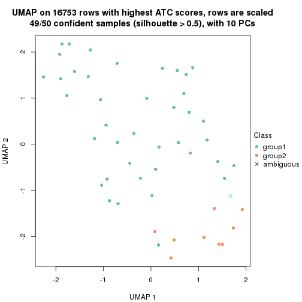
dimension_reduction(res, k = 3, method = "UMAP")
dimension_reduction(res, k = 4, method = "UMAP")
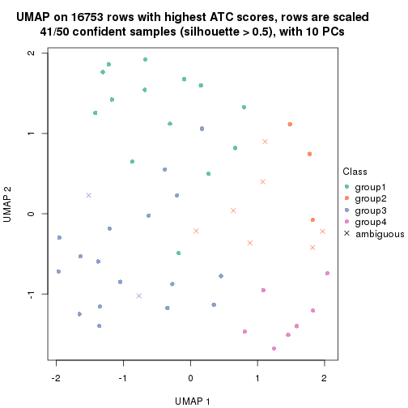
dimension_reduction(res, k = 5, method = "UMAP")
dimension_reduction(res, k = 6, method = "UMAP")
Following heatmap shows how subgroups are split when increasing k:
collect_classes(res)
Test correlation between subgroups and known annotations. If the known annotation is numeric, one-way ANOVA test is applied, and if the known annotation is discrete, chi-squared contingency table test is applied.
test_to_known_factors(res)
#> n disease.state(p) k
#> ATC:kmeans 49 0.5510 2
#> ATC:kmeans 47 0.4686 3
#> ATC:kmeans 41 0.3333 4
#> ATC:kmeans 44 0.0741 5
#> ATC:kmeans 30 0.0342 6
If matrix rows can be associated to genes, consider to use GO_Enrichment(res,
...) to perform function enrichment for the signature genes.
The object with results only for a single top-value method and a single partition method can be extracted as:
res = res_list["ATC", "skmeans"]
# you can also extract it by
# res = res_list["ATC:skmeans"]
A summary of res and all the functions that can be applied to it:
res
#> A 'ConsensusPartition' object with k = 2, 3, 4, 5, 6.
#> On a matrix with 16753 rows and 50 columns.
#> Top rows (1000, 2000, 3000, 4000, 5000) are extracted by 'ATC' method.
#> Subgroups are detected by 'skmeans' method.
#> Performed in total 1250 partitions by row resampling.
#> Best k for subgroups seems to be 3.
#>
#> Following methods can be applied to this 'ConsensusPartition' object:
#> [1] "cola_report" "collect_classes" "collect_plots"
#> [4] "collect_stats" "colnames" "compare_signatures"
#> [7] "consensus_heatmap" "dimension_reduction" "functional_enrichment"
#> [10] "get_anno_col" "get_anno" "get_classes"
#> [13] "get_consensus" "get_matrix" "get_membership"
#> [16] "get_param" "get_signatures" "get_stats"
#> [19] "is_best_k" "is_stable_k" "membership_heatmap"
#> [22] "ncol" "nrow" "plot_ecdf"
#> [25] "rownames" "select_partition_number" "show"
#> [28] "suggest_best_k" "test_to_known_factors"
collect_plots() function collects all the plots made from res for all k (number of partitions)
into one single page to provide an easy and fast comparison between different k.
collect_plots(res)
The plots are:
k and the heatmap of
predicted classes for each k.k.k.k.All the plots in panels can be made by individual functions and they are plotted later in this section.
select_partition_number() produces several plots showing different
statistics for choosing “optimized” k. There are following statistics:
k;k, the area increased is defined as \(A_k - A_{k-1}\).The detailed explanations of these statistics can be found in the cola vignette.
Generally speaking, lower PAC score, higher mean silhouette score or higher
concordance corresponds to better partition. Rand index and Jaccard index
measure how similar the current partition is compared to partition with k-1.
If they are too similar, we won't accept k is better than k-1.
select_partition_number(res)
The numeric values for all these statistics can be obtained by get_stats().
get_stats(res)
#> k 1-PAC mean_silhouette concordance area_increased Rand Jaccard
#> 2 2 1.000 1.000 1.000 0.5099 0.491 0.491
#> 3 3 0.921 0.917 0.967 0.3033 0.758 0.544
#> 4 4 0.753 0.724 0.876 0.1072 0.854 0.602
#> 5 5 0.747 0.661 0.837 0.0616 0.890 0.624
#> 6 6 0.747 0.641 0.790 0.0376 0.909 0.629
suggest_best_k() suggests the best \(k\) based on these statistics. The rules are as follows:
NA.suggest_best_k(res)
#> [1] 3
#> attr(,"optional")
#> [1] 2
There is also optional best \(k\) = 2 that is worth to check.
Following shows the table of the partitions (You need to click the show/hide
code output link to see it). The membership matrix (columns with name p*)
is inferred by
clue::cl_consensus()
function with the SE method. Basically the value in the membership matrix
represents the probability to belong to a certain group. The finall class
label for an item is determined with the group with highest probability it
belongs to.
In get_classes() function, the entropy is calculated from the membership
matrix and the silhouette score is calculated from the consensus matrix.
cbind(get_classes(res, k = 2), get_membership(res, k = 2))
#> class entropy silhouette p1 p2
#> GSM198618 2 0 1 0 1
#> GSM198622 1 0 1 1 0
#> GSM198623 1 0 1 1 0
#> GSM198626 1 0 1 1 0
#> GSM198627 1 0 1 1 0
#> GSM198628 1 0 1 1 0
#> GSM198629 1 0 1 1 0
#> GSM198630 1 0 1 1 0
#> GSM198631 1 0 1 1 0
#> GSM198632 1 0 1 1 0
#> GSM198633 1 0 1 1 0
#> GSM198634 1 0 1 1 0
#> GSM198635 1 0 1 1 0
#> GSM198636 1 0 1 1 0
#> GSM198639 2 0 1 0 1
#> GSM198641 1 0 1 1 0
#> GSM198642 1 0 1 1 0
#> GSM198643 1 0 1 1 0
#> GSM198644 2 0 1 0 1
#> GSM198645 1 0 1 1 0
#> GSM198649 2 0 1 0 1
#> GSM198651 2 0 1 0 1
#> GSM198653 2 0 1 0 1
#> GSM198654 2 0 1 0 1
#> GSM198655 2 0 1 0 1
#> GSM198656 1 0 1 1 0
#> GSM198657 1 0 1 1 0
#> GSM198658 2 0 1 0 1
#> GSM198659 2 0 1 0 1
#> GSM198660 2 0 1 0 1
#> GSM198662 2 0 1 0 1
#> GSM198663 2 0 1 0 1
#> GSM198664 2 0 1 0 1
#> GSM198665 2 0 1 0 1
#> GSM198616 1 0 1 1 0
#> GSM198617 2 0 1 0 1
#> GSM198619 1 0 1 1 0
#> GSM198620 2 0 1 0 1
#> GSM198621 2 0 1 0 1
#> GSM198624 1 0 1 1 0
#> GSM198625 1 0 1 1 0
#> GSM198637 1 0 1 1 0
#> GSM198638 2 0 1 0 1
#> GSM198640 1 0 1 1 0
#> GSM198646 2 0 1 0 1
#> GSM198647 2 0 1 0 1
#> GSM198648 2 0 1 0 1
#> GSM198650 2 0 1 0 1
#> GSM198652 2 0 1 0 1
#> GSM198661 1 0 1 1 0
cbind(get_classes(res, k = 3), get_membership(res, k = 3))
#> class entropy silhouette p1 p2 p3
#> GSM198618 2 0.0000 0.969 0.0 1.000 0.000
#> GSM198622 1 0.0000 1.000 1.0 0.000 0.000
#> GSM198623 3 0.6126 0.440 0.4 0.000 0.600
#> GSM198626 1 0.0000 1.000 1.0 0.000 0.000
#> GSM198627 1 0.0000 1.000 1.0 0.000 0.000
#> GSM198628 1 0.0000 1.000 1.0 0.000 0.000
#> GSM198629 1 0.0000 1.000 1.0 0.000 0.000
#> GSM198630 1 0.0000 1.000 1.0 0.000 0.000
#> GSM198631 1 0.0000 1.000 1.0 0.000 0.000
#> GSM198632 1 0.0000 1.000 1.0 0.000 0.000
#> GSM198633 1 0.0000 1.000 1.0 0.000 0.000
#> GSM198634 1 0.0000 1.000 1.0 0.000 0.000
#> GSM198635 1 0.0000 1.000 1.0 0.000 0.000
#> GSM198636 1 0.0000 1.000 1.0 0.000 0.000
#> GSM198639 3 0.0000 0.894 0.0 0.000 1.000
#> GSM198641 1 0.0000 1.000 1.0 0.000 0.000
#> GSM198642 3 0.6126 0.440 0.4 0.000 0.600
#> GSM198643 1 0.0000 1.000 1.0 0.000 0.000
#> GSM198644 2 0.0000 0.969 0.0 1.000 0.000
#> GSM198645 3 0.6126 0.440 0.4 0.000 0.600
#> GSM198649 2 0.0000 0.969 0.0 1.000 0.000
#> GSM198651 2 0.0000 0.969 0.0 1.000 0.000
#> GSM198653 2 0.0000 0.969 0.0 1.000 0.000
#> GSM198654 3 0.0000 0.894 0.0 0.000 1.000
#> GSM198655 3 0.0000 0.894 0.0 0.000 1.000
#> GSM198656 3 0.0000 0.894 0.0 0.000 1.000
#> GSM198657 3 0.0000 0.894 0.0 0.000 1.000
#> GSM198658 3 0.0000 0.894 0.0 0.000 1.000
#> GSM198659 2 0.0000 0.969 0.0 1.000 0.000
#> GSM198660 3 0.0000 0.894 0.0 0.000 1.000
#> GSM198662 3 0.0000 0.894 0.0 0.000 1.000
#> GSM198663 2 0.0000 0.969 0.0 1.000 0.000
#> GSM198664 2 0.0000 0.969 0.0 1.000 0.000
#> GSM198665 3 0.0000 0.894 0.0 0.000 1.000
#> GSM198616 1 0.0000 1.000 1.0 0.000 0.000
#> GSM198617 2 0.0237 0.965 0.0 0.996 0.004
#> GSM198619 1 0.0000 1.000 1.0 0.000 0.000
#> GSM198620 2 0.0000 0.969 0.0 1.000 0.000
#> GSM198621 2 0.6244 0.185 0.0 0.560 0.440
#> GSM198624 1 0.0000 1.000 1.0 0.000 0.000
#> GSM198625 1 0.0000 1.000 1.0 0.000 0.000
#> GSM198637 1 0.0000 1.000 1.0 0.000 0.000
#> GSM198638 2 0.0000 0.969 0.0 1.000 0.000
#> GSM198640 1 0.0000 1.000 1.0 0.000 0.000
#> GSM198646 2 0.0000 0.969 0.0 1.000 0.000
#> GSM198647 2 0.0000 0.969 0.0 1.000 0.000
#> GSM198648 2 0.0000 0.969 0.0 1.000 0.000
#> GSM198650 3 0.0000 0.894 0.0 0.000 1.000
#> GSM198652 2 0.0000 0.969 0.0 1.000 0.000
#> GSM198661 3 0.0000 0.894 0.0 0.000 1.000
cbind(get_classes(res, k = 4), get_membership(res, k = 4))
#> class entropy silhouette p1 p2 p3 p4
#> GSM198618 4 0.0000 0.88300 0.000 0.000 0.000 1.000
#> GSM198622 1 0.4877 0.21834 0.592 0.408 0.000 0.000
#> GSM198623 1 0.5220 0.22413 0.568 0.008 0.424 0.000
#> GSM198626 1 0.0000 0.87563 1.000 0.000 0.000 0.000
#> GSM198627 1 0.0000 0.87563 1.000 0.000 0.000 0.000
#> GSM198628 1 0.0000 0.87563 1.000 0.000 0.000 0.000
#> GSM198629 1 0.0000 0.87563 1.000 0.000 0.000 0.000
#> GSM198630 1 0.0000 0.87563 1.000 0.000 0.000 0.000
#> GSM198631 1 0.0000 0.87563 1.000 0.000 0.000 0.000
#> GSM198632 1 0.0000 0.87563 1.000 0.000 0.000 0.000
#> GSM198633 2 0.4164 0.58165 0.264 0.736 0.000 0.000
#> GSM198634 1 0.0000 0.87563 1.000 0.000 0.000 0.000
#> GSM198635 2 0.4661 0.43273 0.348 0.652 0.000 0.000
#> GSM198636 1 0.0000 0.87563 1.000 0.000 0.000 0.000
#> GSM198639 3 0.4922 0.74174 0.000 0.228 0.736 0.036
#> GSM198641 2 0.3907 0.61818 0.232 0.768 0.000 0.000
#> GSM198642 1 0.5212 0.23607 0.572 0.008 0.420 0.000
#> GSM198643 1 0.0000 0.87563 1.000 0.000 0.000 0.000
#> GSM198644 2 0.5847 -0.06852 0.000 0.560 0.036 0.404
#> GSM198645 3 0.6752 -0.00153 0.440 0.092 0.468 0.000
#> GSM198649 4 0.0000 0.88300 0.000 0.000 0.000 1.000
#> GSM198651 2 0.4193 0.64436 0.000 0.732 0.000 0.268
#> GSM198653 4 0.4008 0.55278 0.000 0.244 0.000 0.756
#> GSM198654 3 0.0000 0.90020 0.000 0.000 1.000 0.000
#> GSM198655 3 0.2530 0.85415 0.000 0.112 0.888 0.000
#> GSM198656 3 0.0336 0.89928 0.000 0.008 0.992 0.000
#> GSM198657 3 0.0336 0.89928 0.000 0.008 0.992 0.000
#> GSM198658 3 0.0000 0.90020 0.000 0.000 1.000 0.000
#> GSM198659 4 0.0000 0.88300 0.000 0.000 0.000 1.000
#> GSM198660 3 0.0188 0.89962 0.000 0.004 0.996 0.000
#> GSM198662 3 0.2816 0.85116 0.000 0.036 0.900 0.064
#> GSM198663 2 0.4382 0.62194 0.000 0.704 0.000 0.296
#> GSM198664 2 0.4277 0.63738 0.000 0.720 0.000 0.280
#> GSM198665 3 0.1474 0.88425 0.000 0.052 0.948 0.000
#> GSM198616 1 0.0000 0.87563 1.000 0.000 0.000 0.000
#> GSM198617 4 0.1716 0.83652 0.000 0.064 0.000 0.936
#> GSM198619 1 0.2868 0.75464 0.864 0.136 0.000 0.000
#> GSM198620 4 0.0000 0.88300 0.000 0.000 0.000 1.000
#> GSM198621 4 0.3893 0.69311 0.000 0.196 0.008 0.796
#> GSM198624 1 0.0000 0.87563 1.000 0.000 0.000 0.000
#> GSM198625 1 0.0000 0.87563 1.000 0.000 0.000 0.000
#> GSM198637 1 0.4941 0.19640 0.564 0.436 0.000 0.000
#> GSM198638 2 0.4008 0.64592 0.000 0.756 0.000 0.244
#> GSM198640 1 0.0000 0.87563 1.000 0.000 0.000 0.000
#> GSM198646 4 0.0000 0.88300 0.000 0.000 0.000 1.000
#> GSM198647 4 0.0000 0.88300 0.000 0.000 0.000 1.000
#> GSM198648 4 0.0000 0.88300 0.000 0.000 0.000 1.000
#> GSM198650 3 0.0000 0.90020 0.000 0.000 1.000 0.000
#> GSM198652 4 0.6931 0.33112 0.000 0.184 0.228 0.588
#> GSM198661 3 0.0336 0.89928 0.000 0.008 0.992 0.000
cbind(get_classes(res, k = 5), get_membership(res, k = 5))
#> class entropy silhouette p1 p2 p3 p4 p5
#> GSM198618 4 0.0000 0.87269 0.000 0.000 0.000 1.000 0.000
#> GSM198622 2 0.3895 0.44854 0.320 0.680 0.000 0.000 0.000
#> GSM198623 1 0.5000 0.23175 0.516 0.012 0.460 0.000 0.012
#> GSM198626 1 0.0000 0.87232 1.000 0.000 0.000 0.000 0.000
#> GSM198627 1 0.0290 0.87163 0.992 0.008 0.000 0.000 0.000
#> GSM198628 1 0.0000 0.87232 1.000 0.000 0.000 0.000 0.000
#> GSM198629 1 0.0000 0.87232 1.000 0.000 0.000 0.000 0.000
#> GSM198630 1 0.0000 0.87232 1.000 0.000 0.000 0.000 0.000
#> GSM198631 1 0.0000 0.87232 1.000 0.000 0.000 0.000 0.000
#> GSM198632 1 0.0404 0.87023 0.988 0.012 0.000 0.000 0.000
#> GSM198633 2 0.1544 0.61528 0.068 0.932 0.000 0.000 0.000
#> GSM198634 1 0.1851 0.80188 0.912 0.088 0.000 0.000 0.000
#> GSM198635 2 0.2471 0.59424 0.136 0.864 0.000 0.000 0.000
#> GSM198636 1 0.0404 0.87016 0.988 0.012 0.000 0.000 0.000
#> GSM198639 5 0.3589 0.45177 0.000 0.004 0.132 0.040 0.824
#> GSM198641 2 0.1341 0.61475 0.056 0.944 0.000 0.000 0.000
#> GSM198642 1 0.4997 0.24383 0.520 0.012 0.456 0.000 0.012
#> GSM198643 1 0.0404 0.86540 0.988 0.000 0.000 0.000 0.012
#> GSM198644 5 0.4918 0.28646 0.000 0.128 0.004 0.140 0.728
#> GSM198645 1 0.7239 -0.00109 0.412 0.032 0.356 0.000 0.200
#> GSM198649 4 0.0000 0.87269 0.000 0.000 0.000 1.000 0.000
#> GSM198651 2 0.5344 0.57379 0.000 0.672 0.000 0.160 0.168
#> GSM198653 4 0.3734 0.70228 0.000 0.060 0.000 0.812 0.128
#> GSM198654 3 0.2233 0.86686 0.000 0.016 0.904 0.000 0.080
#> GSM198655 5 0.4779 -0.01758 0.000 0.016 0.396 0.004 0.584
#> GSM198656 3 0.0510 0.84466 0.000 0.016 0.984 0.000 0.000
#> GSM198657 3 0.0510 0.84466 0.000 0.016 0.984 0.000 0.000
#> GSM198658 3 0.2233 0.86686 0.000 0.016 0.904 0.000 0.080
#> GSM198659 4 0.0290 0.86833 0.000 0.000 0.000 0.992 0.008
#> GSM198660 3 0.2289 0.86381 0.000 0.004 0.904 0.012 0.080
#> GSM198662 3 0.4712 0.64978 0.000 0.000 0.732 0.168 0.100
#> GSM198663 2 0.6178 0.46204 0.000 0.536 0.000 0.296 0.168
#> GSM198664 2 0.6004 0.51574 0.000 0.576 0.000 0.256 0.168
#> GSM198665 3 0.4401 0.54285 0.000 0.016 0.656 0.000 0.328
#> GSM198616 1 0.0000 0.87232 1.000 0.000 0.000 0.000 0.000
#> GSM198617 4 0.3707 0.51770 0.000 0.000 0.000 0.716 0.284
#> GSM198619 5 0.4297 -0.04011 0.472 0.000 0.000 0.000 0.528
#> GSM198620 4 0.0000 0.87269 0.000 0.000 0.000 1.000 0.000
#> GSM198621 5 0.3999 0.25105 0.000 0.000 0.000 0.344 0.656
#> GSM198624 1 0.0510 0.86764 0.984 0.016 0.000 0.000 0.000
#> GSM198625 1 0.0290 0.87163 0.992 0.008 0.000 0.000 0.000
#> GSM198637 2 0.5229 0.38277 0.324 0.612 0.000 0.000 0.064
#> GSM198638 2 0.5931 0.54747 0.000 0.596 0.000 0.204 0.200
#> GSM198640 1 0.0290 0.87163 0.992 0.008 0.000 0.000 0.000
#> GSM198646 4 0.0000 0.87269 0.000 0.000 0.000 1.000 0.000
#> GSM198647 4 0.0000 0.87269 0.000 0.000 0.000 1.000 0.000
#> GSM198648 4 0.0000 0.87269 0.000 0.000 0.000 1.000 0.000
#> GSM198650 3 0.2233 0.86686 0.000 0.016 0.904 0.000 0.080
#> GSM198652 4 0.7247 0.26310 0.000 0.052 0.208 0.504 0.236
#> GSM198661 3 0.0510 0.84466 0.000 0.016 0.984 0.000 0.000
cbind(get_classes(res, k = 6), get_membership(res, k = 6))
#> class entropy silhouette p1 p2 p3 p4 p5 p6
#> GSM198618 4 0.0000 0.8831 0.000 0.000 0.000 1.000 0.000 0.000
#> GSM198622 5 0.3714 0.5264 0.340 0.004 0.000 0.000 0.656 0.000
#> GSM198623 3 0.4440 0.2012 0.420 0.016 0.556 0.000 0.000 0.008
#> GSM198626 1 0.0000 0.9674 1.000 0.000 0.000 0.000 0.000 0.000
#> GSM198627 1 0.0146 0.9673 0.996 0.000 0.000 0.000 0.000 0.004
#> GSM198628 1 0.0000 0.9674 1.000 0.000 0.000 0.000 0.000 0.000
#> GSM198629 1 0.0146 0.9673 0.996 0.000 0.000 0.000 0.000 0.004
#> GSM198630 1 0.0000 0.9674 1.000 0.000 0.000 0.000 0.000 0.000
#> GSM198631 1 0.0000 0.9674 1.000 0.000 0.000 0.000 0.000 0.000
#> GSM198632 1 0.0779 0.9613 0.976 0.008 0.000 0.000 0.008 0.008
#> GSM198633 5 0.1049 0.6783 0.032 0.008 0.000 0.000 0.960 0.000
#> GSM198634 1 0.2664 0.7397 0.816 0.000 0.000 0.000 0.184 0.000
#> GSM198635 5 0.1814 0.7175 0.100 0.000 0.000 0.000 0.900 0.000
#> GSM198636 1 0.0767 0.9565 0.976 0.008 0.000 0.000 0.012 0.004
#> GSM198639 6 0.1672 0.5062 0.000 0.048 0.016 0.000 0.004 0.932
#> GSM198641 5 0.1257 0.6395 0.020 0.028 0.000 0.000 0.952 0.000
#> GSM198642 3 0.4721 0.1870 0.420 0.032 0.540 0.000 0.000 0.008
#> GSM198643 1 0.1851 0.9119 0.928 0.036 0.024 0.000 0.000 0.012
#> GSM198644 2 0.6033 -0.0573 0.000 0.496 0.000 0.064 0.072 0.368
#> GSM198645 3 0.7897 0.0938 0.192 0.152 0.444 0.000 0.056 0.156
#> GSM198649 4 0.0000 0.8831 0.000 0.000 0.000 1.000 0.000 0.000
#> GSM198651 2 0.5359 0.4909 0.000 0.500 0.000 0.096 0.400 0.004
#> GSM198653 4 0.4204 0.4249 0.000 0.252 0.000 0.696 0.052 0.000
#> GSM198654 3 0.4544 0.5513 0.000 0.292 0.652 0.000 0.004 0.052
#> GSM198655 6 0.5767 0.1714 0.000 0.300 0.180 0.000 0.004 0.516
#> GSM198656 3 0.0146 0.5642 0.000 0.000 0.996 0.000 0.000 0.004
#> GSM198657 3 0.0146 0.5642 0.000 0.000 0.996 0.000 0.000 0.004
#> GSM198658 3 0.4291 0.5584 0.000 0.268 0.680 0.000 0.000 0.052
#> GSM198659 4 0.1007 0.8520 0.000 0.044 0.000 0.956 0.000 0.000
#> GSM198660 3 0.4829 0.5405 0.000 0.240 0.672 0.016 0.000 0.072
#> GSM198662 3 0.6885 0.3056 0.000 0.156 0.504 0.196 0.000 0.144
#> GSM198663 2 0.6089 0.5266 0.000 0.388 0.000 0.288 0.324 0.000
#> GSM198664 2 0.5952 0.5411 0.000 0.424 0.000 0.224 0.352 0.000
#> GSM198665 3 0.6015 0.3090 0.000 0.312 0.460 0.000 0.004 0.224
#> GSM198616 1 0.0520 0.9639 0.984 0.008 0.000 0.000 0.000 0.008
#> GSM198617 4 0.3672 0.3812 0.000 0.000 0.000 0.632 0.000 0.368
#> GSM198619 6 0.4013 0.3675 0.280 0.016 0.004 0.000 0.004 0.696
#> GSM198620 4 0.0000 0.8831 0.000 0.000 0.000 1.000 0.000 0.000
#> GSM198621 6 0.2941 0.4292 0.000 0.000 0.000 0.220 0.000 0.780
#> GSM198624 1 0.0436 0.9658 0.988 0.004 0.000 0.000 0.004 0.004
#> GSM198625 1 0.0146 0.9673 0.996 0.000 0.000 0.000 0.000 0.004
#> GSM198637 5 0.4811 0.6359 0.160 0.032 0.000 0.000 0.716 0.092
#> GSM198638 2 0.6066 0.4927 0.000 0.472 0.000 0.112 0.380 0.036
#> GSM198640 1 0.1218 0.9454 0.956 0.012 0.000 0.000 0.028 0.004
#> GSM198646 4 0.0000 0.8831 0.000 0.000 0.000 1.000 0.000 0.000
#> GSM198647 4 0.0000 0.8831 0.000 0.000 0.000 1.000 0.000 0.000
#> GSM198648 4 0.0260 0.8790 0.000 0.008 0.000 0.992 0.000 0.000
#> GSM198650 3 0.4332 0.5562 0.000 0.276 0.672 0.000 0.000 0.052
#> GSM198652 2 0.5793 0.2215 0.000 0.612 0.088 0.252 0.016 0.032
#> GSM198661 3 0.0405 0.5658 0.000 0.008 0.988 0.000 0.004 0.000
Heatmaps for the consensus matrix. It visualizes the probability of two samples to be in a same group.
consensus_heatmap(res, k = 2)

consensus_heatmap(res, k = 3)
consensus_heatmap(res, k = 4)
consensus_heatmap(res, k = 5)
consensus_heatmap(res, k = 6)
Heatmaps for the membership of samples in all partitions to see how consistent they are:
membership_heatmap(res, k = 2)
membership_heatmap(res, k = 3)
membership_heatmap(res, k = 4)
membership_heatmap(res, k = 5)
membership_heatmap(res, k = 6)
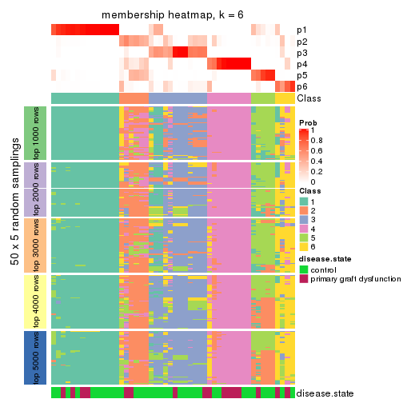
As soon as we have had the classes for columns, we can look for signatures which are significantly different between classes which can be candidate marks for certain classes. Following are the heatmaps for signatures.
Signature heatmaps where rows are scaled:
get_signatures(res, k = 2)
get_signatures(res, k = 3)

get_signatures(res, k = 4)
get_signatures(res, k = 5)
get_signatures(res, k = 6)
Signature heatmaps where rows are not scaled:
get_signatures(res, k = 2, scale_rows = FALSE)
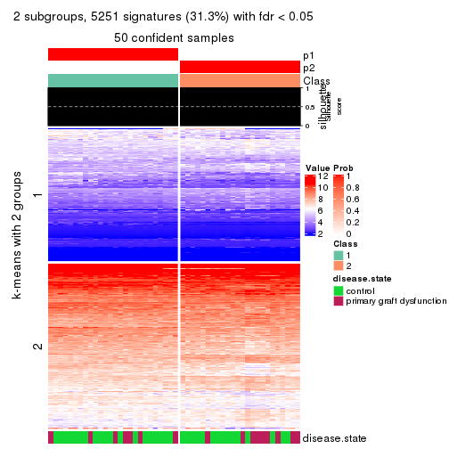
get_signatures(res, k = 3, scale_rows = FALSE)
get_signatures(res, k = 4, scale_rows = FALSE)
get_signatures(res, k = 5, scale_rows = FALSE)
get_signatures(res, k = 6, scale_rows = FALSE)
Compare the overlap of signatures from different k:
compare_signatures(res)
get_signature() returns a data frame invisibly. TO get the list of signatures, the function
call should be assigned to a variable explicitly. In following code, if plot argument is set
to FALSE, no heatmap is plotted while only the differential analysis is performed.
# code only for demonstration
tb = get_signature(res, k = ..., plot = FALSE)
An example of the output of tb is:
#> which_row fdr mean_1 mean_2 scaled_mean_1 scaled_mean_2 km
#> 1 38 0.042760348 8.373488 9.131774 -0.5533452 0.5164555 1
#> 2 40 0.018707592 7.106213 8.469186 -0.6173731 0.5762149 1
#> 3 55 0.019134737 10.221463 11.207825 -0.6159697 0.5749050 1
#> 4 59 0.006059896 5.921854 7.869574 -0.6899429 0.6439467 1
#> 5 60 0.018055526 8.928898 10.211722 -0.6204761 0.5791110 1
#> 6 98 0.009384629 15.714769 14.887706 0.6635654 -0.6193277 2
...
The columns in tb are:
which_row: row indices corresponding to the input matrix.fdr: FDR for the differential test. mean_x: The mean value in group x.scaled_mean_x: The mean value in group x after rows are scaled.km: Row groups if k-means clustering is applied to rows.UMAP plot which shows how samples are separated.
dimension_reduction(res, k = 2, method = "UMAP")
dimension_reduction(res, k = 3, method = "UMAP")
dimension_reduction(res, k = 4, method = "UMAP")
dimension_reduction(res, k = 5, method = "UMAP")
dimension_reduction(res, k = 6, method = "UMAP")
Following heatmap shows how subgroups are split when increasing k:
collect_classes(res)
Test correlation between subgroups and known annotations. If the known annotation is numeric, one-way ANOVA test is applied, and if the known annotation is discrete, chi-squared contingency table test is applied.
test_to_known_factors(res)
#> n disease.state(p) k
#> ATC:skmeans 50 0.619 2
#> ATC:skmeans 46 0.293 3
#> ATC:skmeans 42 0.166 4
#> ATC:skmeans 38 0.329 5
#> ATC:skmeans 36 0.556 6
If matrix rows can be associated to genes, consider to use GO_Enrichment(res,
...) to perform function enrichment for the signature genes.
The object with results only for a single top-value method and a single partition method can be extracted as:
res = res_list["ATC", "pam"]
# you can also extract it by
# res = res_list["ATC:pam"]
A summary of res and all the functions that can be applied to it:
res
#> A 'ConsensusPartition' object with k = 2, 3, 4, 5, 6.
#> On a matrix with 16753 rows and 50 columns.
#> Top rows (1000, 2000, 3000, 4000, 5000) are extracted by 'ATC' method.
#> Subgroups are detected by 'pam' method.
#> Performed in total 1250 partitions by row resampling.
#> Best k for subgroups seems to be 3.
#>
#> Following methods can be applied to this 'ConsensusPartition' object:
#> [1] "cola_report" "collect_classes" "collect_plots"
#> [4] "collect_stats" "colnames" "compare_signatures"
#> [7] "consensus_heatmap" "dimension_reduction" "functional_enrichment"
#> [10] "get_anno_col" "get_anno" "get_classes"
#> [13] "get_consensus" "get_matrix" "get_membership"
#> [16] "get_param" "get_signatures" "get_stats"
#> [19] "is_best_k" "is_stable_k" "membership_heatmap"
#> [22] "ncol" "nrow" "plot_ecdf"
#> [25] "rownames" "select_partition_number" "show"
#> [28] "suggest_best_k" "test_to_known_factors"
collect_plots() function collects all the plots made from res for all k (number of partitions)
into one single page to provide an easy and fast comparison between different k.
collect_plots(res)
The plots are:
k and the heatmap of
predicted classes for each k.k.k.k.All the plots in panels can be made by individual functions and they are plotted later in this section.
select_partition_number() produces several plots showing different
statistics for choosing “optimized” k. There are following statistics:
k;k, the area increased is defined as \(A_k - A_{k-1}\).The detailed explanations of these statistics can be found in the cola vignette.
Generally speaking, lower PAC score, higher mean silhouette score or higher
concordance corresponds to better partition. Rand index and Jaccard index
measure how similar the current partition is compared to partition with k-1.
If they are too similar, we won't accept k is better than k-1.
select_partition_number(res)
The numeric values for all these statistics can be obtained by get_stats().
get_stats(res)
#> k 1-PAC mean_silhouette concordance area_increased Rand Jaccard
#> 2 2 1.000 0.956 0.982 0.247 0.754 0.754
#> 3 3 0.963 0.941 0.978 0.941 0.771 0.697
#> 4 4 0.881 0.883 0.950 0.221 0.909 0.828
#> 5 5 0.852 0.857 0.931 0.218 0.873 0.713
#> 6 6 0.737 0.754 0.875 0.141 0.809 0.445
suggest_best_k() suggests the best \(k\) based on these statistics. The rules are as follows:
NA.suggest_best_k(res)
#> [1] 3
#> attr(,"optional")
#> [1] 2
There is also optional best \(k\) = 2 that is worth to check.
Following shows the table of the partitions (You need to click the show/hide
code output link to see it). The membership matrix (columns with name p*)
is inferred by
clue::cl_consensus()
function with the SE method. Basically the value in the membership matrix
represents the probability to belong to a certain group. The finall class
label for an item is determined with the group with highest probability it
belongs to.
In get_classes() function, the entropy is calculated from the membership
matrix and the silhouette score is calculated from the consensus matrix.
cbind(get_classes(res, k = 2), get_membership(res, k = 2))
#> class entropy silhouette p1 p2
#> GSM198618 1 0.7602 0.697 0.780 0.220
#> GSM198622 1 0.0000 0.988 1.000 0.000
#> GSM198623 1 0.0000 0.988 1.000 0.000
#> GSM198626 1 0.0376 0.986 0.996 0.004
#> GSM198627 1 0.0376 0.986 0.996 0.004
#> GSM198628 1 0.0376 0.986 0.996 0.004
#> GSM198629 1 0.0376 0.986 0.996 0.004
#> GSM198630 1 0.0376 0.986 0.996 0.004
#> GSM198631 1 0.0376 0.986 0.996 0.004
#> GSM198632 1 0.0000 0.988 1.000 0.000
#> GSM198633 1 0.0000 0.988 1.000 0.000
#> GSM198634 1 0.0376 0.986 0.996 0.004
#> GSM198635 1 0.0000 0.988 1.000 0.000
#> GSM198636 1 0.0000 0.988 1.000 0.000
#> GSM198639 1 0.0000 0.988 1.000 0.000
#> GSM198641 1 0.0000 0.988 1.000 0.000
#> GSM198642 1 0.0376 0.986 0.996 0.004
#> GSM198643 1 0.0000 0.988 1.000 0.000
#> GSM198644 1 0.0000 0.988 1.000 0.000
#> GSM198645 1 0.0000 0.988 1.000 0.000
#> GSM198649 2 0.0376 0.931 0.004 0.996
#> GSM198651 1 0.0000 0.988 1.000 0.000
#> GSM198653 2 0.9732 0.304 0.404 0.596
#> GSM198654 1 0.0000 0.988 1.000 0.000
#> GSM198655 1 0.0000 0.988 1.000 0.000
#> GSM198656 1 0.0000 0.988 1.000 0.000
#> GSM198657 1 0.0000 0.988 1.000 0.000
#> GSM198658 1 0.0000 0.988 1.000 0.000
#> GSM198659 2 0.0376 0.931 0.004 0.996
#> GSM198660 1 0.0000 0.988 1.000 0.000
#> GSM198662 1 0.0000 0.988 1.000 0.000
#> GSM198663 1 0.7453 0.711 0.788 0.212
#> GSM198664 1 0.0000 0.988 1.000 0.000
#> GSM198665 1 0.0000 0.988 1.000 0.000
#> GSM198616 1 0.0376 0.986 0.996 0.004
#> GSM198617 1 0.0000 0.988 1.000 0.000
#> GSM198619 1 0.0000 0.988 1.000 0.000
#> GSM198620 2 0.0376 0.931 0.004 0.996
#> GSM198621 1 0.0000 0.988 1.000 0.000
#> GSM198624 1 0.0000 0.988 1.000 0.000
#> GSM198625 1 0.0376 0.986 0.996 0.004
#> GSM198637 1 0.0000 0.988 1.000 0.000
#> GSM198638 1 0.0000 0.988 1.000 0.000
#> GSM198640 1 0.0000 0.988 1.000 0.000
#> GSM198646 2 0.0376 0.931 0.004 0.996
#> GSM198647 2 0.0376 0.931 0.004 0.996
#> GSM198648 2 0.0376 0.931 0.004 0.996
#> GSM198650 1 0.0000 0.988 1.000 0.000
#> GSM198652 1 0.0000 0.988 1.000 0.000
#> GSM198661 1 0.0000 0.988 1.000 0.000
cbind(get_classes(res, k = 3), get_membership(res, k = 3))
#> class entropy silhouette p1 p2 p3
#> GSM198618 3 0.4796 0.699 0.000 0.220 0.780
#> GSM198622 3 0.0237 0.977 0.004 0.000 0.996
#> GSM198623 3 0.0237 0.977 0.004 0.000 0.996
#> GSM198626 1 0.0000 1.000 1.000 0.000 0.000
#> GSM198627 1 0.0000 1.000 1.000 0.000 0.000
#> GSM198628 1 0.0000 1.000 1.000 0.000 0.000
#> GSM198629 1 0.0000 1.000 1.000 0.000 0.000
#> GSM198630 1 0.0000 1.000 1.000 0.000 0.000
#> GSM198631 1 0.0000 1.000 1.000 0.000 0.000
#> GSM198632 3 0.0237 0.977 0.004 0.000 0.996
#> GSM198633 3 0.0237 0.977 0.004 0.000 0.996
#> GSM198634 3 0.4504 0.752 0.196 0.000 0.804
#> GSM198635 3 0.0237 0.977 0.004 0.000 0.996
#> GSM198636 3 0.0424 0.974 0.008 0.000 0.992
#> GSM198639 3 0.0000 0.978 0.000 0.000 1.000
#> GSM198641 3 0.0237 0.977 0.004 0.000 0.996
#> GSM198642 3 0.0592 0.971 0.012 0.000 0.988
#> GSM198643 3 0.0237 0.977 0.004 0.000 0.996
#> GSM198644 3 0.0000 0.978 0.000 0.000 1.000
#> GSM198645 3 0.0000 0.978 0.000 0.000 1.000
#> GSM198649 2 0.0000 0.883 0.000 1.000 0.000
#> GSM198651 3 0.0000 0.978 0.000 0.000 1.000
#> GSM198653 2 0.6126 0.295 0.000 0.600 0.400
#> GSM198654 3 0.0000 0.978 0.000 0.000 1.000
#> GSM198655 3 0.0000 0.978 0.000 0.000 1.000
#> GSM198656 3 0.0000 0.978 0.000 0.000 1.000
#> GSM198657 3 0.0000 0.978 0.000 0.000 1.000
#> GSM198658 3 0.0000 0.978 0.000 0.000 1.000
#> GSM198659 2 0.0592 0.873 0.000 0.988 0.012
#> GSM198660 3 0.0000 0.978 0.000 0.000 1.000
#> GSM198662 3 0.0000 0.978 0.000 0.000 1.000
#> GSM198663 3 0.4605 0.729 0.000 0.204 0.796
#> GSM198664 3 0.0000 0.978 0.000 0.000 1.000
#> GSM198665 3 0.0000 0.978 0.000 0.000 1.000
#> GSM198616 1 0.0000 1.000 1.000 0.000 0.000
#> GSM198617 3 0.0000 0.978 0.000 0.000 1.000
#> GSM198619 3 0.0000 0.978 0.000 0.000 1.000
#> GSM198620 2 0.0000 0.883 0.000 1.000 0.000
#> GSM198621 3 0.0000 0.978 0.000 0.000 1.000
#> GSM198624 3 0.0237 0.977 0.004 0.000 0.996
#> GSM198625 1 0.0000 1.000 1.000 0.000 0.000
#> GSM198637 3 0.0000 0.978 0.000 0.000 1.000
#> GSM198638 3 0.0000 0.978 0.000 0.000 1.000
#> GSM198640 3 0.0237 0.977 0.004 0.000 0.996
#> GSM198646 2 0.0000 0.883 0.000 1.000 0.000
#> GSM198647 2 0.0000 0.883 0.000 1.000 0.000
#> GSM198648 2 0.0000 0.883 0.000 1.000 0.000
#> GSM198650 3 0.0000 0.978 0.000 0.000 1.000
#> GSM198652 3 0.0000 0.978 0.000 0.000 1.000
#> GSM198661 3 0.0000 0.978 0.000 0.000 1.000
cbind(get_classes(res, k = 4), get_membership(res, k = 4))
#> class entropy silhouette p1 p2 p3 p4
#> GSM198618 2 0.0707 0.855 0.000 0.980 0.020 0.000
#> GSM198622 3 0.4699 0.558 0.004 0.320 0.676 0.000
#> GSM198623 3 0.0779 0.921 0.004 0.016 0.980 0.000
#> GSM198626 1 0.0000 0.997 1.000 0.000 0.000 0.000
#> GSM198627 1 0.0000 0.997 1.000 0.000 0.000 0.000
#> GSM198628 1 0.0000 0.997 1.000 0.000 0.000 0.000
#> GSM198629 1 0.0000 0.997 1.000 0.000 0.000 0.000
#> GSM198630 1 0.0000 0.997 1.000 0.000 0.000 0.000
#> GSM198631 1 0.0000 0.997 1.000 0.000 0.000 0.000
#> GSM198632 3 0.0779 0.921 0.004 0.016 0.980 0.000
#> GSM198633 3 0.0657 0.922 0.004 0.012 0.984 0.000
#> GSM198634 3 0.3925 0.728 0.176 0.016 0.808 0.000
#> GSM198635 3 0.4699 0.558 0.004 0.320 0.676 0.000
#> GSM198636 3 0.0927 0.919 0.008 0.016 0.976 0.000
#> GSM198639 3 0.0000 0.927 0.000 0.000 1.000 0.000
#> GSM198641 3 0.4905 0.458 0.004 0.364 0.632 0.000
#> GSM198642 3 0.0927 0.920 0.008 0.016 0.976 0.000
#> GSM198643 3 0.0779 0.921 0.004 0.016 0.980 0.000
#> GSM198644 3 0.0000 0.927 0.000 0.000 1.000 0.000
#> GSM198645 3 0.0000 0.927 0.000 0.000 1.000 0.000
#> GSM198649 4 0.0000 0.976 0.000 0.000 0.000 1.000
#> GSM198651 2 0.4356 0.509 0.000 0.708 0.292 0.000
#> GSM198653 2 0.0707 0.836 0.000 0.980 0.000 0.020
#> GSM198654 3 0.0188 0.926 0.000 0.004 0.996 0.000
#> GSM198655 3 0.0000 0.927 0.000 0.000 1.000 0.000
#> GSM198656 3 0.0336 0.926 0.000 0.008 0.992 0.000
#> GSM198657 3 0.0188 0.926 0.000 0.004 0.996 0.000
#> GSM198658 3 0.0188 0.926 0.000 0.004 0.996 0.000
#> GSM198659 2 0.0804 0.851 0.000 0.980 0.012 0.008
#> GSM198660 3 0.0000 0.927 0.000 0.000 1.000 0.000
#> GSM198662 3 0.0188 0.926 0.000 0.004 0.996 0.000
#> GSM198663 2 0.0707 0.855 0.000 0.980 0.020 0.000
#> GSM198664 3 0.4477 0.550 0.000 0.312 0.688 0.000
#> GSM198665 3 0.0188 0.926 0.000 0.004 0.996 0.000
#> GSM198616 1 0.0592 0.980 0.984 0.016 0.000 0.000
#> GSM198617 3 0.0000 0.927 0.000 0.000 1.000 0.000
#> GSM198619 3 0.0000 0.927 0.000 0.000 1.000 0.000
#> GSM198620 4 0.0000 0.976 0.000 0.000 0.000 1.000
#> GSM198621 3 0.0000 0.927 0.000 0.000 1.000 0.000
#> GSM198624 3 0.0779 0.921 0.004 0.016 0.980 0.000
#> GSM198625 1 0.0000 0.997 1.000 0.000 0.000 0.000
#> GSM198637 3 0.0000 0.927 0.000 0.000 1.000 0.000
#> GSM198638 3 0.4382 0.579 0.000 0.296 0.704 0.000
#> GSM198640 3 0.0779 0.921 0.004 0.016 0.980 0.000
#> GSM198646 4 0.0000 0.976 0.000 0.000 0.000 1.000
#> GSM198647 4 0.0000 0.976 0.000 0.000 0.000 1.000
#> GSM198648 4 0.2281 0.894 0.000 0.096 0.000 0.904
#> GSM198650 3 0.0188 0.926 0.000 0.004 0.996 0.000
#> GSM198652 3 0.0188 0.926 0.000 0.004 0.996 0.000
#> GSM198661 3 0.0188 0.926 0.000 0.004 0.996 0.000
cbind(get_classes(res, k = 5), get_membership(res, k = 5))
#> class entropy silhouette p1 p2 p3 p4 p5
#> GSM198618 2 0.0000 0.875 0.000 1.000 0.000 0.000 0.000
#> GSM198622 5 0.3969 0.552 0.000 0.304 0.004 0.000 0.692
#> GSM198623 5 0.1341 0.864 0.000 0.000 0.056 0.000 0.944
#> GSM198626 1 0.0000 0.994 1.000 0.000 0.000 0.000 0.000
#> GSM198627 1 0.0000 0.994 1.000 0.000 0.000 0.000 0.000
#> GSM198628 1 0.0000 0.994 1.000 0.000 0.000 0.000 0.000
#> GSM198629 1 0.0000 0.994 1.000 0.000 0.000 0.000 0.000
#> GSM198630 1 0.0000 0.994 1.000 0.000 0.000 0.000 0.000
#> GSM198631 1 0.0000 0.994 1.000 0.000 0.000 0.000 0.000
#> GSM198632 5 0.0162 0.867 0.000 0.000 0.004 0.000 0.996
#> GSM198633 5 0.0000 0.868 0.000 0.000 0.000 0.000 1.000
#> GSM198634 5 0.2930 0.726 0.164 0.000 0.004 0.000 0.832
#> GSM198635 5 0.3969 0.552 0.000 0.304 0.004 0.000 0.692
#> GSM198636 5 0.0290 0.868 0.000 0.000 0.008 0.000 0.992
#> GSM198639 5 0.0963 0.871 0.000 0.000 0.036 0.000 0.964
#> GSM198641 5 0.4030 0.457 0.000 0.352 0.000 0.000 0.648
#> GSM198642 5 0.1493 0.860 0.028 0.000 0.024 0.000 0.948
#> GSM198643 5 0.0290 0.868 0.000 0.000 0.008 0.000 0.992
#> GSM198644 5 0.0963 0.871 0.000 0.000 0.036 0.000 0.964
#> GSM198645 5 0.0963 0.871 0.000 0.000 0.036 0.000 0.964
#> GSM198649 4 0.0000 0.976 0.000 0.000 0.000 1.000 0.000
#> GSM198651 2 0.4350 0.517 0.000 0.704 0.028 0.000 0.268
#> GSM198653 2 0.0000 0.875 0.000 1.000 0.000 0.000 0.000
#> GSM198654 3 0.0162 0.980 0.000 0.000 0.996 0.000 0.004
#> GSM198655 5 0.1478 0.865 0.000 0.000 0.064 0.000 0.936
#> GSM198656 3 0.1410 0.896 0.000 0.000 0.940 0.000 0.060
#> GSM198657 5 0.4015 0.515 0.000 0.000 0.348 0.000 0.652
#> GSM198658 3 0.0162 0.980 0.000 0.000 0.996 0.000 0.004
#> GSM198659 2 0.0000 0.875 0.000 1.000 0.000 0.000 0.000
#> GSM198660 5 0.2605 0.805 0.000 0.000 0.148 0.000 0.852
#> GSM198662 3 0.0162 0.980 0.000 0.000 0.996 0.000 0.004
#> GSM198663 2 0.0000 0.875 0.000 1.000 0.000 0.000 0.000
#> GSM198664 5 0.4503 0.544 0.000 0.312 0.024 0.000 0.664
#> GSM198665 5 0.1732 0.859 0.000 0.000 0.080 0.000 0.920
#> GSM198616 1 0.1041 0.955 0.964 0.000 0.004 0.000 0.032
#> GSM198617 5 0.1965 0.850 0.000 0.000 0.096 0.000 0.904
#> GSM198619 5 0.0880 0.871 0.000 0.000 0.032 0.000 0.968
#> GSM198620 4 0.0000 0.976 0.000 0.000 0.000 1.000 0.000
#> GSM198621 5 0.0963 0.871 0.000 0.000 0.036 0.000 0.964
#> GSM198624 5 0.0162 0.867 0.000 0.000 0.004 0.000 0.996
#> GSM198625 1 0.0000 0.994 1.000 0.000 0.000 0.000 0.000
#> GSM198637 5 0.0703 0.871 0.000 0.000 0.024 0.000 0.976
#> GSM198638 5 0.4657 0.575 0.000 0.296 0.036 0.000 0.668
#> GSM198640 5 0.0290 0.868 0.000 0.000 0.008 0.000 0.992
#> GSM198646 4 0.0000 0.976 0.000 0.000 0.000 1.000 0.000
#> GSM198647 4 0.0000 0.976 0.000 0.000 0.000 1.000 0.000
#> GSM198648 4 0.1965 0.894 0.000 0.096 0.000 0.904 0.000
#> GSM198650 3 0.0162 0.980 0.000 0.000 0.996 0.000 0.004
#> GSM198652 3 0.0162 0.980 0.000 0.000 0.996 0.000 0.004
#> GSM198661 5 0.1732 0.859 0.000 0.000 0.080 0.000 0.920
cbind(get_classes(res, k = 6), get_membership(res, k = 6))
#> class entropy silhouette p1 p2 p3 p4 p5 p6
#> GSM198618 2 0.2562 0.7272 0.000 0.828 0.000 0.000 0.000 0.172
#> GSM198622 5 0.2562 0.6732 0.000 0.172 0.000 0.000 0.828 0.000
#> GSM198623 5 0.6056 -0.0559 0.000 0.000 0.316 0.000 0.408 0.276
#> GSM198626 1 0.0000 0.9645 1.000 0.000 0.000 0.000 0.000 0.000
#> GSM198627 1 0.0000 0.9645 1.000 0.000 0.000 0.000 0.000 0.000
#> GSM198628 1 0.0000 0.9645 1.000 0.000 0.000 0.000 0.000 0.000
#> GSM198629 1 0.2416 0.7759 0.844 0.000 0.000 0.000 0.156 0.000
#> GSM198630 1 0.0000 0.9645 1.000 0.000 0.000 0.000 0.000 0.000
#> GSM198631 1 0.0000 0.9645 1.000 0.000 0.000 0.000 0.000 0.000
#> GSM198632 5 0.0000 0.7737 0.000 0.000 0.000 0.000 1.000 0.000
#> GSM198633 5 0.0632 0.7726 0.000 0.000 0.000 0.000 0.976 0.024
#> GSM198634 5 0.0260 0.7740 0.008 0.000 0.000 0.000 0.992 0.000
#> GSM198635 5 0.2562 0.6732 0.000 0.172 0.000 0.000 0.828 0.000
#> GSM198636 5 0.1444 0.7545 0.000 0.000 0.000 0.000 0.928 0.072
#> GSM198639 6 0.2562 0.8700 0.000 0.000 0.000 0.000 0.172 0.828
#> GSM198641 5 0.2562 0.6732 0.000 0.172 0.000 0.000 0.828 0.000
#> GSM198642 5 0.3725 0.4119 0.000 0.000 0.008 0.000 0.676 0.316
#> GSM198643 5 0.1863 0.7391 0.000 0.000 0.000 0.000 0.896 0.104
#> GSM198644 6 0.2562 0.8700 0.000 0.000 0.000 0.000 0.172 0.828
#> GSM198645 6 0.2562 0.8700 0.000 0.000 0.000 0.000 0.172 0.828
#> GSM198649 4 0.0000 0.8939 0.000 0.000 0.000 1.000 0.000 0.000
#> GSM198651 2 0.3447 0.7174 0.000 0.804 0.044 0.000 0.004 0.148
#> GSM198653 2 0.0000 0.8802 0.000 1.000 0.000 0.000 0.000 0.000
#> GSM198654 3 0.0000 0.8202 0.000 0.000 1.000 0.000 0.000 0.000
#> GSM198655 6 0.2597 0.8695 0.000 0.000 0.000 0.000 0.176 0.824
#> GSM198656 3 0.0405 0.8158 0.000 0.000 0.988 0.000 0.004 0.008
#> GSM198657 3 0.4174 0.5960 0.000 0.000 0.736 0.000 0.172 0.092
#> GSM198658 3 0.0000 0.8202 0.000 0.000 1.000 0.000 0.000 0.000
#> GSM198659 2 0.0000 0.8802 0.000 1.000 0.000 0.000 0.000 0.000
#> GSM198660 6 0.2730 0.8627 0.000 0.000 0.000 0.000 0.192 0.808
#> GSM198662 6 0.3288 0.5877 0.000 0.000 0.276 0.000 0.000 0.724
#> GSM198663 2 0.0000 0.8802 0.000 1.000 0.000 0.000 0.000 0.000
#> GSM198664 5 0.5117 0.5329 0.000 0.172 0.000 0.000 0.628 0.200
#> GSM198665 6 0.2562 0.8700 0.000 0.000 0.000 0.000 0.172 0.828
#> GSM198616 5 0.3309 0.5381 0.280 0.000 0.000 0.000 0.720 0.000
#> GSM198617 6 0.0146 0.7746 0.000 0.000 0.004 0.000 0.000 0.996
#> GSM198619 6 0.3288 0.7898 0.000 0.000 0.000 0.000 0.276 0.724
#> GSM198620 4 0.0000 0.8939 0.000 0.000 0.000 1.000 0.000 0.000
#> GSM198621 6 0.0458 0.7732 0.000 0.000 0.000 0.000 0.016 0.984
#> GSM198624 5 0.0000 0.7737 0.000 0.000 0.000 0.000 1.000 0.000
#> GSM198625 1 0.0000 0.9645 1.000 0.000 0.000 0.000 0.000 0.000
#> GSM198637 5 0.2969 0.5413 0.000 0.000 0.000 0.000 0.776 0.224
#> GSM198638 6 0.2562 0.7281 0.000 0.172 0.000 0.000 0.000 0.828
#> GSM198640 5 0.1863 0.7391 0.000 0.000 0.000 0.000 0.896 0.104
#> GSM198646 4 0.0000 0.8939 0.000 0.000 0.000 1.000 0.000 0.000
#> GSM198647 4 0.2562 0.7897 0.000 0.000 0.000 0.828 0.000 0.172
#> GSM198648 4 0.2996 0.6754 0.000 0.228 0.000 0.772 0.000 0.000
#> GSM198650 3 0.0000 0.8202 0.000 0.000 1.000 0.000 0.000 0.000
#> GSM198652 3 0.0000 0.8202 0.000 0.000 1.000 0.000 0.000 0.000
#> GSM198661 3 0.5713 0.0371 0.000 0.000 0.476 0.000 0.172 0.352
Heatmaps for the consensus matrix. It visualizes the probability of two samples to be in a same group.
consensus_heatmap(res, k = 2)
consensus_heatmap(res, k = 3)
consensus_heatmap(res, k = 4)
consensus_heatmap(res, k = 5)
consensus_heatmap(res, k = 6)
Heatmaps for the membership of samples in all partitions to see how consistent they are:
membership_heatmap(res, k = 2)
membership_heatmap(res, k = 3)
membership_heatmap(res, k = 4)
membership_heatmap(res, k = 5)
membership_heatmap(res, k = 6)
As soon as we have had the classes for columns, we can look for signatures which are significantly different between classes which can be candidate marks for certain classes. Following are the heatmaps for signatures.
Signature heatmaps where rows are scaled:
get_signatures(res, k = 2)
get_signatures(res, k = 3)
get_signatures(res, k = 4)
get_signatures(res, k = 5)
get_signatures(res, k = 6)
Signature heatmaps where rows are not scaled:
get_signatures(res, k = 2, scale_rows = FALSE)
get_signatures(res, k = 3, scale_rows = FALSE)
get_signatures(res, k = 4, scale_rows = FALSE)
get_signatures(res, k = 5, scale_rows = FALSE)
get_signatures(res, k = 6, scale_rows = FALSE)
Compare the overlap of signatures from different k:
compare_signatures(res)
get_signature() returns a data frame invisibly. TO get the list of signatures, the function
call should be assigned to a variable explicitly. In following code, if plot argument is set
to FALSE, no heatmap is plotted while only the differential analysis is performed.
# code only for demonstration
tb = get_signature(res, k = ..., plot = FALSE)
An example of the output of tb is:
#> which_row fdr mean_1 mean_2 scaled_mean_1 scaled_mean_2 km
#> 1 38 0.042760348 8.373488 9.131774 -0.5533452 0.5164555 1
#> 2 40 0.018707592 7.106213 8.469186 -0.6173731 0.5762149 1
#> 3 55 0.019134737 10.221463 11.207825 -0.6159697 0.5749050 1
#> 4 59 0.006059896 5.921854 7.869574 -0.6899429 0.6439467 1
#> 5 60 0.018055526 8.928898 10.211722 -0.6204761 0.5791110 1
#> 6 98 0.009384629 15.714769 14.887706 0.6635654 -0.6193277 2
...
The columns in tb are:
which_row: row indices corresponding to the input matrix.fdr: FDR for the differential test. mean_x: The mean value in group x.scaled_mean_x: The mean value in group x after rows are scaled.km: Row groups if k-means clustering is applied to rows.UMAP plot which shows how samples are separated.
dimension_reduction(res, k = 2, method = "UMAP")
dimension_reduction(res, k = 3, method = "UMAP")
dimension_reduction(res, k = 4, method = "UMAP")
dimension_reduction(res, k = 5, method = "UMAP")
dimension_reduction(res, k = 6, method = "UMAP")
Following heatmap shows how subgroups are split when increasing k:
collect_classes(res)
Test correlation between subgroups and known annotations. If the known annotation is numeric, one-way ANOVA test is applied, and if the known annotation is discrete, chi-squared contingency table test is applied.
test_to_known_factors(res)
#> n disease.state(p) k
#> ATC:pam 49 0.1522 2
#> ATC:pam 49 0.1624 3
#> ATC:pam 49 0.0518 4
#> ATC:pam 49 0.1016 5
#> ATC:pam 47 0.1182 6
If matrix rows can be associated to genes, consider to use GO_Enrichment(res,
...) to perform function enrichment for the signature genes.
The object with results only for a single top-value method and a single partition method can be extracted as:
res = res_list["ATC", "mclust"]
# you can also extract it by
# res = res_list["ATC:mclust"]
A summary of res and all the functions that can be applied to it:
res
#> A 'ConsensusPartition' object with k = 2, 3, 4, 5, 6.
#> On a matrix with 16753 rows and 50 columns.
#> Top rows (1000, 2000, 3000, 4000, 5000) are extracted by 'ATC' method.
#> Subgroups are detected by 'mclust' method.
#> Performed in total 1250 partitions by row resampling.
#> Best k for subgroups seems to be 6.
#>
#> Following methods can be applied to this 'ConsensusPartition' object:
#> [1] "cola_report" "collect_classes" "collect_plots"
#> [4] "collect_stats" "colnames" "compare_signatures"
#> [7] "consensus_heatmap" "dimension_reduction" "functional_enrichment"
#> [10] "get_anno_col" "get_anno" "get_classes"
#> [13] "get_consensus" "get_matrix" "get_membership"
#> [16] "get_param" "get_signatures" "get_stats"
#> [19] "is_best_k" "is_stable_k" "membership_heatmap"
#> [22] "ncol" "nrow" "plot_ecdf"
#> [25] "rownames" "select_partition_number" "show"
#> [28] "suggest_best_k" "test_to_known_factors"
collect_plots() function collects all the plots made from res for all k (number of partitions)
into one single page to provide an easy and fast comparison between different k.
collect_plots(res)
The plots are:
k and the heatmap of
predicted classes for each k.k.k.k.All the plots in panels can be made by individual functions and they are plotted later in this section.
select_partition_number() produces several plots showing different
statistics for choosing “optimized” k. There are following statistics:
k;k, the area increased is defined as \(A_k - A_{k-1}\).The detailed explanations of these statistics can be found in the cola vignette.
Generally speaking, lower PAC score, higher mean silhouette score or higher
concordance corresponds to better partition. Rand index and Jaccard index
measure how similar the current partition is compared to partition with k-1.
If they are too similar, we won't accept k is better than k-1.
select_partition_number(res)
The numeric values for all these statistics can be obtained by get_stats().
get_stats(res)
#> k 1-PAC mean_silhouette concordance area_increased Rand Jaccard
#> 2 2 0.512 0.824 0.902 0.4959 0.493 0.493
#> 3 3 0.321 0.532 0.698 0.1994 0.669 0.422
#> 4 4 0.832 0.799 0.921 0.1883 0.805 0.514
#> 5 5 0.809 0.859 0.906 0.0872 0.926 0.747
#> 6 6 0.899 0.831 0.926 0.0406 0.971 0.871
suggest_best_k() suggests the best \(k\) based on these statistics. The rules are as follows:
NA.suggest_best_k(res)
#> [1] 6
Following shows the table of the partitions (You need to click the show/hide
code output link to see it). The membership matrix (columns with name p*)
is inferred by
clue::cl_consensus()
function with the SE method. Basically the value in the membership matrix
represents the probability to belong to a certain group. The finall class
label for an item is determined with the group with highest probability it
belongs to.
In get_classes() function, the entropy is calculated from the membership
matrix and the silhouette score is calculated from the consensus matrix.
cbind(get_classes(res, k = 2), get_membership(res, k = 2))
#> class entropy silhouette p1 p2
#> GSM198618 1 0.000 0.8830 1.000 0.000
#> GSM198622 2 0.991 0.0211 0.444 0.556
#> GSM198623 2 0.973 0.1944 0.404 0.596
#> GSM198626 1 0.518 0.8979 0.884 0.116
#> GSM198627 1 0.518 0.8979 0.884 0.116
#> GSM198628 1 0.518 0.8979 0.884 0.116
#> GSM198629 1 0.518 0.8979 0.884 0.116
#> GSM198630 1 0.518 0.8979 0.884 0.116
#> GSM198631 1 0.518 0.8979 0.884 0.116
#> GSM198632 1 0.518 0.8979 0.884 0.116
#> GSM198633 2 0.118 0.9037 0.016 0.984
#> GSM198634 1 0.980 0.4228 0.584 0.416
#> GSM198635 2 0.327 0.8847 0.060 0.940
#> GSM198636 1 0.518 0.8979 0.884 0.116
#> GSM198639 1 0.163 0.8773 0.976 0.024
#> GSM198641 2 0.327 0.8847 0.060 0.940
#> GSM198642 2 0.653 0.7424 0.168 0.832
#> GSM198643 1 0.552 0.8908 0.872 0.128
#> GSM198644 2 0.000 0.9087 0.000 1.000
#> GSM198645 2 0.000 0.9087 0.000 1.000
#> GSM198649 1 0.000 0.8830 1.000 0.000
#> GSM198651 2 0.327 0.8847 0.060 0.940
#> GSM198653 2 0.518 0.8368 0.116 0.884
#> GSM198654 2 0.000 0.9087 0.000 1.000
#> GSM198655 2 0.680 0.7267 0.180 0.820
#> GSM198656 2 0.000 0.9087 0.000 1.000
#> GSM198657 2 0.000 0.9087 0.000 1.000
#> GSM198658 2 0.000 0.9087 0.000 1.000
#> GSM198659 1 0.000 0.8830 1.000 0.000
#> GSM198660 2 0.000 0.9087 0.000 1.000
#> GSM198662 1 0.997 -0.1026 0.532 0.468
#> GSM198663 2 0.518 0.8368 0.116 0.884
#> GSM198664 2 0.327 0.8847 0.060 0.940
#> GSM198665 2 0.000 0.9087 0.000 1.000
#> GSM198616 1 0.518 0.8979 0.884 0.116
#> GSM198617 1 0.000 0.8830 1.000 0.000
#> GSM198619 1 0.000 0.8830 1.000 0.000
#> GSM198620 1 0.000 0.8830 1.000 0.000
#> GSM198621 1 0.224 0.8726 0.964 0.036
#> GSM198624 1 0.518 0.8979 0.884 0.116
#> GSM198625 1 0.518 0.8979 0.884 0.116
#> GSM198637 1 0.644 0.8627 0.836 0.164
#> GSM198638 2 0.000 0.9087 0.000 1.000
#> GSM198640 1 0.714 0.8302 0.804 0.196
#> GSM198646 1 0.000 0.8830 1.000 0.000
#> GSM198647 1 0.000 0.8830 1.000 0.000
#> GSM198648 1 0.000 0.8830 1.000 0.000
#> GSM198650 2 0.000 0.9087 0.000 1.000
#> GSM198652 2 0.000 0.9087 0.000 1.000
#> GSM198661 2 0.000 0.9087 0.000 1.000
cbind(get_classes(res, k = 3), get_membership(res, k = 3))
#> class entropy silhouette p1 p2 p3
#> GSM198618 2 0.3879 0.615 0.000 0.848 0.152
#> GSM198622 1 0.6225 0.507 0.568 0.000 0.432
#> GSM198623 3 0.5591 0.266 0.304 0.000 0.696
#> GSM198626 1 0.0237 0.644 0.996 0.000 0.004
#> GSM198627 1 0.1031 0.643 0.976 0.000 0.024
#> GSM198628 1 0.0237 0.644 0.996 0.000 0.004
#> GSM198629 1 0.5138 0.629 0.748 0.000 0.252
#> GSM198630 1 0.0237 0.644 0.996 0.000 0.004
#> GSM198631 1 0.0237 0.644 0.996 0.000 0.004
#> GSM198632 1 0.6192 0.537 0.580 0.000 0.420
#> GSM198633 2 0.7578 0.500 0.040 0.500 0.460
#> GSM198634 1 0.8683 0.386 0.592 0.236 0.172
#> GSM198635 2 0.7059 0.518 0.020 0.520 0.460
#> GSM198636 1 0.6168 0.547 0.588 0.000 0.412
#> GSM198639 2 0.9231 0.445 0.300 0.516 0.184
#> GSM198641 2 0.7059 0.518 0.020 0.520 0.460
#> GSM198642 3 0.5678 0.227 0.316 0.000 0.684
#> GSM198643 1 0.6168 0.544 0.588 0.000 0.412
#> GSM198644 3 0.6301 0.382 0.028 0.260 0.712
#> GSM198645 3 0.5016 0.397 0.240 0.000 0.760
#> GSM198649 2 0.0000 0.578 0.000 1.000 0.000
#> GSM198651 2 0.6941 0.515 0.016 0.520 0.464
#> GSM198653 2 0.6154 0.560 0.000 0.592 0.408
#> GSM198654 3 0.5363 0.353 0.000 0.276 0.724
#> GSM198655 3 0.7507 0.289 0.288 0.068 0.644
#> GSM198656 3 0.0000 0.693 0.000 0.000 1.000
#> GSM198657 3 0.0424 0.694 0.008 0.000 0.992
#> GSM198658 3 0.0892 0.689 0.000 0.020 0.980
#> GSM198659 2 0.4178 0.617 0.000 0.828 0.172
#> GSM198660 3 0.0424 0.694 0.008 0.000 0.992
#> GSM198662 2 0.9333 0.486 0.216 0.516 0.268
#> GSM198663 2 0.6410 0.554 0.004 0.576 0.420
#> GSM198664 2 0.6941 0.515 0.016 0.520 0.464
#> GSM198665 3 0.4121 0.536 0.168 0.000 0.832
#> GSM198616 1 0.5098 0.630 0.752 0.000 0.248
#> GSM198617 2 0.9153 0.454 0.300 0.524 0.176
#> GSM198619 2 0.9133 0.453 0.304 0.524 0.172
#> GSM198620 2 0.0000 0.578 0.000 1.000 0.000
#> GSM198621 2 0.9153 0.454 0.300 0.524 0.176
#> GSM198624 1 0.6095 0.553 0.608 0.000 0.392
#> GSM198625 1 0.1289 0.641 0.968 0.000 0.032
#> GSM198637 1 0.6483 0.458 0.544 0.004 0.452
#> GSM198638 3 0.5919 0.346 0.012 0.276 0.712
#> GSM198640 1 0.6180 0.546 0.584 0.000 0.416
#> GSM198646 2 0.0000 0.578 0.000 1.000 0.000
#> GSM198647 2 0.0000 0.578 0.000 1.000 0.000
#> GSM198648 2 0.0000 0.578 0.000 1.000 0.000
#> GSM198650 3 0.1163 0.684 0.000 0.028 0.972
#> GSM198652 3 0.5363 0.353 0.000 0.276 0.724
#> GSM198661 3 0.0000 0.693 0.000 0.000 1.000
cbind(get_classes(res, k = 4), get_membership(res, k = 4))
#> class entropy silhouette p1 p2 p3 p4
#> GSM198618 4 0.5038 0.6087 0.000 0.296 0.020 0.684
#> GSM198622 1 0.0469 0.9047 0.988 0.000 0.012 0.000
#> GSM198623 3 0.1302 0.9039 0.044 0.000 0.956 0.000
#> GSM198626 1 0.0336 0.9031 0.992 0.008 0.000 0.000
#> GSM198627 1 0.0336 0.9031 0.992 0.008 0.000 0.000
#> GSM198628 1 0.0336 0.9031 0.992 0.008 0.000 0.000
#> GSM198629 1 0.0336 0.9031 0.992 0.008 0.000 0.000
#> GSM198630 1 0.0336 0.9031 0.992 0.008 0.000 0.000
#> GSM198631 1 0.0336 0.9031 0.992 0.008 0.000 0.000
#> GSM198632 1 0.0469 0.9047 0.988 0.000 0.012 0.000
#> GSM198633 1 0.5396 -0.0234 0.524 0.464 0.012 0.000
#> GSM198634 1 0.0469 0.9047 0.988 0.000 0.012 0.000
#> GSM198635 2 0.4891 0.4799 0.308 0.680 0.012 0.000
#> GSM198636 1 0.0469 0.9047 0.988 0.000 0.012 0.000
#> GSM198639 3 0.4866 0.3461 0.404 0.000 0.596 0.000
#> GSM198641 2 0.0804 0.8072 0.008 0.980 0.012 0.000
#> GSM198642 3 0.1792 0.8792 0.068 0.000 0.932 0.000
#> GSM198643 1 0.0469 0.9047 0.988 0.000 0.012 0.000
#> GSM198644 3 0.3528 0.7626 0.192 0.000 0.808 0.000
#> GSM198645 3 0.2530 0.8569 0.112 0.000 0.888 0.000
#> GSM198649 4 0.0000 0.8752 0.000 0.000 0.000 1.000
#> GSM198651 2 0.0707 0.8108 0.000 0.980 0.020 0.000
#> GSM198653 2 0.0336 0.8051 0.000 0.992 0.008 0.000
#> GSM198654 3 0.0000 0.9157 0.000 0.000 1.000 0.000
#> GSM198655 3 0.1716 0.8895 0.064 0.000 0.936 0.000
#> GSM198656 3 0.0336 0.9140 0.008 0.000 0.992 0.000
#> GSM198657 3 0.0336 0.9140 0.008 0.000 0.992 0.000
#> GSM198658 3 0.0000 0.9157 0.000 0.000 1.000 0.000
#> GSM198659 4 0.5414 0.4877 0.000 0.376 0.020 0.604
#> GSM198660 3 0.0000 0.9157 0.000 0.000 1.000 0.000
#> GSM198662 3 0.0000 0.9157 0.000 0.000 1.000 0.000
#> GSM198663 2 0.0336 0.8051 0.000 0.992 0.008 0.000
#> GSM198664 2 0.0707 0.8108 0.000 0.980 0.020 0.000
#> GSM198665 3 0.0000 0.9157 0.000 0.000 1.000 0.000
#> GSM198616 1 0.0000 0.9034 1.000 0.000 0.000 0.000
#> GSM198617 3 0.3088 0.8330 0.128 0.000 0.864 0.008
#> GSM198619 1 0.4477 0.4810 0.688 0.000 0.312 0.000
#> GSM198620 4 0.0000 0.8752 0.000 0.000 0.000 1.000
#> GSM198621 1 0.4972 0.0668 0.544 0.000 0.456 0.000
#> GSM198624 1 0.0469 0.9047 0.988 0.000 0.012 0.000
#> GSM198625 1 0.0336 0.9031 0.992 0.008 0.000 0.000
#> GSM198637 1 0.0592 0.9022 0.984 0.000 0.016 0.000
#> GSM198638 2 0.5298 0.3660 0.016 0.612 0.372 0.000
#> GSM198640 1 0.0469 0.9047 0.988 0.000 0.012 0.000
#> GSM198646 4 0.0000 0.8752 0.000 0.000 0.000 1.000
#> GSM198647 4 0.0000 0.8752 0.000 0.000 0.000 1.000
#> GSM198648 4 0.0000 0.8752 0.000 0.000 0.000 1.000
#> GSM198650 3 0.0000 0.9157 0.000 0.000 1.000 0.000
#> GSM198652 3 0.0188 0.9138 0.000 0.004 0.996 0.000
#> GSM198661 3 0.0188 0.9152 0.004 0.000 0.996 0.000
cbind(get_classes(res, k = 5), get_membership(res, k = 5))
#> class entropy silhouette p1 p2 p3 p4 p5
#> GSM198618 4 0.4394 0.723 0.000 0.048 0.000 0.732 0.220
#> GSM198622 1 0.1981 0.943 0.924 0.028 0.000 0.000 0.048
#> GSM198623 3 0.3377 0.765 0.076 0.012 0.856 0.000 0.056
#> GSM198626 1 0.0000 0.943 1.000 0.000 0.000 0.000 0.000
#> GSM198627 1 0.0000 0.943 1.000 0.000 0.000 0.000 0.000
#> GSM198628 1 0.0000 0.943 1.000 0.000 0.000 0.000 0.000
#> GSM198629 1 0.0000 0.943 1.000 0.000 0.000 0.000 0.000
#> GSM198630 1 0.0000 0.943 1.000 0.000 0.000 0.000 0.000
#> GSM198631 1 0.0000 0.943 1.000 0.000 0.000 0.000 0.000
#> GSM198632 1 0.1981 0.943 0.924 0.028 0.000 0.000 0.048
#> GSM198633 2 0.2962 0.796 0.084 0.868 0.000 0.000 0.048
#> GSM198634 1 0.1981 0.943 0.924 0.028 0.000 0.000 0.048
#> GSM198635 2 0.1197 0.870 0.000 0.952 0.000 0.000 0.048
#> GSM198636 1 0.1981 0.943 0.924 0.028 0.000 0.000 0.048
#> GSM198639 5 0.3336 0.957 0.000 0.000 0.228 0.000 0.772
#> GSM198641 2 0.1197 0.870 0.000 0.952 0.000 0.000 0.048
#> GSM198642 3 0.2710 0.808 0.032 0.016 0.896 0.000 0.056
#> GSM198643 1 0.4198 0.811 0.804 0.028 0.120 0.000 0.048
#> GSM198644 3 0.2798 0.728 0.140 0.000 0.852 0.000 0.008
#> GSM198645 3 0.2751 0.802 0.052 0.004 0.888 0.000 0.056
#> GSM198649 4 0.0000 0.887 0.000 0.000 0.000 1.000 0.000
#> GSM198651 2 0.1341 0.865 0.000 0.944 0.056 0.000 0.000
#> GSM198653 2 0.0794 0.859 0.000 0.972 0.000 0.000 0.028
#> GSM198654 3 0.2648 0.800 0.000 0.000 0.848 0.000 0.152
#> GSM198655 3 0.0290 0.857 0.000 0.000 0.992 0.000 0.008
#> GSM198656 3 0.0000 0.859 0.000 0.000 1.000 0.000 0.000
#> GSM198657 3 0.0000 0.859 0.000 0.000 1.000 0.000 0.000
#> GSM198658 3 0.2648 0.800 0.000 0.000 0.848 0.000 0.152
#> GSM198659 4 0.4276 0.717 0.000 0.256 0.000 0.716 0.028
#> GSM198660 3 0.0290 0.857 0.000 0.000 0.992 0.000 0.008
#> GSM198662 3 0.3424 0.551 0.000 0.000 0.760 0.000 0.240
#> GSM198663 2 0.0794 0.859 0.000 0.972 0.000 0.000 0.028
#> GSM198664 2 0.1197 0.870 0.000 0.952 0.048 0.000 0.000
#> GSM198665 3 0.0290 0.857 0.000 0.000 0.992 0.000 0.008
#> GSM198616 1 0.0963 0.945 0.964 0.000 0.000 0.000 0.036
#> GSM198617 5 0.3336 0.957 0.000 0.000 0.228 0.000 0.772
#> GSM198619 5 0.3368 0.869 0.000 0.024 0.156 0.000 0.820
#> GSM198620 4 0.0000 0.887 0.000 0.000 0.000 1.000 0.000
#> GSM198621 5 0.3336 0.957 0.000 0.000 0.228 0.000 0.772
#> GSM198624 1 0.1981 0.943 0.924 0.028 0.000 0.000 0.048
#> GSM198625 1 0.0000 0.943 1.000 0.000 0.000 0.000 0.000
#> GSM198637 1 0.3490 0.882 0.856 0.028 0.068 0.000 0.048
#> GSM198638 2 0.4047 0.500 0.004 0.676 0.320 0.000 0.000
#> GSM198640 1 0.1981 0.943 0.924 0.028 0.000 0.000 0.048
#> GSM198646 4 0.0000 0.887 0.000 0.000 0.000 1.000 0.000
#> GSM198647 4 0.0000 0.887 0.000 0.000 0.000 1.000 0.000
#> GSM198648 4 0.2561 0.824 0.000 0.144 0.000 0.856 0.000
#> GSM198650 3 0.2648 0.800 0.000 0.000 0.848 0.000 0.152
#> GSM198652 3 0.3141 0.792 0.000 0.016 0.832 0.000 0.152
#> GSM198661 3 0.0000 0.859 0.000 0.000 1.000 0.000 0.000
cbind(get_classes(res, k = 6), get_membership(res, k = 6))
#> class entropy silhouette p1 p2 p3 p4 p5 p6
#> GSM198618 4 0.3309 0.819 0.000 0.004 0.000 0.788 0.016 0.192
#> GSM198622 1 0.1327 0.929 0.936 0.064 0.000 0.000 0.000 0.000
#> GSM198623 3 0.0405 0.869 0.004 0.008 0.988 0.000 0.000 0.000
#> GSM198626 1 0.0146 0.961 0.996 0.000 0.000 0.000 0.004 0.000
#> GSM198627 1 0.0000 0.961 1.000 0.000 0.000 0.000 0.000 0.000
#> GSM198628 1 0.0146 0.961 0.996 0.000 0.000 0.000 0.004 0.000
#> GSM198629 1 0.0146 0.961 0.996 0.000 0.000 0.000 0.000 0.004
#> GSM198630 1 0.0146 0.961 0.996 0.000 0.000 0.000 0.004 0.000
#> GSM198631 1 0.0146 0.961 0.996 0.000 0.000 0.000 0.004 0.000
#> GSM198632 1 0.0458 0.960 0.984 0.016 0.000 0.000 0.000 0.000
#> GSM198633 2 0.0858 0.878 0.004 0.968 0.028 0.000 0.000 0.000
#> GSM198634 1 0.0547 0.959 0.980 0.020 0.000 0.000 0.000 0.000
#> GSM198635 2 0.0146 0.889 0.004 0.996 0.000 0.000 0.000 0.000
#> GSM198636 1 0.0547 0.959 0.980 0.020 0.000 0.000 0.000 0.000
#> GSM198639 6 0.2178 0.897 0.000 0.000 0.132 0.000 0.000 0.868
#> GSM198641 2 0.0000 0.890 0.000 1.000 0.000 0.000 0.000 0.000
#> GSM198642 3 0.0260 0.872 0.000 0.008 0.992 0.000 0.000 0.000
#> GSM198643 1 0.3046 0.760 0.800 0.012 0.188 0.000 0.000 0.000
#> GSM198644 3 0.1594 0.796 0.052 0.016 0.932 0.000 0.000 0.000
#> GSM198645 3 0.0146 0.877 0.000 0.004 0.996 0.000 0.000 0.000
#> GSM198649 4 0.0000 0.915 0.000 0.000 0.000 1.000 0.000 0.000
#> GSM198651 2 0.1967 0.848 0.000 0.904 0.012 0.000 0.084 0.000
#> GSM198653 2 0.1838 0.855 0.000 0.916 0.000 0.000 0.016 0.068
#> GSM198654 5 0.1863 0.657 0.000 0.000 0.104 0.000 0.896 0.000
#> GSM198655 3 0.0146 0.877 0.000 0.004 0.996 0.000 0.000 0.000
#> GSM198656 3 0.0000 0.876 0.000 0.000 1.000 0.000 0.000 0.000
#> GSM198657 3 0.0000 0.876 0.000 0.000 1.000 0.000 0.000 0.000
#> GSM198658 5 0.3857 0.148 0.000 0.000 0.468 0.000 0.532 0.000
#> GSM198659 4 0.4165 0.813 0.000 0.120 0.000 0.772 0.020 0.088
#> GSM198660 3 0.0146 0.877 0.000 0.004 0.996 0.000 0.000 0.000
#> GSM198662 3 0.3737 0.279 0.000 0.000 0.608 0.000 0.000 0.392
#> GSM198663 2 0.1003 0.883 0.000 0.964 0.000 0.000 0.016 0.020
#> GSM198664 2 0.0405 0.889 0.000 0.988 0.008 0.000 0.004 0.000
#> GSM198665 3 0.0146 0.877 0.000 0.004 0.996 0.000 0.000 0.000
#> GSM198616 1 0.0146 0.961 0.996 0.000 0.000 0.000 0.000 0.004
#> GSM198617 6 0.1387 0.962 0.000 0.000 0.068 0.000 0.000 0.932
#> GSM198619 6 0.1524 0.954 0.000 0.008 0.060 0.000 0.000 0.932
#> GSM198620 4 0.0000 0.915 0.000 0.000 0.000 1.000 0.000 0.000
#> GSM198621 6 0.1387 0.962 0.000 0.000 0.068 0.000 0.000 0.932
#> GSM198624 1 0.0458 0.960 0.984 0.016 0.000 0.000 0.000 0.000
#> GSM198625 1 0.0146 0.962 0.996 0.004 0.000 0.000 0.000 0.000
#> GSM198637 1 0.2282 0.885 0.888 0.024 0.088 0.000 0.000 0.000
#> GSM198638 2 0.3830 0.403 0.004 0.620 0.376 0.000 0.000 0.000
#> GSM198640 1 0.1807 0.917 0.920 0.020 0.060 0.000 0.000 0.000
#> GSM198646 4 0.0000 0.915 0.000 0.000 0.000 1.000 0.000 0.000
#> GSM198647 4 0.0000 0.915 0.000 0.000 0.000 1.000 0.000 0.000
#> GSM198648 4 0.2806 0.877 0.000 0.056 0.000 0.872 0.012 0.060
#> GSM198650 3 0.3864 -0.323 0.000 0.000 0.520 0.000 0.480 0.000
#> GSM198652 5 0.0692 0.601 0.000 0.004 0.020 0.000 0.976 0.000
#> GSM198661 3 0.0000 0.876 0.000 0.000 1.000 0.000 0.000 0.000
Heatmaps for the consensus matrix. It visualizes the probability of two samples to be in a same group.
consensus_heatmap(res, k = 2)
consensus_heatmap(res, k = 3)
consensus_heatmap(res, k = 4)
consensus_heatmap(res, k = 5)
consensus_heatmap(res, k = 6)
Heatmaps for the membership of samples in all partitions to see how consistent they are:
membership_heatmap(res, k = 2)
membership_heatmap(res, k = 3)
membership_heatmap(res, k = 4)
membership_heatmap(res, k = 5)
membership_heatmap(res, k = 6)
As soon as we have had the classes for columns, we can look for signatures which are significantly different between classes which can be candidate marks for certain classes. Following are the heatmaps for signatures.
Signature heatmaps where rows are scaled:
get_signatures(res, k = 2)
get_signatures(res, k = 3)
get_signatures(res, k = 4)
get_signatures(res, k = 5)
get_signatures(res, k = 6)
Signature heatmaps where rows are not scaled:
get_signatures(res, k = 2, scale_rows = FALSE)
get_signatures(res, k = 3, scale_rows = FALSE)
get_signatures(res, k = 4, scale_rows = FALSE)
get_signatures(res, k = 5, scale_rows = FALSE)
get_signatures(res, k = 6, scale_rows = FALSE)
Compare the overlap of signatures from different k:
compare_signatures(res)
get_signature() returns a data frame invisibly. TO get the list of signatures, the function
call should be assigned to a variable explicitly. In following code, if plot argument is set
to FALSE, no heatmap is plotted while only the differential analysis is performed.
# code only for demonstration
tb = get_signature(res, k = ..., plot = FALSE)
An example of the output of tb is:
#> which_row fdr mean_1 mean_2 scaled_mean_1 scaled_mean_2 km
#> 1 38 0.042760348 8.373488 9.131774 -0.5533452 0.5164555 1
#> 2 40 0.018707592 7.106213 8.469186 -0.6173731 0.5762149 1
#> 3 55 0.019134737 10.221463 11.207825 -0.6159697 0.5749050 1
#> 4 59 0.006059896 5.921854 7.869574 -0.6899429 0.6439467 1
#> 5 60 0.018055526 8.928898 10.211722 -0.6204761 0.5791110 1
#> 6 98 0.009384629 15.714769 14.887706 0.6635654 -0.6193277 2
...
The columns in tb are:
which_row: row indices corresponding to the input matrix.fdr: FDR for the differential test. mean_x: The mean value in group x.scaled_mean_x: The mean value in group x after rows are scaled.km: Row groups if k-means clustering is applied to rows.UMAP plot which shows how samples are separated.
dimension_reduction(res, k = 2, method = "UMAP")
dimension_reduction(res, k = 3, method = "UMAP")
dimension_reduction(res, k = 4, method = "UMAP")
dimension_reduction(res, k = 5, method = "UMAP")
dimension_reduction(res, k = 6, method = "UMAP")
Following heatmap shows how subgroups are split when increasing k:
collect_classes(res)
Test correlation between subgroups and known annotations. If the known annotation is numeric, one-way ANOVA test is applied, and if the known annotation is discrete, chi-squared contingency table test is applied.
test_to_known_factors(res)
#> n disease.state(p) k
#> ATC:mclust 46 0.0814 2
#> ATC:mclust 35 1.0000 3
#> ATC:mclust 43 0.1042 4
#> ATC:mclust 50 0.0981 5
#> ATC:mclust 46 0.0421 6
If matrix rows can be associated to genes, consider to use GO_Enrichment(res,
...) to perform function enrichment for the signature genes.
The object with results only for a single top-value method and a single partition method can be extracted as:
res = res_list["ATC", "NMF"]
# you can also extract it by
# res = res_list["ATC:NMF"]
A summary of res and all the functions that can be applied to it:
res
#> A 'ConsensusPartition' object with k = 2, 3, 4, 5, 6.
#> On a matrix with 16753 rows and 50 columns.
#> Top rows (1000, 2000, 3000, 4000, 5000) are extracted by 'ATC' method.
#> Subgroups are detected by 'NMF' method.
#> Performed in total 1250 partitions by row resampling.
#> Best k for subgroups seems to be 2.
#>
#> Following methods can be applied to this 'ConsensusPartition' object:
#> [1] "cola_report" "collect_classes" "collect_plots"
#> [4] "collect_stats" "colnames" "compare_signatures"
#> [7] "consensus_heatmap" "dimension_reduction" "functional_enrichment"
#> [10] "get_anno_col" "get_anno" "get_classes"
#> [13] "get_consensus" "get_matrix" "get_membership"
#> [16] "get_param" "get_signatures" "get_stats"
#> [19] "is_best_k" "is_stable_k" "membership_heatmap"
#> [22] "ncol" "nrow" "plot_ecdf"
#> [25] "rownames" "select_partition_number" "show"
#> [28] "suggest_best_k" "test_to_known_factors"
collect_plots() function collects all the plots made from res for all k (number of partitions)
into one single page to provide an easy and fast comparison between different k.
collect_plots(res)
The plots are:
k and the heatmap of
predicted classes for each k.k.k.k.All the plots in panels can be made by individual functions and they are plotted later in this section.
select_partition_number() produces several plots showing different
statistics for choosing “optimized” k. There are following statistics:
k;k, the area increased is defined as \(A_k - A_{k-1}\).The detailed explanations of these statistics can be found in the cola vignette.
Generally speaking, lower PAC score, higher mean silhouette score or higher
concordance corresponds to better partition. Rand index and Jaccard index
measure how similar the current partition is compared to partition with k-1.
If they are too similar, we won't accept k is better than k-1.
select_partition_number(res)
The numeric values for all these statistics can be obtained by get_stats().
get_stats(res)
#> k 1-PAC mean_silhouette concordance area_increased Rand Jaccard
#> 2 2 0.998 0.970 0.985 0.4036 0.607 0.607
#> 3 3 0.543 0.744 0.847 0.5893 0.647 0.463
#> 4 4 0.858 0.842 0.930 0.1485 0.791 0.489
#> 5 5 0.742 0.699 0.841 0.0634 0.933 0.746
#> 6 6 0.737 0.645 0.822 0.0403 0.993 0.964
suggest_best_k() suggests the best \(k\) based on these statistics. The rules are as follows:
NA.suggest_best_k(res)
#> [1] 2
Following shows the table of the partitions (You need to click the show/hide
code output link to see it). The membership matrix (columns with name p*)
is inferred by
clue::cl_consensus()
function with the SE method. Basically the value in the membership matrix
represents the probability to belong to a certain group. The finall class
label for an item is determined with the group with highest probability it
belongs to.
In get_classes() function, the entropy is calculated from the membership
matrix and the silhouette score is calculated from the consensus matrix.
cbind(get_classes(res, k = 2), get_membership(res, k = 2))
#> class entropy silhouette p1 p2
#> GSM198618 2 0.0000 0.996 0.000 1.000
#> GSM198622 1 0.0000 0.981 1.000 0.000
#> GSM198623 1 0.0000 0.981 1.000 0.000
#> GSM198626 1 0.0000 0.981 1.000 0.000
#> GSM198627 1 0.0000 0.981 1.000 0.000
#> GSM198628 1 0.0000 0.981 1.000 0.000
#> GSM198629 1 0.0000 0.981 1.000 0.000
#> GSM198630 1 0.0000 0.981 1.000 0.000
#> GSM198631 1 0.0000 0.981 1.000 0.000
#> GSM198632 1 0.0000 0.981 1.000 0.000
#> GSM198633 1 0.0000 0.981 1.000 0.000
#> GSM198634 1 0.0000 0.981 1.000 0.000
#> GSM198635 1 0.0000 0.981 1.000 0.000
#> GSM198636 1 0.0000 0.981 1.000 0.000
#> GSM198639 1 0.0000 0.981 1.000 0.000
#> GSM198641 1 0.0000 0.981 1.000 0.000
#> GSM198642 1 0.0000 0.981 1.000 0.000
#> GSM198643 1 0.0000 0.981 1.000 0.000
#> GSM198644 1 0.0376 0.978 0.996 0.004
#> GSM198645 1 0.0000 0.981 1.000 0.000
#> GSM198649 2 0.0000 0.996 0.000 1.000
#> GSM198651 1 0.4431 0.902 0.908 0.092
#> GSM198653 2 0.0000 0.996 0.000 1.000
#> GSM198654 2 0.1633 0.976 0.024 0.976
#> GSM198655 1 0.0000 0.981 1.000 0.000
#> GSM198656 1 0.0000 0.981 1.000 0.000
#> GSM198657 1 0.0000 0.981 1.000 0.000
#> GSM198658 1 0.0672 0.975 0.992 0.008
#> GSM198659 2 0.0000 0.996 0.000 1.000
#> GSM198660 1 0.3733 0.921 0.928 0.072
#> GSM198662 2 0.1633 0.976 0.024 0.976
#> GSM198663 2 0.0000 0.996 0.000 1.000
#> GSM198664 1 0.8327 0.668 0.736 0.264
#> GSM198665 1 0.0000 0.981 1.000 0.000
#> GSM198616 1 0.0000 0.981 1.000 0.000
#> GSM198617 2 0.0000 0.996 0.000 1.000
#> GSM198619 1 0.0000 0.981 1.000 0.000
#> GSM198620 2 0.0000 0.996 0.000 1.000
#> GSM198621 1 0.5946 0.845 0.856 0.144
#> GSM198624 1 0.0000 0.981 1.000 0.000
#> GSM198625 1 0.0000 0.981 1.000 0.000
#> GSM198637 1 0.0000 0.981 1.000 0.000
#> GSM198638 1 0.4939 0.886 0.892 0.108
#> GSM198640 1 0.0000 0.981 1.000 0.000
#> GSM198646 2 0.0000 0.996 0.000 1.000
#> GSM198647 2 0.0000 0.996 0.000 1.000
#> GSM198648 2 0.0000 0.996 0.000 1.000
#> GSM198650 1 0.0000 0.981 1.000 0.000
#> GSM198652 2 0.0000 0.996 0.000 1.000
#> GSM198661 1 0.0000 0.981 1.000 0.000
cbind(get_classes(res, k = 3), get_membership(res, k = 3))
#> class entropy silhouette p1 p2 p3
#> GSM198618 2 0.0000 0.868 0.000 1.000 0.000
#> GSM198622 1 0.0000 0.734 1.000 0.000 0.000
#> GSM198623 3 0.3267 0.755 0.116 0.000 0.884
#> GSM198626 1 0.5254 0.793 0.736 0.000 0.264
#> GSM198627 1 0.4399 0.806 0.812 0.000 0.188
#> GSM198628 1 0.5254 0.793 0.736 0.000 0.264
#> GSM198629 1 0.5216 0.796 0.740 0.000 0.260
#> GSM198630 1 0.5254 0.793 0.736 0.000 0.264
#> GSM198631 1 0.5327 0.788 0.728 0.000 0.272
#> GSM198632 1 0.4974 0.802 0.764 0.000 0.236
#> GSM198633 1 0.0237 0.738 0.996 0.000 0.004
#> GSM198634 1 0.1031 0.753 0.976 0.000 0.024
#> GSM198635 1 0.0237 0.738 0.996 0.000 0.004
#> GSM198636 1 0.4702 0.806 0.788 0.000 0.212
#> GSM198639 3 0.2165 0.815 0.064 0.000 0.936
#> GSM198641 1 0.0000 0.734 1.000 0.000 0.000
#> GSM198642 3 0.3340 0.750 0.120 0.000 0.880
#> GSM198643 1 0.5497 0.770 0.708 0.000 0.292
#> GSM198644 1 0.8128 0.450 0.492 0.068 0.440
#> GSM198645 3 0.1289 0.841 0.032 0.000 0.968
#> GSM198649 2 0.0000 0.868 0.000 1.000 0.000
#> GSM198651 1 0.5982 0.155 0.668 0.328 0.004
#> GSM198653 2 0.5178 0.764 0.256 0.744 0.000
#> GSM198654 3 0.4974 0.695 0.000 0.236 0.764
#> GSM198655 3 0.0747 0.850 0.016 0.000 0.984
#> GSM198656 3 0.0000 0.856 0.000 0.000 1.000
#> GSM198657 3 0.0000 0.856 0.000 0.000 1.000
#> GSM198658 3 0.1163 0.854 0.000 0.028 0.972
#> GSM198659 2 0.2625 0.858 0.084 0.916 0.000
#> GSM198660 3 0.2165 0.841 0.000 0.064 0.936
#> GSM198662 3 0.5216 0.668 0.000 0.260 0.740
#> GSM198663 2 0.5291 0.755 0.268 0.732 0.000
#> GSM198664 2 0.6305 0.383 0.484 0.516 0.000
#> GSM198665 3 0.0000 0.856 0.000 0.000 1.000
#> GSM198616 1 0.5216 0.796 0.740 0.000 0.260
#> GSM198617 3 0.5363 0.649 0.000 0.276 0.724
#> GSM198619 1 0.6235 0.546 0.564 0.000 0.436
#> GSM198620 2 0.0000 0.868 0.000 1.000 0.000
#> GSM198621 3 0.8357 0.539 0.232 0.148 0.620
#> GSM198624 1 0.3116 0.797 0.892 0.000 0.108
#> GSM198625 1 0.2959 0.793 0.900 0.000 0.100
#> GSM198637 1 0.1643 0.766 0.956 0.000 0.044
#> GSM198638 1 0.7760 0.110 0.580 0.360 0.060
#> GSM198640 1 0.5138 0.799 0.748 0.000 0.252
#> GSM198646 2 0.0000 0.868 0.000 1.000 0.000
#> GSM198647 2 0.0000 0.868 0.000 1.000 0.000
#> GSM198648 2 0.1964 0.865 0.056 0.944 0.000
#> GSM198650 3 0.0592 0.856 0.000 0.012 0.988
#> GSM198652 3 0.5291 0.659 0.000 0.268 0.732
#> GSM198661 3 0.0000 0.856 0.000 0.000 1.000
cbind(get_classes(res, k = 4), get_membership(res, k = 4))
#> class entropy silhouette p1 p2 p3 p4
#> GSM198618 4 0.0817 0.942 0.000 0.024 0.000 0.976
#> GSM198622 2 0.4907 0.288 0.420 0.580 0.000 0.000
#> GSM198623 1 0.4730 0.378 0.636 0.000 0.364 0.000
#> GSM198626 1 0.0000 0.950 1.000 0.000 0.000 0.000
#> GSM198627 1 0.0000 0.950 1.000 0.000 0.000 0.000
#> GSM198628 1 0.0000 0.950 1.000 0.000 0.000 0.000
#> GSM198629 1 0.0188 0.949 0.996 0.004 0.000 0.000
#> GSM198630 1 0.0000 0.950 1.000 0.000 0.000 0.000
#> GSM198631 1 0.0188 0.949 0.996 0.000 0.004 0.000
#> GSM198632 1 0.0000 0.950 1.000 0.000 0.000 0.000
#> GSM198633 2 0.1474 0.858 0.052 0.948 0.000 0.000
#> GSM198634 1 0.3444 0.742 0.816 0.184 0.000 0.000
#> GSM198635 2 0.1637 0.853 0.060 0.940 0.000 0.000
#> GSM198636 1 0.0000 0.950 1.000 0.000 0.000 0.000
#> GSM198639 1 0.3540 0.855 0.872 0.012 0.032 0.084
#> GSM198641 2 0.1211 0.862 0.040 0.960 0.000 0.000
#> GSM198642 3 0.4356 0.582 0.292 0.000 0.708 0.000
#> GSM198643 1 0.0188 0.949 0.996 0.000 0.004 0.000
#> GSM198644 2 0.6079 0.269 0.048 0.544 0.408 0.000
#> GSM198645 3 0.1398 0.871 0.040 0.004 0.956 0.000
#> GSM198649 4 0.0895 0.943 0.000 0.020 0.004 0.976
#> GSM198651 2 0.0992 0.864 0.012 0.976 0.004 0.008
#> GSM198653 2 0.1022 0.854 0.000 0.968 0.000 0.032
#> GSM198654 3 0.0000 0.893 0.000 0.000 1.000 0.000
#> GSM198655 3 0.5568 0.119 0.468 0.012 0.516 0.004
#> GSM198656 3 0.0524 0.893 0.004 0.008 0.988 0.000
#> GSM198657 3 0.0524 0.893 0.004 0.008 0.988 0.000
#> GSM198658 3 0.0000 0.893 0.000 0.000 1.000 0.000
#> GSM198659 4 0.1637 0.930 0.000 0.060 0.000 0.940
#> GSM198660 3 0.0336 0.892 0.000 0.008 0.992 0.000
#> GSM198662 3 0.3978 0.714 0.000 0.012 0.796 0.192
#> GSM198663 2 0.0921 0.856 0.000 0.972 0.000 0.028
#> GSM198664 2 0.0927 0.862 0.008 0.976 0.000 0.016
#> GSM198665 3 0.0188 0.893 0.004 0.000 0.996 0.000
#> GSM198616 1 0.0376 0.947 0.992 0.004 0.000 0.004
#> GSM198617 4 0.2805 0.862 0.000 0.012 0.100 0.888
#> GSM198619 1 0.1388 0.926 0.960 0.012 0.000 0.028
#> GSM198620 4 0.0779 0.943 0.000 0.016 0.004 0.980
#> GSM198621 4 0.3900 0.753 0.164 0.020 0.000 0.816
#> GSM198624 1 0.0000 0.950 1.000 0.000 0.000 0.000
#> GSM198625 1 0.0000 0.950 1.000 0.000 0.000 0.000
#> GSM198637 1 0.0657 0.944 0.984 0.012 0.000 0.004
#> GSM198638 2 0.1247 0.865 0.016 0.968 0.004 0.012
#> GSM198640 1 0.0895 0.938 0.976 0.020 0.004 0.000
#> GSM198646 4 0.0524 0.942 0.000 0.008 0.004 0.988
#> GSM198647 4 0.0188 0.939 0.000 0.000 0.004 0.996
#> GSM198648 4 0.1302 0.934 0.000 0.044 0.000 0.956
#> GSM198650 3 0.0000 0.893 0.000 0.000 1.000 0.000
#> GSM198652 3 0.0707 0.882 0.000 0.020 0.980 0.000
#> GSM198661 3 0.0524 0.893 0.004 0.008 0.988 0.000
cbind(get_classes(res, k = 5), get_membership(res, k = 5))
#> class entropy silhouette p1 p2 p3 p4 p5
#> GSM198618 4 0.0404 0.934 0.000 0.000 0.000 0.988 0.012
#> GSM198622 2 0.4734 0.442 0.312 0.652 0.000 0.000 0.036
#> GSM198623 1 0.4863 0.425 0.672 0.000 0.272 0.000 0.056
#> GSM198626 1 0.0000 0.875 1.000 0.000 0.000 0.000 0.000
#> GSM198627 1 0.0290 0.873 0.992 0.000 0.000 0.000 0.008
#> GSM198628 1 0.0451 0.874 0.988 0.000 0.004 0.000 0.008
#> GSM198629 1 0.0324 0.874 0.992 0.004 0.000 0.000 0.004
#> GSM198630 1 0.0000 0.875 1.000 0.000 0.000 0.000 0.000
#> GSM198631 1 0.0451 0.873 0.988 0.000 0.008 0.000 0.004
#> GSM198632 1 0.2011 0.825 0.908 0.004 0.000 0.000 0.088
#> GSM198633 2 0.1493 0.871 0.028 0.948 0.000 0.000 0.024
#> GSM198634 1 0.4626 0.342 0.616 0.364 0.000 0.000 0.020
#> GSM198635 2 0.1124 0.869 0.036 0.960 0.000 0.000 0.004
#> GSM198636 1 0.0703 0.869 0.976 0.000 0.000 0.000 0.024
#> GSM198639 5 0.6289 0.535 0.244 0.000 0.056 0.084 0.616
#> GSM198641 2 0.1106 0.873 0.024 0.964 0.000 0.000 0.012
#> GSM198642 3 0.5126 0.398 0.300 0.000 0.636 0.000 0.064
#> GSM198643 1 0.2540 0.809 0.888 0.000 0.024 0.000 0.088
#> GSM198644 2 0.7465 0.403 0.100 0.516 0.124 0.004 0.256
#> GSM198645 5 0.4818 -0.371 0.020 0.000 0.460 0.000 0.520
#> GSM198649 4 0.0000 0.938 0.000 0.000 0.000 1.000 0.000
#> GSM198651 2 0.2150 0.858 0.016 0.928 0.032 0.004 0.020
#> GSM198653 2 0.0703 0.866 0.000 0.976 0.000 0.024 0.000
#> GSM198654 3 0.2813 0.746 0.000 0.000 0.832 0.000 0.168
#> GSM198655 3 0.6884 0.242 0.348 0.004 0.504 0.052 0.092
#> GSM198656 3 0.0880 0.753 0.000 0.000 0.968 0.000 0.032
#> GSM198657 3 0.1638 0.743 0.000 0.004 0.932 0.000 0.064
#> GSM198658 3 0.2773 0.748 0.000 0.000 0.836 0.000 0.164
#> GSM198659 4 0.5530 0.666 0.000 0.104 0.096 0.724 0.076
#> GSM198660 3 0.2295 0.728 0.000 0.004 0.900 0.008 0.088
#> GSM198662 3 0.5679 0.537 0.000 0.020 0.676 0.168 0.136
#> GSM198663 2 0.0609 0.867 0.000 0.980 0.000 0.020 0.000
#> GSM198664 2 0.1405 0.862 0.000 0.956 0.008 0.020 0.016
#> GSM198665 3 0.3561 0.687 0.000 0.000 0.740 0.000 0.260
#> GSM198616 1 0.2732 0.740 0.840 0.000 0.000 0.000 0.160
#> GSM198617 5 0.4638 0.279 0.000 0.000 0.028 0.324 0.648
#> GSM198619 5 0.4836 0.306 0.412 0.000 0.012 0.008 0.568
#> GSM198620 4 0.0162 0.937 0.000 0.000 0.000 0.996 0.004
#> GSM198621 5 0.5994 0.359 0.088 0.000 0.016 0.324 0.572
#> GSM198624 1 0.0566 0.872 0.984 0.004 0.000 0.000 0.012
#> GSM198625 1 0.0162 0.875 0.996 0.000 0.000 0.000 0.004
#> GSM198637 5 0.6424 0.236 0.380 0.176 0.000 0.000 0.444
#> GSM198638 2 0.1310 0.872 0.020 0.956 0.000 0.000 0.024
#> GSM198640 1 0.2909 0.743 0.848 0.140 0.000 0.000 0.012
#> GSM198646 4 0.0000 0.938 0.000 0.000 0.000 1.000 0.000
#> GSM198647 4 0.0703 0.923 0.000 0.000 0.000 0.976 0.024
#> GSM198648 4 0.0510 0.928 0.000 0.016 0.000 0.984 0.000
#> GSM198650 3 0.2929 0.743 0.000 0.000 0.820 0.000 0.180
#> GSM198652 3 0.3795 0.721 0.000 0.028 0.780 0.000 0.192
#> GSM198661 3 0.0290 0.759 0.000 0.000 0.992 0.000 0.008
cbind(get_classes(res, k = 6), get_membership(res, k = 6))
#> class entropy silhouette p1 p2 p3 p4 p5 p6
#> GSM198618 4 0.3418 0.6996 0.000 0.032 0.000 0.784 0.000 0.184
#> GSM198622 2 0.5003 0.1172 0.332 0.596 0.000 0.000 0.060 0.012
#> GSM198623 1 0.5581 -0.0525 0.460 0.000 0.424 0.000 0.108 0.008
#> GSM198626 1 0.0260 0.8298 0.992 0.000 0.000 0.000 0.008 0.000
#> GSM198627 1 0.1226 0.8205 0.952 0.004 0.000 0.000 0.040 0.004
#> GSM198628 1 0.0146 0.8298 0.996 0.000 0.000 0.000 0.004 0.000
#> GSM198629 1 0.0603 0.8290 0.980 0.000 0.000 0.000 0.016 0.004
#> GSM198630 1 0.0146 0.8300 0.996 0.000 0.000 0.000 0.004 0.000
#> GSM198631 1 0.0291 0.8294 0.992 0.000 0.004 0.000 0.004 0.000
#> GSM198632 1 0.4143 0.6565 0.736 0.000 0.000 0.000 0.084 0.180
#> GSM198633 2 0.2703 0.7607 0.016 0.876 0.000 0.000 0.080 0.028
#> GSM198634 1 0.3260 0.7440 0.832 0.092 0.000 0.000 0.072 0.004
#> GSM198635 2 0.3416 0.6037 0.140 0.804 0.000 0.000 0.056 0.000
#> GSM198636 1 0.2973 0.7526 0.836 0.004 0.000 0.000 0.136 0.024
#> GSM198639 6 0.3070 0.6992 0.044 0.000 0.028 0.000 0.068 0.860
#> GSM198641 2 0.1663 0.7624 0.000 0.912 0.000 0.000 0.088 0.000
#> GSM198642 3 0.5201 0.4010 0.232 0.000 0.652 0.000 0.088 0.028
#> GSM198643 1 0.4110 0.7259 0.796 0.004 0.040 0.000 0.076 0.084
#> GSM198644 5 0.8638 0.0000 0.160 0.232 0.124 0.004 0.348 0.132
#> GSM198645 6 0.5236 0.2649 0.004 0.008 0.284 0.000 0.092 0.612
#> GSM198649 4 0.0000 0.8772 0.000 0.000 0.000 1.000 0.000 0.000
#> GSM198651 2 0.3418 0.6360 0.000 0.784 0.032 0.000 0.184 0.000
#> GSM198653 2 0.0891 0.7791 0.000 0.968 0.000 0.008 0.024 0.000
#> GSM198654 3 0.2858 0.6789 0.000 0.000 0.844 0.000 0.124 0.032
#> GSM198655 3 0.7886 0.0303 0.132 0.000 0.408 0.128 0.276 0.056
#> GSM198656 3 0.1010 0.7036 0.000 0.000 0.960 0.000 0.036 0.004
#> GSM198657 3 0.2266 0.6831 0.000 0.000 0.880 0.000 0.108 0.012
#> GSM198658 3 0.2747 0.6898 0.000 0.000 0.860 0.000 0.096 0.044
#> GSM198659 4 0.6566 0.3694 0.000 0.120 0.072 0.496 0.308 0.004
#> GSM198660 3 0.2494 0.6767 0.000 0.000 0.864 0.000 0.120 0.016
#> GSM198662 3 0.5792 0.2858 0.004 0.000 0.472 0.060 0.424 0.040
#> GSM198663 2 0.0713 0.7804 0.000 0.972 0.000 0.000 0.028 0.000
#> GSM198664 2 0.1563 0.7666 0.000 0.932 0.012 0.000 0.056 0.000
#> GSM198665 3 0.4884 0.5173 0.000 0.000 0.652 0.000 0.128 0.220
#> GSM198616 1 0.4145 0.5996 0.700 0.000 0.000 0.000 0.048 0.252
#> GSM198617 6 0.2036 0.7022 0.000 0.000 0.008 0.064 0.016 0.912
#> GSM198619 6 0.2094 0.7047 0.080 0.000 0.000 0.000 0.020 0.900
#> GSM198620 4 0.0146 0.8781 0.000 0.000 0.000 0.996 0.000 0.004
#> GSM198621 6 0.2463 0.7121 0.020 0.000 0.000 0.068 0.020 0.892
#> GSM198624 1 0.0790 0.8247 0.968 0.000 0.000 0.000 0.032 0.000
#> GSM198625 1 0.0363 0.8297 0.988 0.000 0.000 0.000 0.012 0.000
#> GSM198637 6 0.5708 0.4257 0.160 0.108 0.000 0.000 0.084 0.648
#> GSM198638 2 0.1700 0.7741 0.000 0.928 0.000 0.000 0.048 0.024
#> GSM198640 1 0.4309 0.6541 0.764 0.148 0.004 0.000 0.028 0.056
#> GSM198646 4 0.0146 0.8781 0.000 0.000 0.000 0.996 0.000 0.004
#> GSM198647 4 0.0146 0.8781 0.000 0.000 0.000 0.996 0.000 0.004
#> GSM198648 4 0.0603 0.8684 0.000 0.016 0.000 0.980 0.004 0.000
#> GSM198650 3 0.2983 0.6737 0.000 0.000 0.832 0.000 0.136 0.032
#> GSM198652 3 0.4257 0.5540 0.000 0.028 0.712 0.000 0.240 0.020
#> GSM198661 3 0.0777 0.7048 0.000 0.000 0.972 0.000 0.024 0.004
Heatmaps for the consensus matrix. It visualizes the probability of two samples to be in a same group.
consensus_heatmap(res, k = 2)
consensus_heatmap(res, k = 3)
consensus_heatmap(res, k = 4)
consensus_heatmap(res, k = 5)

consensus_heatmap(res, k = 6)
Heatmaps for the membership of samples in all partitions to see how consistent they are:
membership_heatmap(res, k = 2)
membership_heatmap(res, k = 3)
membership_heatmap(res, k = 4)
membership_heatmap(res, k = 5)
membership_heatmap(res, k = 6)
As soon as we have had the classes for columns, we can look for signatures which are significantly different between classes which can be candidate marks for certain classes. Following are the heatmaps for signatures.
Signature heatmaps where rows are scaled:
get_signatures(res, k = 2)
get_signatures(res, k = 3)
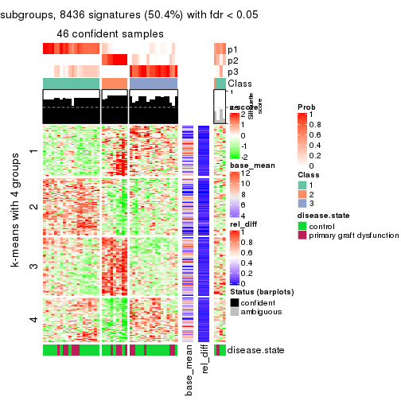
get_signatures(res, k = 4)
get_signatures(res, k = 5)
get_signatures(res, k = 6)

Signature heatmaps where rows are not scaled:
get_signatures(res, k = 2, scale_rows = FALSE)
get_signatures(res, k = 3, scale_rows = FALSE)
get_signatures(res, k = 4, scale_rows = FALSE)
get_signatures(res, k = 5, scale_rows = FALSE)
get_signatures(res, k = 6, scale_rows = FALSE)
Compare the overlap of signatures from different k:
compare_signatures(res)
get_signature() returns a data frame invisibly. TO get the list of signatures, the function
call should be assigned to a variable explicitly. In following code, if plot argument is set
to FALSE, no heatmap is plotted while only the differential analysis is performed.
# code only for demonstration
tb = get_signature(res, k = ..., plot = FALSE)
An example of the output of tb is:
#> which_row fdr mean_1 mean_2 scaled_mean_1 scaled_mean_2 km
#> 1 38 0.042760348 8.373488 9.131774 -0.5533452 0.5164555 1
#> 2 40 0.018707592 7.106213 8.469186 -0.6173731 0.5762149 1
#> 3 55 0.019134737 10.221463 11.207825 -0.6159697 0.5749050 1
#> 4 59 0.006059896 5.921854 7.869574 -0.6899429 0.6439467 1
#> 5 60 0.018055526 8.928898 10.211722 -0.6204761 0.5791110 1
#> 6 98 0.009384629 15.714769 14.887706 0.6635654 -0.6193277 2
...
The columns in tb are:
which_row: row indices corresponding to the input matrix.fdr: FDR for the differential test. mean_x: The mean value in group x.scaled_mean_x: The mean value in group x after rows are scaled.km: Row groups if k-means clustering is applied to rows.UMAP plot which shows how samples are separated.
dimension_reduction(res, k = 2, method = "UMAP")
dimension_reduction(res, k = 3, method = "UMAP")
dimension_reduction(res, k = 4, method = "UMAP")
dimension_reduction(res, k = 5, method = "UMAP")

dimension_reduction(res, k = 6, method = "UMAP")
Following heatmap shows how subgroups are split when increasing k:
collect_classes(res)
Test correlation between subgroups and known annotations. If the known annotation is numeric, one-way ANOVA test is applied, and if the known annotation is discrete, chi-squared contingency table test is applied.
test_to_known_factors(res)
#> n disease.state(p) k
#> ATC:NMF 50 0.3544 2
#> ATC:NMF 46 0.6995 3
#> ATC:NMF 46 0.0982 4
#> ATC:NMF 39 0.4078 5
#> ATC:NMF 41 0.1202 6
If matrix rows can be associated to genes, consider to use GO_Enrichment(res,
...) to perform function enrichment for the signature genes.
sessionInfo()
#> R version 3.6.0 (2019-04-26)
#> Platform: x86_64-pc-linux-gnu (64-bit)
#> Running under: CentOS Linux 7 (Core)
#>
#> Matrix products: default
#> BLAS: /usr/lib64/libblas.so.3.4.2
#> LAPACK: /usr/lib64/liblapack.so.3.4.2
#>
#> locale:
#> [1] LC_CTYPE=en_GB.UTF-8 LC_NUMERIC=C LC_TIME=en_GB.UTF-8
#> [4] LC_COLLATE=en_GB.UTF-8 LC_MONETARY=en_GB.UTF-8 LC_MESSAGES=en_GB.UTF-8
#> [7] LC_PAPER=en_GB.UTF-8 LC_NAME=C LC_ADDRESS=C
#> [10] LC_TELEPHONE=C LC_MEASUREMENT=en_GB.UTF-8 LC_IDENTIFICATION=C
#>
#> attached base packages:
#> [1] grid parallel stats graphics grDevices utils datasets methods base
#>
#> other attached packages:
#> [1] genefilter_1.66.0 ComplexHeatmap_2.1.1 markdown_1.1 knitr_1.26
#> [5] preprocessCore_1.46.0 cola_1.3.2 GEOquery_2.52.0 Biobase_2.44.0
#> [9] BiocGenerics_0.30.0 GetoptLong_0.1.7
#>
#> loaded via a namespace (and not attached):
#> [1] bitops_1.0-6 matrixStats_0.55.0 bit64_0.9-7 doParallel_1.0.15
#> [5] RColorBrewer_1.1-2 httr_1.4.1 tools_3.6.0 backports_1.1.5
#> [9] R6_2.4.1 DBI_1.0.0 lazyeval_0.2.2 colorspace_1.4-1
#> [13] withr_2.1.2 tidyselect_0.2.5 gridExtra_2.3 bit_1.1-14
#> [17] compiler_3.6.0 xml2_1.2.2 microbenchmark_1.4-7 pkgmaker_0.28
#> [21] slam_0.1-46 scales_1.1.0 readr_1.3.1 NMF_0.23.6
#> [25] stringr_1.4.0 digest_0.6.23 pkgconfig_2.0.3 bibtex_0.4.2
#> [29] highr_0.8 limma_3.40.6 rlang_0.4.2 GlobalOptions_0.1.1
#> [33] RSQLite_2.1.2 impute_1.58.0 shape_1.4.4 mclust_5.4.5
#> [37] dendextend_1.12.0 dplyr_0.8.3 RCurl_1.95-4.12 magrittr_1.5
#> [41] Matrix_1.2-17 Rcpp_1.0.3 munsell_0.5.0 S4Vectors_0.22.1
#> [45] viridis_0.5.1 lifecycle_0.1.0 stringi_1.4.3 plyr_1.8.4
#> [49] blob_1.2.0 crayon_1.3.4 lattice_0.20-38 splines_3.6.0
#> [53] annotate_1.62.0 circlize_0.4.9 hms_0.5.2 zeallot_0.1.0
#> [57] pillar_1.4.2 rjson_0.2.20 rngtools_1.4 reshape2_1.4.3
#> [61] codetools_0.2-16 stats4_3.6.0 XML_3.98-1.20 glue_1.3.1
#> [65] evaluate_0.14 png_0.1-7 vctrs_0.2.0 foreach_1.4.7
#> [69] polyclip_1.10-0 gtable_0.3.0 purrr_0.3.3 tidyr_1.0.0
#> [73] clue_0.3-57 assertthat_0.2.1 ggplot2_3.2.1 xfun_0.11
#> [77] gridBase_0.4-7 eulerr_6.0.0 xtable_1.8-4 skmeans_0.2-11
#> [81] survival_2.44-1.1 viridisLite_0.3.0 tibble_2.1.3 iterators_1.0.12
#> [85] AnnotationDbi_1.46.1 registry_0.5-1 memoise_1.1.0 IRanges_2.18.3
#> [89] cluster_2.1.0 brew_1.0-6